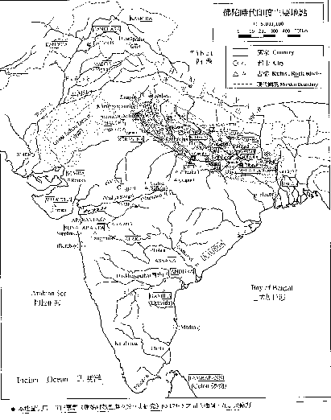
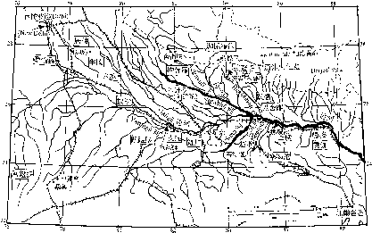

印 度 佛 教 史 (上冊)
平川 彰 著 釋顯如 李鳳媚 譯
印度佛教史(上冊) 目 錄
(頁碼為原書版頁碼)
編輯說明…………………………………………
前言………………………………………………Ⅲ
古印度地圖 (一、佛陀時代印度主要地點； 二、佛教中國)
縮寫表
序章………………………………………………１
何謂印度佛教
印度佛教的時代區分
第一章 原始佛教………………………………
第 一節 佛教以前的印度………………………
第 二節 佛陀時代的思想界……………………
第 三節 佛陀的一生……………………………
佛陀 佛陀的出生
釋尊的出生年代
佛陀的出家
教團的發展
修行 成道
佛陀入滅
初轉法輪
第 四節 教理…………………………………
1
教理大綱
法與緣起
四諦說
十二緣起
中道與無記
實踐論
五蘊無我
佛陀觀
第 五節 教團組織……………………………
佛教教團的理想 四眾
僧伽的修行生活
僧伽 波羅提木叉
第 六節 原始經典的成立………………………
第一結集
九分教與十二分教
第 七節 教團的發展與分裂……………………
佛滅後的教團
政治情勢
第二結集與根本分裂
僧伽的傳承與商那和修
第三結集
末田地與傳道師之派遣
第八節 阿育王的佛教…………………………
法敕 阿育王的法
護持僧團
第二章 部派佛教………………………………
第一節 部派教團的分裂與發展………………
部派佛教的特徵
第二結集與第三結集
枝末分裂
部派分裂的資料
部派教團的發展
錫蘭上座部
第二節 阿毗達磨文獻………………………
論藏的成立
從經藏到論藏
上座部的論藏
說一切有部的論藏
其他部派的論藏
2
注釋書
其他部派的論書
第 三節 阿毗達磨的思想體系………………
阿毗達磨與論母
勝義有與世俗有
達磨與阿毗達磨
有為法與無為法
勝義阿毗達磨與世俗阿毗達磨
無為法與佛身
有漏法．無漏法
達磨的種類
物質觀
法的相攝
煩惱 分析心理．心所法
心心所法的俱生 其他部派的心所論
巴利佛教的心所 主體的統一與持續
心不相應行
五位七十五法
第 四節 世界的成立與業感緣起……………
三界
四種緣起
世界的破壞和生成 輪迴
六因．四緣．五果
業感緣起
第 五節 業與無表色…………………………
法與業
三種行為
業說的起源
業的本質
表業與無表業
成為戒體的無表色
三種律儀
業的種類與善惡標準
三世實有與過未無體
第 六節 煩惱斷盡與修行的次第……………
煩惱的意義
九十八隨眠
百八煩惱
修行次第
三賢．四善根
巴利上座部的修行道位
見道．修道．無學道 十智
禪定 三界與涅槃
3
第三章 初期大乘佛教………………………
第 一節 阿育王以後的教團發展……………
阿育王歿後的印度
巴爾胡特與桑其 西北印度與希臘諸王
熏迦王朝
迦努瓦王朝
塞迦族入侵 安息
貴霜王朝
安達羅王朝 窟院
佛塔、僧院的遺跡與大乘教團
第 二節 拘舍羅時代的大乘經典………………
支婁迦讖所譯經典
般若經南方起源說
最早的大乘經典
後五百歲的意義
第 三節 大乘佛教源流………………………
大乘與小乘
大乘佛教三源流
本生與教訓譬喻
大小乘的意義
部派佛教與大乘
佛塔信仰與大乘
佛傳文學
第 四節 初期大乘經典的思想…………………
最早的大乘經典
般若經系的經典
華嚴經
法華經
淨土經典
文殊菩薩經典
其他大乘經典
梵語原典
第 五節 初期大乘佛教的思想與實踐………
菩薩的自覺與自性清淨心
波羅蜜行與弘誓大鎧
陀羅尼與三昧
菩薩教團
菩薩的修行
菩薩的階位
4
索引
〔下冊目錄〕
第四章 後期大乘佛教
第一節 教團的隆替
第二節 龍樹與中觀派
第三節 第二期大乘經典
第四節 瑜伽行派的成立
第五節 唯識教理
第六節 如來藏思想
第七節 中觀派的發展
第八節 瑜伽行派的發展
第九節 佛教邏輯學的展開
第五章 秘密佛教
第一節 秘密佛教的意義
第二節 原始佛教時代的秘密思想 第三節 從大乘佛教到密教
第四節 純正密教的成立 第五節 中期．後期的密教
〔略號表〕
AN. Agguttara-Nikāya （增支部）
5
DN. | Dīgha-Nikāya | （長 部） |
KN. | Khuddaka-Nikāya | （小 部） |
MN. | Majjhima-Nikāya | （中 部） |
SN. | Saṃyutta- Nikāya | （相應部） |
Sn. | Suttanipāta | （經集部） |
VP. | Vinaya-Piṭaka | （律 藏） |
VP.以外的巴利語原典皆根據巴利聖典協會（PTS）之原典。
大正 大正新修大藏經（冊數，頁數，上．中．下欄） 南傳 南傳大藏經
印佛研 印度學佛教學研究（冊數，期數）
6
I
《印度佛教 史 上卷》編輯說明
平川彰著《印度佛教史 上卷》，由顯如法師（一 九四九︱一九九八）翻譯，以「顯證」的筆名，於一 九七九年一月起，在《淨覺雜誌》連載四十五期。他 往生之後，善友們著手整理他的遺作時，才驚覺這部 譯作已被遺忘，尚未編輯成書。編輯部取得該書手稿， 並向台南妙心寺「中華佛教百科文獻基金會佛學資料 中心」請求影印《淨覺雜誌》的連載文稿，請新竹法 華寺地觀法師以電腦作業來掃描文稿，節省重新打字 的費時費力。再商請李鳳媚小姐對照日文原書，校正 錯誤並補足略譯的部分，歷時約一年多。
本書為東京大學名譽教授平川彰一九七四年的作 品，平川教授的寫作風格極其詳實，論理分明並層層 剖析，往往在艱難處娓娓道來，令人茅塞頓開。《印度 佛教史》旨在為初學者介紹印度佛教，書分上下兩冊， 本書為上冊；除了有平川教授一氣呵成地推介每個論 點的特色外，每一節後面並附有參考書目，供讀者作 更深入的研究，堪稱佛教史入門書中的最佳選擇。唯 其寫作時間較早，故無法照顧到一九七四年後的作品。
若是想瞭解、學習原始佛教，或是在研究部派佛教， 必須處理到原始佛教的某些議題時，本書（上冊）業 已足夠。至於要學習「後期大乘佛教」與「秘密佛教」 的教理，就須研讀本書之下冊。很慶幸，佛光出版社 即將推出上、下冊完整版，請讀者自行請書。
本書的出版，感謝李鳳媚小姐細心、認真地重新
I
II
校訂與翻譯，致力呈現原作者風貌，並耗費時日
編輯索引。發心校對者，有明法比丘、許銘泉、李樹 銘、蔡秀嫚等。感謝諸善友的熱心護持，願本書的出 版，使世間善法興盛，佛法增輝，台海和平。
嘉義新雨道場 啟 二○○一年三月
編按：本書參考資料中，提到日本年號，在此提供參 考：明治一八六七~一九一二年，
大正一九一二~一九二六年，昭和一九二六~一 九八八年。
II
III
前言
印度素稱沒有歷史的國家，幾乎可以說完全沒有
確切的年代性資料。因此想要寫出一本《印度佛教 史》，當然是件不可能的事。但因為根據歷史發展來理 解印度佛教，是一件很重要的事，所以我認為，一定 要在能力所及的範圍內嘗試著去做。
明治以後，我國和西方國家在印度佛教的研究方 面，都有長足的進步，歷史部分方面的研究成果不勝 枚舉，並基於這些研究成果，出版了印度佛教史、印 度哲學史、印度精神史、印度思想史等書籍。本書也 效法這些學術先鋒，試著根據目前印度佛教的研究成 果，盡可能結合歷史發展來敘述印度佛教。敘述時儘 量遵照學術界的定論，只是尚未定案的問題也不少， 例如「佛滅年代論」等就是。根據錫蘭《島史》，部派 教團的枝末分裂在阿育王之前就已經結束了，也就是
說，阿育王是處於部派佛教分裂時的人。相對於此， 根據北傳佛教的話，阿育王即位後，部派才開始分裂。 這個問題不單是「阿育王是部派分裂前出現？還是之 後出現？」，而是如此一來，當時佛教教團發展史的觀 點都會因此而完全改觀。在本書中，筆者遵循了可以 合理地理解佛教歷史發展的年代論，但由於這些尚未 成定論，所以自然也不否認其他觀點成立的可能性。 除此之外，這類爭議性問題在印度佛教中不算 少，因此似乎可以說，根本不可能寫出一部標準的印 度佛教史。在這種情況下，也許可以使用列舉不同言
III
IV
論的方法，不過在本書中，將根據筆者認為妥當
的說法，呈現出單一結論的佛教史。但本書是一部概 論書，所以也避免一一論證書中採用的理論根據。有 些地方按照括號中大正大藏經的冊數與頁數，以及巴
利聖典協會（P.T.S.）發行的巴利聖典，來表示論述根 據的經論出處；有些敘述出處的地方，是表示學者的 研究成績。但是在處理這部分時，並沒有做得很完整， 大部分是從方便初學者作研究的角度來標示。
本書動筆之初，本來計劃完成一部包含日本佛教 的書籍，所以僅止於以呈現略述及參考書的方式來動 筆。但是由於正值東京大學學運如火如荼地展開之際 執筆，在時間不固定、無法平均分配全書寫作比例， 以及在極為緩慢的寫作進度下，最後只寫出印度佛教 史，分為上、下兩冊，中國佛教史、日本佛教史的敘 述部分決定作罷；而且印度佛教史的敘述方式，也有 前後不連貫之處。不過本書內容朝兩個方向努力：一、 以某些沒有斷層、相互關連的變遷，來理解印度佛教
史；二、編寫出一本初學者也可以看得懂的，平易近 人的佛教史。因此，詳細地比較說明從原始佛教到部 派佛教的教團史發展，以及初期大乘佛教興起的情 形、大乘諸經典的內容等方面。此外關於部派佛教的 教理、中觀派．唯識佛教或是如來藏思想等方面，也 注意到要用淺顯的方式說明。因此，龍樹以後的佛教 敘述份量就擴大了，這些就分配到下冊。
本書的完成，當然有賴過去各學者的研究成果。 然而印度佛史的相關研究成果畢竟十分龐大，筆者能
IV
V
夠理解的，只不過是這些成果的一小部分而已。
因此本書的內容可能有料想不到的錯誤，如果讀者能 夠不吝指教的話，這部作品就能更臻完善。此外，關 於本書的完成，謹向長時間策勵筆者的春秋社神田龍
一先生，以及在出版方面多方關照的日隈威德先生深 表謝忱。
一九七四年六月一日
筆者謹識
V

古印度地圖(一) 佛陀時代印度主要地點
古印度地圖(二)佛教中國
● 本圖由「嘉義新雨道場」繪製
● 國名：AṄGA 鴦伽、ASSAKA 阿攝具、AVANTI 阿槃提、CETĪ 支提(枝
VI
提)、GANDHĀRA 乾陀羅、KALIṄGA 迦陵伽、KANBOJA 劍洴沙、KĀSI 迦尸、KOSALA 拘薩羅(憍薩羅)、KURU 居樓(拘樓)、MACCHĀ 婆蹉、 MAGADHA 摩揭陀、MALLĀ 末羅(力士)、MADDA 摩達、MATHURĀ 摩偷羅、PAÑ CĀLA 半闍(般舍羅)、SOVīRA 蘇尾囉、SUNĀPARANTA 輸那缽羅得迦(輸那)、SŪRASENA 蘇婆羅、SURAṬṬHA 蘇剌佗、VAJJĪ 跋耆(拔祇)、VAṀSĀ 拔沙、VESĀLI 毘舍離、VIDEHA 尾提訶
● 城市名：Aparāntaka 阿波蘭多哥、Bairāt 白拉特、Bārāṇasī 波羅奈、Campā 瞻婆、Gayā 迦耶、Girnār 吉爾那爾、Indapatta 因陀波達(Delhi 德里)、 Kajaṅgala 迦徵伽羅、Kaṇṇkujja 曲女城、Kosambī 拘睒彌(憍賞彌)、 Kapilavatthu 迦毘羅衛、Kusinagārā 拘尸那、Lumbinī 藍毘尼 Nānadā 那爛 陀、Pāṭaliputta 巴連弗(華氏城)、Patiṭṭhāna 波提塔那、Pāvā 波婆城、Potala 補坦洛、Rājagaha 王舍(羅閱)城、Roruka 路樓、Sāketa 沙計多(Ayojjhā 阿 踰陀)、Sāvatthī 舍衛城、Sāgala 沙竭、Sāñchī 桑其、Saṅkassa 僧迦施、 Suppāraka 蘇波羅哥、Takkhasilā 得叉尸羅、Kammāsadamma 劍摩沙、Ujjenī
鄔闍衍那(優禪尼)、Vedisa 卑提寫
VII
M jhimadesa

( )
22
VllI
序章
【印 度 佛 教 史】 序章
何謂印度佛教 佛教本來就是起源於印度、發展於印度 的宗教，因此似乎沒有必要特別稱為「印度佛教」；不過， 後來佛教越過印度國境，遍及全亞洲，發展出南傳佛教、西 藏佛教、中國佛教、日本佛教等各具特色的佛教。在這些蓬 勃發展的佛教中，已經增添了各個地域的民族特色及風土特 色。一般認為，因為和這些佛教相較之下，印度佛教之中也 有其他佛教所沒有的特色，所以就產生了「印度佛教」這個 名稱。印度佛教和中國佛教或日本佛教比較起來，由於氣 候、風土的緣故，在修行生活上也有很大的差異。修行生活 一旦不同，當然也就會反映到教理上；就這一點而言，南傳 佛教（錫蘭、緬甸、泰國等佛教）的氣候、風土和印度本土 相似，因此南傳佛教在生活方面，與印度佛教類似之處頗 多。總之，如果以地域來區分佛教的話，可能就必須闡釋出 整體佛教共通的普遍性，以及各個地區佛教特有的特殊性。 此處預計簡單地瀏覽印度佛教有別於中國、日本佛教的特殊 性質。
佛教此一宗教是由創始者釋尊（釋迦牟尼、喬達摩．悉 達多），在西元前五世紀時開創的。釋尊誕生於位於北印度 至尼泊爾一帶的釋迦國，出家後來到中印度恆河南岸地區的 摩竭陀國，之後就在這一帶修行，三十五歲悟道成佛（覺 者）。他說明此一自覺是「了悟不死」，而且也表明自己「發 現自苦解脫之道」。人生有種種的苦，死亡的恐怖是其中之 最，因此才將領悟了解決人生苦惱的真理，表達為「了悟不 死」吧。這中間也顯示出一種確信，認為即使佛陀的肉體到
1
序章
了八十歲就會滅亡，然而心則和永遠的真理合一了。總之，
既然人生的苦惱一直是人類有待解決的問題，那麼很明顯 地，在解答這個問題方面，自苦解脫之道似乎深具普遍性； 也因此，佛教才住世至今。那麼，為什麼佛教會在印度滅亡
呢？
西元前五世紀於中印度興起的佛教，在佛陀入滅之際， 還只不過是分佈在中印度的地區教團。但是之後有賴弟子的 努力，首先往西方及南方傳教。其後在西元前三世紀的阿育 王時代，由於王的歸依，佛教更迅速地擴及全印度。不過就 在教團擴大、人數逐漸增多之際，教團內部在解釋教理和實 踐戒律方面產生了對立的意見，原始佛教教團便分裂為兩 派，而後成立了先進的大眾部和保守的上座部。後來這兩部 都發生枝末分裂，因此最後就出現了許多部派教團，進入所 謂的「部派佛教」時代。分裂為十八部或二十部的說法都有， 不過根據碑文可知，有二十部以上的部派名稱。其中，上座 部系的上座部、說一切有部、正量部、經量部，大眾部系的 大眾部等較佔優勢。西元前後起，大乘佛教興起，被大乘攻 擊為「小乘佛教」的，應該就是說一切有部了。只因為說一 切有部在教團方面的勢力很強，同時在教理上也能提出一套 完善的體系，擁有足以與大乘佛教相抗衡的殊勝教理。
總而言之，佛教就這樣分裂成許多部派，而各個部派都 被公認為佛教，這是因為佛教一向都很重視個人思想和開悟 上的自由；也就是說，佛教是一個自覺的宗教。《文殊問經》 解釋此部派分裂為：佛二十個親生兒子解釋佛陀的教法，他 們都受持了佛陀真正的教法，只是解釋各有不同。《南海寄 歸內法傳》則介紹了一則金杖折斷成十八截的古老譬喻，認
2
序章
為即使分成了十八部，佛法的本質也不會改變。由此可知，
部派佛教都能互相認同對方是佛教，原因在於佛教並非奠基 於盲目信仰之上；一般認為，這一點是佛教殊勝之處，但同 時卻使得教團很容易產生異說，而且也成為減弱佛教內在本
質的理由之一。亦即佛滅五百年左右，順應時代的大乘佛教 興起，其中包含了原始佛教中看不到的種種雜質。當然佛陀 的精神並沒有被遺棄，而且可以說，大乘佛教藉由不同的看 法來適應新時代，配合時代有效地發揮佛陀的精神。然而其 中自然也隱含了某種危險性：如果這些雜質足以吸引人們的 注意力，當再一次的大轉變時，佛陀的思想就會佔極少的部 分。
也就是說，在一開始，大乘佛教的咒術成分很高，這是 為了要順應民眾的要求，也有不得已之處。《般若經》中業 已強調，可藉由受持《般若經》避去危難，並稱《般若經》 是「大神咒」、「大明咒」。《法華經》也宣說，信仰觀世音菩 薩可以免除一切災害。進一步與這些避禍思想結合後，大乘 經典中的陀羅尼信仰就逐漸擴大。如此一來，咒術成分逐漸
在大乘佛教中佔優勢，約從西元六世紀開始，密教就大行其 道。密教也算是佛教之一，但是其表面的儀式幾乎和印度教 如出一轍，因此如果忘失基本精神，只重視表面儀式的話， 密教就會消融於印度教之中。因為印度教和密教同是印度宗 教，所以在印度，兩者似乎很容易就可以融合在一起。相對 於此，一般認為，中國佛教及日本佛教、南傳佛教等，都是 移植於不同國土的佛教，因此印度文化乃至佛教的本質都不 容易和當地文化融合，所以導致佛教的特色被突顯、保存下 來。同理，在比較中國或日本密教與印度密教時，好像也可
3
序章
以說得通。在中國及日本的密教，其印度教儀式的形式中，
是以佛教的空觀思想為支柱，因此密教並沒有喪失佛教的本 質；而在印度，佛教失控地密教化，乃至印度教化，最後密 教還是忘失了佛教本質。
初期大乘佛教是個極為多彩多姿的宗教，除了《般若 經》、《法華經》、《華嚴經》之外，也結合了阿彌陀佛信仰。 後來自西元二世紀起，逐漸在這些經典中加入理論，且立足 於空觀的中觀派成立；但是一開始因為沒有對立的第二個學 派，所以似乎沒有特別稱為「中觀派」。我想，此一名稱的 產生，是因為後來有瑜伽行派興起。瑜伽行派約晚中觀派一 百年成立，其根據是唯識思想。其後的數百年是兩學派並行 的時代；在瑜伽行派興起前，宣說唯識思想及如來藏思想的 經典，即《解深密經》、《如來藏經》、《勝鬘經》、《涅槃經》 等作品就已經問世了。中觀、瑜伽兩學派並行發展的同時， 也互相受對方影響，隨著時間而融合在一起，同時兩派也都 已經密教化了。此外，大乘佛教興起後，部派也蓬勃發展， 在五世紀初旅行印度的法顯所著的《佛國記》，以及七世紀
前半留學印度的玄奘所著的《大唐西域記》，以及後來的義 淨的《南海寄歸內法傳》等書中，都可以清楚這件事。而且 部派佛教也曾經在某個時候，比大乘佛教還佔優勢，特別是 義淨（西元六五三～七一三）停留在印度時，大乘佛教與小 乘佛教之間也都沒有明確的區分，似乎很密切地融合在一 起；從這段時間開始，密教就急遽地擴大起來。簡單來說， 就是大乘和小乘都已經密教化了，再加上印度教的興盛、回 教徒入侵印度，佛教失去了勢力；在十二世紀末時，超行寺
4
序章
譯注為回教徒焚毀，佛教就在印度滅亡了。但是並非完全滅
亡，之後佛教還繼續存在於孟加拉地區，現在的東孟加拉地 區，雖然早期佛教徒很少，但還存在著。
總之，回教徒入侵印度後，印度教徒還維持著龐大的勢 力，而耆那教徒等信徒雖少，但是絕對不會滅亡。反觀曾經 到達號稱「佛教印度」的盛況般，遍及全印的佛教，為什麼 會消失殆盡呢？
如上述，佛教並沒有在確立教義後，激烈抨擊以外的思 想是「異安心」譯注，我認為這是導致佛教教理逐漸改觀的最 大原因；但是，教理改觀絕對不是意味著錯了，如果個人的 能力不同、時代也不同，那麼宣說相應時機的法是正確的。 從這個角度來看的話，也可以說，釋尊的教說結束了使命 後，消滅的時機隨時都有可能到來，這是無法避免的。佛教 教團之中，自古就有正法滅亡等正、像、末三時的說法，這 正印證了上述的觀點。
但是不嚴格規定教義的，並不只有佛教，印度教等同樣 也如此。印度教聖典的代表是《薄伽梵歌》，這部作品也允
許自由加入解釋。嚴格規定教義的舉動，在印度教中相當少 見。因此，佛教會在印度滅亡，應該另有原因；我想，最大 的原因是在於，佛教否定了「我」。佛教自原始佛教以來， 就主張「無我」，這無異與印度傳統的「我」的宗教為敵。「我」 的存在與輪迴思想有密不可分的關係，而輪迴思想可以說已 經到達與印度人息息相關的程度。因此在印度，佛教也接受 輪迴思想，使教理基於輪迴思想而發展起來。但是釋尊的佛

譯注：vikramasilā，位於北印烏仗那（Udyāna）地區。 譯注：淨土真宗用語，指依照不同的教義得到安心的境界。
5
序章
教並非一定要承認輪迴思想才能成立；當然也沒有與輪迴思
想矛盾之處。因為如果生存是輪迴的話，所謂的自苦解脫， 就意味著自這個輪迴的生存中解脫出來，所以根本沒有必要 積極地抨擊輪迴思想。因此，輪迴思想也匯入佛教之中，但
佛陀的目的其實是自輪迴中解脫。
不過，如果承認輪迴思想的話，就一定要有輪迴的主 體。因此佛教在宣說「無我」的同時，也逐漸以有別於「我」 的形式，來承認輪迴的主體。唯識思想的阿賴耶識以及如來 藏思想的如來藏、佛性等，都是與「我」極為相似的觀念。 於是連在部派佛教中，主張機械式「無我說」的說一切有部， 也逐漸失去勢力；正量部主張另一種「我」的補特伽羅（人 我），其勢力在後代則變得極為強大。這些事在玄奘及義淨 的遊記中有明確記載。當時，相較於有部的失勢，正量部已 經盛行印度全境。佛教在朝氣蓬勃的新興時代中，極力主張
「無我」及「空」的思想，然而隨著時代的演變，教理逐漸
遭受改觀之際，也漸漸被「我」的思想同化，緊接著佛教就 在印度失去了勢力。我認為，佛教一開始沒有「我」的說法，
是佛教在印度滅亡的最大因素譯注。同時，印度佛教是與輪迴 思想結合的佛教，這一點就是印度佛教的特色。因為中國佛 教與日本佛教都是印度佛教的移植，表面上雖然接受了輪迴 思想，但是本質上並不是一個以輪迴思想為主的佛教。因為 中國人及日本人自古的靈魂觀，並非奠基於輪迴思想。當然 關於這一點，似乎有必要進一步詳細論述，只是已經偏離主

譯注：印度佛教滅亡的最大因素，應是學習、實踐、體證、弘揚佛法方 面不盡理想；至於外在原因，理應不是「根本的因素」或「最大的因 素」。
6
序章
題，故略去不談，這裡僅指出，佛教的目的是「自苦解脫」，
以及印度佛教是輪迴思想的佛教。
印度佛教的時代區分 本書預計將印度佛教史分為原 始佛教、部派佛教、初期大乘佛教、後期大乘佛教、密教等 五章來敘述；其中並將前半的原始佛教、部派佛教、初期大 乘佛教，收錄於《上冊》，而後期大乘佛教、密教則編入《下 冊》。此外，在第一章的「原始佛教」中，著重於闡釋佛陀 思想，儘量藉由敘述佛陀的傳記與教團的成立，呈現出原始 佛教的情形；接下來，佛滅後，佛教教團逐漸發展，但是欠 缺資料，因此探討佛教教團在阿育王之前的發展，同時敘述 阿育王的佛教後，第一章結束。一般認為，從內容上來看， 阿育王的佛教並非接下來要談的部派佛教，而是與原始佛教 同性質的佛教，因此收錄在第一章中。
原始佛教教團於佛滅百餘年後，分裂為上座部與大眾 部，接著兩者又發生枝末分裂，進入了所謂的部派佛教時 代。從教理的立場來看，部派佛教被稱為阿毗達磨（論藏） 佛教，與原始佛教的性質大不相同；因此區分為原始佛教與 部派佛教，是很正常的。往後部派佛教還繼續存在一千年， 其獨特教理的擴大，完成於最初三百年左右，當時約西元前 後三百年。一般都說部派佛教共有十八部或二十部，但是實 際上也許還更多，而且這些部派的成立時間也不盡相同。此 外我們大致上能確實知道的部派佛教的教理，僅止於錫蘭上 座部與說一切有部，其他部派的教理只能知道其中一部分。 至於經量部與正量部到了西元以後，成為十分盛大的部派， 雖然好像也發展出完善的教理，但很遺憾的是，無從得知這 些教理的詳細內容。總之，部派佛教存在了一千年以上，西
7
序章
元六七一年，義淨到達印度時，上座部、有部、正量部、大
眾部等，都還很興盛。其後逐漸融入大乘佛教中，一起走向 密教化，但並不清楚這時候部派佛教的實際情況。
西元前後，與此部派佛教同時的，是新興的大乘佛教。 可能在西元前一世紀時，就已經有大乘經典存在了。大乘佛 教極力主張空的思想，這一點與阿毗達磨佛教大異其趣。空 的思想業已存在於原始佛教，不過大乘佛教特別強調這一 點。而且大乘佛教進而不站在學生的立場學習佛教，而是仰 慕佛陀的行跡，主張想與佛陀站在同樣的立場去救度眾生。 大乘佛教稱部派佛教為「聲聞乘」，聲聞有「弟子」的意思； 因此大乘佛教就是從學習立場轉換為教導立場的佛教。所以 大乘佛教採用稱呼佛陀修行階段的「菩薩」（求開悟者）來 稱呼自己，並稱自己的教法為「菩薩乘」。此一聲聞乘與菩 薩乘的對立，之後演變成小乘與大乘的對立。總之如此一 來，從西元前一世紀左右起，許多大乘經典就由無名的菩薩 所完成。一般認為，這段期間是自西元前至西元後的兩百 年。擬於第三章「初期大乘佛教」中，敘述大乘佛教的起源
問題，以及初期大乘經典的思想。 第四章「後期大乘佛教」中，敘述興起於西元二世紀後
的中觀派思想、其後興起的瑜伽行派──唯識思想、以及與 之同時出現的如來藏思想等，接著要探討之後繼續發展的因
明學。中觀派後來分裂為自立論證派與歸謬論證派，然後這 兩派都與瑜伽行派結合，成立了瑜伽中觀派等。於是中觀派 與瑜伽行派的論師，逐漸形成同時都是密教論師的關係。但 是六、七世紀起，蓬勃發展的密教與後期大乘佛教有什麼樣 的關係，就無從得知了。
8
序章
書中最後敘述密教，不過密教留下了龐大的經典，而且
大部分都還有待整理，日後有必要對密教作正式的研究。在 研究密教時，研究印度教是不可或缺的條件；然而理解密教 時，除了理論外，事相上的研究也是必備的，從這些地方來
看的話，就可以體會到研究密教的困難度。總之，密教的區 隔方式是自稱「密教」，並稱之前的大乘佛教為「顯教」，因 此很明顯地，密教與大乘佛教的性質不同，所以才決定要立 密教為第五章（下冊），並且在可能的範圍內，試著對密教 教理作概觀式的介紹。
如上，以歷史來區分印度佛教，此外也有人用朝代的區 分來敘述，只是本書以說明佛教教理發展為主，因此採用上 述這五個區分方式。佛教活躍於印度，自西元前五世紀左右 起，一直到西元後十世紀後，這是一段漫長的時間，但是從 整部印度史看來，也只不過一半而已。一般的印度史中，稱 土耳其裔的回教徒入侵印度（十一世紀左右）為中世，之前 為古代，而英國人統治後為近代。從這個時代劃分來看的 話，「佛教印度」主要應該是屬於古代。因此要注意的是，
如果單只研究佛教以及同時代的印度哲學思想的話，也只不 過了解到印度思想的一半而已。
參考書目 宇井伯壽《印度哲学史》（大本、小本），昭和七、十一年。 同上《仏教思想研究》，昭和十五年。 同上《仏教汎論》上下，昭和二二、二三年。 竜山章真《印度仏教史》昭和十三年。 赤沼智善《仏教教理之研究》，昭和十四年。
9
序章
同上《仏教経典史論》昭和十四年。
金倉円照《印度古代精神史》，昭和十四年。 同上《印度中世精神史》上中，昭和二四、三七年。 同上《印度哲学史要》，昭和二三年。 同上《インド哲学史》，昭和三七年。 宮本正尊《根本中と空》，昭和十八年。 同上《大乘と小乘》，昭和十九年。 同上《中道思想及びその発達》，昭和十九年。 同上編《仏教の根本真理》，昭和三一年。 中村元《インド思想史》，昭和三一年。 山田竜城《梵語仏典の諸文獻》，昭和三四年。 山口益．橫超慧日、安藤俊雄．舟橋一哉《仏教学序說》，昭和三六年。 山口益《仏教思想入門》，昭和四三年。 同上《インド仏教破析の一遠因》（《山口益仏教学文集》上，昭和四
七年） 渡辺照宏《仏教のあゆみ》，昭和三二年。
水野弘元《仏教とはなにか》，昭和四十年。
岩本裕《インド史》，昭和三一年。 山本達郎編《インド史》，昭和三五年。 中村元《インド古代史》上下，昭和三八、四一年。
T.W. Rhys Davids: Buddhist India. London, 1903.
Sir C. Eliot: Hinduism and Buddhism. 3 vols, London, 1921.
E.J. Thomas: The History of Buddhist Thought. London, 1933.
E. Conze: Buddhism Its Essence and Development. Oxford, 1951.
E. Conze: Buddhist Thought in India. London, 1962.
L. Renou, J. Filliozat: L’inde Classique. Tome, II, 1953.
10
序章

. Lamotte: Histoire du Boudhisme Indien. Louvain, 1958.
P.V. Bapat: 2500 Years of Buddhism. Delhi, 1959.
A. Bareau: Der Indische Buddhismus. Stuttgart, 1964.
E. Frauwallner: Die Philosophie des Buddhismus, Berlin, 1969.
R.C. Majumdar: H. C. Raychaudhuri, Kalikinkar Datta: An Advanced
History of India. London, 1965.
D.D. Kosambi: The Culture and Civilisation of Ancient India in Historical Outline. London, 1965.（山崎利男譯《インド古代史》， 昭和四一年）
11
12 第一章 原 始 佛 教
第一章 原始佛教
12
第一章 原 始 佛 教 13
第一節 佛教以前的印度
要 了 解 佛 教 ， 似 乎 有 必 要 簡 單 介 紹 之 前 的 印 度 宗 教 思 想。西 元 前 十 五 世 紀 左 右，阿 利 安（ Ārya） 人 越 過 興 都 庫 什 山 脈 入 侵 印 度 ， 建 立 了 印 度 文
明 。 但 是 在 此 之 前 ， 印 度 本 土 已 有 原 住 民 族 孟 達
人（ Muṇḍa）、 陀 羅 毗 荼 人 （ Draviḍa） 等 。 尤 其 陀 羅 毗 荼 族 人 口 眾 多 ， 文 化 發 達 ， 在 被 阿 利 安 人 征 服 、 淪 為 阿 利 安 社 會 的 奴 隸 階 級 後 ， 對 於 印 度 文 化 之 形 成 ， 仍 然 深 具 有 形 或 無 形 的 影 響 ； 特 別 是 宗 教 中 的 女 神、蛇 神 和 樹 木 崇 拜 等，一 般 認 為， 對 後 世 印 度 教 的 成 立 影 響 甚 大 。
陀 羅 毗 荼 人 和 阿 利 安 人 混 合 成 為 印 度 人 ， 不 過 現 在 的 印 度 半 島 南 部 還 住 有 比 較 純 種 的 陀 羅 毗 荼 人 ， 仍 然 使 用 陀 羅 毗 荼 系 的 語 言 。 此 外 ， 印 度 河 流 域 的 原 住 民 族 在 阿 利 安 人 入 侵 之 前 ﹐ 已 經 建 立 所 謂 的 印 度 河 文 明 （ Indus civilization）， 據 推
測 ， 是 在 西 元 前 二 千 年 的 前 後 一 千 年 之 間 。 在 產 生 此 文 明 之 地 方 面 ， 印 度 河 流 域 的 哈 拉 帕 (Harappā)和 孟 黑 就 達 羅 (Mohenjo-daro)二 都 市 尤 具 代 表 ； 根 據 後 來 的 挖 掘 研 究 知 道 ， 這 一 文 明 流 布 的 地 域 十 分 遼 闊 。 從 出 土 的 文 物 來 看 ， 這 一 民 族 已 擁 有 青 銅 器 文 明 ， 並 具 有 完 整 的 都 市 形 態 ； 而 且 和 宗 教 有 關 的 出 土 物 方 面 ， 有 許 多 被 認 為 和 後 世 的 印 度 教 有 極 深 的 關 係 。 但 儘 管 此 一 文 明 廣 佈 千 年 之 久 ， 由 於 突 然 間 消 失 無 蹤 ， 其 後 來 如 何 與 印 度 文 化 發 展 結 合 ， 便 不 得 其詳了。
13
14 第一章 原 始 佛 教
侵 入 西 北 印 度 的 阿 利 安 人 定 居 於 印 度 河 上 游
旁 遮 普 （ Panjāb）地 區 ， 成 立 了 以 梨 俱 吠 陀
（ Ṛg-veda） 為 中 心 的 宗 教 （ 西 元 前 一 二 ○○年
頃 ）。這 是 崇 拜 天 空、雨、風、雷 等 自 然 界 力 量為 神 祇 的 多 神 教 。 西 元 前 一 千 年 左 右 ， 阿 利 安 人 更 向 東 佔 據 了 閻 牟 那 河（ Yamunā）和 恆 河（ Gaṅgā） 之 間 的 肥 沃 土 地 。 由 於 此 地 物 產 富 饒 ， 也 沒 有 外 敵 入 侵 ， 在 長 期 的 和 平 中 ， 發 展 出 豐 富 的 文 化 ； 成 為 後 世 印 度 文 化 特 徵 的 種 種 制 度 ， 大 致 確 立 於 這 個 時 代（ 西 元 前 一 ○○○～五 ○○年 ）。梨 俱 吠 陀 成 立 後 至 西 元 前 一 千 年 左 右 ， 依 次 成 立 了 沙 摩 吠 陀
（ Sāma-veda）、 夜 柔 吠 陀 （ Yajur-veda）、 阿 達 婆 吠 陀 （ Atharva-veda）。 隨 後 ， 說 明 祭 祀 方 式 的 梵
書（ Brāhamaṇa， 西 元 前 八 百 年 頃 ） 文 獻 和 哲 學
思 索成果 的 奧 義 書（ Upaniṣad，西 元 前 五 ○○年 頃 ） 文 獻 也 相 繼 成 立 。
這 時 代 的 阿 利 安 人 分 成 各 部 族 生 活 ， 以 農 、
牧 為 主 ， 工 商 業 也 同 時 發 達 起 來 ， 但 大 都 市 尚 未 成 立 。 職 業 也 進 行 分 工 ， 執 行 祭 祀 的 婆 羅 門 階 級
（ Brāhmaṇa）， 掌 理 軍 政 的 貴 族 階 級 ～ ～ 剎 帝 利
（ Kṣatriya）， 其 下 從 事 農 牧 工 商 等 的 庶 民 階 級 ～
～ 吠 舍（ Vaiśya），義 務 侍 奉 以 上 三 階 級 的 奴 隸 階 級 ～ ～ 首 陀 羅 （ Śūdra） 等 四 姓 （ varṇa） 差 別 便 是 在 這 時 代 確 立 ； 這 便 是 之 後 再 發 展 出 更 複 雜 的 階 級 制 度 （ caste） 的 本 源 。 不 同 的 階 級 之 間 ， 彼 此 不 能 婚 嫁 或 共 同 進 食 。
14
第一章 原 始 佛 教 15
隨 著 阿 利 安 人 的 發 展 ， 部 族 間 產 生 對 立 和 統
一 ， 弱 小 部 族 逐 漸 被 統 一 後 ， 發 展 為 推 選 出 擁 有 獨 裁 政 權 的 王 （ rājan） 的 王 國 。 其 中 著 名 的部族 戰 爭 ， 有 當 時 最 強 的 波 羅 達 族 和 普 魯 族 之 戰 ； 結
果 產 生 了 流 傳 後 世 的 長 篇 敘 事 詩 《 摩 訶 波 羅 多 》
（ Mahābhārata）。 在 當 時 的 王 方 面 ， 以 有 毗 提 訶 國 王 遮 那 迦 （ Janaka） 最 為 有 名 。「 毗 提 訶 」
（ Videha）是 婆 羅 門 教 的「 中 國 」（ 閻 牟 那 河 和 恆 河 之 間 的 國 土 ） 以 東 的 國 家 ， 意 味 著 阿 利 安 人 從
「 中 國 」 再 往 東 發 展 到 了 恆 河 中 游 地 方 。 隨 著 國 土 擴 展 ， 貴 族 的 勢 力 增 強 ， 與 原 住 民 族 的 接 觸 更 深 ， 產 生 了 和 西 方 婆 羅 門 中 心 不 同 的 貴 族 中 心 的 思 想 文 化 。 佛 教 的 教 祖 喬 達 摩 出 現 的 時 間 ， 正 好 就 在 這 個 時 候 。
參考書目
辻直四郎編《印度》，昭和十八年。 辻直四郎《ヴェーダとウパニシャッド》，昭和二八年。 同上《インド文明の曙》，昭和四二年。 同上《リグ・ヴェーダ讚歌》（岩波文庫），昭和四五年。 及前節所列之參考書目。
15
第一章 原 始 佛 教
第二節 佛陀時代的思想界
佛教的創始者喬達摩（Gotama），誕生於西元前五
○○年左右；這時正值中印度社會、思想的變動期；一 般認為，佛陀得以生於此一社會變遷時期，是佛教能夠 順利發展於全印度的原因之一。北印度信奉吠陀宗教，
婆羅門階級的權威受到重視；而在在中印度這塊新開發 地，婆羅門的權威則尚未確立。在這個地區，武士階級 的勢力還很強，婆羅門屈居其下。
阿利安人從北印度發展到中印度的過程中，眾弱 小部族逐漸被合併，改變為王國的型態，當時中印度有 所謂「十六大國」，這些國家被企圖進一步合併為少數 的王國；尤其是佔據中印度西北方的拘舍羅國
（Kosala，首都舍衛城 Śrāvasti）和佔據恆河中部南邊 的摩竭陀國（Magadha，首都王舍城 Rājagṛha），便是 當時最強盛的國家。特別是新興的摩竭陀國，最後統一 了全印度，開創了印度第一個王朝；一般認為，這主要
是因為摩竭陀國擁有農產掛帥的豐富財力。總而言之， 到了這個時代，出現了狹義的王者（rājan），於是王者 的權威漸受重視。
恆河流域酷熱多雨，而拜豐富的物產所賜，此處 出現了以農耕為主的耕作者和地主。而且隨著物資逐漸 豐饒，工商業及手工業變得興盛﹐都市漸次發展起來； 於是商人和手工業者組成商隊和公會，產生了商業領袖 的長者階級（śreṣṭhin，seṭṭhi）。如此一來，當時政治及 經濟關係產生變化，古代的階級制度也就跟著動搖；而 且婆羅門的階級權威不受尊重的情況，似乎意味著吠陀
16
第一章 原 始 佛 教
自然崇拜的宗教已然失勢。崇拜自然現象的樸素宗教，
好像已經無法滿足當時體驗奧義書中「梵我一如」哲學 的知識份子，而阿利安人受到陀羅毗荼族的宗教影響一 事，似乎也是促成新宗教思潮興起的原因。再者當時中
印度的物產富足，所以足以賙濟許多遊民、出家者，故 有志於宗教者便出家成為遊行者（paribbājaka），藉著 在家人的布施維生，以便絞盡腦汁來探求真理。只不過 儘管物產豐富、生活安定，但是在缺乏娛樂的古代，精 力充沛的年輕人的生活中，就會引發無法被救贖的不安 與倦怠感，於是就產生了逃避現實、至彼岸追求真理的 社會風氣，並且出現了好人家的小孩相繼出家的現象。
當時有兩種宗教師：婆羅門和沙門。傳統的宗教 師稱為婆羅門（brāhmaṇa），他們信奉吠陀宗教，掌管 宗教祭祀，同時潛心於梵我一如的哲學，希冀獲得不死 的真理。他們在少年時代拜師進入學生期，學習吠陀經 典；接著學成後返家，結婚而盡一家之主的義務，進入 居家期；而到了老年後，將家權交給兒子，退居山林，
渡過林住期；最後離開森林的住處，進入一處不住的遊 行期，終其一生於行方不定的旅遊之中。
相對於這種婆羅門的修行者，這個時代出現了全 新的修行者，他們稱為「沙門」（śramaṇa, samaṇa），意 思接近「努力的人」，是古奧義書所沒有的新宗教師。 他們離家後過著乞食的生活，直接進入遊行期的生活； 而且年輕時代便守禁慾生活，於森林中修習瞑想（yoga 瑜伽），或埋首於劇烈的苦行，想從中悟得人生真理， 得到永生。
17
第一章 原 始 佛 教
關於當時的沙門，佛教的經典中提到所謂的「六
師外道」，有六位宗教家十分有名。據載，他們都帶領 一批弟子，被敬為教團領袖（gaṇin），這六人如下：
一、布蘭迦葉（Pūraṇa Kassapa） 二、末伽梨瞿舍梨（Makkhali Gosāla） 三、阿耆多翅舍欽婆羅（Ajita Kesakambalin） 四、婆浮陀迦旃那（Pakudha Kaccāyana） 五、散若夷毗羅梨沸（Sañjaya Belaṭṭhiputta） 六、尼乾子（Nigaṇṭha Nātaputta）
這些人最重視的，是善惡行為（業）會帶來什麼 樣的結果（報）。第一的布蘭迦葉否定道德，主張殺人、 盜物等不是作惡，認為善惡行為並不會造成道德的結 果。第二末伽瞿舍梨提倡偶然論．宿命論，主張人不管 向上或墮落都無因也無緣；其教團稱為「阿耆毗伽」
（Ājīvika 或 Ājīvaka），佛典譯為「邪命外道」，本意為
「遵守嚴格的生活規則者」，是苦行主義者。阿育王碑 文和《實利論》（Arthaśāstra）等也提到這個教團，和
佛教、耆那教同為後世有力的教團之一。據傳瞿舍梨曾 和耆那教領袖大雄（Mahāvīra）在一起修行，似乎是一 位想藉由苦行得到解脫的修行者。
第三阿耆多是唯物論者，主張只有地、水、火、 風四元素是實在的，道德行為沒有作用。這種唯物論的 傳統延續到後代，稱為「路伽耶陀」（Lokāyata），佛典 譯為「順世外道」；此外後世也稱之為「遮盧婆伽」
（Cārvāka）。 第四婆浮陀主張地水火風四元素外，再加上苦、
18
第一章 原 始 佛 教
樂、生命，此七要素是實在的；由於七要素是不變的，
所以殺人只是刀穿過這七要素的間隙而已，所以殺人並 不成立。這種只認為要素是實在的觀點，後來發展成「勝 論學派」（Vaiśeṣika）。
第五散若夷，對問題擅長作游移不定的回答。一 般認為，他基於對知識懷疑和不可知論；也有人認為這 是對邏輯學的反思。後來成為佛陀大弟子的舍利弗
（Sāriputta）和大目犍連（Mahāmoggallāna）都曾在其 門下。
第六尼乾陀，即耆那教（Jaina）的創始者大雄
（Mahāvīra）。「尼乾陀」是「離繫縛」的意思，以離身 心之束縛為目的而修苦行的教團，稱為「尼乾陀派」。 大雄加入這個教團後，修習苦行，悟得耆那（Gina 勝 者，降惑者），因此從他以後這一教團便稱為耆那
（Jaina）。耆那教以前的尼乾陀派似乎歷史十分悠久， 此派所說的二十四祖中，一般認為波粟濕婆（Pārśva, Pāsa）確有其人。
耆那教和佛教同為有影響力的宗教，教理用語等 和佛教也有許多共通之處。耆那教的目標是克服身體的 束縛，即肉體的欲望和本能，而得到心的自由；所以行 苦行以減弱身體的能量。除此之外，並實踐以「五大誓」 為中心的嚴格戒律，尤其嚴禁殺生，並強調無所有（捨 棄所有），所以也有修行者連衣服都捨掉而裸體修行（空 衣派）。這一派的教理和知識論都頗具特色，被彙集成 經典而傳承至今。其早期經典是用半摩竭陀語
（Ardha-māgadhī）所寫。
19
第一章 原 始 佛 教
當時能有如此多的沙門輩出，主要是正值思想改
革期的時代，同時不可忽略的是，當時中印度也具有可 以供養大量出家人的經濟能力。中印度位於恆河中游， 那時候處於阿利安人確立農耕的定居生活時代。當時中
印度的稻作技術十分進步，糧食豐富。在熱帶地區，食 物很容易腐敗，烹煮過的物如果有剩餘，大都要丟棄。 因此以乞食為生而修行的沙門，很快就一一出現了。
從以上六師的主張看來，道德行為有沒有果報是 當時的重要問題；這是業（karman）的果報問題。如果 有業的束縛，則如何斷除業縛而使心得自由，自然也成 為重點；這又和輪迴有關。但是輪迴轉世的思想，吠陀 經典中還沒有出現，這是在奧義書中逐漸成熟的世界 觀，但是「輪迴」（saṃsāra）一語在古奧義書中尚未出 現，而佛陀以後的奧義書則逐漸大量使用。也就是說，
可能正當佛陀時代，才確立這「反覆生死」的輪迴觀。 只是如果有了輪迴的觀念，必然會考慮到輪迴的主體。 業的思想也是早在佛陀以前就有，但業報尚未被承認為
法則；佛教把這個業的籠統觀念，條理成佛教獨有的「業 的因果律」。耆那教也承認業的果報，但他們頗傾向於 把行為的結果當作懲罰（daṇḍa）。
關於身為輪迴主體的自我（ātman, attan; jīva 命 我）及其存在場所的世界，當時有六十二種見解，即佛 教的《梵網經》所載的「六十二見」。因為人心是不斷 遷變的，如果認為心中有常住的自我，那麼便產生種種
「如何把握自我」的意見。耆那教的文獻記載，當時有 三百六十三家之諍，歸納成作用論者（業論者），無作
20
第一章 原 始 佛 教
用論者、無知論者（懷疑派）、持律論者（道德家）等
四種。此外，佛典把當時的世界觀歸納成三種：依神意 而活動的自在神化作說（Issaranimmāna-vāda 尊祐造 說）、一切由過去業所決定的宿命論（Pubbekatahetu 宿
作因說）、一切是偶然產生的偶然論（Ahetu，Apaccaya 無因無緣論）。佛陀斥責這三種見解，認為否定了人的 自由意志和努力的成果。佛陀宣說的緣起論的立場，已 經超越了這三種立場。
以上的見解又可進一步分為兩種：一、正統婆羅 門的轉變說（Pariṇāma-vāda）～～自我和世界都是從唯 一的「梵」流變而成的；二、否認只有唯一絕對者的積 集說（Ārambha-vāda）～～元素是常住的，元素集合而 成為人和世界。修行方法方面，也可分為修定主義～～ 修定靜心以求解脫，以及苦行主義～～斷絕束縛心靈的 迷惑力量，以得解脫。總而言之，佛陀出世的時代，正 是傳統的吠陀宗教喪失其光輝，而新的宗教權威尚未確 立的時代。而且是許多思想家試從內心發現真理，恍如
暗夜中摸索前進的時代。
參考書目
宇井伯壽〈六師外道研究〉（《印度哲学研究》第二），大正十 四年。
同上〈六十二見論〉（《印度哲学研究》第三），大正十五年。 金倉円照《印度古代精神史》，昭和十四年。
21
第一章 原 始 佛 教
同上《印度精神文化の研究》，昭和十九年。
宮本正尊〈中の哲學的考察〉（《根本中と空》），昭和十八年。 水野弘元《十六大国の研究》（《仏教研究》四ノ六，昭和十五
年十一．十二月号）。 松濤誠廉《六師外道の思想精神》（《印度精神、世界精神史講
座Ⅲ》昭和十五年。） 同上〈聖仙の語錄〉（《九州大学文学部四○周年記念論文集》昭
和四一年）。
同上《ダサヴェーヤーリヤ・スッタ》（《大正大学研究紀要第 五三輯》昭和四三年）。
中村元《インド古代史上》第一編．第二編．第三編第六章「シ ャモン」及其他，昭和三八年。
雲井昭善《仏教興起時代の思想研究》，昭和四二年。
H.v. Glasenapp: Der Jainismus. Berlin, 1925.
W. Schubring: Die Lehre der Jaina. Berlin und Leipzig, 1935.(英 譯：W. Beurlen: The Doctrine of the Jaina. Delhi, 1962) .
Jaina Sūtras, Part I, II (SBE. vols. XXII, XLV.) .
Dasgupta: A History of Indian Philosophy. vol. III, Appendix,
The Lokāyata, Nāstika and Cāvāka.
A.L. Basham: History and Doctrines of the Ājīvikas, A vanished indian Religion. London, 1951.
S.B. Deo: Histroy of Jaina Monachism. Poona, 1956.
G.C. Pande: Studies in the Origins of Buddhism. Part II,
Allahabad, 1957.
D.D. Kosambi: The Culture and Civilisation of Ancient India in
Historical Outline. Chapter V. London, 1965.（山崎利男譯《イ
22
-
/ 〉 )
23
第一章 原 始 佛 教
第三節 佛陀的一生
佛陀 在印度，一般把佛教的創始者稱為 Buddha
（佛陀），而稱呼佛教徒的 Bauddha1一語，也使用於其 他教徒之間；因此，「佛陀」一詞成為佛教的專有名詞。 但它本來是普通名詞，意為「覺悟的人」（覺者），耆
那教也曾使用；「佛陀」一詞成為佛教的專用語一事， 顯示出了佛教是一「智慧的宗教」。
耆 那 教 也 使 用 「 佛 陀 」 一 語 ， 如 《 聖 仙 語錄》
（Isibhāsyāiṁ）2中說：四十五位聖仙「都是 buddha
（覺者），不再回到這個世界」。但耆那教多稱其教 祖大雄為 Jina（勝者），因此逐漸用 Jina 來稱呼耆那 教。不過，連佛教也稱佛陀為 Jina，大乘經典的用例 尤多。又「阿羅漢」（arhat, arahant）也是佛教和耆那 教共用的語彙，尤其耆那教稱其教徒為 Ārhata3，因此 似乎可以看出耆那教特別重視這個語詞。佛教則把阿 羅漢用來表示弟子的「開悟」，而且「佛陀」成為專
門對釋尊的稱呼。反之，耆那教則重視「耆那」而廣 泛使用「佛陀」。此外還有 muni（牟尼）、bhagavat
（世尊）等許多兩教共用的語彙4。

1 Sarvadarśanasaṁgraha, 2. Bauddhadarśanam.
2 松濤誠廉譯《聖仙の語錄》(《九州大学文学部四○周年記念論
文集》昭和四一年一月)。中村元「サーリプッタに代表される
最初期の仏教」(《印仏研》一四ノ二，昭和四一年三月)。
3 Sarvadarśanasamgraha. 3. Ārhatadarśanam.
4 松濤誠廉「ダサウェ─ヤ─リヤ・スツタ」(《大正大学研究紀
要》第五三號，昭和四三年三月)。H. Jacobi: Jaina-sūtras. SBE.
Vols. XXII, XLV.
24
第一章 原 始 佛 教
佛陀的出生 本書決定用「釋尊」表示佛陀。「釋
尊」為釋迦牟尼（Śākyamuni 釋迦族出身的聖者）的 簡稱；釋尊出身釋迦族（Śakya, Sakiya），姓瞿曇（Gotama, Gautama），出家前的名字為悉達多（Siddhattha,
Śiddhārtha）。釋迦族為位於今尼泊爾和印度鄰國附近 的小部族，首都迦毗羅城（Kapilavastu），屬武士（剎 帝利）階級的部族，從事以稻米為主的農耕。雖然據 說釋迦族是武士出身，但是內部似乎沒有四種姓的區 別，他們既不能確證是阿利安人，也不能斷定為亞細 亞系的民族。首長依輪替制推選，稱為王（rājan），國 政是由剎帝利組成的寡頭貴族制。釋迦族雖然被承認 為自治國家，但並非完全獨立，而是南方拘舍羅國的 臣屬國（最近有很多學者稱釋尊為「喬答摩．佛陀」，但喬答
摩是姓，所以就意味著另外還有不同姓的佛，如迦葉．佛陀、
彌勒．佛陀。不過這些佛陀是傳說中的佛陀，並沒有姓喬答摩 以外的佛陀。因此本書以比喬答摩意思更廣的「釋迦族的聖者」 的「釋尊」來稱呼佛陀，這是自古就有的稱呼）。
釋尊的父親為淨飯王（Suddhodana），是首長之 一。母親摩耶（Māyā）夫人，生下釋尊七日後便亡故， 之後由她的妹妹摩訶波闍波提（Mahāpajāpatī-Gotamī 大愛道瞿曇彌）養育。難陀（Nanda）是異母弟。傳說 當摩耶夫人臨盆前歸故鄉天臂城（Devadaha），途經藍 毗尼園（Lumbinī）時生下釋尊。之後阿育王參拜聖跡 時曾到此地，建塔和石柱，玄奘西遊時亦曾實際見聞。 其石柱於一八九六年發現，經解讀碑文後，確證此處 為佛陀誕生地，現在稱為 Rummindei。傳說釋尊出生
25
第一章 原 始 佛 教
後，有來自喜馬拉雅山的阿私陀（Asita）仙人為王子
占相，預言：「此嬰兒之未來唯二：若在家繼承王位， 則將成為統一世界之轉輪聖王；若出家修道則成佛 陀」。
釋尊的出生年代 有關釋尊的誕生年代，自古眾 說紛紜，難成定論，是難題之一。因為據說世尊是八 十歲入滅，所以必須決定其歿年。佛滅年代的有力說 法，一是根據錫蘭的《島史》（Dīpavaṁsa）、《大史》
（Mahāvaṁsa）的說法；Wilhelm Geiger 依此推算，判 斷佛滅於西元前四八三年5，因此佛陀的生存年代為西 元前五六三～四八三年。H. Jacobi 也用這個方法推算 後，判斷為西元前四八四年。對此，金倉圓照博士表 示贊同6。同樣也是南傳佛教的傳承、隨《善見律毗婆 沙》翻譯後傳來中國的《眾聖點記》，說法也大致吻合。 據《歷代三寶紀》記載，至齊永明七年庚午年（應為 永明八年，西元四九○年）為止，得九七五點，則釋尊 入滅為西元前四八五年7。
如上述，雖然錫蘭傳以諸王在位年數來確定的算 法有若干出入，不過幾乎都是四八○年左右，有不少學 者贊成此說。另外也有根據婆羅門教和耆那教傳說所 得的資料，修改錫蘭傳來推算，提出佛滅年代為西元 前四七七年，這是 Max Müller 等人所主張的。但古傳

5 W. Geiger: The Mahāvaṃsa. Introduction. Colombo, 1912.
6 金倉円照《印度古代精神史》三三八頁以下。
7 《歷代三寶紀》卷十一，大正四九．九五中以下。金倉円照，
前引書三四七頁。
26
第一章 原 始 佛 教
書（Purāṇa）譯注和耆那教裡異說很多，從中選取近於錫
蘭傳的說法而作成此結論，故最近已不受支持。 相對於此，宇井伯壽博士根據北傳，認為阿育王
距離佛滅有一一六年，由此成立了佛滅於西元前三八 六年8的說法。根據此說，推算出佛陀住世時間為西元 前四六六～三八六年。先前提及的錫蘭傳以佛滅至阿 育王即位間為二一八年，其間錫蘭王位只有五王相 承，五王在位時間竟長達二一八年，所以放棄錫蘭傳； 結合「阿育王於西元前二七一年即位」的北傳說法後， 得到這個年代。中村元博士將阿育王的即位年代修正 為西元前二六八年，認為佛入滅於西元前三八三年9左 右。
如上，南北兩傳約有百年之差，目前還不可能會 通眾說，得到大家都可以接受的結論。錫蘭傳之優點 在於歷代王名和在位年數都有具體的記載。北傳似乎 有只說佛入滅至阿育王為百餘年，沒有具體地記載年 代的缺點。但是，錫蘭傳說佛滅到阿育王即位間只有
五位錫蘭王相承，佛教的遺法相承也只有五代（北傳

譯注：漢譯亦作「布羅那論」，主要包含世界開闢與神、王室系譜、神 話、傳說等十八種，類似史書。
8 字井伯壽《佛滅年代論》(《印度哲学研究》第二、五頁以下)
。
9 中村元《マウリヤ王朝の年代について》(《東方學》第十輯，
昭和三十年四月)。此外，有關當時的印度王統，參照中村元
《インド古代史上》二四三頁以下，昭和三八年。塚本啟祥《
初期仏教教団史の研究》六二頁以下，昭和四一年。關於佛滅
年代論的資料，參照塚本啟祥博士《初期仏教教団史の研究》

二七頁以下， . Lamotte: Histoire du Bouddhisme Indien.
1958, p.13ff.
27
第一章 原 始 佛 教
為大迦葉、阿難、末田地、商那和修、優婆笈多，錫
蘭傳為優婆離、達索加、蘇那拘、私伽婆、目犍連子）。 且根據錫蘭傳，阿育王時，佛教已分裂成許多部派， 然據阿育王碑文看來，這時代並沒有部派佛教興盛的
跡象。而且在桑其（Sāñchī）、鹿野苑（Sārnāth）、喬 賞彌（Kosāmbī）等當時佛教重要的據點，發現有勸誡 僧伽分裂的法敕，表示當時的佛教教團有大規模的紛 爭，如果將之視為「十事」之諍應該極為合理。此外， 如後文所述，就佛教教團發展史來看，以北傳之說較 為可靠，所以本書決定以西元前四六三～三八三年為 釋尊的生存年代；但並不表示否定錫蘭傳的說法。這 個問題也和耆那教及婆羅門教方面的歷史發展有關 連，似乎是值得深思的問題。
佛陀的出家 釋尊幼年時，過著優裕自在的生 活，長大後娶耶輸陀羅（Yaśodharā）為妻，育有一子 名羅(目+侯)羅（Rāhula）。然深深困惑於人生問題，乃 於二十九歲（一說十九歲或三十一歲）捨離家人而出
家，投身於遊行者的行列。釋尊性好禪思，據說出家 前隨父王參加農耕祭時，曾遠離眾人於樹下禪坐，達 到初禪。或是見農夫掘起的土中，被翻出的蟲子為飛 鳥所啄食後，深感生物間互相殘殺的悲哀。人嫌厭醜 陋的老人，而自身亦不能免於衰老；不願受生病的痛 苦及穢惡，但無可免於患病；畏死，不願死，然而卻 必有一死。當年輕的釋尊心中潛藏著這些生老病死的 恐懼時，原本朝氣蓬勃的生命就失去一切快樂。據後 世傳說，釋尊從父王的宮殿出城遊觀，初次遇見老人，
28
第一章 原 始 佛 教
第二次遇見病人，第三次遇見死人，怏然不樂而返；
第四次出遊時，見沙門行止安然，乃堅固其出家之決 心。這就是所謂「四門出遊」的傳說。總之，釋尊於 年輕時違背父母的心意出家了，據說於深夜乘愛馬犍
陟，隨御者車匿（Channa）出城。《大般涅槃經》（DN.
vol II, P.151）記載，佛陀「為尋善（kusala）而出家」。
修行 釋尊出家後，剃除鬚髮，著袈裟衣，成為 一位遊行者，向南方新興的摩竭陀國前進，也許是因 為這個地方匯集了優秀的宗教家。當時的公路，從舍 衛城起，向東到迦毗羅城，再往東，逐漸南迴，經拘 舍羅、毗舍離到達恆河，再渡過恆河進入摩竭陀國， 抵達王舍城；這一條公路線稱為「北路」（Uttarāpatha）。 釋尊大概沿此公路到摩竭陀。當釋尊於王舍城乞食， 頻毗沙羅王看到後，希望他成為自己的臣下，要封他 為家臣，想讓他打消出家的念頭，但為釋尊拒絕。其 後釋尊隨當時有名的修行者阿羅邏．伽羅摩
（Āḷāra-Kālāma, Arāḍa-Kālāma）修行，他是位禪定的
實修者，教導釋尊修學「無所有處定」。釋尊並不滿足 於此，再隨鬱陀．羅摩子（Uddaka-Rāmaputta，
Udraka-Rāmaputra）修學，到達更深妙的「非想非非想 處定」。入此微妙禪定，心完全寂靜，如與「不動真理」 合一，但出定後，又回復日常動搖之心；因此並不能 光靠禪定把心靜下來，就可以獲致真理，禪定是從心 理上來鍛練心，而真理則具邏輯性，應該用智慧獲得。 因此釋尊覺知只有修習禪定不能解脫生死，便辭別而 去。
29
第一章 原 始 佛 教
前面所說的「無所有處定」、「非想非非想處定」，
為原始佛教教理中的「四無色定」，不能確定是否為阿 羅邏和鬱陀所發明的。但是依禪定（jhāna, dhyāna, yoga 瑜伽）靜心的修行方法，早在佛教以前就存在
了。有些學者認為，印度文明的挖掘物中已有修行禪 定的跡象，阿羅邏和鬱陀也許就是修習禪定的修行 者。佛教宣說戒、定、慧「三學」，定之上還立有慧， 意味著只有禪定不能發現真理。禪定是鍛練內心，所 以本身就是盲點，唯有加上智慧之眼才能實現真理。
之後釋尊進入森林中，開始獨自修行。據載，他 認為摩竭陀烏盧尾螺的西那村的尼連禪河（Nerañjarā） 附近很適合修行，於是便在此修苦行；這裡便是「苦 行林」。談到釋尊的苦行，舉其中幾項：例如一直都要 緊閉牙齒，舌抵上顎，以堅強的意志來克服其中的痛 苦。或是停止呼吸，集中精神來禪坐，遮斷口或鼻的 出、入息，據說這樣做之後，空氣就會由耳朵進出， 但是最後連耳朵的呼吸也要遮斷。以非凡的努力來忍
受這種痛苦，確立正念，使痛苦不停留在心中。釋尊 由於修習這種止息禪，陷入瀕臨死亡的狀態。或者有 絕食的修行，持續幾天的時間斷絕一切食物；或是慢 慢節食，一直到斷食。由於長時間斷食，四肢變細， 皮膚鬆弛，毛髮脫落，承受著劇烈的痛苦。苦行就是 要克服這些痛苦，鍛練堅強的意志，希望自痛苦中使 心達到獨立。
在森林中獨自行苦行，忍受痛苦之際，就產生了 執著於生命的種種迷惑。進而有了在家欲樂生活的誘
30
第一章 原 始 佛 教
惑，或是開始懷疑：「這真的是正確的修行方法嗎」？
此外，在森林中，野獸及鳥類橫行的暗夜也十分可怕。 這些迷惑及恐怖就以化作惡魔波旬（Māra-Pāpimant） 的形式誘惑釋尊來被描寫。據說惡魔跟隨了釋尊七
年，始終無機可乘。（根據後世的佛傳記載，釋尊修六年苦 行，時間應該是滿六年。後世又傳說，佛陀於此時入檀特山
（Daṇḍaka）。檀特山為犍陀羅的山。） 要克服痛苦、恐怖、懷疑和愛欲等，必須有堅強
的意志。苦行能鍛鍊堅強的意志，故心便自痛苦中獨 立出來；然而光憑這樣，心無法得到自由。況且意志 變強和正智生起是兩回事；據載，釋尊忍受常人不堪 忍的痛苦，同時心也住於正念，但並不能獲得超越常 人的聖智。是時，釋尊憶起年輕時隨父王參加農耕祭 時，於樹下坐禪而達到初禪一事，於是他想，「也許那 才是正覺（bodhi）之道」，於是捨棄了苦行生涯。
成道 捨棄苦行的釋尊，思索以此極度瘦弱的身 體，難以得到初禪之樂，便食用固體食物及乳糜來強
化身體；當時供養乳糜者據說是牧女蘇佳達。爾後並 入尼連禪河洗淨積垢，飲用河水。曾經追隨釋尊的五 位修行者見狀便說，「沙門喬達摩陷於享樂，捨棄努力 精進」，起身離去。釋尊由於食用固體食物及乳糜後， 恢復了體力，於附近森林阿濕婆陀樹下敷座修禪觀， 終於在此樹下開悟，成為「佛陀」。此一開悟又稱為「正 覺」（abhisambodhi），而佛陀則意味著「覺悟者」。阿 濕婆陀樹（aśvattha）是無花果樹的一種，之後就逐漸 被稱為「菩提樹」（Bodhi-tree）。而且開悟的地點被稱
31
第一章 原 始 佛 教
為「菩提伽耶」（Buddhagayā），後來建有佛塔，成為
佛教徒必定參拜的聖地之一。 釋尊開悟之日，據南傳佛教所載，是在衛塞卡月
（Vaiśākha, Visākhā 四月～五月）的滿月夜。日本則 以十二月八日為釋尊成道日。根據古代傳說，釋尊二 十九歲出家，三十五歲成道，之後遊行教化四十五年 後，於八十歲入滅；一說遊行教化了五十年，此說則 主張釋尊十九歲出家，三十歲成道。
自古都將佛陀成道稱為「降魔成道」，即降伏惡魔 後得到開悟。惡魔是死神，也是欲望主宰者；而如果 說開悟是克服死的恐怖、斷除欲望、獲得精神自由的 話，那麼自然就只有處於開悟之中，才會和最厲害的 惡魔奮戰。這其實是佛陀心中的交戰。釋尊成道時已 經降伏了惡魔，但是其後惡魔並非再也沒有出現過。 開悟後，他還是屢屢現身，試著誘惑佛陀。人間的佛 陀無可倖免於食欲、睡眠、疾病等欲望、痛苦，但是 這種惡魔的誘惑，佛陀一直都能擊退。
佛陀成道時證悟了什麼？這是極重要的問題。關 於這一點，《阿含經》（Āgama）有種種說明，宇井博 士提出當中的十五種10不同說法，其中大多是以依四諦 說開悟、依悟十二因緣成佛，以及依四禪、三明而開 悟等說法。但四諦說具有針對其他方面說法的形式， 似乎難以將之視為成道內觀的原始形態。其次的十二 因緣是緣起說的完成形式，其他還有更為簡樸的緣起


10 宇井伯壽〈阿含 成立に関する考察〉(《印度哲學研究》第三． 三九四頁以下，四九頁)。
32
第一章 原 始 佛 教
說，因此應該不是原始的說法；但要注意的是，這個
說法已經具備了成道內觀的形態了。正如宇井博士所 說，第三的四禪、三明是成立較晚的教說；而且三明
（三種智慧）最後的「漏盡明」和四諦說的內容相同。 並且可以看出，緣起說與四諦說的思想具有共通點。 亦即四諦、十二緣起、三明的內容有共通性。此外， 在其他的說法中說，佛陀「悟了法」。佛陀開悟後，曾 於樹下作如是思惟：「無可尊敬者，無可恭敬者，是苦。 然觀此世間，於具足戒、定、慧、解脫、解脫知見， 無有勝我者，是故我寧於自所悟法，尊敬、恭敬而安 住。」（SN. vol. I, p.139）。按其意義，四諦和緣起都是
「法」；此「法」究竟代表什麼意思，可以從整個原始 佛教的教理去探究、理解。因此似乎可以說，佛陀開 悟的內容，可以從檢討原始佛教的根本思想來推斷。 也就是說，佛陀悟了「法」，其內容可以從整個原始經 典去推測得知。
關於佛陀的開悟，有些學者很重視他出身於釋迦
族的喬達摩家族一事。佛陀確實是出身於特定 的種 姓，但是追隨他教法的人，也有出身中印度部族者。 佛陀入滅之際，分攤其遺骨、豎立佛塔者，也是中印 度的八個部族。從這個角度來看，佛陀的宗教似乎可
以說是各部族所信奉的特殊宗教。而且不可忽略的 是，佛教雖然最初只流布於極為狹小的地區，但之後 擴及全印，並越過國界，遍及全亞洲。與佛教同時代 興起的耆那教，和佛教教理極為相近，但是並沒有越 過國界而廣為流布，僅限於印度國內。此外勢力更為
33
第一章 原 始 佛 教
廣大的印度教，也只不過傳播到印度以外的部分南亞
地區。
由此可知，佛教擁有超越民族界限的世界宗教的 性質。但是此一世界宗教方面的性質，似乎已具備於 佛陀的開悟之中。如果佛陀的開悟是部族宗教的性 質，那麼之後將之改觀為世界宗教者，似乎才應該是 佛教的創始者。但是我們無法自佛教史的歷史中找到 這個人，這顯示出，佛陀這位創始者的宗教之中，已 經包含了超越部族、超越民族、解答人類一般苦惱等 要素，我認為，佛陀所悟的「苦滅」的教說也應該從 這個方向來理解。
但是這個開悟的智慧到底如何從心理層面來實現 呢？簡而言之，佛陀是在禪定之中開悟的。這也表示， 佛陀是在四禪、三明之中開悟的。亦即可以視為，佛 陀在四禪之中開悟。但是「四禪」本身並不等於開悟， 禪（dhyāna, jhāna）是瞑想的一種，正如坐禪被譽為是 安樂法門一般，它的方法是結跏趺坐、令身體安樂後， 作瞑想；統一精神，從初禪順次深入至二禪、三禪、 四禪。禪譯為「靜慮」，意為使心平靜。此外，在瞑想 時，有「瑜伽」（yoga）的修行方式，這是經由集中精 神而令心靜止的「心集中」行法。靜止（心滅）是瑜 伽的特色，所以一般都說瑜伽會產生神秘之智。瑜伽 學派成立之後，被描述為可以自瑜伽中獲得神秘的智 慧。相對於此，「禪」也是集中精神，然而這是極具變 動性的，是有如幫助智慧自由活動的集中心念，顯示 出開悟是「如實知見」（如實地理解）。心本來具有叡
34
第一章 原 始 佛 教
智的性質，以思維為本性，是故心靜止、統一下來，
心的集中性加強的話，自然便會從中產生出卓越智慧 的作用。也就是說，禪和瑜伽都是產生智慧的根源。 但是心集中的性質不同的話，從中所產生的智慧的性
質似乎便有相異之處。自禪生出的開悟智慧是「見法」 的智慧；可以說，在佛陀長期的修行期間，與生俱來 的瞑想天分，由於阿羅邏及鬱陀迦的指導，以及修苦 行時所習得的正念等助益後，此一從初禪漸次深入到 四禪的「心集中」的形式，便自然而然地發揮了出來。
「禪」意為瞑想，自奧義書（Chād. Up. 7.6.1 etc.）以 來便被使用，四禪也許可以視為是佛教的新發揮。四 禪活潑生動地集中心，從中產生的智慧並非神秘性的 直觀，而是自由、理性地如實知見。以智慧體悟真理， 與真理合而為一後，成為堅定不移的狀態，不為恐怖、 苦痛、乃至愛欲所撓亂，這便是「開悟」。這種心自煩 惱的束縛解放的狀態，稱為「解脫」（mokṣa, vimokkha, vimutti）；以此解脫的心覺悟的真理，便是「涅槃」
（nirvāṇa, nibbāna 滅）。也有學者解釋為：解脫是心 的「自由」，涅槃是「和平」11。
初轉法輪 據載，佛陀開悟後，深陷於寂靜中。 在菩提樹下進入三昧（samādhi 心的統一）而度過七 天，之後再到別棵樹下，靜坐玩味解脫之樂（這段期 間，塔普薩、巴利卡（Tapussa, Bhallika）兩位商人供 養佛陀蜜丸，成為信者）。就這樣過了五個星期，都沒

11 宮本正尊《解脫と涅槃の研究》(《早稻田大学大学院文学研究 科紀要》第六輯，昭和三五年)。
35
第一章 原 始 佛 教
有自樹下起座。而且他思維，因為自己所悟之「法」
（dhamma 真理）十分深奧，即使說出來，或許別人 也聽不懂，所以較傾向於不宣說教法。這似乎表現出 那種達成「大事」後，心中的空虛感。因為如果達成
了人生的最高目標，那麼就再也很難找到生存的意義 了。但是釋尊從達成「自利」大事後那種虛無深淵中 重新站起來，將心轉向濟度眾生的「利他」活動；這 就表現為「說法的決心」。在樹下寂思五週，以及其間
「說法躊躇」，這段期間的心理活動，就以梵天勸請的 神話來表示。因此某些學者認為「梵天勸請」之中， 含有很深的宗教意味12。
完成大事之後的「虛無感」，事實上只有親身經歷
者才能體會。佛弟子中，也有很多人開悟後，實際體 驗到這種虛無感。因此釋尊開悟之後，似乎也有說出
「想要直接入涅槃」這種受誘惑的話。過去的佛陀中，
必定也有在此時就直接入涅槃的佛陀，這被解釋為生
起「辟支佛」（pacceka-buddha, pratyeda-buddha 緣
覺．獨覺）的想法，而且之後也逐漸被認為是「辟支
佛乘」。所謂辟支佛，是雖然開悟了，卻沒有迴心利 他，就此直接入寂的佛陀。不過，也有學者往佛陀時
代獨自修行的聖仙（ṛṣi）的宗教狀態，去尋求辟支佛
的起源13。
釋尊決意說法後，首先想到，要說給誰聽呢？於

12 山口益《仏教思想入門》，昭和四三年，一二八頁以下。
13 藤田宏達〈三乘の成立について｜辟支仏起源考｜〉《印仏研
》五ノ二，昭和三二年）。桜部建〈緣覚考〉（《大谷学報》
三六ノ三，昭和三一年十二月）。
36
第一章 原 始 佛 教
是想起要說給苦行時代，一起修苦行的五位修行者（五
比丘）聽。因為釋尊認為，他們會理解自己所悟之法。 他們在西方波羅奈（Bārāṇasī）的鹿野苑（Migadāya）。 鹿野苑在今 Sārnāth，成為佛陀初轉法輪的遺跡。該處
有阿育王所立的石柱，帶有法輪（Dharma-cakra）的「獅 子柱頭」雕刻強而有力，成為印度獨立後的徽章。
佛陀說法稱為「轉法輪」。佛陀在波羅奈對五行者 說離苦、樂兩極端的「中道」（Majjhimā paṭipadā），與 苦、集、滅、道「四聖諦」。憍陳如（Aññāta-Koṇḍañña） 首先悟入正法，成為釋尊第一位弟子；其他四人也次 第悟解，成為釋尊的弟子。佛教的教團（Saṃgha 僧 伽）從此成立。其後，佛陀更說「五蘊無我」的教說， 五人皆證得阿羅漢果。阿羅漢是滅盡煩惱的人，為弟 子中最高的果位。從煩惱的消滅來說，佛陀也和弟子 一樣是阿羅漢；但是佛陀所悟的智慧至為高深，所以 不稱這些阿羅漢弟子為佛陀。佛教中的出家修行者稱 為「比丘」（bhikṣu, bhikkhu 乞士），意為依乞食維生，
專心於修行的出家者。
教團的發展 釋尊最初的弟子是憍陳如等五比丘 一事，應該沒錯。根據古《佛傳》，佛陀其後在波羅奈 教化長者（seṭṭhi）子耶舍（Yasa），其父母及妻子均成 為在家弟子（優婆塞 upāsaka，優婆夷 upāsikā）。其後 耶舍之友又先後有四人及五十人出家，也都成為阿羅 漢。釋尊曾告誡弟子，要遊行弘化，利濟眾生：「比丘 們，遊化去吧！為了愛愍眾生，為了安樂眾生，為了 愛世間，為了人類與諸天的利樂。切勿兩人同行。宣
37
第一章 原 始 佛 教
說那初、中、後皆完善的正法吧！」（Vinaya. vol, I,
p.21）。此中顯示出佛陀想要將真理多傳達給一些人的 悲懷。
隨後，釋尊再回到摩竭陀國，得到許多弟子，特 別是與當時有名的宗教家優留毗羅迦葉
（Uruvela-Kassapa）的法戰中獲得勝利，使他成為自 己的弟子。他的兩個弟弟以及徒眾也都成為佛陀的弟 子，佛陀在摩竭陀一時聲名大噪。釋尊率弟子入王舍 城，頻毗沙羅王（Seniya Bimbisāra）歸依，成為在家 信徒。王布施竹園作為僧伽住處，這裡便成為教團的 根據地，而頻毗沙羅王成為僧伽的外護者。散若夷的 弟子舍利弗（Sāriputta）與大目犍連（Mahā-Moggallāna） 也在這時候轉入釋尊門下。舍利弗先聞五比丘之一的 馬勝（Assaji）比丘說「諸法因緣生，如來說其因，諸 法滅亦然，是大沙門說」（Vinaya. vol. I, p. 41）的教法 後，便悟了法，偕目犍連同歸釋尊座下。據載，佛見 兩人逐漸走近，便說，他們將在我弟子的僧團中，成
為一雙上首。正如佛陀所說，這兩個人之後果然幫助 佛陀，在拓展佛陀教法上功績卓著。大迦葉
（Mahākassapa）於多子塔（Bahuputraka Caitya）前遇 佛而成為佛弟子（Mahāvastu III, p.50）；他是一位精嚴 之頭陀行者，為佛滅後集合僧團、結集釋尊遺教之大 功臣。
釋尊的在家弟子中，名列第一的須達多
（Sudatta），到王舍城於寒林（Sītavana）中求見、歸 依佛陀。他是一位居住在舍衛城的富商，由於好施濟
38
第一章 原 始 佛 教
貧孤而被稱為「給孤獨長者」（Anāthapiṇḍika）。因經
商來王舍城，聽說「佛陀來了」，天末亮便趕往寒林求 見佛陀；歸依後，邀請釋尊蒞臨舍衛城弘化。至於僧 伽的住處，則向舍衛城祇多太子買下祇多林（Jetavana）
來構築精舍後，布施給僧伽。傳說精舍三個月便完成， 可見最初的祇園精舍可能蓋得很簡樸，也許是木造建 築。稱得上是在家信女（優婆夷 upāsikā）代表的毗 舍佉鹿子母（Visākhā-Migāramātā），也住在舍衛城， 經常布施僧伽。釋尊雖然經常住在舍衛城，但舍衛城 波斯匿王（Pasenadi）卻很晚才歸依，而且還是由於末 利夫人（Mallikā）的助成。
釋尊成道數年後，回到故鄉迦毗羅城，與父王及 王妃重逢。此時讓羅侯羅出家，因為他還是小孩子， 所以出家為沙彌（sāmaṇera），以舍利弗為師，加以指 導。許多釋迦族青年隨佛出家，包括堂弟提婆達多
（Devadatta）、阿難（Ānanda），以及異母弟難陀
（Nanda）等。擔任釋迦貴族理髮師的優婆離（Upāli） 也在其中，他後來精通戒律，成為教團中的重要人物。
佛陀成道後到入滅的四十五年間，遊化於以摩竭 陀國和拘舍羅國為中心的中印度地區，為人說法。從 東南的王舍城北上，通過那爛陀到華氏城（今巴特那 Patna，當時為小村），由此渡恆河到北岸的毗舍離，入 離車族（Licchavi）國境，更北過拘舍羅，折向西方而 抵迦毗羅城，轉西南入舍衛城。自舍衛城南下，經曠 野國（Āḷavī），接著入喬賞彌（Kosambī），由此向東， 過波羅奈到達王舍城。釋尊在王舍城除了竹林精舍
39
第一章 原 始 佛 教
外，也常駐足於靈鷲山（Gijjhakūṭa）及杖林
（Laṭṭhivana）。此外，第一結集所在的七葉窟
（Sattapaṇṇiguhā）也在王舍城。毗舍離有著名的大林 重閣講堂。喬賞彌有著名的瞿師羅園（Ghosiṭārāma）， 為瞿師羅（Ghosiṭa）長者所布施。（但佛在世時，精舍
可能沒有如後世所見的豪華壯麗。因為古代木材充 裕，故精舍大概是木造建築。據律藏所記，王室的城 池也是木造。根據華氏城的挖掘可知，古代的城閣、 佛塔的欄杆等，都是木造的。但後來木材漸少，建築 物改用石造；現存的佛塔等都是石造的）。喬賞彌是跋 蹉國優延陀王（Udena）的都城，王妃差摩婆帝
（Sāmavatī）歸依佛陀，由於她的勸導，國王也歸皈佛 陀。
繼許多釋族青年出家之後，釋尊的姨母摩訶波闍 波提也想要出家，連同許多釋迦族女，請求隨佛陀出 家，但是釋尊總是不許。再三請求後，由於阿難的祈 請才勉強答應。這便是女性出家者～～比丘尼
（bhikkunī）教團的成立。但是比丘、比丘尼僧團必須 持守禁欲生活而修行，釋尊顧及他們之間的關係，對 於兩者的往來設立嚴格的限制，規定比丘尼終生要遵 守「八重法」（Aṭṭha-garudhamme）。不過因為佛陀是一 位優秀的教師，所以也教育出許多優秀的比丘尼，如 差摩（Khemā）比丘尼及法授（Dhammadinnā）比丘 尼智慧過人，經常對男眾說法。蓮華色（Uppalavaṇṇā） 比丘尼神通第一，翅色憍達彌（Kisāgotamī）比丘尼開 悟甚深等，此外還有許多知名的比丘尼。
40
第一章 原 始 佛 教
信眾中，質多（Citta）居士深解佛法，毗舍離的
郁伽（Ugga）居士和釋迦族的摩訶那摩（Mahānāma） 是有名的施主。此外，盜賊如指鬘外道（Aṅgulimāla）， 也為佛陀所教化，成為弟子；一偈都無法憶持的周利
槃特加（Cullapanthaka），也因釋尊的教導而開悟。還 有富樓那（Puṇṇa Mantāniputta）、大迦旃延
（Mahākaccāna）、摩訶拘絺羅（Mahākoṭṭhita）等許多 著名的弟子。大迦旃延從中印到僻遠的「南路」阿槃 提國布教而有名，富樓那到西海岸的輸那國
（Sunāparanta）布教。此外，《經集》（Suttanipāta）的 古詩句《彼岸道品》（Pārāyanavagga）中記載：住在南 印度德干地區的婆羅門跋婆犁（Bāvarin）的十六位弟 子，遠至中印聆聽釋尊的教法後，回去傳講。這似乎 是佛教流傳到南印度後產生的故事。他們從德干的波 提塔那（Patiṭṭhāna）出發，經過阿槃提國（Avanti）的 鄔闍衍那（Ujjenī）、卑地寫（Vedisa），再經喬賞彌
（Kosambī）、沙計多（Sāketa）等，到達舍衛城。這
條從德干到舍衛城的通道，稱為「南路」
（Dakkhiṇāpatha），是自古的通商道路。但是當時釋尊 不在舍衛城，所以他們又經「北路」到達王舍城，在 王舍城見佛聞法，成為佛弟子。這十六個婆羅門青年 中，有阿逸多（Ajita）和彌帝隸（Tissa-Metteyya），有 人推測是後來的彌勒菩薩。
佛陀入滅 佛法在中印度的流布，大體上可說相 當順利。當時有許多宗教家，其中為後世所知的宗教 中，除佛教外，還有耆那教及邪命外道等。阿育王及
41
第一章 原 始 佛 教
其孫十車王曾在巴蘭巴爾（Barābar）山丘布施窟院給
邪命外道教團，可見這個教派直到這時候都還存在。 佛陀晚年時，提婆達多圖謀分裂教團；摩竭陀國王子 阿闍世（Ajātasattu, Ajātaśatru）弒父頻毗沙羅王，自立
為王後，提婆達多受阿闍世歸依，名聲遠播，因此起 了統理僧伽的野心。但因為這項提議為佛陀拒絕，便 想置佛陀於死地，於是放醉象，並自山頂投石而傷了 佛足，出佛身血。還進一步主張禁欲式規定的「五事」， 拉攏初學比丘，然後帶領他們出走，另立教團。但由 於舍利弗和目犍連的努力，這項企圖終歸失敗。提婆 達多的黨羽中較出名的有高迦離迦（Kokālika）、迦留 陀提舍（Kaṭamorakatissaka）等。阿闍世後來後悔弒父 的罪行，歸依佛陀。
在拘舍羅國，波斯匿王死後，王子毗琉璃
（Viḍūḍabha）即位，他曾受辱於釋迦族，因此一即位 就為了要雪恨而消滅釋迦族。這也是發生於佛陀晚年 的事。但拘舍羅國後來也為阿闍世王所滅。阿闍世王
更圖征服恆河北岸的跋耆族（Vajjī），這時釋尊正從王 舍城出發，步上最後的遊行路程。渡恆河入毗舍離， 於此處教化遊女奄婆羅（Ambapālī），接受其所布施的 園林。隨後與阿難單獨度過雨季（雨安居）時，已然 病重。傳說惡魔出現，勸釋尊入滅，釋尊乃預言三個 月後即將入滅。
之後佛陀再從毗舍離出發，經過許多村落，到達 巴瓦村（Pāvā），接受鐵匠純陀（Cunda）之施食，病 轉劇，腹痛痢血。據說這時釋尊所吃的是「旃檀茸」
42
第一章 原 始 佛 教
（sūkaramaddava），一般認為是一種柔軟的豬肉，或是
一種菇。其後釋尊抱病遊行，抵拘舍羅城（Kuśinagarī, Kusinārā），然後於娑羅樹下入涅槃。據《大般涅槃經》 所載，佛陀入滅前似乎留下種種遺教。例如，對於老
師死後，教團的未來，他說：「僧伽於我有何期待？我 說法內外無差別，如來教法於弟子無所隱諱」。表明即 使佛陀也不是僧伽的統治者，僧伽是共同體，並沒有 特定的統治者。雖然有些經典敘述佛滅後，有大迦葉、 阿難、末田地等傳法相承，但這只表示教法相傳的系 譜，並非意味他們是僧伽的統率者。此外釋尊也囑弟 子，「以自己為明燈（島），以自己為歸依處；以法為 明燈（島），以法為歸依處」。
再者也交待，自己死後，出家弟子勿為佛陀遺體
（舍利 śarīra）費心，當為「最高善」（sadattha）而努 力。還有，佛陀死後，「汝等勿謂失師主，我涅槃後， 所說法（dhamma）、律（vinaya）是汝師也。」最後並 問了三次，「還有任何問題嗎？」因為大家都沈默，所
以就說，「一切存在皆有滅，當勤精進勿放逸！」然後 入深定，隨後入涅槃。
釋尊滅後，遺體由拘舍羅的末羅人處理，以香、 花、伎樂等尊敬、供養後火葬。遺骨（舍利）為中印 度八部族分領，各建塔供奉。還有人得到裝舍利之瓶 而建瓶塔供養，而得灰燼者建灰塔供養。西元一八九 八年，佩佩（Peppê）在釋迦族的故地毗普拉哈瓦
（Piprāhwā）挖掘故塔時，發現了貯藏遺骨的壺，上 面有阿育王的碑文，或是比此更早的古字，記載著：「這
43
第一章 原 始 佛 教
是由釋迦族所奉祀的釋尊遺骨」。這被承認是釋尊真正
的遺骨，贈送給泰國國王，一部份也分送給日本名古 屋覺王山日泰寺來奉祀，而其舍利瓶為加爾各答博物 館保管。一九五八年從毗舍離故地所掘出的舍利瓶上
沒有碑文，但仍被判定是佛陀遺骨。可見《涅槃經》「八 王分骨」的記載是歷史的事實。
於是這些舍利塔（stūpa）受仰慕佛陀的人所禮拜， 為後來佛塔信仰盛行的濫觴。
參考書目
一部分佛陀的傳記部分可從集結的古經典中找到，列出如下：
律藏的《佛傳》（Vinaya. Vol. I, p.1ff. 《南伝》第三卷，一頁 以下）。
《經集》的《出家經》（Suttanipāta III, 1, Pabbajjāsutta. 《南伝》 第二四卷，一四七頁以下）。
《長部．大本經》（DN. 14, Mahāpadānasuttanta 《南伝》第六 卷，三六一頁以下）。
《長部．大般涅槃經》（DN. 16, Mahāparinibbānasuttanta 《南
伝》第七卷，二七頁以下）。
《中部．聖求經、沙加卡大經》（MN. 26, Ariyapariyesanasutta,
36, Mahāsaccakasutta, 《南伝》第九卷，二九○頁以下、四一 四頁以下）。
《本生．尼陀那犍度》（Jātaka. Vol. I, Nidānakathā, II, Avidūrenidāna ff. 《南伝》第二八卷，一○一頁以下） 以上都有漢譯相當的經。關於《涅槃經》諸本的比較，參照
和辻哲郎《原始仏教の実践哲学》八七頁以下。
44
第一章 原 始 佛 教
律藏佛傳的比較方面，參照
拙著《律藏の研究》五一一頁以下。
以下列出一些現代學者在佛傳研究方面，具有特色的作品。 井上哲次郎．堀謙德《釈迦牟尼伝》，明治四四年。 赤沼智善《ビガンデー氏緬甸仏伝》，大正四年。 常盤大定《仏伝集成》，大正十三年。 赤沼智善《釈尊》，昭和九年。 立花俊道《考証釈尊伝》，昭和十五年。 中村元《ゴータマ・ブッダ、釈尊伝》，昭和三三年。 水野弘元《釈尊の生涯》，昭和三五年。 增谷文雄《アーガマ資料による仏伝の研究》，昭和三七年。 渡辺照宏《新釈尊伝》，昭和四一年。 塚本啟祥《仏陀》，昭和四二年。 前田恵学《仏陀》，昭和四七年。
H. Oldenberg: Buddha. pp. 84-228.
Erster Abschnitt: Buddhas Leben.（木村．河合譯，一一七頁以 下）
R. Pischel: Leben und Lehre des Buddha. Leipzig, 1921（.
信譯《仏陀の生涯と思想》，大正十三年）
鈴木重
H. Beck: Buddhismus. I, Der Buddha, Berlin, 1916（.
仏仏教 上），岩波文庫，昭和三七年）
渡辺照宏譯


Andr Bareau: Recherches sur la biographie du Buddha dans les Sūtrapiṭaka et les Vinayapiṭaka Anciens: I De la Qu te de l’ veil a la Conversion de Śāriputra et de Maudgalyāyana. Paris, 1963; do. II Les Derniers Mois, le Parinirvana et les
Fun railles, Tom I, Paris 1970, Tome II, Paris, 1971.
45
第一章 原 始 佛 教
〔附記〕近代的考古學家再次調查佩佩在西元一八九八年挖掘的
塔，在佩佩發現舍利壺更深處，發現了幾個舍利壺。也許這些舍 利壺比佩佩挖掘到的舍利壺更古老。詳細有待今後研究，而釋尊 遺骨方面，自然也需要再作探討。
46
第一章 原 始 佛 教
第四節 教理
教理大綱 佛滅後，佛陀成道以來四十五年所說 的教說被蒐集起來，稱為「第一結集」（saṅgīti），此時 彙集「法」（Dhamma）和「律」（Vinaya）。當時雖然已 經有文字，但還是以背誦來傳承聖教。「達磨」（教理） 在傳承中逐漸整理成經典，彙集而成「經藏」
（Sutta-piṭaka）；「毗奈耶」（戒律）也經整理彙集而成
「律藏」（Vinaya-piṭaka）。經藏特別稱為「阿含經」
（Āgama 傳來），意為傳承而來的古教。由於這些是 靠記誦傳持，因此古來的教法免不了會因傳承者的理解 與闡釋而附加、增廣，遭受改變。故阿含經並沒有完整 地保持佛陀教法的原貌，但是在諸多佛典中，它含藏佛 陀教法的成份最高，所以若要探求佛陀的思想，必須先 從此入手。阿含內部的成立也有新舊部分，留待後文敘 述。其中也包含了弟子的解釋，決定將阿含經所包含的 基本教理視為「原始佛教教理」來處理；自現存的阿含
經中，只萃取出佛陀的思想，在學術上是不可能做到的
14。
原始佛教的特徵，一言以蔽之，就是極具理性。 例如《法句經》說：「世間諸怨事，不能以怨止；唯捨 怨、止怨，乃萬古常法。」（Dhammapada 5），除了道 德規範外，還包含著切斷現實迷惑的理性洞察。此外如


14 宇井博士認為佛陀的根本思想在於「諸行無常．一切皆苦．諸 法無我」。《印度哲学研究》第二、二二四頁。但是和辻博士 主張，這種假設是不可能的。《原始仏教 実践哲学》三六頁以 下。
47
第一章 原 始 佛 教
「失眠者夜長，疲倦者路長，愚迷正法者，生死流轉長。」
（Dhammapada 60）亦然。佛陀了知有規範的行為使人 幸福、使生活豐富，所以對人宣說道德規範。如教人不 殺而相親相愛，不盜而樂善好施，不妄語而喜愛說真實
語。然而原始佛教的教理並不止於規範而已，而是要顯 出一條道路，來超脫這個包含矛盾的現實，到達合理的 目的地。
佛教具有提高社會規範的特性，並具有將合理性 導入日常生活中，合理化改革生活的特質。自原始佛教 時代起，僧院便有著清潔、充實的性質，在簡樸中過著 豐富的生活，從中發展出僧院及佛塔建築和繪畫等技術 和藝術。阿含經中也有關於農耕技術、商人資產運用等 教示，律藏也載有藥物和醫療技術。不過，佛教修行的 重點，並不只是在於生活的合理化而已，而是要洞察這 充滿矛盾的現實，探求脫苦之道。
四諦說 以生、老、病、死四苦顯示人生的苦， 再加上愛別離、怨憎會、求不得、執著五蘊等四苦，而
成為人生八苦。人生也有樂，但是奪走樂的病或死，便 因此而成為苦，於是愛別離、怨憎會、求不得等也隨之 生起。這些苦的根本，是在於對生存的執著，稱為五取 蘊苦（五陰盛苦）。生老病死是自然的現象，本身並不 苦，但對自我而言，生老病死便成為苦。而且生老病死 是人生不可避免的過程，是自我存在的根源；這就是「苦 諦」（苦的真理）。而人生是苦這件事，唯有聖者（ariya） 才從真理的層面來了解，所以稱「苦聖諦」
（Dukkha-ariyasacca）。
48
第一章 原 始 佛 教
顯示苦的原因的，即是「苦集聖諦」
（Dukkhasamudaya-ariyasacca 原因的真理）。對自我 而言，生之所以苦，是源於內心深處的渴愛（taṇhā）， 這是造就一切欲望的根本，是形成無法滿足的欲望、人
類不滿的來源。因為就像極渴的人求水時的那種切望， 所以叫做「渴愛」。因為有渴愛，便有生苦的綿延，所 以說渴愛是「再生之因」，「帶著喜和貪不停地追求滿 足」。渴愛又分欲愛（kāma-taṇhā）、有愛（bhava-taṇhā）、 無有愛（vibhava-taṇhā）三種。欲愛是感覺上的欲望， 或叫情欲。有愛是冀求永恆生存的欲望。有一種欲望是 追求幸福的欲望，渴愛與這種欲望不同，它是欲望根源 的「不滿足性」，這是陷人類於不幸中的原因。渴愛也 叫做「無明」（avidyā）。以此渴愛、無明為基礎，從中 生起種種煩惱，污染心地；所以集諦所談到的苦因，就 是以渴愛為本的種種煩惱。
渴愛滅除無餘的狀態為「苦滅聖諦」
（Dukhanirodha-ariyasacca），意為「苦滅的真理」，稱為
「涅槃」（nibbāna, nirvāṇa）。因為內心脫離了渴愛的束 縛，所以也稱「解脫」（vimutti, vimokkha, mokṣa）。因 為在心中，智慧首先解脫，故稱為「慧解脫」
（paññā-vimutti），進而煩惱完全消滅後，心的全體解 脫，稱為「心解脫」（cetovimutti）。這是不為感情、欲 望、努力等渴愛所染著的「心的自由狀態」，因為是真 正的樂（sukha），故一般說「寂滅為樂」。「涅槃」被譯 成「滅」，故有人理解為「虛無」；然滅是「渴愛滅」， 並不是心滅。渴愛滅而正智顯現，由於這個智慧所了解
49
第一章 原 始 佛 教
的不動的真理，就是「涅槃」，因此，涅槃是邏輯式地
存在。或有學者認為：實現涅槃的心寂靜狀態，便是「完 全的和平」，這「和平」即是涅槃15。
實現苦滅之道稱為「苦滅道聖諦」
（Dukhanirodhagāminī-paṭipadā-ariyasacca 道的真 理），以「八聖道」（ariyo aṭṭhaṅgiko maggo）表示；亦 即實踐正見、正思、正語、正業、正命、正精進、正念、 正定。第一的正見是「正確的觀點」，體會自我與世界 如實的狀態，也就是了解緣起的道理。基於正見生起正 當的思惟，然後因此而有正當的言語（正語）、正當的 行為（正業）、正當的生活方式（正命）、正當的努力（正 精進）。這些是基於正見，使日常生活成為合乎道理的 生活。由此確立第七的正念。正念是正當的注意力、正 當的記憶，經常將心維持於正當狀態的心力。最後的正 定是依正見、正念而實現的「心統一」，即正當的禪定。 以上談到的八正道之中，以正見和正定最為重要，因為 在正定中能引發正智。在這八聖道的實踐中，實現了滅
苦的狀態，亦即解脫、涅槃。 以上苦、集、滅、道四諦稱為四聖諦（cattāri
ariyasaccāni）。「聖」（ariya, ārya 阿利安）含有「尊貴」 的意思，意為「聖者」，但是這似乎與阿利安人有關。 佛陀將自己代表性的教理冠上「阿利安」，也許是因為 他自信自己所悟的真理，就是阿利安民族（在當時，阿 利安民族就意味著全世界）的真理。

15 關於涅槃，參照宮本正尊《解脫と涅槃の研究》(《早稻田大學 大學院文學研究科紀要》第六輯，一九六○年)。
50
第一章 原 始 佛 教
此四諦說據傳是佛陀於鹿野苑對五比丘開示的最
初教法。五比丘聽後，得到「一切集法
（samudaya-dhamma）即滅法（nirodha-dhamma）」的
「法眼」，也被稱為「見法、知法、入法」，表示法的世 界就由此為他們而開了。
中道與無記 八聖道稱為「中道」（majjhimā paṭipadā）。貪著欲樂的生活是卑下的生活，縱情聲色的 生活使人墮落。反之，一味地使身體痛苦的苦行，只是 令自己陷於痛苦之中，徒勞無益。佛陀捨棄這兩種極端
（二邊），行中道而得悟。所謂中道，就是正見、正思…… 乃至正定。八聖道教說本身無法表現出正見等的「正」， 能表現的，就是中道。人人都冀求快樂，但是完全放縱 於快樂之中，就是墮落，無法提昇精神層面。至於實踐 苦行就必須要有堅強的意志和努力，這份努力雖然珍 貴，但只是令肉體受苦，是無法開悟的；因為單靠苦行 無法磨練理性。看出這兩端的中道智慧，就是八正道的
「正」。中道除了「苦樂中道」（VP. vol. I, p. 10）外，還
能夠以「斷常中道」（SN. vol. II, p38）、「有無中道」（SN. vol, II, p. 17）等來說明。苦樂中道站在實踐的立場，至 於斷常中道與有無中道是「觀點」的問題。心中不存有 揣測和成見，如實地看待事物，不陷入固定的看法，就 是中道的立場。將現象視為常恆、斷絕、有、無等，是 固定化的觀念，也是獨斷的；不站在這種固定化的立 場，就是中道16。

16 關於中道，參照宮本正尊〈中の哲學的考察〉(《根本中と空》 三六五頁以下)。
51
第一章 原 始 佛 教
因為如實觀察，便能夠獲致「無記」（avyākata）
的立場。據載，佛陀對於這些「我與世間是常住？是無 常？是有邊？是無邊？」等問題，總是沉默不答。此外， 關於身體和靈魂是同？是別？如來死後是有？是無？
也是一樣不回答。對於這類不可能認識的、形而上的問 題，佛陀知道知識的極限，所以自然就不作回應。
受他人挑戰的爭論，則很難保持沈默。當時的思 想家主張，「唯有這才是真理，其他皆是虛妄」，排斥他 人的說法，主張自己的說法，十分重視爭論，也因此對 自己產生了執著及慢心。縱使是真理，當站在爭論的立 場時，這個真理就會被執著所污染。佛陀遠離執著，所 以認為這種爭論是無益的，不加入爭論；由此可知，佛 陀理性的自制力。對於當時的思想家雖然主張自己學說 的絕對，但實際上卻是相對的現象，佛陀以鏡面王命盲 人摸象的譬喻（Udāna IV, 4）來表示。
佛陀如實看待對象、超越成見及偏見這些地方， 也顯示在他提倡四姓平等上17。佛說，「人並非生而為
賤民，而是因行為而為賤民。不問生而為何，而問行為 為何」（Suttanipāta 42, 462），主張由行為決定人的價值。
五蘊無我 「無我」（anattan,anātman）的意思是， 固定的實體我並不存在，這是佛教的要義之一。不過無 我說並不是否定常識上的自己（假我）以及主觀認識、 人格或理性等。如果如實地看待自己的話，就無法否定 自己一直在成長、變化；但凡夫卻看到靜止的自己，假

17 關於四姓平等，參照藤田宏達〈原始仏教における四姓平等論〉
（《印仏研》二ノ一，五五頁以下）。
52
第一章 原 始 佛 教
設有一個固定的自我，並執著於此。因為執著於自己，
所以就產生了和自己相關的種種苦惱。若如實觀察現 實，就找不到固定的自我。原始佛教將身心分析為「五 蘊」以解說無我；五蘊是色蘊、受蘊、想蘊、行蘊、識
蘊。蘊（khandha）是「聚集」之意。色（rūpa）指有 顏色、形狀的事物，特指「肉體」。受（vedanā）是感 受，分為苦受、樂受、不苦不樂受。想（saññā）是概 念。行（saṃkhārā）是形成的力量，特指意志作用。識
（viññāṇa）意為「了別」，是認識、判斷的作用。 自己由五蘊所構成，整個不斷地變化著，也就是
無常（anicca）。但由於人執著於自己的身體，因此必 然產生苦，所以說，無常即是苦。既然是苦，「我」便 不存在。「我」理應有常住義，常住則有自由自在的性 質，因此照理說，其中不存在有苦；因此由於有苦，可 知自體中沒有常一主宰的我。並進而教導說，「無我者， 無我所（mama），因為沒有我（aham），於是沒有我的 我，如此一來，便可以用正確的智慧觀察」18。無我論
是以流動的觀點理解人格，並不是虛無論，因此執著無 我也是錯誤，所以說「我（attan）無，非我（nirattan） 亦無」（Suttanipāta 858, 919）。
後世以「色」總括一切物質，而以五蘊指無常的 一切，稱之為「有為法」（saṃkhatadhamma）；相對地， 把不變的存在、常住的存在，稱為「無為法」

18 關於無我，參照拙論〈無我と主体〉（《自我と無我》三八一 頁以下）；〈初期仏教の倫理〉（《講座東洋思想》５，四五 頁以下）。
53
第一章 原 始 佛 教
（asaṃkhatadhamma），例如虛空和涅槃是無為法。有
為法、無為法的觀念，已見於阿含經中。後世把五蘊中 無我稱為「人無我」，法之中無我稱為「法無我」，但阿 含經中尚未出現這種區別。
法與緣起 「見法」在釋尊的體悟中，是一項重 要的宗教體驗。據載五比丘也是聞四諦而見法、悟法、 開法眼。「法」（dhamma, dharma）的語義為「保持」（從 字根 dhṛ 而來），自此衍生出「不變」的意思；自古印 度人已用「法」來指維繫人倫的綱常、古來的慣例、義 務、社會秩序，以及善、德、真理等。在佛教，同樣也 使用這些意義，如「世間諸怨事，不能以怨止，唯捨怨 止怨，乃萬古常法（dhammo sanantano）」，偈中的「法」 即是「真理」的意思。因此到了佛教，還是繼承前代「法」 的用法；但其實在佛教以前，「法」就意味著「善」及
「真理」，而惡、不善法則稱之為「非法」（adharma）， 不包含在法之中。只是佛教也把煩惱、惡稱為「法」（煩 惱法 kilesa-dhamma, 惡不善法
pāpa-akusala-dhamma），擴大了法的解釋範圍。而且也 產生了在「存在」（bhāva）中見法的新解釋19。
西元五世紀出現了有名的大注釋家佛音
（Buddhaghosa），幾乎將阿含經注釋完畢。他出身南印 度，渡海入錫蘭研究錫蘭所傳的佛教，著《清淨道論》， 並整理阿含經的注釋。其注釋中說，「法」有四種意義：


19 關於法，參照拙論〈諸法無我の法〉(《印仏研》十六ノ二‧三九 六頁以下)、《原始仏教における法 意味》(《早稻田大學大學 院文學研究科紀要》第十四號，一九六八年)。
54
第一章 原 始 佛 教
屬性（guṇa）、教法（dasanā）、聖典（pariyatti）、物（nissatta）
（Sumaṅgalavilāsinī I, p. 99.譯注一），或除去教法而加上因
（hetu）（Aṭṭhasāliṇī II, 9 譯注二）。佛、法、僧三寶中的「法 寶」意味著教法之法，同時也代表顯示於教法中的真理
～涅槃。其次，「九分教」的法（法藏）是聖典的意思， 九分教是將整理於阿含經的教法，依內容分為九類，也 是未形成經藏以前的教法分類方式。第三「因」，是能 生善法、惡法等結果的法，如善法之中，就具有生善的 力量；所以無記法、假法等便不是因。屬性之法又譯做
「德」，如佛陀所具備的「十八不共佛法」，即是「德法」。 第四「物」（nissatta, nijjīva）的法，是佛教獨有的概念， 這種理解是吠陀與古奧義書所沒有的。佛所覺悟的法也 包含在這一意義中。佛在開悟中就是悟到「涅槃」，這 是真理，同時也是「實際存在」；按此意義，意思為物 的法也包含涅槃在內。換言之，現象方面的存在，本身 就包括了「永遠的實際存在」、「真理的性質」；而發現 了與永遠的真實存在合而為一的現象的性質，即是「見
法」。自己就是現象上的存在者，而發現了自己所具備 的真理時，就能理解到「身為法的自己．成為法的自 己」。這個意思的法，明顯地顯示在「諸法無我」、「緣 起」與「緣已生法」這類用法中。
原始佛教所說的法，並不全然指「個體事物的存 在」，而是指使現象成立的基本存在。如構成人的色、 受、想、行、識等五蘊便是法，而色、行二法之中又可

譯注一：《長部》注釋書。 譯注二：《殊勝義》，《法集論》注釋書。
55
第一章 原 始 佛 教
再細分。「色」指肉體和物質，肉體方面立有眼、耳、
鼻、舌、身等五根的法。最後的身根是觸覺方面的法， 因為遍及所有肌肉，所以也可以指身體；然後基於身 根，眼根（視覺）等感覺器官方面的法便存在。因為由
這五根組成了心理、生理上的肉體，所以這些便被立為 法。至於外界的物質則被分為色、聲、香、味、觸五境。 眼根所見的色，是狹義的色，即「顏色和形狀」；「顏色」 方面區分為青、黃、赤、白等，這些都是個別存在的法， 接下來細分為聲、香、味。「觸」指依觸覺（身根）所 認識的對象，又區分為許多種，地、水、火、風四元素 等也包括在內。
接著在五蘊說中，包含在行蘊中的心理方面的 法，有作意、慧、念等，因為信、精進等也可以用心理 上的力量激發出來，所以也是存在的法。至於煩惱方面 有貪、瞋、痴、慢、疑等法，渴愛、無明也屬於法。如 此一來，就立了幾個心理方面的法。在阿含經較新成立 的部分，這些法被分類為五蘊、十二處（處 āyatana，
領域之意）、十八界（界 dhātu，要素之意）。 如上述，法之中包含有許多事物，但是原始佛教
並沒有將法的數目確定下來。而且僅是這些基本上的存 在，也無法斷言就可以立為法。只是如果試著列舉原始 佛教經典中被稱為法的項目，大致上便是如上的解釋。 亦即，將自己的存在還原為這種生理上、心理上的諸 法，期待在法觀之中，理解自己存在的真實相。這樣的 法便是無我（諸法無我），依緣起法而成立（緣已生法 paṭiccasamuppanna-dhamma）。
56
第一章 原 始 佛 教
五 十 十 蘊 二 八 處 界
色蘊 眼處
耳處 受蘊 鼻處
舌處 想蘊 身處 意處
行蘊 色處
聲處 識蘊 香處 味處
觸處 法處
眼界
耳界 鼻界
舌界 身界 意界
色界
聲界 香界 味界
觸界 法界
眼識界 耳識界
鼻識界
舌識界 身識界
意識界
從基本存在者被稱為法這一點，顯示出在此一存
在者中看出真理性。因為「法」這個名稱之中，便具有 真理的性質。「涅槃」被稱為是最高的法，當然也承認 涅槃之中具有永遠性和真實性。但是也承認由另外的緣 起所成立的法有其真實性。「緣起」是「相依」（paṭicca）、
「現起」（samuppāda），意思是由於相依相關而成立的 存在；同時也顯示出，因其他的「緣」（paccaya）而成 立了自己，這可以用「此有故彼有，此生故彼生；此無 故彼無，此滅故彼滅」的公式來表示。所謂的「依他」， 就成了自己得以存在的條件。這就是「自他不二」的世
57
第一章 原 始 佛 教
界，由於在空間上，緣起成為依存關係，故也可表現為
「相依性」（idappaccayatā 此緣性）。世界相依相待而 成立，這一特質（dhātu），無論佛出世或不出世，都依 法而定，依法而確立（SN. vol. II, p. 25）。眾緣聚集時，
便成立新法，故這能生的緣和所生的法之間，自然具有 關連。此一關連，在時間上可追溯到遙遠的過去，在空 間上可推展到全世界，可以將之視為貫通各個法的「法 界」（dhamma-dhātu）。
時間上的法的關係，並不是單純的、直線式的關 連，例如談到自己的生命、遺傳這件事，自己的生命來 自雙親，而雙親又共有四位父母，這四位父母又得自八 位父母，輾轉上推，可以追溯到十六位、三十二位、六 十四位。以這種方式追溯之後再詳細思考，可知自己的 生命由無數生命匯聚而成。其中，自己的生命與遺傳所 具的普遍性、永恆性，便是「法性」。緣起所成立的存 在稱之為「法」，其理由可以說就在此。空間的關係可 以說也一樣，可見世界的存在都互相關涉，亦即緣起的
世界就是「連續的世界」（法界）。 但是，因為法是單獨存在者，所以具有孤立的存
在面，例如「貪」，被認知為貪，能夠發揮貪的力量， 這是因為它是與其他隔別的獨立者（如憎和愛一起，只 有憎無法發揮作用。即使愛憎同時，兩者還是別體）。 阿毗達磨佛教從這一點，將法定義為「能持自相，故名 為法」。因此法是具有自相，與其他有所隔別，能清楚 認識的；由這個立場來看，法和周圍的「緣」斷絕。
法之中具有連續面與斷絕面（不常不斷），其中也
58
第一章 原 始 佛 教
有法的普遍性和個別性；這都因為法的緣起性質，所以
說，「見緣起者即見法，見法者即見緣起」（MN. vol. I, p.191）。這是因為法具有自相，有確實的作用（成為因）， 同時也是無常、無我的。大乘佛教主張法「空」（śūnyatā）
的理由也在此。法是無常、無我一事，在五蘊教說中也 有所揭示，「色無常，無常者即是苦，無常、苦而變易 之法，則是無我」。法具有自相同時又不能自立，因為 須待緣（他力）而生，是故必然會逐漸變成不是自己本 來的樣子。「壞」是有為法的本性。
「三法印」也顯示出這個道理。「諸法無我」（sabbe dhammā anattā）和「諸行無常」（sabbe saṅkhārā aniccā）
（Dhammapada 277-279）有表裡的關係（加上「一切行 苦」（sabbe saṅkhārā dukkhā）為三法印；北傳佛教以諸 行無常、諸法無我、涅槃寂靜為三法印）。所謂諸行無 常，指存在的一切都不斷流轉（變成不是原本的樣子）。 無常即是法（有為法）的本性。但因為逐漸變化的事物 無法固定地把握，所以用「行」（saṅkhāra）來表現（即
不說「諸法無常」，從連續面說是「行」，從個別面說是
「法」；而法和行是表裡的關係）。這顯示出整個緣起相 續的存在狀態。存在無可免於流轉，而凡夫卻執著於想 要使其不變，所以導致「一切皆苦」（sabbe saṅkhārā dukkhā）。流轉的存在相續不斷，一切都息息相關；而 從變化而言，連續中仍有差別，這成立了具有自相的 法。因為法的另一面是流轉的行，所以法不能成為固定 的實體，這一點就表現為「諸法無我」。
如上述，當了解緣起的道理，了解無我與空，就
59
第一章 原 始 佛 教
能夠了解到，存在是一種具有法的狀態；也就是說，知
道了法，就可以知道存在的真相。
十二緣起 十二緣起說是依緣起的道理，以法的 觀點表現人生的存在狀態。
十二緣起由無明（avijjā）、行（saṅkhārā）、識
（viññāṇā）、名色（nāmarūpa）、六入（六處 saḷāyatana）、觸（phassa）、受（vedanā）、愛（taṇhā）、 取（upādāna）、有（bhava）、生（jāti）、老死（jarāmaraṇa） 等十二「支分」（aṅga）構成，故稱為「十二緣起」或
「十二支緣起」（Dvādasaṅga-paṭiccasamuppāda），也稱 為「十二因緣」，皆出自同一原文。說明迷妄的現實生 存之根源的，為流轉門緣起，即順觀十二緣起。其中十 二支最後的「老死」，表現現實「生存之苦」。追溯這個 老死的根源，發現是「生」；因為「被生下來」，所以才 有老化、死亡，是故「緣生有老死」。接著在「生」的 存在條件方面，可以發現「有」；「有」（bhava）意為輪 迴上的存在，自己流轉於輪迴之中，就是被生下來的
緣，故說「緣有有生」。有是輪迴上的存在這一點，在 十二緣起說中，被包含在輪迴的觀點之中。輪迴的存在 是苦，如果究其原因，就會發現「取」；取意為執著， 執著於生存便成了使生存持續下去的條件，故說「緣取 有有」。接下來，如果問人類的執著是以什麼為條件？ 就會發現「愛」；愛是渴愛，是一切煩惱根源的欲求、 不滿足，這就促使我們去執取「取」，故說「緣愛有取」。
「愛」是迷昧生存的根源，所以由此成立緣起， 再也找不到更基本的條件了。從這一點來看，愛是緣起
60
第一章 原 始 佛 教
序列的一個開端；是故愛、取、有、生、老死等五支，
稱為「渴愛緣起」。但是愛的活動應該還有條件，即是
「受」；受是領納對象，有苦受、樂受、不苦不樂受， 被受觸發後產生愛，故說「緣受有愛」。接著引發受的 條件是「觸」，觸是認識上的主觀與客觀之接觸，根（感
官）、境（客觀）、識（主觀）三者和合名為觸，這是令 知覺觸發的心力，因此說「緣觸有受」。至於觸生起的 條件是「六入」（saḷāyatana），也叫「六處」，是眼、耳、 鼻、舌、身、意等六個認識的範疇；區分主客的話，便 成了眼耳鼻舌身意內六處，與色聲香味觸法外六處，「緣 六入有觸」。此一認識的領域以身體和心為條件而存 在，亦即「名色」；名（nāma）指心，色（rūpa）指身 體。但是廣義而言，色是物質，也可以含攝外界，故說
「緣名色有六入」。 至於自己身心（名色）存在的根源是什麼呢？是
識（vijñāna, viññāṇa）；識被說明為了別，是認識作用， 以眼識、耳識、鼻識、舌識、身識、意識來表示。識（認
識作用）消失的話，身體就會死滅，身心這個生命體端 賴識而統一；廣義而言，可以說由於識的認識，世界乃 成立。這是認識與認識內容的關係，故說「緣識有名 色」。但同時，由於身心存在，識才有可能活動，沒有 肉體就不可能有識，所以也可以說「緣名色有識」。因 此識與名色處於相互依存的狀態，在此就有可能停止添 加緣起條件的關係。如此一來，兩者雖有依存的關係， 但識能統一，具有主動的性質，因此可以說，識比名色 還更基本。推求識的存在條件，發現有「行」；自身的
61
第一章 原 始 佛 教
經驗雖為識所統一，但識是為個人個性染著的思惟，可
以預期染著識、使識發揮功能的力量，便是「行」。一 般解釋「行」是造作事物的「形成力」。諸行無常的行 是形成全世界的力量，也是行為範圍最廣的用法。五蘊
中第四的行指心理上的形成力，特指意志，這是狹義的 用法。十二緣起的行指染著識的形成力，這被解說為業
（karman, kamma）；因為過去的業為識所染著，識受其 影響而進行判斷與活動。
其次，追溯行的存在條件，發現是「無明」（avidyā, avijjā），無明就是沒有正智（明）、無知；也可以說是
「不知無常為無常」，沒有如實知見一切的能力。無明 本身不具主動性，當認知方面的主動性受無明染著而生 起時，一切迷妄於焉產生。凡夫便是透過無明來看待一 切。正如作夢者若發覺正在作夢時，夢就會消失一般， 無明被發覺是無明時，便會消失。也就是說，無明會因 為被發現而消失無蹤。因此，追求緣起便是以發現無明 作為終結。故說「緣無明有行」，同時也說「無明滅則
行滅」。當然行的存在還有無明以外的許多條件，但因 為其中無明是最基本的條件，所以說「無明滅則行滅」。 同樣的關係，「行滅則識滅……，生滅則老死滅」，於是 就實現了滅除苦的生存，故說一切苦蘊滅。這種方式的 觀滅稱為「逆觀」緣起，或稱「還滅門」緣起。據說釋 尊是順逆觀十二緣起而開悟的。
十二緣起的無明、行……老死等十二支，是成立 於緣起上的「法的存在」。無法體會緣起、沒有能力觀 法的人，就沒有觀十二緣起的能力。換句話說，站在基
62
第一章 原 始 佛 教
於我執的固定立場所見的十二支，純粹是觀念而已，因
為不是法，所以也不算是緣起觀。而如果處於永恆性與 個別性來看待這十二支時，「法觀」就成立了。
十二緣起說是緣起觀方面的完整說明；此外也有 除去無明和行，以識、名色的依存關係為始的十支緣 起；這是因為觀察到上述的識與名色之間相互依存的關 係。十支之中，也有再除去六入，宣說自名色到觸的九 支緣起；或也有如前述由五支所成的渴愛緣起；或是宣 說種種更簡單的緣起說。因為四諦說也具有果與因的兩 重構造，所以也可以視為簡單的緣起說，是故很難認為 十二緣起說從一開始就存在了。佛陀於菩提樹下所觀的 緣起真理，可能是十分直觀的內容，也許是發現了無明 就發現緣起。為了向他人傳達這個真理而作種種說明 時，才成立各種緣起說，最後大概由於十二緣起，緣起 說才算完成。
觀法必然就會變成觀緣起，十二支乃至十支、九 支，或是其他緣起說的目的，可以說就是站在這個立
場，追究迷惑於緣起上的原因，並加以釐清。這也是其 後佛教蓬勃發展時，十二緣起說十分受重視的原因。此 外，十二緣起說中，因為「行」具有「業」的意思，所 以被認為是業說。而且又因為從輪迴上的生存意義上使 用「有」，所以也被認為是輪迴說。業說與輪迴說都是 自奧義書時代至佛陀時代，逐漸發展起來的思想。佛教 將之延用進來，完成了佛教式的業說、輪迴說。
實踐論 原始佛教的立場是，以無罣礙之心如實 觀察事相時，才能發現真理；因此必須消除偏見和執
63
第一章 原 始 佛 教
著。心邪惡的性質叫做「煩惱」（kilesa），無明渴愛是
煩惱的元首，又叫「痴」（moha），加上貪、瞋，稱為 三毒煩惱，因為這些對於心的污染程度最深。此外還有 慢、疑、見等有力的煩惱，特別執著自我（我慢、我見、
我所見）和執著某種人生觀（見取見、戒禁取見）等， 障礙正確知見。煩惱是將心中的污染表現於外在，所以 也稱為「漏」（āsava）。
煩惱是污染內心，因此消除煩惱便成為實踐的目 標。而且消除煩惱的話，心就變得無污染，心的本性的 智慧自然顯現；如此看待心的本性的觀念，稱為「自性
清淨心」思想，這種思想的萌芽也存在於阿含經中2（0 但
沒有「自性」的性 prakṛti 的用語）。但是因為貪、瞋、 我見等煩惱並不是自心以外的東西，故煩惱也在自己內 部，因而無法明顯地區分出心的本性與煩惱。這種看法 便和心本性是自性清淨的見解相對立，後世佛教昌盛 時，可以看到上述兩種思想的流派。然而也不可忽略， 否定煩惱時，正確的智慧就顯現了，而心中就具備有這 種自我否定的能力。
正確智慧的實現之道，依實踐八正道而獲得，後 來這又被整理成戒、定、慧三學。首先依戒學調整日常 生活，歸依佛法僧三寶，發揮正確的信仰，然後以戒嚴 身。在家信士守五戒（離殺、盜、邪婬、妄語、飲酒）， 出家的沙彌及比丘則須遵守更多戒律，過嚴格的修行生 活。由於實踐戒而離惡，所以心無後悔與不安，更由於

20 關於「自性清淨心」，參照拙著《初期大乘仏教の研究》二○
四頁以下。
64
第一章 原 始 佛 教
戒的規律生活而獲得健康，身心康寧，作好了入禪定的
準備。以此戒學為基礎，進一步所實踐的，就是第二的 定學（增上心學）。其中主要是修習四禪，之前的修行 準備有觀呼吸的數息觀、觀身體不淨的不淨觀、觀身不
淨．觀受是苦．觀心無常．觀法無我的四念處觀、以及 慈．悲．喜．捨四無量心、空．無相．無願三解脫門等 種種觀法。定學可以分為實現心寂靜的「止」（śamatha, samatha），以及立足於心寂靜後，洞察真理的「觀」
（vipaśyanā, vipassanā）。以定學為基礎，實現緣起智慧 的實習，便是第三的慧學。止、觀分開時，其中的觀也 可含攝在慧學內。「觀」之中，四念處及四無量心等雖 重要，但為了實現正確的智慧，特重觀四聖諦、觀五蘊 一一蘊為無常、苦、無我、順逆觀十二緣起等。如此一 來，隨著正智逐漸增強，煩惱便會被消除。
三學成就後，就實現解脫，生起解脫時的自覺（解
脫知見）；由於三學完成後就沒有煩惱，故稱「無漏」； 並將無漏的戒、定、慧、解脫、解脫知見，稱為「五分
法身」。這是聖者所具足的實踐上的「法」。 此外原始佛教的修行道中，「三十七道品」（三十
七菩提分法）也十分受重視。此即四念處、四正勤、四 如意足（四神足）、五根、五力、七覺支、八聖道。
依此修行往開悟之道的過程中，可以區分為四階 段：預流果（達到預流果以前為預流向）、一來果（未 到以前為一來向）、不還果（未到以前為不還向）、阿羅 漢果（未到以前為阿羅漢向）。「果」和「向」合稱為「四 向四果」，也稱「四雙八輩」。此一四向四果的教理已見
65
第一章 原 始 佛 教
於阿含經中。「預流」意為參預流類，入佛教之流，達
到再也不退墮的階段。歸依三寶（得正信）、受持聖戒， 稱為「預流」。此外也有斷三結（我見、戒禁取見、疑） 為預流的說法，也有得如實知見為預流等說法21。所謂
「一來」，即再度回來此世之意。修行中途死亡者，來 世可生天界，但是無法於天界完成修行而入涅槃，需再 次出生人間，故名「一來」。一來是斷三結而貪瞋痴轉 薄（三毒薄）的境界。「不還」意為不再回來此世，是 指死後生天界，於天界入涅槃者，這是指斷五下分結
（貪、瞋、身見、戒禁取見、疑）的人。五下分結是將 人纏結於欲界的煩惱（結）。第四的「阿羅漢」指修道 完成的人，斷一切煩惱，於此世入涅槃。
四向四果的階段在阿含經中也有提到。此一修道 論已經承認了輪迴的觀點以及輪迴所在的三界（欲界、 色界、無色界）的存在。其中也許因為有當生修行而無 法完成開悟的人，所以就產生了這種往返輪迴來修行的 思想。地獄（naraka 奈洛迦，niraya 泥拉耶）的思想也
可見於阿含經中。地獄之外再加上餓鬼（preta）、畜生、 人、天界，共為五道，從這個時代開始，似乎就有此一 思想了。
佛陀觀 四向四果是弟子的證悟，佛陀在菩薩樹 下直接開悟而成佛，所以不立佛陀的開悟階段。後世部 派佛教時代，說菩薩的修行是「三阿僧祇劫百劫之修

21 關於預流，參照舟橋一哉《原始仏教思想の研究》一八四頁以 下，拙論《信解脫より心解脫への展開》(《日本仏教学会年報
》第三一號‧五七頁以下)。
66
第一章 原 始 佛 教
行」，而後大乘佛教繼承了此一思想；其實原始佛教時
代所宣說的「本生經」（Jātaka），只說到釋尊前世的種 種修行而已。
佛陀在世時，弟子受佛陀偉大人格的感化，而佛 入滅後，佛陀逐漸被神格化，漸漸被視為超人類的存 在。但是原始佛教時代，還可以看到人類的佛陀。佛陀 也稱為如來（Tathāgata），還有阿羅漢、正等覺者等十 種名稱（如來十號）。一般人相信佛的身體具有「三十 二相」，認為三十二相是常人所沒有的優秀外貌，唯佛 陀和轉輪聖王獨具。但思至佛身也是無常，無可免於生 老病死，於是便進一步認為佛陀的精神方面，具備「無 漏五分法身」、「十八不共法」，完全地修成四神足，所 以如果願意的話，可住世一劫。於是關於佛陀的死就逐 漸被解釋為，八十歲時，已經沒有應教化的眾生了，為 了種下未來眾生的教化因緣，所以隨自己的意願而捨 命。佛陀入滅稱為「般涅槃」（parinibbāna 圓滿涅槃）， 認為死後入「無餘涅槃界」
（anupādisesanibbāna-dhātu）。而且後世將佛陀生前的 涅槃稱為「有餘依涅槃」（sopadhiśeṣanirvāṇa），解釋其 死後入「無餘依涅槃」（nirupadhiśeṣanirvāṇa）22。
參考書目
姉崎正治《根本仏教》，明治四三年。

22 參照宇井伯壽《印度哲学研究》第二‧二三五頁以下。
67
第一章 原 始 佛 教
宇井伯壽︿十二因緣の解釈、緣起說の意義﹀（《印度哲学研究》
第二）、︿八聖道の原意及び其変遷﹀︿六十二見論﹀（《印 度哲学研究》第三）、︿阿含に現れた仏陀観﹀（《印度哲学 研究》第四）。
木村泰賢《原始仏教思想論》，大正十一年。 赤沼智善《原始仏教之研究》，昭和十四年。 竜山章真《南方仏教の様態》，昭和十七年。 宮本正尊《根本中と空》，昭和十八年。 增永霊鳳《根本仏教の研究》，昭和二三年。 舟橋一哉《原始仏教思想の研究》，昭和二七年。 西義雄《原始仏教に於ける般若の研究》昭和二八年。 水野弘元《原始仏教》，昭和三一年。 雲井昭善《原始仏教の研究》，昭和四二年。
《中村元選集》
〈インド思想の諸問題〉，昭和四二年， 〈原
始仏教の成立〉，昭和四四年。
． 〈原始仏教の思想上下〉，
昭和四五．四六年、
〈原始仏教の生活倫理〉，昭和四七年。
宮坂宥勝《仏教の起源》，昭和四七年。
金倉円照《イン哲学仏教学研究
仏教学篇》，昭和四八年。
H. Beck: Buddhismus. II, Die Lehre, Berlin und Leipzig, 1920. E.J. Thomas: The History of Buddhist Thought. London, 1933. Mrs. Rhys Davids: The Birth of Indian psychology and its
development in Buddhism. London, 1936.
E. Conze: Buddhist Thought in India. London, 1962.
T.W. Rhys Davids: Buddhism. London, 1920.
H. Oldenberg: Buddha sein Leben, seine Lehre, seine Gemeinde.
9 Auf., Stuttgart, 1927.（木村泰賢、 景山哲雄《オルデンベ
68
第一章 原 始 佛 教
ルグ著仏陀》，昭和三年）。
G.C. Pande: Studies in the Origins of Buddhism. Allahabad,
1957.
D. Schlingroff: Die Religion des Buddhismus (Sammlung

G schen Band 174), Berlin, 1962.
69
第一章 原 始 佛 教
第五節 教團組織
佛教教團的理想 佛教教團稱為「僧伽」
（saṁgha），特稱「和合僧」（samagga-saṁgha）23，意 為實現和平的團體。佛教的目的在於使人開悟，過著與 真理合一的生活，如果這些人聚集在一起共同生活的 話，就能在團體中實現真正的和平。而且加入僧伽而尚 未開悟的人，一方面為自己的解脫而努力，一方面也為 實現團體的和平而努力。致力於和平的實現，其實和本 身覺悟的實現是完全一致的。
弟子以佛陀為「大師」（satthar）而歸依他，寄予 絕對的信賴；並尊崇佛陀為法根、法眼、法依，一直接 受他的教導。所以這些弟子被稱為「聞教者」（śrāraka, savaka 聲聞）。佛陀具備深定力所產生的寂靜，給與 接觸者一種神秘的平靜；他也具有洞察一切的高深智 慧，以及包容一切的安詳慈悲，所以弟子能無條件地歸 依佛陀，各個發揮其天分，充分達到修行的目的，於是
師父與弟子安住於同一味的開悟中。這種師父與弟子結 合而成的佛教教團（僧伽），被譬喻為大海，以八點來 顯示其特徵：一、於僧伽中修學，如大海漸深漸廣；二、 佛弟子護戒不缺，如大海水不越岸；三、僧伽中犯罪者 必舉罪，如大海不受死屍，必推上岸；四、入僧伽者， 捨階級種姓，同稱沙門釋子，如百川入海，無復異稱； 五、僧伽同證一解脫味，如大海同一鹹味；六、僧伽行

23 關於和合僧，參照拙著《原始仏教の研究》，昭和三九年，二 九五頁以下。
70
第一章 原 始 佛 教
者所證涅槃不增不減，如海納百川亦不增減；七、僧伽
具足種種微妙教法與戒律，如大海隱藏種種珍寶；八、 僧伽住有偉大弟子，如大海中住種種大魚。這八點稱為 佛教僧伽的「八未曾有法」。
四眾 佛弟子有在家與出家二類。男性在家弟子 稱為「優婆塞」（upāsaka），女性在家弟子稱為「優婆 夷」（upāsikā）。優婆塞意為「承事者」，即奉事出家者， 布施其生活資具，並受其教導，一面過在家生活、一面 修行。歸依三寶後便稱為優婆塞，熱心者更受五戒。
男性出家者稱為「比丘」（bhikkhu, bhikṣu），女性 出家者稱為「比丘尼」（bhikkhunī, bhikṣuṇī）。比丘意為
「乞士」，是靠信眾布施物維生並專心修行的人。成為 比丘後，要受具足戒（upasampadā），即所謂的兩百五 十戒，遵守身為出家人的嚴格的戒律生活。比丘、比丘 尼、優婆塞、優婆夷，稱為佛的「四眾」（cattāri parisadāni），總稱為「佛弟子」。
僧伽 佛教教團稱為「僧伽」（saṁgha）；廣義的
僧伽似乎也可以包括四眾全部，不過從原始佛教時代的 用法來看，組織僧伽的只有出家眾。亦即比丘眾組合成
「比丘僧伽」（bhikkhu-saṁgha），比丘尼眾組合成「比 丘尼僧伽」（bhikkhunī-saṁgha），合稱「兩僧伽」。兩者 各自獨立，依自治的方式維持秩序。四眾合一時，並不 稱為僧伽。saṁgha 漢譯為「僧伽」，又作「僧」。在日 本，所謂「僧」，是指一位和尚，但本來是指教團。佛 陀時代，印度稱呼政治團體和工商業團體等為「僧伽」， 這一稱呼也適用於宗教團體，所以佛教教團稱為「僧
71
第一章 原 始 佛 教
伽」。當時除了僧伽之外，也有稱「伽那」（gaṇa），尤
其大乘佛教經常使用「菩薩伽那」（bodhisattva-gaṇa）24。 比丘、比丘尼有年齡限制，二十歲以上才准許加
入僧團。其入團許可的儀式稱為「具足戒」。年少者入 僧伽則為沙彌（sāmaṇera）、沙彌尼（sāmaṇerī）。沙彌、 沙彌尼行出家（pabbajjā）儀式時，要受十戒。十四歲 時就可以成為沙彌、沙彌尼，在特殊的情況下，七歲也 可以成為沙彌，稱為「驅烏沙彌」。沙彌尼到十八歲可 受「正學女」（sikkhamāṇā 式叉摩那）儀式。兩年內是 守六法戒的修行者，然後受具足戒成為比丘尼。以上的 比丘、比丘尼、正學女、沙彌、沙彌尼稱為「出家五眾」， 加上優婆塞、優婆夷稱為「七眾」。信眾除了遵守五戒 外，在每月的布薩日（uposatha）（八、十四、十五、 二十三、二十九、三十日，合稱為「六齋日」）照例持 八齋戒。但在家眾沒有義務持五戒和八齋戒，所以即使 不遵守也無法加以處罰。出家五眾的戒律則是維持僧伽 秩序所必要的，所以要強制遵守，有違犯的罰則。
戒（sīla, śīla）屬於自發性遵守的規則，是決心行 佛教修行的人所受持的。受戒時，有在家修行與出家修 行兩種選擇。戒本來就是佛教修行的原動力，尤其出家 眾組織僧伽，為了過團體生活，必須維持團體的秩序， 所以要被強制遵守僧伽規則；這些規則稱為「律」
（vinaya），即所謂的兩百五十戒。最重罪稱為「波羅 夷罪」（pārājika），分別為殺、盜、淫、大妄語四種，

24 關於僧伽，參照拙著《原始仏教の研究》一頁以下。關於「菩 薩伽那」，參照拙著《初期大乘仏教の研究》七七七頁以下。
72
第一章 原 始 佛 教
犯者被擯出僧團。次重罪為「僧殘罪」，有十三條。律
的基礎中存在有戒的自發性精神，出家眾除了具備此一 精神外，還要遵守規則。
僧伽有現前僧伽與四方僧伽之別。所謂「現前僧 伽」（sammukhībhūta-saṁgha），意為「即時即地所成立 的僧伽」，某個地方如果有四位以上的比丘聚集在一 起，便成立現前僧伽，所以僧伽的單位是四人以上。此 一僧伽的地域性界限叫做「界」（sīmā），進入界內的比 丘，必定有出席僧伽會議的義務。僧伽會議的程序叫做
「羯磨」（kamma），其議長稱為「羯磨師」。原則上， 僧伽會議必須要全體出席，特別是布薩（每月十五日與 三十日為比丘布薩日）及安居集會、推選執事比丘等重 要會議。普通的羯磨有四人便可舉行，自恣羯磨則必須 要界內五位以上的比丘方可舉行（所謂「自恣」，是安 居後，安居僧伽的解散儀式，互相指出安居三個月間帶 給他人不方便之處，並互相懺悔。這種會議需有接受懺 悔的比丘，故要五人僧）。此外具足戒羯磨須具足十位
比丘（由和尚、羯磨阿闍黎、教授阿闍黎三師與七證人 組成十人僧伽）。但一般認為，偏遠地區比丘不易聚集， 五人僧伽（三師二證）也可授具足戒。行犯僧殘罪的比 丘之出罪羯磨時，必須成立二十人僧伽。但是每次僧伽 會議都要集合全體比丘的話，會妨礙大眾修行，所以行 具足戒羯磨和出罪羯磨時，十人比丘或二十人比丘於特 定的小界中舉行便可，這便是戒壇的起源。
「現前僧伽」是自治單位，依戒律自治性地維持 內部秩序，自行舉行布薩、安居；管理並公平利用僧伽
73
第一章 原 始 佛 教
財產的僧園、精舍等；此外也平均分配布施給僧伽的食
物、衣服等給比丘，過著修行生活。 戒律為僧伽秩序的根源，現前僧伽不得隨意變
更，戒律的存在超越了現前僧伽。而且僧園、精舍等僧 伽的財產也只許現前僧伽利用，不能任意處理。由於這 兩項理由，自然令人聯想到超越現前僧伽的高層次僧 伽，這就是「四方僧伽」（cātuddisa-saṁgha 招提僧）。 四方僧伽即是佛弟子的教團本身，不受時空限制的三世 一貫常住僧；在地域上可以無限擴展，在時間上能夠永 遠存續於未來。此一四方僧伽就是精舍等常住物的所有 者，代表戒律上的僧伽秩序。
接著談到女性教團。比丘尼僧伽的組織，原則上 和比丘僧伽一樣，但在教法和戒律的修學方面，比丘尼 必須接受比丘的指導；只是雙方都過禁欲生活，往來上 有嚴格的規定，整理成「八敬法」（Aṭṭha-garudhamme 八重法）25。
波羅提木叉 結集進入僧伽的比丘、比丘尼應遵
守的規則，稱為「波羅提木叉」（Pātimokkha, Prātimokṣasūtra 戒經、戒本），此即所謂兩百五十戒（比 丘尼的條文更多），其中並沒有包括以僧伽為主軸所實 行的羯磨。比丘的波羅提木叉分為八部，比丘尼波羅提 木叉分為七部。其中最重罪是「波羅夷法」（pārājika）， 有婬、盜、斷人命、大妄語等四條（比丘尼八條），犯 此罪者擯出僧伽，永不得再加入。
接著是僧殘法十三條（比丘尼十七條戒至十九

25 關於八敬法，參照拙著《原始仏教の研究》五二一頁以下。
74
第一章 原 始 佛 教
條），除了與性有關的戒外，還有企圖破僧、毀謗他人
犯波羅夷罪等。犯此罪必須先在現前僧伽面前懺悔，之 後行「摩那埵」（七日期間謹言慎行），再經由出罪羯磨 出罪。這是僅次於波羅夷的重罪，企圖違犯波羅夷與僧
殘而未遂者，稱為「偷蘭遮罪」（thullaccaya）。 第三不定法兩條（比丘尼無），這是比丘與女性獨
處的罪，依證人的證言而定罪，故稱「不定」。 第四捨墮法三十條（比丘尼三十條），持有禁止擁
有的物品的罪。例如衣服許有三衣，多餘的布只許保存 一定的期間。此外也規定坐具、雨浴衣、缽、藥等的受 持，禁止持有和買賣金銀寶物。犯捨墮罪後，必須捨棄 該物並懺悔。
第五波逸提法九十至九十二條（比丘尼一四一～ 二一○條），這是妄語、惡口等輕罪。犯者應懺悔。
第六悔過法四條（比丘尼八條），接受了不該接受 的食物並食用的罪，屬輕罪。
第七眾學法七十五乃至一百○七條（比丘尼同），
這是用餐、乞食、說法等的行儀規定。犯者於心中懺悔 即可，此罪稱為「惡作」（dukkaṭa 突吉羅）。又有從 此分出「惡說」譯注的罪。
第八滅諍法七條（比丘尼同）。僧伽中有爭議時， 僧伽的知事比丘應適當引用僧伽規則（裁定諍事的七種 羯磨）來止息紛爭，違者得惡作罪。以上波羅夷、僧殘、 波逸提、悔過、突吉羅，稱為「五篇罪」，加上偷蘭遮、 惡說成「七聚罪」。

譯注：dubbhāsita。
75
第一章 原 始 佛 教
以上波羅提木叉的條文方面，巴利律有二二七條
（比丘尼三一一條），四分律有二五○條（比丘尼三四 八條），其他律本條數各有出入，但波羅夷、僧殘、捨 墮、波逸提等重要條文，各律大體一致，顯示出這些從
原始佛教時代即已確定26。
僧伽的修行生活 加入僧團修行者，不分人種和 階級。志願者首先要尋求入僧後的指導者「和尚」
（upajjhāya），和尚便為他準備三衣（袈裟）和食缽， 並籌組十人僧伽，在戒壇為他受具足戒。但有二十多種 不許受具足戒的條件，須一一審查27，如：父母不許者、 負債者、犯波羅夷者、被通緝者等。十人僧中負責查核 這些項目的比丘叫做「教授師」，舉行此會議的議長叫
「羯磨師」，所以羯磨師是「戒師」。行具足戒的儀式之 後，要教誡四波羅夷，以及出家基本生活規則的「四 依」。所謂「四依」，就是出家至命終，依乞食維生（盡 形壽乞食）、著糞掃衣、樹下住、服陳棄藥。但是這只 是原則，額外獲得的請食、新衣、精舍的住處、樹根等
藥，也都被認可。 受具足戒的新比丘成為和尚的弟子，在和尚指導
下共同生活，並學習戒律、實行禪坐、學習教法、修行。 但禪定和教義方面，得和尚許可的話，也可以向專門的 老師（ācariya 阿闍梨）學習。和尚視弟子如子，弟子 事和尚如父，分享食物與衣服，生病時照顧對方，過著

26 關於波羅提木叉的條文數目，參照拙著《律藏の研究》，昭和 三五年，四三○頁以下。
27 參照拙著《原始仏教の研究》四五四頁以下。
76
第一章 原 始 佛 教
互相照顧的修行生活。僧伽依出家的年資（法臘）論長
幼秩序，尊敬先出家者，遵守禮儀，確立秩序，過團體 生活。僧伽的生活是禁欲的生活，中午過後不再進食， 是擯絕一切娛樂的嚴格生活。早起坐禪，午前入村乞
食，日中進食。出家日中一食，午後不許吃東西。食後 拜訪信眾，或於樹下坐禪休息。日暮自禪坐起，於法堂 集合，談論一日中坐禪的體驗或感想，進行「法談」； 或訪問老師。僧伽生活就是所謂「聖默然」與「法談」。 爾後，再各自回房坐禪，至後夜就寢。在每月六次的布 薩日中，為造訪精舍的信眾說法、授五戒。比丘每月布 薩兩次，這天一到了晚上，只有比丘要舉行布薩集會， 誦波羅提木叉。
比丘的生活，原則上是遊行的生活，不定住一處， 因此攜帶的物品也很簡單；三衣、食缽、坐具、漉水囊 等「六物」，就是比丘的財產。但四個月雨季中，三個 月的雨安居要安住在一個地方，學習坐禪和教法等。安 居結束當天舉行自恣儀式（解散式），再出發遊行。但
安居後因為新作三衣，似乎暫時停留在同樣的地方。印 度人以大塊布纏身為衣，所以布即是衣；在家人用白 布，佛教的比丘染成袈裟色（暗黃色），故稱袈裟衣。
袈裟衣有三種：下衣（五條袈裟）、上衣（七條袈裟）、 大衣（九條│二十五條袈裟）。布料以棉布為主，也用 麻、絹、羊毛等。製作三衣需要許多布，因此靠布施而 作成三衣並不容易。
對比丘而言，根本不可能在遊行之前就先準備好 精舍，所以經常露宿野外或樹下。在印度，除了雨季以
77
第一章 原 始 佛 教
外的八個月，幾乎不下雨，因此宿於樹下並不怎麼辛
苦。弟子中有很多一直都維持苦行生活，這些苦行的生 活方式被整理出來，之後被稱為「頭陀行」（dhūta 十 二或十三頭陀），大迦葉便是有名的頭陀行者。
參考書目
長井真琴《南方所伝仏典の研究》，昭和十一年。 長井真琴．上田天瑞．小野清一郎《仏教の法律思想》，昭和七
年。 境野黃洋《戒律研究上下》（《國訳大藏経》論部附錄），昭和
三年。
西本龍山《四分律比丘戒本講讚》，昭和三○年。 拙著《律藏の研究》，昭和三五年。 佐藤密雄《原始仏教教団の研究》，昭和三八年。 早島鏡正《初期仏教と社会生活》，昭和三九年。 拙著《原始仏教の研究》，昭和三九年。
Sukumar Dutt: Early Buddhist Monachism. London, 1924. Nalinaksha Dutt: Early Monastic Buddhism. Calcutta, 1941. Cokuldas De: Democracy in Early Buddhist Saṁgha. Calcutta,
1955.
S. Dutt: Buddhist Monks and Monasteries of India. London,
1962.

D. Schlingloff: Die Religion des Buddhismus, 1Der Heilsweg des M nchtums. Berlin, 1962.
78
第一章 原 始 佛 教
第六節 原始經典的成立
第一結集 據傳佛陀入滅後，大迦葉認為，如果 就這樣放任下去的話，佛陀的教法可能很快就會消失， 所以想要結集（saṅgīti）教法。當他向聚集在一起的佛 弟子提出這項建議時，獲得大家的贊成，於是在王舍城 集合五百弟子，結集釋尊一代教法，稱為「第一結集」
28。「結集」又譯為「合誦」，即一同誦出所憶持的教法。 有許多學者不承認有第一結集，但因為各部派文獻中都 有流傳，所以，也許可以視為曾以某種方式來結集遺法。
當時，教法（Dhamma）由釋尊的常侍弟子阿難
（Ānanda）誦出，律（Vinaya）由精通戒律的優婆離
（Upāli）誦出。此時所誦出的，就成為後來經藏、律 藏的雛型；論藏的成立最晚。一般認為，為了便於記憶 這些法、律，於是將重要的教說整理成簡要的短文～～ 修多羅（sūtra 契經）或詩句（gāthā 伽陀），傳承下 來。不過，也許在傳承時，這些短文的梗概、要領又被
附上說明、解釋；而詩句上可能附隨有因緣（nidāna） 等被憶持下來。後來，又合併這些短文及詩句，加上潤 飾的文章，逐漸形成長句的教法，稱為「法門」
（dhammapariyāya or pariyāya），稍後更編集為長句的
「經」（sutta, suttanta）。「經」是「縱線」的意思，原意 是把豐富的意義整理成短文；不過後來佛教製作出許多

28 有關第一結集，參照赤沼智善《仏教經典史論》，昭和十四年
，二頁以下。金倉円照《印度中世精神史》中，一九六頁。塚

本啟祥《初期仏教教団史 研究》，昭和四一年，一七五頁以
下。J. Przyluski:Le Concile de Rājagṛha. Paris, 1926-8。
79
第一章 原 始 佛 教
長句的經。此長句經典的製作，是佛滅後到百年之間的
情況。 至於律，較早整理出來的是戒律的條文，即「波羅
提木叉」。這些條文稱為「經」，其解說稱為「經分別」
（suttavibhaṅga），這應該是很早就確定下來的，因為 對比丘而言，正確理解條文關係到戒律生活。與此同時 的，僧伽運作的規則應該也被彙集起來了。僧伽運作的 規則稱為「羯磨」（kamma），為律藏「犍度部」的重心。 後世整理出名為「百一羯磨」那麼多的細項；一開始為 了教團運作，是有相當多的細項。波羅提木叉和犍度部 原形的確立，應該是在佛滅百年頃。
這些教法和戒律的憶持分工進行，古來教團中便 有所謂「經師」（suttantika）、「持律師」（vinayadhara）、
「說法師」（dhamma-kathika）、「持法師」（dhammadhara） 等。但是，從第一結集的法和律，到現存的經藏、律藏 之間，到底經歷過怎樣的發展過程，則十分難以追究。 總之一般認為，在原始佛教末期，教法被整理成「經藏」
（Sutta-piṭaka），律整理成「律藏」（Vinaya-piṭaka）。然 而因為佛滅百年頃，教團分裂成大眾部與上座部，所以 教法的傳持也轉移到部派教團。其後上座部與大眾部又 各自發生內部分裂，最後分為十八部。於是經藏、律藏 在各部派傳持之間，就遭受了部派式的增廣與變化。這 些以巴利語（Pāli-bhāsa）流傳於錫蘭，或傳至中國而 被漢譯，成為我們今日所利用的經藏、律藏。由於歷經 長年累月，即使原始佛教末期整理出經律二藏，如今也 不可能獲知當時的原形。但是現存的經藏、律藏中，可
80
第一章 原 始 佛 教
從各方面明顯地看出種種新、舊混雜的成分29。
談到現存的經藏、律藏，阿育王時代由摩喜陀
（Mahinda）傳到錫蘭的佛教，以巴利語傳持，其經藏 整理為五部尼柯耶（nikāya 部，集成），為上座部
（Theravāda）系的分別說部（Vībhajjavādin）所傳持。 巴利語是中印度西南的卑地寫（Vedisa, Bhilsa）地區的 古代方言，這裡是摩喜陀母親的出生地，由摩喜陀將這 地區的佛教傳播到錫蘭。相對於此，從北印度經中央亞 細亞而傳到中國的經藏，稱為《阿含經》，有四種阿含 經在中國被譯出。據載，《長阿含經》屬法藏部所傳持，
《中阿含經》、《雜阿含經屬說一切有部所傳持，《增一 阿含經》屬大眾部所傳持。但是漢譯《增一阿含》似乎 並非大眾部所傳持。律藏有巴利語的上座部律，漢譯方 面，有法藏部的《四分律》、說一切有部的《十誦律》、 化地部的《五分律》、大眾部的《摩訶僧祇律》、《根本 說一切有部律》等五種。藏譯也有《根本說一切有部 律》。內容如下：
律藏 (Vinaya-piṭaka)
Ⅰ 經分別(Suttavibhaṅga)
比丘戒經分別（Mahāvibhaṅga） 波羅夷章
（Pārājikā）


29 阿含及律的新舊部分，參照宇井伯壽《原始仏教資料論》（《 印度哲學研究》第二），和辻哲郎《原始仏教 實踐哲學》序 論，拙著《律藏の研究》第一章，H. Oldenberg:The Vinayapiṭaka.
Vol.I , Introduction: T.W. Rhys Davids: Buddhist India. P.176
ff.
81
第一章 原 始 佛 教
比丘尼戒經分別（Bhikkhunīvibhaṅga） 波逸提章
（Pācittiyā）
Ⅱ 犍度部(Khandhaka) 大品（Mahāvagga）分為十章。 小品（Cullavagga）分為十二章。
Ⅲ 附隨(Parivārapāṭha)
經藏 (Sutta-piṭaka)
五尼柯耶（Pañcanikāya 上座部所傳） 四阿含 長部（Dīgha-nikāya 三四經） 長阿含經（三
○經．法藏部傳．四一三年譯）
中部（Majjhima-nikāya 一五二經） 中阿含經（二 二一經．說一切有部傳．三九八年譯）
相應部（Saṁyutta-nikāya 二八七二經） 雜阿含經（一 三六二經說一切有部傳．四四三年譯）
增支部（Aṅguttara-nikāya 二一九八經）增一阿含經（四 七一經．所屬部派不明．三八四年譯）
小部（Khuddaka-nikāya 十五部） 部分漢譯： 義足經、法句經、本事經、生經等
《律藏》方面，巴利律所見到的組織30，和漢譯諸律 的 組 織 及 大 綱 都 相 同 。 巴 利 律 由 Oldenberg （ H.
Oldenberg: The Vinayapiṭaka in pali. 5 Vols. London.
1879-83）出版，P.T.S.（Pali Text Society）再版。此外
也有出版戒經（Pātimokkha），英譯由 T.W. Rhys Davids


30 關於律藏的組織，參照拙著《律藏 研究》第四、六章。
82
第一章 原 始 佛 教
及 Oldenberg 在 SBE. （The Sacred Books of the East.
Vols. XIII, XVII, XX）中作了部分翻譯。完整翻譯則由 I. B. Horner 女士於 SBB. （The Sacred Books of the Buddhist. Vols. X, XI, XII, XIII, XIV, XX）譯出（The
Book of the Discipline. 1949-52）。日譯收錄於《南傳大 藏 經 》 第 一 ～ 五 卷 。 巴 利 律 注 釋 則 有 Buddhaghosa: Samantapāsādikā. 7 Vols. （善見律毘婆沙）。漢譯律藏 有《四分律》等五部廣律，收錄於《大正大藏經》第 二二～二四冊；廣律之外，也有戒經、律疏。日譯在
《國譯一切經》律部二六卷中，有廣律、戒經、律疏， 其解題及注記等都很有幫助。藏譯律典收錄於《影印 北京版西藏大藏經》第四一～四五卷，也有收錄律疏， 於第一二○～一二七卷中。藏譯全部都是與根本有部律 相關的律典。律典中完全沒有梵語原典。培利歐探險 隊、德國探險隊等，在中亞發現過斷片，大部多是有 部、根本有部、大眾部的戒經、經分別、犍度部、羯 磨本等的斷片。此外，Rāhula Sāṁṛtyāyana 在西藏發現，
保存於巴特那的梵本中，有大眾部系的戒經、比丘尼 律 ， 已 經 出 版 。 W. Pachow and R. Mishra: The
Prātimokṣasūtra of the Mahāsāṅghikās. Allahabad. 1956; G. Roth: Bhikṣuṇī-Vinaya Including Bhikṣuṇīprakīrṇaka and a Summary of the Bhikṣuprakīrṇaka of the Ārya mahāsaṁghika-Lokottaravādin. Patna. 1970; B. Jinanada:
Abhisamacārikā (Bhikṣuprakīrṇaka). Patna, 1969. 最完
整的梵語律藏，是在迦濕彌羅的吉爾吉特舊塔中發現 的根本有部律的寫本，主要由 N. Dutt 出版。N. Dutt:
83
第一章 原 始 佛 教
Gilgit Manuscripts. Vol. III, Parts 1-4, Mūlasarvāstivāda-Vinayavastu. Srinagar. 1942-54. A. Ch.
Banerjee 已經出版戒經（西元一九五四年）。律藏的資
料很豐富，所以比較研究這些資料，就有可能推斷出 部派分裂以前的狀態31。


《經藏》32方面，巴利語完整地保存下來，漢譯只存 在有部的中阿含、雜阿含、法藏部的長阿含、部派不 明的增一阿含33。巴利語阿含經在斯里蘭卡、緬甸、泰 國各地都有出版，T. W. Rhys Davids 在西元一八七八年 組織巴利聖典協會，在各學者的援助下，有組織地出 版。但是本生（Jātaka）由 Fausb ll 出版（V. Fausb ll:
The Jātakam together with its commentary. 7 Vols,
1877-97.）。巴利阿含經的英譯大部分皆由 P.T.S.出版。 日譯則收錄於《南傳大藏經》第六～四四卷中，其他 也 有 若 干 翻 譯 34 。 巴 利 五 尼 柯 耶 中 ， 有 佛 音 的 Sumaṅgalāvilasinī（吉祥悅意）等注釋書，皆由 P.T.S. 出版。這些都是研究阿含經必讀的參考書。漢譯阿含
經收錄於《大正大藏經》第一、二冊，其中也包括四 阿含之外，阿含系統的單經翻譯。《國譯一切經》阿
含部中有日譯。漢巴阿含的比較方面，較早有姊崎正

31 關於戒律的文獻資料，參照拙著《律藏の研究》五八頁以下。
32 關於增一阿含所屬部派，參照拙著《初期大乘仏教の研究》二
九頁以下。
33 關於經藏的組織，參照前田恵学《原始仏教聖典の成立史研究
》六一九頁以下。
34 關於巴利語佛教文獻，參照 W. Geiger: Pāli Literatur und
Sprache. Strassburg, 1916, English translation by B. Ghosh,
Calcutta, 1956.
84
第一章 原 始 佛 教
治的對照，赤沼智善《漢巴四部阿含互照錄》（西元
一九二九年）是較完整的作品，頗受重視。藏譯阿含 經只有長、中、雜阿含等若干的單經（影印北京版第
三八～四○卷）。梵語的阿含經35主要是在中亞發現的 寫本斷片。發表於雜誌上的作品也很多，由 Hoernle 整 理 後 出 版 ； 此 外 德 國 探 險 隊 在 中 亞 蒐 集 的 ， 由 Waldschmidt 及其門下出版36。其中有涅槃經、大本經、
四眾經、法集要頌經（uadānavarga）等許多重要的經
典。古老的法句經 由 Brough 出版（ J. Brough: The
Gāndhāri Dharmapada. Oxford, 1962）。
九分教與十二分教 有些學者認為，原始佛教的 教法（Dhamma）在《四阿含》、《五尼柯耶》集成之前， 已經先被整理為九分教（Navaṅga-sāsana）或十二分教
（Dvādaśāṅga-dharmapravacana）。九分教見於巴利經典 和《摩訶僧祇律》，十二分教（十二部經）則是法藏部 的《長阿含》和《四分律》、有部的《中阿含》和《雜
阿含》、化地部的《五分律》、《根本有部律》等的傳承。
九分 教 (Navaṅga-sāsana)
一、契經（sutta）


35 關於梵語阿含經，參照山田龍城《梵語仏典 諸文献》昭和三 三年，三二頁以下。
36 A.F.R. Hoernle: Manuscripts remains of Buddhist Literature found in Eastern Trukestan. Oxford, 1916; 關於德國探險隊發 現的寫本的出版，參照 E. Waldschmidt:
Sanskrit-handschriften aus den Turfanfunden. Teil, I.
Wiesbaden, 1965, ss. XXVI-XXXII.
85
第一章 原 始 佛 教
二、祇夜（geyya）
三、授記（記說）（veyyākaraṇa） 四、伽陀（gāthā） 五、優陀那（udāna 自說） 六、如是語（itivuttaka） 七、本生（jātaka） 八、方廣（vedalla） 九、未曾有法（adbhūtadhamma）
十二 分教 (Dvādaśāṅga-dharmapravacana)
一、修多羅（sūtra） 二、祇夜（geya） 三、授記（vyākaraṇa） 四、伽陀（gāthā） 五、憂陀那（udāna） 六、尼陀那（nidāna 因緣） 七、本事（itivṛttaka） 八、本生（jātaka） 九、方廣（vaipulya） 十、未曾有法（adbhūtadharma）
十一、譬喻（avadāna） 十二、論議（upadeśa）
十二分教是九分教加上因緣（nidāna）、譬喻
（avadāna）、論議（upadeśa）三支。九分與十二分何者
86
第一章 原 始 佛 教
較早，並沒有確切的證據，一般認為九分教較早37。此
外關於九分、十二分與四阿含、五尼柯耶何者較早的問 題，也還有不明確之處。許多學者認為九分、十二分較 早。事實上，九分、十二分可能保有古老的部分，但本
生等的成立似乎較晚，這是無法立即斷定它就是較早成 立之處。其中還包括五尼柯耶第五的小部，與四阿含雜 藏的「雜藏」的關係，應該加以深究。
參考書目
宇井伯壽〈原始仏教資料論〉（《印度哲学研究》第二），大正 十四年。
赤沼智善《漢巴四部四阿含互照錄》，昭和十四年。 赤沼智善《印度仏教固有名詞辞典》，昭和六年。 渡辺海旭《欧米の仏教》（《壺月全集》上卷），昭和八年。 金倉円照《印度古代精神史》（五六、仏教の聖典），昭和十四
年。
赤沼智善《仏教經典史論》第一〈小乘経典史論〉，昭和十年。 中村元〈原始仏教聖典成立史研究の基準について〉（《日本仏
教学会年報》第二一號，昭和三一年。《中村元選集》 〈原 始仏教の思想下〉，昭和四六年。）
山田龍城《梵語仏典の諸文献》，昭和三四年。 拙著《律藏の研究》，昭和三五年。 前田恵学《原始仏教聖典の成立史研究》，昭和三九年。 渡辺照宏《お経の話》，昭和四二年。
三枝充徳〈相応部の経の数について〉（《宗教研究》一九二號），

37 前田恵學《原始仏教聖典の成立史研究》四八二頁以下。
87
第一章 原 始 佛 教
昭和四二年。
拙著《初期大乘仏教の研究》，昭和四三年。 石上善應〈初期仏教における読誦の意味と読誦経典について〉
（《三康文化研究所年報》第二號，昭和四三年）。
H. Oldenber: The Vinayapiṭaka. Vol. I, Introduction, London,
1879;
T.W. Rhys Davids: Buddhist India. p. 161ff. London, 1903;
W. Geiger: Pāli Literatur und Sprache. Strassbrug, 1916 (B.
Ghosh, English translation. Calcutta, 1956);
E. Frauwallner: The Earlist Vinaya and the Beginnings of
Buddhist Literature. Roma, 1956;

. Lamotte: Histoire du Bouddhisme Indien. Louvain, 1958;

F. Bernhard: Udānavarga. Band I, G ttingen, 1965; Band II,

G ttingen, 1968.


J. W. de Jong: Les sūtrapiṭaka des Sarvāstivādin et des Mūlasarvāstivādin. (M langes d' indianisme la m moire de Louis Renou, Paris, 1968).
88
第一章 原 始 佛 教
第七節 教團之發展與分裂
佛滅後的教團 佛入滅當時，佛教教團不過是傳 佈於中印度一帶的地方教團。佛陀的出生地藍毗尼與入 滅地拘舍羅位於中印度北邊，成道處菩提伽耶位於中印 度南部，初次說法的初轉法輪處鹿野苑在中印度西部， 這四個地方稱為「四大聖地」（cetiya），佛滅後成為仰 慕佛陀的信眾巡禮參拜的地方而繁榮起來（DN. Vol. II, p.140）。早期佛教徒心目中的「中國」38也認為是以中 印度為中心。
但是佛滅後，傳道的腳步逐漸向西方及西南方推 進，佛教教團慢慢地向這兩方面開展。這可能是中印度 的南方為文都耶山脈所遮斷，東方為酷熱未開的荒地之 故。一開始，特別往西南方傳道；在西方，佛教發展比 西南方面緩慢，似乎是因為西方原是婆羅門教堅固的地 盤。
傳聞佛陀在世時，已有向西南方面的西海岸傳道
的事蹟。據阿含經所載，十大弟子之一的大迦旃延
（Mahākaccāna）是阿槃提（Avanti）人（阿槃提首都 為優禪尼 Ujjenī）；他長於解析簡要的教說（分別），後 來回到故國阿槃提教化國人。尤其他有一位弟子億耳
（Soṇakuṭikaṇṇa），是在阿槃提隨大迦旃延出家的，後 來想要到舍衛城拜訪佛陀，當時大迦旃延託億耳向佛陀 請求在阿槃提、南路戒律方面的五項例外（五事），十 分有名。「五事」之中，其中一項就是邊地不易聚合十 位比丘，請准具足五位比丘便可授具足戒。一般都認為

38 宮本正尊《根本中の空》三七○頁。
89
第一章 原 始 佛 教
億耳出生於阿波蘭多（Aparanta），是位於優禪尼更西
方的印度西海岸。 在上座部系諸律中，億耳為摩訶迦旃延的弟子；
而大眾部系的摩訶僧祇律中，億耳則為富樓那（Puṇṇa） 的弟子。富樓那出生於輸那國（Sunāparanta）的蘇波羅 哥（Suppāraka 又稱 Sopāra），也是印度西海岸的海港， 附近發現阿育王的碑文，較孟買稍北方。富樓那也是開 悟後回到故鄉傳道，度化許多弟子。有一部有名的經 典，內容便記載他向佛陀表白傳道的決意（MN. No.
145）。也許由於他們的努力，這地方才能紮下佛教的根 吧。阿含經中經常記載許多商人階層的佛教徒；他們從 各地來到中印度經商，歸依佛教後，回到鄉里傳播佛 教，富樓那和摩訶迦旃延便是其中之一。而且摩訶迦旃 延除了到阿槃提外，還到過摩菟羅（Mathurā, Madhurā 德里附近）地區弘法，有記載他在該地說法的經典。
又根據經集彼岸道品〈序偈〉，住在哥達維利河上 游的婆羅門跋婆犁（Bāvarī），聽到了佛陀的名聲，便
差遣十六名弟子前往聽法。十六弟子由哥達維利河上游 的布和城（Patiṭṭāna, Paithan）經過「南路」，即經優禪 尼、卑地寫、喬賞彌、沙計多等，到舍衛城。而且當時 這十六位婆羅門童子發問、佛陀回答的法語錄，被整理 後流傳下來，即〈彼岸道品〉（Pārāyana-vagga）。這部 經的巴利語文體顯得十分古老，與經集中的「八品」
（Aṭṭhaka-vagga），同樣被視為阿含經中最早成立的作 品。但即使這些文體古老，與阿育王碑文的文體相較之 下，似乎還是難以明確判斷兩者之新舊。光憑文體古老
90
第一章 原 始 佛 教
就斷定是佛陀在世的作品，似乎過於牽強。而且記述聞
法因緣的〈序偈〉，成立得比彼岸道品的本文還晚，因 此似乎很難根據〈序偈〉的記述，便斷定佛陀在世時， 他的名聲便已流傳到德干一帶。
不過，由上面各資料顯示，佛滅後，教團勢力的 確逐漸向「南路」方面擴展。傳說阿育王子摩喜陀的出 生地也在優禪尼，他傳佈到錫蘭的是巴利語佛教；一般 認為，此一巴利語與阿育王碑文比較研究之下，和阿波 蘭多附近的卡提瓦半島的吉爾那爾（Girnār）碑文最相 近，可見阿育王時代，這地區的佛教已經十分昌盛了39。
政治情勢 政治方面，佛陀晚年時，摩竭陀國王 為阿闍世王（Ajātasattu）。據錫蘭所傳，釋尊入滅於王 即位第八年。阿闍世雖然弒父即位，但卻是一位英明的 君主，征服中印各地後，鞏固了摩竭陀國的王權。此後 王朝延續數代，至那竭陀薩加（Nāgadāsaka）王時，為 人民所廢，由大臣蘇蘇那伽（Susunāga）即位，開創了 蘇蘇那伽王朝；此時阿槃提已經被征服。但蘇蘇那伽王
朝不久也滅亡，難陀（Nanda）王朝繼立。據載，難陀 王朝征服了印度更廣大的領土，擁有強大的軍力，但只 維持了二十二年便告滅亡。西元前三二六年，正當難陀 王朝時代，亞歷山大帝率軍入侵西北印度。不過亞歷山 大帝只征服西北印度便回師，於西元前三二三年客死巴 比倫，印度中原也因此免於希臘人的蹂躪。
但是就在這種希臘人入侵的混亂之後，青年旃陀

39 關於佛滅後的佛教，參照前田惠學《原始仏教聖典の成立史研 究》第一編。
91
第一章 原 始 佛 教
羅尼笈多（Candragupta）舉兵，得宰相卡歐提略
（Kauṭilya）之助，推翻難陀王朝，創立孔雀（Maurya） 王朝，之後他掃除希臘人在西北印度的勢力，統一全印 度，建立了強大的王國，統治王國達二十四年。其後由
子賓頭沙羅（Bindusāra）繼位，在位二十八年，其子 阿育王（Aśoka, Asoka）即位，時約西元前二六八年。
據錫蘭所傳，佛滅到阿育王即位為二一八年；據 北方的傳承，則相距約百年。上述諸王統若屬實，則百 年的時間過短。北傳《阿育王傳》記載，頻毗沙羅王到 阿育王時代的蘇私摩（Susīma）為止，共有十二位王統 治摩竭陀（大正五十‧九九下，一三二中），但並沒有舉 出諸王統治的年數。總之，難以決定到底阿育王即位於 佛滅百年後，或是二一八年後。其中不能忽視政治史的 資料，但是政治史的資料雜多，包含種種不一致之處， 任何一份資料都很難獲得絕對的證據；但是一般認為， 錫蘭傳的王統年代論較可信賴。只是從佛教教團發展史 來看，也有無法全盤接受此一年代論之處。因此書中擬
將王統的年代放入括弧內，以錫蘭傳及北傳的教團史為 資料，來敘述佛滅後到阿育王時的教團發展40。
第二結集與根本分裂 如前所述，佛滅後，教團 向南路的方向發展，並逐漸往西方發展。西方佛教的有 力據點為摩菟羅（Mathurā, Madhurā）是閻牟那河岸、 距德里稍東南方的古都市。對中印度而言，位於相當遙

40 關於政治史，參照金倉円照《印度古代精神史》三三八頁以下
。中村元《インド古代史上》二四三頁以下，二七七頁以下。
塚本啟祥《初期仏教団教史の研究》六二頁以下。
92
第一章 原 始 佛 教
遠的西方。摩菟羅是克里濕那信仰的發祥地，印度教的
重要聖地，但是佛教突然間在此興盛起來，長期成為說 一切有部的根據地。有記述摩訶迦旃延在摩菟羅傳道的 經典，但沒有經典記載佛陀造訪此地；據傳，釋尊認為
「摩菟羅有五禍」，迴避而過。總之，因為距離中印度 十分遙遠，所以佛教需要相當的時間才能傳佈到這個地 方。
發生於佛滅百年的第二結集時，摩菟羅似乎還不 是佛教的有力據點。第二結集的起因是毗舍離（Vesālī） 的比丘實行了十項違反戒律的問題（dasa vatthūni 十 事），因此與反對者發生爭執。為了裁定這項爭端，集 合七百位比丘於毗舍離；當時十事以違反戒律而遭否 定。根據記載錫蘭王統史的《島史》（Dīpavaṃsa），七 百人的集會主要審議十事，隨後便結集聖典，所以稱此 七百人會議為第二結集41。但律藏的「七百犍度」只說 審議十事，並未言及第二結集。
十事是：一、鹽淨；二、二指淨；三、聚落間淨；
四、住處淨；五、隨意淨；六、久住淨；七、生和合淨； 八、水淨；九、不益縷尼師壇淨；十、金銀淨，都是和 戒律有關的事項42。這些都是二五○戒中禁止的，然而

41 關於「第二結集」，參照赤沼智善《仏教經典史論》八四頁以 下。拙著《律藏の研究》六七一頁以下。金倉円照《印度中世 精神史中》二一六頁以下。塚本啟祥，前引書二○八頁以下等

。M. Hofinger: tude sur le Concile de Vaiśālī. Louvain, 1946.
42 關於「十事」，參照金倉円照〈十事非法に対する諸部派解釋
の異同〉(金倉円照《インド哲学仏教学研究Ⅰ》，昭和四八年)
。
93
第一章 原 始 佛 教
從有許多難以實行之處，所以想要當作是例外的角度來
看，可以視為是要求放寬戒律的運動。尤其第十「金銀 淨」，本來戒律中比丘受持金銀是被禁止的，然而卻要 求放寬此戒，為十事中最大爭議處。以下根據律〈七百
犍度〉簡述此一問題。佛滅百年頃，比丘耶舍．迦蘭陀 子遊行至毗舍離，發現毗舍離的比丘接受信眾布施的金 銀，便加以指責，但反而受到毗舍離比丘的擯斥，便向 西方比丘求援。
耶舍求援的是阿槃提與南路的比丘
（Avanti-Dakkhiṇāpatha）及波利邑（Pāṭheyyakā）比丘。 阿槃提、南路方面，迦旃延及富樓那已經前往傳道了， 因此佛滅百年時，極可能已有有力的僧伽。此外，「波 利邑比丘」是指住在波利地區的比丘；波利邑似乎是在 拘舍羅國西方。這是距舍衛城稍遠的西方，包括僧伽施
（Saṃkassa）和曲女城（Kaṇṇakujja）等地區，再稍往 西行便是摩菟羅。此波利地區應該有有力的教團。當時 西方有力的長老比丘為三浮陀．商那和修（Saṃbhūta
Sāṇavāsī），住在阿浮恆河山（Ahogaṅga）。另一教界長 老離婆多（Revata）住在須離耶（Sorreyya）。離婆多所 住的須離耶可能是在僧伽施附近，僧伽施是恆河上游的 沿岸都市，由此往西直行兩百公里即到達摩菟羅。波利 以僧伽施等地為中心，與阿槃提、南路共為佛滅百年 時，西方佛教教團的中心地；稍事擴大後，即為「摩菟 羅佛教」。因此佛滅百年時，佛教教團逐漸越過中印度， 往西方拓展開來。
雖然十事之諍因耶舍向西方比丘求援，似乎成了
94
第一章 原 始 佛 教
東西比丘之諍，但是東方（摩竭陀及毗舍離）比丘之中，
也有反對十事的，所以可以視為放鬆地持戒、希望承認 例外的寬容派比丘，以及主張應徹底嚴守戒律的嚴格派 比丘之對立。到了佛滅百年時，比丘人數隨僧團的擴展
而增加，思想也產生差異，所以這樣的對立就很有可能 在教團中發生。在這次會議中，嚴格派的主張似乎全面 通過，也許是因為長老比丘中以嚴格派居多。東西方各 推選四位代表後，由他們審議，決定可否。由於被選為 代表的都是長老比丘，所以十事都被判為「非事」。但 好像有很多比丘不服這項判決，於是成為教團分裂的原 因。
也就是說，不同意這個決定的比丘集合起來，成 立了大眾部（Mahāsaṁghika），因此教團分裂為上座部
（Theravāda, Sthaviravāda）與大眾部，稱為「根本分 裂」。「大眾部」含有人數眾多的意思，因此這個名稱也 顯示出寬容派比丘的數量很多。北方佛教所傳的資料 中，《異部宗輪論》敘述部派佛教分派的順序及各個部
派的教理；在這部《異部宗輪論》中記載，根本分裂的 原因就是「大天五事」。但這是將枝末分裂的原因回溯 到根本分裂的原因，許多學者認為這種看法是錯誤的。 十事的事件發生於佛滅百年一事，在諸部派的律藏及許 多資料中都如此記載。而且根本分裂發生於佛滅百年一 事，錫蘭傳的《島史》（Dīpavaṁsa）、《大史》
（Mahāvaṁsa），以及北傳的《異部宗輪論》同樣都有 記載。關於部派分裂，此外還有西藏的種種傳承。南北 兩傳「佛滅百年，上座、大眾兩部分裂」的一致說法，
95
第一章 原 始 佛 教
是十分合理的見解。然而因為十事發生於佛滅百年一
事，上座部、說一切有部、化地部、法藏部等各部派戒 律也都有記載，因此理應斷定這就是根本分裂的原因。 只是如果將「大天五事」視為是隨著「十事」而發生的，
也不無可能。所謂「大天五事」，是指名為大天
（Mahādeva）的高僧提倡的五項主張，即「一、餘所 誘；二、無知；三、猶豫；四、他令入；五、道因聲故 起」等五事，這是貶低阿羅漢悟道的說法。載於北傳有 部前述的《異部宗輪論》、《大毗婆沙論》，南傳上座部 的《論事》也有收錄，可以視為部派佛教時代的爭議之 一。
此外，談到大眾、上座的分裂，是發生於印度遼 闊的地域上，而且是交通不便的時代，是以大概無法在 短時間內就分裂完成。因此不能斷定出何時發生分裂？ 費時多久完成？總之，應該是佛滅百年後就發生分裂， 因此在各地的現前僧伽中，還持續著關於分裂的種種爭 執。而且根據《異部宗輪論》，大眾部的教理顯示出佛
身論與菩薩觀的進步思想，但這可能表示大眾部後期的 發達思想，似乎不是最初分裂就有這麼發達的思想。
僧團的傳承與商那和修 各部律藏的〈七百犍度〉 一致提到，佛滅百年時的教團長老，東方為一切去
（Sabbakāmī），西方為前述之離婆多．商那和修，二者 都是錫蘭傳承中的重要人物；其中，商那和修和北方的 傳承有共通處。
北傳的《大業譬喻》（Divyāvadāna）、《阿育王傳》、
《阿育王經》、《根本有部律雜事》等，列出釋尊滅後教
96
第一章 原 始 佛 教
團的師資，依次為：大迦葉（Mahākāśyapa）、阿難
（Ānanda）、商那和修（Śāṇakavāsī）、優婆笈多
（Upagupta）。此外，商那和修的同門為末田地
（Madhyāntika），末田地是阿難入滅前所度的弟子，所 以大約和優婆笈多同時代。一般認為，其中的商那和 修、優婆笈多、末田地等，和錫蘭的傳承有關。
律藏的七百結集中提到的三浮陀．商那和修是阿 難的弟子；《阿育王經》等所說的商那和修也是阿難的 弟子，兩人都是佛滅百年時的人。〈七百犍度〉所說的 商那和修住在阿浮恆河山，《阿育王經》所說的三浮陀． 商那和修住在摩菟羅國優留曼荼山（Urumuṇḍaparvata）
（Divya. p. 349）。山名不同，但都記載兩山可行舟（阿 浮恆河山可能是指面向恆河的山）。錫蘭傳的傳承次第 為優婆離、達索加、蘇那拘、私加婆、目犍連子；商那 和修不在此傳承中。但傳說為阿育王老師的目犍連子帝 須（Moggaliputta Tissa）也住在阿浮恆河山（Samanta. p.53）。而且阿育王曾派船自阿浮恆河山延請他到華氏
城（Pāṭaliputra）。北傳以商那和修的弟子優婆笈多為阿 育王的老師，繼老師之後住在優留曼荼山。根據《阿育 王傳》等記載，阿育王遣舟去迎接優婆笈多，他也乘舟 來到華氏城。從這點看來，兩山名稱雖不同，卻頗有共 通處。只是北傳的商那和修沒有「三浮多」的名稱，因 此不能直接認為是同一人，但兩者都是阿難弟子，年代 也都在佛滅百年，住處也類似，所以極有可能是同一人。
據錫蘭的《島史》、《大史》、《善見律》
（Samantapāsādikā）等記載，律的傳承依次為優婆離
97
第一章 原 始 佛 教
（Upāli）、達索加（Dāsaka）、蘇那加（Sonaka）、私加
婆（Siggava）、目犍連子帝須。南傳以目犍連子帝須為 阿育王師，則阿育王時教團已歷經五代。北傳的《阿育 王傳》等，到優婆笈多為四代。錫蘭傳的律的傳承中沒
有出現三浮陀．商那和修，也許是因為師徒的傳承不 同。由於南傳是律的系譜，所以是優婆離的系統。目犍 連子帝須的和尚為私加婆，私加婆的和尚是蘇那加，順 次往上推至優婆離。相對於此，商那和修是阿難弟子， 所以未列入此一傳承中。這是因為系統不同的關係。
北傳的《阿育王經》等記載，優婆笈多的和尚為商 那和修，商那和修的和尚為阿難；但阿難的和尚是否為 大迦葉，很令人懷疑。巴利律中記載，阿難的和尚為貝 拉塔西沙（Belaṭṭhasīsa）（Vinaya Vol. IV, p.86）；也許阿 難的和尚就不是大迦葉。那麼為何成立大迦葉、阿難、 商那和修、優婆笈多的傳承呢？可能是佛滅後的教團 中，大迦葉主持第一結集，同時也是最有力的長老。阿 含經也記載了大迦葉受尊崇的事，如佛陀邀迦葉分半座
而坐、請他說法、佛的糞掃衣與迦葉的麻布僧伽梨交換 等。在舍利弗、目犍連去世及佛滅後的教團中，大迦葉 本身及他人一致公認，他是繼佛陀之後最有力的長老。 因此，在談到相承的時候，由於立了幾乎籍籍無名的阿 難的和尚，阿難的門下可能為了提高傳承的權威，便摻 入了從迦葉到阿難的「法藏付囑」之說。但實際上，阿 含經和律藏中，有許多迦葉和阿難不和的傳說。例如律 藏〈五百犍度〉中有一個很有名的傳說：第一結集後， 迦葉指出阿難的數項過失，強迫他懺悔。此外也有不少
98
第一章 原 始 佛 教
顯示出兩人不和的傳說，尤其有許多傳說是阿難的徒眾
非難年老的迦葉。一般認為，也許是佛滅後的教團中， 一開始大迦葉的勢力較強，之後阿難的徒眾的力量也逐 漸增強。
阿難與西方極有緣，阿含經中記載不少阿難在喬 賞彌的瞿師羅園（Ghositārāma）教化的教說（赤沼智
善《印度仏教固有名詞辞典》二五～二八頁）；喬賞彌 位於中印度西方。如此一來，由於阿難多在西方教化，
所以也有許多弟子向西方發展。據載，第二結集時，代 表的八大長老中，就有六位是阿難的弟子。可能因為阿 難是佛滅以後，佛弟子中住世較久的；因此他的弟子在 佛滅百年時，正是教界中輩份最高的長老比丘。就年齡 而論，這樣的推測極有可能（據載，佛入滅時，阿難身 為侍者，「侍者」的工作不是由長老比丘擔任，當時他 也許是五十歲左右。《長老偈注》及《大智度論》記載， 阿難侍佛二十五年。若出家後便為佛陀的侍者，則佛入 滅時，阿難為四十五歲，因此其後可能還活了三十年至
四十年）。據《阿育王經》等記載，阿難的弟子商那和 修出生於王舍城，往西方的摩菟羅弘化；前述的優留曼 荼山就在摩菟羅。他的弟子優婆笈多據說出身於摩菟羅
（大正五○‧一一四中，一一七中）。亦即商那和修時代， 佛教已經拓展到摩菟羅了。
錫蘭傳承認主掌第二結集的代表比丘多是阿難的 弟子，而且自家相承的系譜出自優婆離系統，可能是因 為摩喜陀的和尚實際為目犍連子帝須。錫蘭佛教中最重 要的人物，就是傳法到錫蘭的摩喜陀，他的和尚為目犍
99
第一章 原 始 佛 教
連子帝須，依次上推至優婆離；因為這種和尚～徒弟的
傳承，在表示自己受戒的正當性方面十分重要，所以摩 喜陀的系譜幾乎不可能會被遺忘或故意混淆記憶。對教 團來說，這是很神聖的問題。至於優婆離到目犍連子帝
須之間的蘇那加、私加婆等，在教團史上沒有記載他們 的事蹟，一般認為，這只是表示師徒相承的真實性而 已。因為這是自和尚至弟子的系譜，所以並不意味蘇那 加、私加婆為當代教團的統理者。
如上所述，以錫蘭傳所見的律相承的世代而言， 自佛滅至阿育王有五代。但是在北傳《阿育王傳》等傳 承中，一般認為，因為阿難的弟子商那和修壽命較長， 所以到阿育王時只有四代。從阿難到商那和修、乃至優 婆笈多，是「和尚與弟子」的關係，但是迦葉和阿難並 非和尚與弟子的關係，所以北傳的相承似乎採取「法藏 付囑」的方式。總之，北傳認為優婆笈多是阿育王師， 迎自優留曼荼山；而南傳則以目犍連子帝須為阿育王 師，迎自阿浮恆河山。兩者雖有共通點，但如果視為同
一人似乎很勉強。到底誰是阿育王師？或者兩人都是阿 育王師？目前尚難決定。總而言之，僅以這種教團的承 續來看，自佛滅到阿育王即位為二一八年的南傳說法， 時間確實過長，不如北傳的一一六年來得恰當。
末田地與傳道師之派遣 其次關於末田地
（Madhyāntika），南北兩傳也可以見到共通點。據北傳 說，末田地是阿難的最後弟子，佛滅百年時，行至罽賓
（Kaśmīra）造坐禪處而住，並教化其地的惡龍，宏佈 佛法，教導居民種植鬱金香維生。若根據錫蘭傳則為，
100
第一章 原 始 佛 教
阿育王時，因目犍連子帝須的倡議，自教團中派遣傳道
師；當時派遣諸大德到九個地方，末闡提（Majjhantika） 被派遣到迦濕彌羅和犍陀羅。末闡提與五比丘同往迦濕 彌羅，以神通力教化惡龍，向民眾宣說《蛇譬喻經》
（Āsīvisopama-sutta）來教化他們。南北兩傳的末田地 和末闡提可能指同一人。北傳末田地是阿難的最後弟 子，可以說與優婆笈多同時代。如果將優婆笈多視為是 阿育王時代的人，則很有可能是，由於王歸依佛教，佛 教自然容易普及全印度，所以發展到摩菟羅的當時，由 末田地到迦濕彌羅開化。
根據錫蘭的傳承，當時派遣自摩竭陀教團的大 德，除末闡提外，另有以下幾人，各率五位比丘同行。 比丘要有五人才能組成僧伽，授具足戒。因此五位比丘 是僧伽活動的最小單位。
所說教法
派遣地
大天 Mahādeva 摩醯娑慢陀羅
Mahisamaṇḍala 《天使經》
勒棄多 Rakkhita 婆那婆私 Vanavāsī
《無始相應》
曇無德 Dhammarakkhita 阿波蘭多迦
Aparantaka 《火聚喻經》
摩訶曇無德 Mahādhammarakkhita 摩訶勒陀 Mahāraṭṭha
《大那羅陀迦葉本生經》
摩訶勒棄多 Mahārakkhita 臾那勒迦 Yonaloka
《迦羅羅摩經》
101
第一章 原 始 佛 教
末示摩 Majjhima 雪山邊
Himavantapadesa 《轉法輪經》
須那迦 Sonaka 鬱多羅 Uttara 金地國 Suvaṇṇabhūmi
《梵網經》
摩喜陀 Mahinda 錫蘭島 Laṅkādīpa
《小象跡喻經》等
大天的派遣地摩醯娑曼陀羅，約指那爾摩陀河南 方。也有說是指邁伊索爾。《善見律》說大天與末闡提 同為摩喜陀的具足戒師（ācariya）。在有部的傳說中， 大天有二：一為倡「五事」而造成根本分裂的大天，另 一為住大眾部制多山（caitika）中，倡「五事」而造成 制多山部分裂的大天。後者的大天為佛滅後兩百年的 人。制多山在基斯特那河中游，亦即位於安達羅地區。 正如根本分裂的大天是架空的人物一般，也很難決定後 一大天是否與目犍連子帝須所派遣的大天為同一人。一 般認為，阿波蘭多迦就是富樓那曾經教化過的西海岸地 區；摩訶勒陀即今孟買附近的馬哈拉修多那
（Mahārāṣṭra）；臾那勒迦是北印度希臘人的世界；雪山 邊即雪山地區；金地國在靠緬甸的東印度一帶。
其中，在雪山弘化的，除末示摩外，還有迦葉氏
（Kassapagotta）、阿拉迦提婆（Alakadeva）、妙聲
（Dundubhissara）、娑訶提婆（Sahadeva）等五人。從 桑其（Sānchī）的第二塔所發現的幾個古代骨壺中，含 有雪山傳教師迦葉氏（Kāsapagata）和末示摩（Majhima） 的遺骨；因此一般都已經承認，末示摩等傳教於雪山。
102
第一章 原 始 佛 教
此外據載，摩喜陀將前往錫蘭時，在桑其附近的卑地寫
山（Vedisagiri）精舍整理行裝，辭別生母後，再與五 位比丘前往錫蘭。可能是從優禪尼出印度西海岸，沿海 岸乘舟南下，繞過印度半島的尖端抵達錫蘭。這些派遣
傳道師的事情，一部分可以由碑文證明，可見大多是事 實。
綜觀以上所說，阿難開化喬賞彌，佛滅百年，教 團擴及僧伽施、曲女城、阿槃提、南路。此外商那和修、 優婆笈多開化摩菟羅，然後派遣傳教師到迦濕彌羅、南 印、雪山地區等地。商那和修、優婆笈多時代的教團活 動區域，和下個時代傳教師的派遣地銜接得很順；所以 傳道師的派遣時間，約在佛後百年至百五十年之間，並 無牽強之處。若以阿育王即位於佛滅後二一八年，則自 商那和修至目犍連子帝須間，產生了一百年的斷絕，在 這段期間內，教團的活動似乎休止了。
第三結集 如上所述，南北兩傳雖有出入，但也 有共同處：到阿育王時代為止，僧伽歷經四代乃至五
代，開始弘化迦濕彌羅。這時候南方似乎也跟著擴展到 德干地區。然而就錫蘭傳來看，雖然阿育王時派遣傳教 師到各地，卻不應將之視為僧伽分裂後，某一部派的事 業。錫蘭《島史》第五章記載，第二個百年間發生枝末 分裂，產生了十八部。而且因為已經把這視為是阿育王 以前的事，因此大眾系的制多山部等，都在阿育王即位 以前便在安達羅地區確立了。此外法藏部和飲光部也從 有部分裂出來，故迦濕彌羅的有部在阿育王前也已建立 了堅固的地盤。這樣的地區，如果再派遣傳道師前去，
103
第一章 原 始 佛 教
便有矛盾之處。至於化地、犢子、正量、法藏等部，也
不可能全部都成立於中印度。亦即阿育王以前，佛教已 遍及印度全境，部派分裂也已告一段落，這時談派遣傳 教師豈不令人難以理解？因此錫蘭傳認為枝末分裂至
兩百年，但是之後又會和派遣傳教師的說法相矛盾。只 是派遣傳教師和部派分裂如果都是事實，則應以北傳所 說的派遣傳教師在部派分裂之前較為合理（錫蘭傳中， 十八部分裂是在阿育王之前一事，參照本書一三七頁）。 若照錫蘭傳所載，早在阿育王以前就有部派分 裂，那麼就難以理解阿育王時，僧伽有紛爭；紛爭其實 應該視為分裂的前兆。根據錫蘭傳，阿育王時代，華氏 城的僧伽發生爭執，為了息諍，便到阿浮恆河山中迎請 目犍連子帝須；可能是當時中印度的僧伽發生爭執。又 根據阿育王碑文，喬賞彌、桑其、鹿野苑等地，有嚴禁 破僧、破僧比丘要驅逐還俗的法敕（頒刻法敕一事，顯 示出已經歷經長期性的爭執）。這些法敕刻置的地點， 是第二結集時，西方比丘、阿槃提、南路比丘等的有力
根據地，可以將此解釋並接受為，「十事」後根本分裂 的情況。
錫蘭傳中，目犍連子帝須受請到華氏城後，令異 端者還俗，根據分別說（vibhajjhavāda）淨化僧伽，然 後召集千人舉行第三結集，為了提出標準說法而編集
《論事》（Kathāvatthu），時為阿育王即位第十八年。但 是如果照錫蘭傳所說，在部派分裂完成之後，則依分別 說淨化僧伽是否可能？此外喬賞彌、桑其、鹿野苑等地 的僧伽之諍是否也平息得了？至於談到挑選千人比丘
104
第一章 原 始 佛 教
結集，是否可能包括其他部派的比丘？這些事恐怕都不
可能。因此，就整個印度佛教僧伽的行事來看，很難承 認有第三結集。只是在上座部內部，從事《論事》的編 集是事實，因此應該還是有舉行結集，但不是在阿育王
時代，也許是再早一百年以前。《論事》採錄各部派的 教理而加以批判，因此學術上認為它的成立應在部派成 立之後，亦即西元前二世紀後半。此時約為阿育王後一 百年。所以如果承認有第三結集的話，應該只是西元前 二世紀後半，上座部所舉行的會議而已。
從以上各點看來，照《錫蘭傳》的說法，阿育王 以前部派已分裂完成，以及自佛滅至阿育王即位有二一 八年，從教團發展史的立場來看，這兩件事都很難成 立。至阿育王為止，僧伽傳承四至五代，其年代以「百 餘年」為妥。而且在種種資料之中，只有錫蘭的傳承資 料主張阿育王為佛滅二一八年之說，在印度本土之中， 沒有類似的資料。《大唐西域記》（大正五一‧九一八中） 記載，錫蘭王曾於菩提伽耶建大覺寺，造錫蘭僧的宿
舍。此外納加爾朱納貢達也有錫蘭寺（參照本書二七七 頁）。由此看來，印度本土與錫蘭曾有交流，然二一八 年說似乎不見流傳。在印度本土，「佛滅百年」或「百 餘年出世」之說較佔優勢。法顯於西元四一六年自印度 回國，曾順路到錫蘭，在無畏山寺留住兩年；在那裡， 他聽到「泥洹已來一千四百九十七歲」（大正五一‧八六 五上）。亦即把佛滅說成西元前一千多年，因此與二一 八年說有出入。可見錫蘭應該也有不同於二一八年的說 法。
105
第一章 原 始 佛 教
此外印度本土的資料中，幾乎都持佛滅百年（百
餘年）之說，如《大莊嚴論經》卷九（大正四‧三○九下）、
《僧伽羅剎所集經》卷下（大正四‧一四五上）、《賢愚 經》卷三（大正四‧三六八下）《雜譬喻經》卷上（大正 四‧五○三中）、《眾經撰雜譬喻》卷下（大正四‧五四一
下）、《雜阿含經》卷二三（大正二‧一六二上）、《天業 譬喻》（Divyāvadāna p.368）（ed. by Vaidya, p.232）、《阿育 王傳》卷一（大正五十‧九九下）、《阿育王經》卷一（大 正五十‧一三二上）、《大智度論》卷二（大正二五．七○ 上）、《分別功德論》卷三（大正二五‧三九上）等，以 及玄奘《大唐西域記》卷八（大正五一‧九一一上），都 以阿育王為佛滅百年出世；義淨《南海寄歸內法傳》卷 一（大正五四‧二○五下）為「一百餘年」。這顯示出玄 奘和義淨時代，印度流行百年說。《異部宗輪論》中， 藏譯本為「百年後」，漢譯本為「百有餘年」（大正四九‧ 一五上）。《十八部論》、《部執異論》同為「百十六年」
（大正四九‧一八上，二○上）（但元、明版《部執異論》
作一六○年）。又，《大乘無想經》卷四（大正十二‧一○ 九七下）為「百二十年」，《摩訶摩耶經》卷下（大正十 二‧一○九七下）為「二百歲以前」。清辨（Bhavya）《異 部分派解說》（北京版五六四○）中，在上座部的傳說 方面，認為佛滅百六十年法阿育王治世時，發生根本分 裂。
重視最後清辨「百六十年」說的學者，便根據元 明版的《部執異論》，認為《異部宗輪論》所說也應該 是百六十年。但是比元明版更早的宋版、高麗版《部執
106
第一章 原 始 佛 教
異論》作「百十六年」，其他沒有可以支持百六十年的
資料，所以《異部宗輪論》方面，還是以「百餘年」或
「百十六年」為正確。此外「百六十年」說不過是清辨 所記述的各種傳說之一，資料的成立年代也較晚，而且 和同是上座部所傳的「二一八年」要如何調和呢？很難
找到十分可靠的資料。 以上從教團的發展史及典籍資料看來，以阿育王
出世於佛滅百年（百餘年）較為恰當。但是自摩竭陀王 統譜的發展看來，一一六年的年數太少了，於是就產生 了採用二一八年說的理由，或者也有折衷兩者，取一六
○年。但是，根本無法同時採用各說法。在敘述佛教教 團的發展時，二一八年說其實是不可能的。
總結地說，佛滅後教團向西方及西南方向發展， 長壽的阿難似乎成了教界有力的長老。其後阿難弟子商 那和修見重於西方教團，但是教團還沒有發展到摩菟 羅。東方教團長老有一切去上座，西方則有離婆多上 座。此時發生「十事」事件，長老於毗舍離集合，審議
問題。爭議完全解決了，但是有許多比丘對審議結果不 服，此事便成了往後分裂為大眾部與上座部的原因。亦 即百年左右起，一時之間，各地僧伽的紛爭似乎不斷發 生。但在商那和修晚年，教域擴展到摩菟羅。而且才過 百年，阿育王便即位。此時商那和修等已逝世，教團為 優婆笈多和目犍連子帝須時代。阿育王歸依佛教後，便 將他們迎請到華氏城。北傳說阿育王由於優婆笈多的勸 說，一同參拜佛跡，於各地建塔。阿育王巡禮佛跡一事， 已從阿育王的碑文證實。接著關於目犍連子帝須，據南
107
第一章 原 始 佛 教
傳說，為了平息華氏城的僧伽之諍，倡議派遣傳教師到
各地去。當時末田地前往迦濕彌羅，末示摩和迦葉氏前 往雪山，大天則到南印度。由於阿育王的歸信和支持， 佛教得以遍及全印度。但阿育王在世時，教團的分裂只
是表面化，尚未成定局。王滅後，教團的分裂也隨著孔 雀王朝的衰微而成為事實，這就是上座、大眾的根本分 裂。因此根本分裂發生於阿育王之前，而實質上的分裂 則可能在其後。但是如果僧伽廣布全印，教理上的歧見 再加上地域的特性，教團內便無可避免地發生種種的枝 末分裂，其後不久，應該就發生枝末分裂了。
參考書目
關於第一、第二結集，律藏的〈五百犍度〉、〈七百犍度〉 為第一手資料。此外還有錫蘭的《島史》（Dīpavaṁsa）、《大 史》（Mahāvaṁsa），皆為 P.T.S.所出版。H. Oldenberg 的《島 史》英譯、W. Geiger 的《大史》英譯，同上。日譯為《南傳大 藏經》第六○卷。（譯注：《漢譯南傳大藏經》第六五卷，又有慧 炬出版社異譯）
第三結集只有錫蘭有傳承，記載於上述的《島史》、《大史》 中。此外也記載於《善見律毘婆沙》（收錄於大正藏第二四冊） 及其原典 Samantapāsādīkā（P.T.S.出版）中。
關於部派分裂方面，上述的《島史》、《大史》、Sāsanavaṁsa,
ed. M. Bode, PTS., 1897，以及北傳的《異部宗輪論》（漢譯為異 部宗輪論、十八部論、部執異論三個譯本，收錄於大正藏第四九
108
第一章 原 始 佛 教
冊。國譯大藏經論部第十三卷，三譯對照，木村泰賢、干潟龍祥
日譯。加上慈恩注釋的《異部宗輪論述記發軔》更為方便）。此 外有藏譯，即影印北京版西藏大藏 Vol. 127, Nos. 5639-5641. （寺 本婉雅日譯，收錄於《西藏語文法》）。也可以參考《法顯傳》、
《大唐西域記》Kathāvatthu（《論事》及佛音注 Mrs. Rhys Davids: Points of Controversy. 1915）。碑文也是有力的資料（參照靜谷 正雄《インド仏教碑銘目錄》, Parts 1-3, 1962-5）。《阿育王傳》、
《阿育王經》（收錄於大正藏第五○冊）。Divyāvadāna No. 26
Pāṁśupradānāvadāna, No. 27 Kuṇālāvadāna.
現代學者的著作方面，為前述所舉的諸研究。
木村泰賢、干潟龍祥《結集史分派史考》（国訳大藏經論部第十 三卷），大正十年。
寺本、平松《西藏訳異部宗輪論》，昭和十年。 佐藤密雄、佐藤良智譯注《論事附覚音注》，昭和八年。 塚本啟祥《アショ～カ王》，昭和四八年。
N. Dutt: Early History of the Spread of Buddhism and Buddhist
Schools. London, 1925.


Andr Bareau: Les Sects Bouddhiques du Petit V hicule.
Saigon, 1955.

. Lamotte: Histoire du Bouddhisme Indien. Louvain, 1958,
p.13ff.
109
第一章 原 始 佛 教
第八節 阿育王與佛教
法敕 阿育王的佛教一般都附隨於原始佛教來 說，因為阿育王的佛教和原始佛教的關係較密切，與部 派佛教較無關連。阿育王（Asoka, Aśoka 譯為阿育或 無憂）的即位年代是西元前二七○年左右（在位年間： 西元前二六八～二三二）。這是根據阿育王「十四章法 敕」第十三章所記，由當時西方五王在位的年代推算出 來的。除了國內，阿育王也派遣宣布正法的使臣到鄰 國，在這些鄰國中，舉出敘利亞、埃及、馬其頓等五王 的名稱。由這些王的在位年代，便可推算出阿育王的即 位時間。五王年代的決定有若干出入，公認有二到十年 之間的差數，一般認為，將來沒有什麼大的變化。在沒 有歷史的印度，阿育王的即位年代極為珍貴，成了古代 史年代的推算基準。此外根據錫蘭的《大史》（XX. 6）， 阿育王在位三十七年；而根據古傳書（Purāṇa）等，則 為三十六年。關於阿育王的歷史，碑文是第一手資料， 此外也可以利用錫蘭傳的《島史》、《大史》、《善見律毗 婆沙》等，以及北傳的《阿育王傳》、《阿育王經》、《天 業譬喻經》等的傳說。
根據傳說可知，阿育王早年十分殘暴，殺了許多 人。但是其後因為歸依佛教而施行善政，因此被稱為「法 阿育」。但是從碑文上推斷，阿育王似乎是即位第七年 歸依佛教，成為佛教徒；不過，最初兩年半對佛教並不 十分熱衷。即位八年後，攻打迦陵伽國；當時眼見許多 無辜者被殺或淪為戰俘、失去雙親、離開孩子、夫婦離 異等慘狀，深深體會到戰爭的罪惡。從而體悟暴力的勝
110
第一章 原 始 佛 教
利並不是真正的勝利，「法勝」（dhamma-vijaya）才是
真正的勝利。從此一年多之間，親近僧伽，熱心修行， 即位十年後，到達「三菩提」（Sambodhi）。所謂「三 菩提」，就是「開悟」的意思，這被解釋為阿育王開悟，
也被解釋為阿育王前往佛陀開悟的菩提伽耶。此後阿育 王便開始「法的巡禮」，參拜佛跡。碑文上說王即位二 十年，參訪藍毗尼園。王熱心修行，為樹立、增長法而 努力，據說他為了讓人民看到天宮的情景，甚至負責為 不曾與天界聯繫過的世人，與天界聯繫。
王即位十二年後，頒布他所體悟的法，並命刻碑 永存後世，這項工作一直延續到即位第二十七年。其中 有磨岩壁所刻的法敕稱為「摩崖法敕」，以及磨砂岩柱 所刻的法敕稱為「石柱法敕」。摩崖法敕有大小兩種： 大摩崖法敕（Rock edict）主要位於當時的國境，在基 爾那爾（Girnār）等七個地方發現，共刻有十四章法敕， 內容是十分長的句子，最具代表性。小摩崖法敕（Minor rock edict）發現於中印、南印等七個地方，記述阿育王
如何修學佛教等事，是和佛教關係密切的碑文。刻上王 所推薦的「七種法門」，便是在白拉特（Bairāṭ）發現的 小摩崖法敕。其次，石柱法敕也有大小兩種，大石柱刻 有六章或七章法敕，主要在中印度六個地方發現；和摩 崖法敕一樣，以說明法的內容為主，這是即位二十六年 後所作。小石柱法敕發現於鹿野苑、桑其等佛教遺跡， 是勸誡僧伽分裂等與佛教教團有關的法敕。石柱法敕方 面，在石柱頂端刻有動物雕像，特別是鹿野苑的石柱， 柱頂雕有四隻背對背的獅子像，下有法輪，此一精緻的
111
第一章 原 始 佛 教
雕刻已成為印度獨立後的國徽。
這些碑文自十九世紀初起，陸續被發現，至本世 紀後，也作了發現報告。最近，於西元一九四九年時，
從阿富汗的藍帕卡（Rampāka）發現阿拉梅語的碑文， 接著在西元一九五八年時，自犍陀哈爾（Kandahār）發 現兼有希臘語及阿拉梅語的阿育王碑文。西元一九六六 年，在德里市內作了摩崖法敕的發現報告。至今已經確 認了三十個以上的法敕存在。此外自西元一八三七年首 先由普林塞普（James Prinsep）解讀碑文以來，碑文的 研究有了長足的進步。但是內容方面，至今還是有些地 方無法完全清楚。
阿育王的法 阿育王認為，自己及其他人應遵守 的「法」，是根據「人生而平等」的佛陀教說而來，是 愛護生物、言語真實、寬容、忍耐、濟助窮困等道德規 範上的誠實與慈悲的理念。這雖然很單純，但是阿育王
相信，這是萬人應守的、不變的真理，希望流傳萬代， 所以命人刻於法敕上。
在所有的法敕中，王一再誡勉尊重生命；禁止無 目的的殺生，即使非殺不可，也禁止殺懷孕、哺乳中的 動物。此外並建立人、畜兩種醫院、栽植藥草及行道樹、 掘井、建休息處及供水站等，增進人畜的安樂。這些作 為都是基於對一切生物的憐愍（dayā）。
此外王一再耳提面命，要順從父母、尊敬師長，
以及對朋友、熟人、婆羅門、沙門、窮人、隨從、奴 僕等應有的禮節，這顯示出對人格尊嚴的正確認識。 更鼓勵布施婆羅門、沙門、窮人等。王本身也停止狩
112
第一章 原 始 佛 教
獵等娛樂，改為法的巡行（dharma-yātra），他拜訪宗
教師及耆宿長老，給予布施（財施）、接見人民、教 誡正法（法施），視這種法的巡行為無上快樂；法敕
中說，沒有比法的布施、因法而生的親善、法的分享 還殊勝的布施了；並且說，由於法的布施，現世得好 報，而且來世也產生無限的功德。在尊重布施的同時，
「少耗費、少積聚」，以免滋生貪欲。 王特別勤於政務，下令不管是在用餐、在後宮、
在花園，隨時可以上奏政務。阿育王認為行善政是國 王對國民應盡的義務；他說，增進世間的利益是王的 義務，沒有比利益世間還崇高的事業。法敕中說，王 這麼努力，都是為了償還債務～～對一切有情應盡的 義務，而且是為了使人們現世得安樂，後世能昇天。 他也說，「一切有情皆為我子」。
據阿育王所說，法就是善（sādhu）。法的定義就是， 煩惱少（alpāsrava），善行多（bahukalyāṇa）、悲憫（dayā） 與布施（dāna）、真實（satya）、清淨的行為（śauca）。
也說法的完成（dharma-pratipatti）就是愛、布施、真實、 清淨、柔和（mārdava）、善（sādhu）。他並且警告說， 即使是布施，如果欠缺了自制（saṁyama）、報恩
（kṛtajñatā）、堅固的誠信（dṛḍhabhaktitā），還是屬於賤 民；而且會導致狂惡、不仁、憤怒、高慢、嫉妒等煩惱。 並說，「行善並不難，任何人只要著手去做，就很容易」，
「我已做了許多善事」。 阿育王心目中的法如上所述；為使善法增長，有
兩種方法：即「法的規定」（dharma-niyama）和「法的
113
第一章 原 始 佛 教
靜觀」（dharma-nidhyāti）。法的規定指阿育王所頒布的
「規則」。尤其指王禁止殺害生物的規則。這個規則是 使人民實踐不殺害生物的法。至於法的靜觀為沉心觀想 法，亦即經由觀想法能更深刻理解不殺生的意義。因為
這個會引導人更深一層地不殺害生物，因此法的靜觀比 法的規定更殊勝。阿育王特別重視不殺害生物、尊重生 命及人格，即使對於已經判死刑的囚犯，也准赦三天。 法敕中記載，即位二十六年後，釋放犯人二十五次。王 的法的本質，就是使人自覺到生命本質的可貴，進而自 然引發為慈愛、布施、真實語、清淨（清淨行）、順從 父母、正確地待人處事、回饋社會等。這些使法的內容 更為豐富。
王為了使正法永行於世間，即位第十三年時，任 命教法大官（Dharma-mahāmātra），下令每五年巡迴國 內一次，推動「教誡正法」。為使正法流傳萬代，命人 刻摩崖法敕等。但是最大的法敕「摩崖法敕」（十四章 法敕）中，並沒有明言此法是基於佛教。因此有人認為，
阿育王的法並不是佛教的法的觀點；不過也很難在佛教 以外找到阿育王的法的根據。例如「法典」（Dharmaśāstra 例如《摩奴法典》）等的「法」，意思是刑法、民法。正 理派也宣說「法」，耆那教也宣說「法」、「對法」，但是 這些法的概念和阿育王的法大異其趣。吠陀及奧義書系 統也宣說法，相較之下，意義和阿育王的法較接近，但 是也不完全相同。而且奧義書的中心思想是「梵我一如」 的思想，法在奧義書中並不是特別受重視的概念；此外 在《薄伽梵歌》中，宣說了「自我義務」（svadharma）
114
第一章 原 始 佛 教
方面的實踐，並舉出種種道德的項目，其中可以看到與
阿育王的法共通的項目；但因為《薄伽梵歌》的立場是 容忍戰爭，所以在根本立場上與阿育王的法就不同。相 對於此，佛教是最重視法的宗教，在佛教，法是佛、法、
僧三寶之一。而且在小摩崖法敕及小石柱法敕中，都顯 示出阿育王是一位熱心的佛教徒。由此可知，阿育王的 法，明顯得自佛教。
護持僧團 阿育王雖然歸依佛教，但仍然平等對 待其他宗教。摩崖法敕第十二章說，「王布施（dāna）、 供養（pūjā）出家與在家的一切宗派（pārṣada）」，第七 章同樣也敘述，「願一切宗教師隨處而住」。接著在石柱 法敕第七章提到，分別任命了處理佛教「僧伽」
（Saṁgha）以及婆羅門、邪命外道（Ājīvika）、耆那教
（Nigrantha）等各個教派事務的教法大官。碑文中明白 指出，王平等對待一切宗教，但是特別歸依佛教。王似 乎是即位七年時歸依佛教，在小摩崖法敕中，是王開始 成為佛教徒的兩年多，還不是非常熱衷於佛教，再過了
一年多，才親近僧伽，熱心修行。所謂「親近僧伽」
（saṁghaḥ upetaḥ），可能是附屬於僧伽，與出家人共同 修行的意思。摩崖法敕的第八章提到，王即位十年時， 行「三菩提」（Sambodhi）。此外在「尼加里薩加爾」
（Nigālīsāgar）石柱法敕記載，王即位十四年後，修築 拘那含佛塔，並親自供養。而在「藍毗尼」（Lumbinī） 石柱法敕記載，王即位二十年後，參訪此釋尊出生地， 並親自供養；而且還命人建石柱，減輕當地稅金。至於 在桑其、鹿野苑、喬賞彌等地的法敕中，則告誡僧伽分
115
第一章 原 始 佛 教
裂，談到應該命企圖破僧的比丘、比丘尼著白衣、還俗。
此一破僧的告誡，也可以在小摩崖法敕中見到。並且在
「白拉特（Bairāṭ）法敕」中，王禮敬佛教僧伽，自述 對三寶的恭敬（gaurava）和信心（prasāda），接著說佛 陀所說的一切法都是善說，尤以下列法門
（dharmapariyāya）具有使正法久住的作用，祈望四眾 弟子能時時聽聞、憶持：
毗奈耶的最勝法教（Vinayasamukase）（Vinaya Vol. I, p.7, etc.）
聖種經（Ariyavasāṇi）（AN. IV. 28, Vol. II, p.27） 當來怖畏經（Anāgata-bhayāni）（AN. V, Vol. III,
p.100ff）
牟尼偈（Muni-gāthā）（Suttanipāta vv. 207-221） 寂默行經（Moneyasūte）（Suttanipāta vv. 679-723） 優婆帝沙問經（Upatisa-pasine）（Suttanipāta vv.
955-975）
羅侯羅經（Rāhulovāda）（MN. No. 61） 此外關於佛塔，碑文只說到建拘那含佛
（Konākamana, Kanakamuni）塔，但根據《阿育王經》 等記載，則說阿育王為供養佛舍利，起八萬四千寶塔， 饒益多人；而由於優婆笈多的勸導，參訪藍毗尼、鹿野 苑、菩提伽耶、拘舍羅等佛跡，並分別建塔。也有提到 起出舍利弗及目犍連的塔。在法顯和玄奘的時代也殘留 許多傳說為阿育王所建的佛塔，他們都曾見過。近代挖 掘、研究了許多佛塔，這些考古學上的研究結果也多認 為，佛塔的最古老部分是阿育王時代成立的；可見阿育
116
第一章 原 始 佛 教
王確實建過許多佛塔。
由於歸依佛教和宣揚以上這些法，阿育王被稱讚 為「法阿育」。王的法的理念的確崇高，但為人民理解 以及普及民間的程度，則無從知曉。此外，王認為佛教
僧伽是法的實踐者而護持教團，但是經濟上的優裕，反 而促成教團墮落；而且大量地布施教團，似乎也威脅了 國家的經濟。據《阿育王經》等傳說，阿育王晚年，太 子和大臣都阻止他布施教團，最後只有支配手中半顆阿 摩勒果的自由。這一傳說似乎暗示阿育王晚年的不幸； 實際上，王死後，孔雀王朝也隨之失勢，不久便衰滅了。
不過並不能因而認為，阿育王的法的理念並無價 值，他所提出的法的價值，應就其本身來評價。
參考書目
宇井伯壽〈阿育王刻文〉（《印度哲学研究》第四，南伝大藏経
第六五卷收錄）。 金倉円照〈阿育王と仏教〉（《印度中世精神史》上，第六章）。 中村元《宗教と社会倫理》第五章。
塚本啟祥〈Kandahār 出土のアショーカ法敕〉（《金倉博士古稀 記念，印度学仏教学論集》收錄）。
同上《アショーカ王》，昭和四八年。
E. Hultzsch: The Inscriptions of Asoka. Oxford, 1925.
J. Bloch: Les inscriptions d'Asoka: Paris, 1950.
A. C. Sen: Asoka's Edicts. Calcutta, 1956.
W. B. Henning: The Aramic Inscription of Aśoka found in
Lāmpaka, BSOAS., XIII, 1949.
117
第一章 原 始 佛 教

Lamotte: Histoire du Bouddhisme Indien p.244ff, Louvain,
1958.
G. Pugliese Carratelli and G. Garbini: A Bilingual
Graeco-Aramaic Edict by Aśoka, The First Greek Inscription Discovered in Afghanistan. (Series Orientale Roma XXIX) Roma, 1964.
118
119
第 二 章
部 派 佛 教
119
第二章 部 派 佛 教
第一節 部派教團的分裂與發展
部派佛教的特徵 所謂部派佛教
（Nikāya-Buddhism）43，是指原始教團分裂為上座、大 眾二部後的傳統教團的佛教。當時除了這些教團外，似 乎還有其他佛教徒存在。例如在家信徒便居於僧團之 外，但是不知道他們從事什麼樣的宗教活動。如前所 述，佛的誕生處、成道處、初轉法輪處、般涅槃處，自 古就被尊為「四大靈場」，成為仰慕者的巡禮聖地而繁 榮。佛教從一開始，信徒的宗教活動就一直很頻繁。到 了佛滅後，因「八王分骨」而在中印度各地建立佛塔
（stūpa）；當時將釋尊遺體火葬、分「舍利」（śarīra 身 體）、建塔的，都是在家信徒。這些佛塔並不是建於比 丘所住的精舍（vihāra），據載，「應於四大路
（cātumahāpatha）造立如來塔」（DN. Vol. II, p.142）， 塔乃建立於眾人聚集的廣場。這些塔都由信徒自動管 理、敬仰、護持。根據《阿育王經》等記載，阿育王打
開八王分骨所造的塔，把佛骨分散到全印度，建立許多 舍利塔。由阿育王建立許多佛塔一事，顯示當時佛教徒 之間似乎已盛行佛塔信仰，可以說阿育王是順應這種需 求而廣建佛塔。不過由於文獻上沒有傳載，所以無從得 知當時是否盛行以佛塔為基礎之類的信仰和教義。

1 把「部派」稱為「尼柯耶」（nikāya, sde-pa），見於義淨《南 海寄歸內法傳》（大正五四．二○五上）的音譯。此外，也可 由《翻譯名義大集》（Mahāvyutpatti）、藏譯《異部宗輪論》 等得知。但巴利佛教中似乎沒有將「尼柯耶」使用為「部派」 的意義。
120
第二章 部 派 佛 教
探討後世大乘佛教發展源流的重要的事項之一，
是追溯從原始佛教時代就在佛塔教團中孕育而成的「佛 陀信仰」、「佛德讚仰」運動，因此不能忽視信徒團體的 信仰。但是佛教教團的正系是繼承原始教團的部派教
團，即釋尊的嫡傳弟子大迦葉及阿難等所受持的佛教， 師徒相承而發展為部派教團（舍利弗和目犍連先佛入 滅）。故部派教團的佛教是「弟子佛教」、「受學立場的 佛教」，並非站在教導他人的立場。因為是這種被動的 佛教，故被大乘教徒稱為「聲聞乘」（Śravakayāna）。「聲 聞」是聽聞佛陀言教的人，即「弟子」的意思。因此早 先「聲聞」的稱呼也包括在家弟子，但部派佛教時代，
「聲聞」似乎只限於出家弟子。 其次，部派佛教的教理特徵，就在於所謂的出家
主義∣∣出家後成為比丘，恪遵戒律而修行；嚴格區分在
家與出家，以出家為前提而組織教理和修行方式。此
外，這是隱遁的僧院佛教，他們深隱於僧院，過著禁欲 生活，專心於學問和修行；所以並非街頭的佛教，而是
以先完成自己的修行為目的，再談救濟他人的佛教，因 此被大乘教徒貶稱為「小乘」（Hīnayāna），意味著教理 的狹隘、低層次。他們能夠不須顧慮生活費用而專心於 修行，都是因為僧院經濟豐裕。佛教的出家教團多數受 到國王、王妃或大商人等的歸依和支持，他們奉獻廣大 的園林給寺院，迦膩色迦王（Kaniṣka）歸依說一切有 部便是個有名的例子。從碑文上也知道，更早以前的北 印大諸侯（Mahākṣatrapa）庫斯魯卡（Kusuruka）和諸 侯（Kṣatrapa）巴提卡（Patika）等人布施土地給教團。
121
第二章 部 派 佛 教
還有南印度安達羅王朝的王族及王妃也曾經支持佛教
教團，有許多碑文記載他們布施土地的事。這些記載布 施的碑文多數造於西元前二世紀到西元後五世紀，從這 些記載獲知，當時有二十個以上的部派教團。
如此一來，僧團得到國王等人的支持，而且似乎 也得到商人的支持。商人組織商隊，穿過廣大的密林、 橫越沙漠，與遠方的都市交易；或乘船出海，與他國通 商。這些經商的道路充滿了數不清的困難和危險，為了 要克服這些險難，必須具有冷靜的判斷和勇氣、耐力， 具有理性特徵的佛教，正符合他們的需要。而且，他們 遠走他國，必須與不同的民族和階級自由交往，所以嚴 守階級制度的婆羅門宗教並不適合。相對於此，農民便 與婆羅門教緊密地結合在一起。商人階層不僅歸依部派 教團，也有許多人歸依大乘佛教，其中的富商、領導人， 稱為「長者」（Śreṣṭhin）。在長者方面，以歸依佛陀的 給孤獨長者（Sudatta 須達）及鬱盧迦長者等最為出名， 從原始佛教以來，便有許多以佛教徒而知名的長者；大
乘經典中也經常記載有長者擔任佛陀說法的論答者，可 以說他們也支持部派教團。由於國王和長者的支持，僧 團沒有生活的顧慮，貫徹出世間主義，致力於研究和修 行，在這段期間內完成了分析式的精緻教理，這就是阿 毗達磨（Abhidharma 法的研究）佛教。
第二結集與第三結集 如前所述，佛滅後百年左 右，原始教團起「十事」之諍，七百位長老於毗舍離集 會。在巴利律藏的〈七百犍度〉中記載，此七百長老根 據戒律審議十事，稱為「律結集」（Vinayasaṁgīti），不
122
第二章 部 派 佛 教
過並沒有說十事審議後，還有結集經藏和律藏。漢譯諸
律的「七百犍度」也大致相同，雖然名為「結集律藏」、
「集法毗尼」，但內容除了記述十事以外，並沒有說到 有重行結集經律二藏。可是據錫蘭《島史》、《大史》的 記載，十事諍後，七百位長老以離婆多為上首，行「法
結集」（Dhamma-saṁgaha），歷時八個月完成，稱為「第 二結集」（Dutiya-saṁgaha）。此外《島史》還說，被長 老所驅逐的惡比丘高達一萬人，他們聚集在一起舉行
「法結集」，因此稱為「大結集」（Mahāsaṁgīti）；但是 他們結集的是錯誤的教法，也就是說，他們破壞根本的 結集（第一結集），另外舉行結集。並且說他們將已經 被結集在某個部分的經典移往他處，破壞五部的義和 法，不理解異門說、了義不了義，捨棄一部分真實的經 律而作相似的經律。
由此可知，大結集的比丘也重行結集經律。而且 內容與上座部的結集大有出入，舉行這個大結集的比丘 眾（Mahāsaṁgītika 大結集派），被稱為「大眾部」
（Mahāsaṁghika）（《島史》稱為「大結集派」，《大史》 稱為「大眾部」）。「大眾」是人數眾多的意思。按照錫 蘭傳，根本分裂後，上座、大眾各自舉行結集。
北傳的《異部宗輪論》並沒有記載結集之事，而 是說佛滅百年，在阿育王治世時，「四眾共議大天五事， 不同，分為兩部：一、大眾部，二、上座部」，對於大 天五事，四眾的意見不一，因而分裂為根本二部。大天 五事已經介紹過了譯注一，「四眾共議」的四眾是龍象眾

譯注一：第一章第七節。
123
第二章 部 派 佛 教
（Gnas-brtan-klu）、邊鄙眾（Śar-phyogs-pa, 東方眾）、
多聞眾（Maṇ-du-thos-pa）、大德眾（但藏譯《異部宗輪 論》作三眾，《部執異論》作「四眾」）。
總而言之，「七百結集」（十事的集會）是大眾部 系的《摩訶僧祇律》和上座部系諸律共同提到的，因此 似乎不會有誤（但摩訶僧祇律沒有提到「十事」）。可是 只有錫蘭傳的《島史》說，事後有再結集經藏。一般將 這些事件籠統地稱為「第二結集」。這時究竟是否重行 結集經律，不得其詳，但七百人集合而舉行結集，則是 各資料共通的，由這點看來，「第二結集」可以視為歷 史上的事實。
其次，「第三結集」見於錫蘭傳的《島史》、《大史》、
《善見律》等，都是錫蘭上座部的傳說。按照錫蘭的傳 說，佛滅百年的第二結集為迦羅輸迦王（Kālāsoka）時 代，爾後佛滅二一八年即位的阿育王譯注二時代，以目犍 連子帝須為中心，舉行「第三結集」（Tatiya-saṁgaha）， 而且此時所結集的是《論事》（Kathāvatthu）。如此一來，
為了分別迦羅輸迦王與阿育王，而有第二、第三兩結集 的傳說。但北傳《異部宗輪論》說阿育王於佛滅百餘年 出世，故沒有承認第三結集的餘地。此外錫蘭傳中，第 三結集所編集的《論事》，只是錫蘭上座部所傳持的論 書，其他部派未曾提及；因此可以解釋為，即使有第三 結集，也只是上座部這個部派內的結集。
據《島史》等記載，由於阿育王的支持，教團經 濟充裕，因此「貪圖安逸生活而出家者」

譯注二：音譯為阿輸迦王，與前面之迦羅輸迦王有類似之處。
124
第二章 部 派 佛 教
（theyyasaṁvāsaka 賊住比丘）逐漸多起來，擾亂僧團
的戒律和修行。是故紛諍迭起，每月的布薩也不舉行。 為了撥亂反正，目犍連子帝須獲阿育王的支持後，整肅 僧伽；凡回答佛教為「分別說」者即為佛教徒，反之便
被判為非佛教徒而逐出僧團；而且為了闡明自己的宗旨 而製作出《論事》。其後目犍連子帝須選一千位阿羅漢， 舉行「法的結集」，經九個月完成，是為第三結集。
錫蘭上座部從「分別說」的立場闡釋佛教。「分別 說」即對任何事不作片面的斷定（一向記）。片面的論 斷必然引起爭執，現實並不是單方面的，肯定面與否定 面必定共同存在。基於這樣的認識來分別肯定面與否定 面後，再去理解現實，就是「分別說」的觀點。錫蘭上 座部將佛法理解為這樣的分別說，所以也被稱為「分別 說部」（Vibhajjavādin）。以上的傳承似乎可以解釋為， 顯示出上座部內舉行過第三結集；亦即不應該全盤否定 第三結集。不過《論事》的內容是以諸部派的教理為前 提來組織的，因此已經預測了部派分裂的完成，故現存
的《論事》不可能成立於阿育王時代，學者大多認為， 應該延後百年以上，在西元前二世紀後半。所以如果說
《論事》表現出第三結集的內容，則第三結集的時間應 該在西元前二世紀。
枝末分裂 相對於上座、大眾二部的分裂稱為「根 本分裂」，上座部、大眾部本身各自的再分裂稱為「枝 末分裂」。
據載，上座部與大眾部中，首先發生內部分裂的 是大眾部。大眾部系人數眾多，自由思想家也多，可能
125
第二章 部 派 佛 教
內部的紀律並不嚴明。據《異部宗輪論》記載，第二百
年中，從大眾部分出三部：一說部、說出世部、雞胤部。 接著同樣在第二百年中，大眾部又分出多聞部，其次又 分出說假部。接下來到第二百年終，大天於南印度制多
山（Caitya）倡「五事」，贊成與反對者都有，結果分 成三部：制多山部、西山住部、北山住部。以上，根據
《異部宗輪論》可知，大眾部分裂四次，分出八部，本 末共成九部。此時正值佛滅後百年到兩百年間。
接著關於上座部的枝末分裂，《異部宗輪論》記載 為兩百年後。亦即上座部分派後，百年間一味和合，佛 滅兩百年結束後，亦即進入第三百年時，才發生分裂。 首先上座部由於小諍而分為說一切有部（說因部）和本 上座部（雪山部）。後來從說一切有部分出犢子部，接 著從犢子部分出法上部、賢胄部、正量部、密林山部四 部。再來第四次分裂方面，又從說一切有部分出化地 部，再從化地部分出法藏部。法藏部自稱承續目犍連的 系統。接著第六次從說一切有部分出飲光部（又稱善歲
部）。
以上六次分裂發生於佛滅第三百年間。接下來的 第七次分裂是在進入第四百年之後，亦即從說一切有 部分出經量部（又稱「說轉部」）。經量部重經輕論， 自稱以第一結集時誦出經藏的阿難為師。
以上，上座部經七次分裂而成十一部，與大眾部 本末九部，共為二十部。除去根本二部，又稱「十八部 分裂」。大眾系雖經四次分裂，但根本大眾部仍然存在， 但上座系在這方面便不甚清楚。第一次分裂的有部和雪
126
第二章 部 派 佛 教
山部（本上座部），究竟誰是根本上座部？從雪山部又
稱本上座部這一點看來，似乎它才是根本上座部。但雪 山部在地域上過於偏北，部派方面的勢力似乎很小。而 且上座系其他的枝末分裂都出於有部，所以問題可能出
在《異部宗輪論》。也許《異部宗輪論》
（Samayabhedoparacana-cakra）的作者世友（Vasumitra） 出身有部，因此為了令人認為有部就是根本上座部，所 以做了一些什麼事。總之，上座部的枝末分裂約在佛滅 二○一年後，至三百年後。若以阿育王即位於佛滅後一 一六年以前，而佛滅於西元前三八六年（此為宇井說。 中村說為三八三年），則大眾部的枝末分裂發生在西元 前三世紀中，上座部的枝末分裂發生在西元前二世紀到 前一世紀；經量部也可能成立於西元前一世紀。但若依 錫蘭傳說，阿育王即位於佛後二一八年，則佛滅於西元 前四八四年頃（Jacobi=金倉說譯注）。如此一來，大眾部 枝末分裂在阿育王之前便已完成，上座部分裂於阿育王 時代開始後一百年之間。按《異部宗輪論》所說的部派
分裂，圖示如下：

譯注：詳細請參照第一章第三節。
127
第二章 部 派 佛 教
大 大 眾 眾 部 部
︵
第第 第第 第第 第第 二四 二三 二二 二一 百次 百次 百次 百次 年分 年分 年分 年分 終裂 中裂 中裂 中裂
︶ 本
北 西 制 山 山 多 住 住 山 部 部 部
說 多 雞 假 聞 胤 部 部 部
說 一 末 出 說 九 世 部 部 部 ︵ 陳
譯 上 上
| 八 部 | 部 |
| 部 | ︵ |
| ︶ | |
第第 | 第第 | 第第 | 第第 | 第第 | |
四七 | 三六 | 三四 | 三二 | 三一 | |
百次 | 百次 | 百次 | 百次 | 百次 | |
年分 | 年分 | 年分 | 年分 | 年分 | ︶ |
初裂 | 中裂 | 中裂 | 中裂 | 初裂 | 本 |
| | | | | 末 |
經 飲 化 犢 量 光 地 子 部 部 部 部
︵ ︵ 說 善
一 說 本 部 一 上 ︵ 切 座 秦 有 部 譯 部 ︵ 別
︵ 雪 作
說 山 「
因 部 雪
轉 歲 第第 部 山
部 部 三五 ︶ 」
百次
年分 「
中裂 本
法 座
︶
其次，錫蘭傳《島︶史》（D藏īp密av正aṁ賢sa法）、《大史》」
部 林 量 胄 上 為
（Mahāvaṁsa）所說的分裂順序，山 和部 《部 異部 部宗輪論二》大
住 部 部
為不同。據錫蘭傳，大眾、上座兩部的分裂都發生︶於佛
滅第二百年中。由於錫蘭傳以阿育王即位於佛滅二一八 年，故阿育王即位前，枝末分裂已經完成。亦即阿育王 統治的時代，理應是部派佛教並立的時代（但是根據阿 育王的碑文，卻難以看出當時是部派並立的時代。）
據《島史》、《大史》載，首先從大眾部
（Mahāsaṁgītika, Mahāsaṁghika Vajjiputtaka）分出牛家
128
第二章 部 派 佛 教
部（Gokulika，即《異部宗輪論》的雞胤部 Kaukuṭika）
和一說部（Ekavyohārika）。接著從牛家部分出說假部
（Paññatti）和多聞部（Bahussuttaka）（依《異部宗輪 論》，以上四部都是從大眾部分出）。其後產生制多山部
（Cetiyavāda）。《島史》記載，制多山部是從大眾部分 出的，但《大史》說是從說假部和多聞部分出。以上大 眾部系的分裂結束，共六部。
相對於此，上座部（Theravāda）的分裂如下：首 先自上座部分出化地部（Mahiṁsāsaka）與犢子部
（Vajjiputtaka）。再從犢子部分出法上
（Dhammuttariya）、賢胄（Bhadrayānika）、密林山
（Chandāgārika）、正量（Saṁmitīya）四部。接著從化 地部又分出說一切有部（Sabbatthavāda）和法藏部
（Dhammaguttika）。亦即在錫蘭傳中，有部是從化地部 分出。而《異部宗輪論》的記載則和此相反，認為是從 有部分出化地部，除了化地部外，犢子部也是從有部分 出的；由於這種大幅度的差異，使得有部成為最早的（但
是從犢子部分出法上等四部這一點，南北兩傳一致）。 接著從有部分出飲光部（Kassapiya），自飲光部分
出說轉部（Saṅkantika），再從說轉部分出經量部
（Suttavāda）。《異部宗輪論》記載，這些都從有部直接 分出。
以上，自上座部分出十一部，本末相加共十二部。 合大眾本末六部，共「十八部」。在部派分裂中，「十八」 這個數字很受重視，可能在某時期曾有十八部派存在。 以上，自根本部派分出大眾部以下的十七部，是在佛滅
129
第二章 部 派 佛 教
第二百年之間的事。但是以後陸續還有部派分出，《島
史》列出雪山（Hemavatika）、王山（Rājagiriya）、義成
（Siddhatthaka）、東山住（Pubbaseliya）、西山住
（Aparaseliya）、西王山（Apararājagirika）等六部，但 沒有說分裂自何部。據《異部宗輪論》，第一的雪山部 為上座系最早的枝部，在錫蘭傳中，卻成為新立的部 派。西山住部在《異部宗輪論》中為制多山部，屬大眾 系。佛音的《論事注》中，合稱東山住、西山住、王山、 義成四部為安達卡派（Andhaka），所以這些可視為大 眾部系的支派。
在《大史》中，除去《島史》所列六派中的西王 山部，代以金剛部（Vājiriya）。此外傳來錫蘭島後的分 派方面，舉出法喜部（Dhammaruci）和海部（Sāgaliya）。 以上圖示如下：
130
第二章 部 派 佛 教
上 上 大 大 座 座 眾 眾 部 部 部 部
犢 化 子 地
部 部 本
末
十
二
部
︶
海 法 雪 正 密 賢 法
部 喜 山 量 林 冑 上 法 說
︵ 部 部 部 山 部 部 藏 一
制 牛 多 說 家
安 山 部 部 達 部
卡 六
部 部
說 多 假 聞 部
西 西 東 義 王 部 王 山 山 成 山
︵ 部 部 說 切
轉 有
部 部
︶
山 住 住 部 部
部 部 部
︶
經 部
飲 光
部 金
剛
部
以上，在南北兩傳中，分派的次第和年代雖有若
干差異，但也可以看到值得注意的共同點。兩者相較之 下，大致上可以看出分派的順序。此外有部在上座系分 派中的位置，似乎應以錫蘭傳較為可靠。根據以上的《異 部宗輪論》和南傳的《島史》等，並沒有得到所有部派 的名稱。在印度各地發現了許多記載供養部派教團的碑
131
第二章 部 派 佛 教
文，A.Bareau 將出現這些碑文及文獻資料中的部派名
稱蒐集起來，共有如下的三十四個部派名稱： 一、Mahāsāṅghika（大眾部） 二、Lokottaravādin（說出世部）
三、Ekavyāvahārika（一說部）
四、Gokulika ou Kukkuṭika（牛家部、雞胤部） 五、Bahuśrutīya（多聞部） 六、Prajñaptivādin（說假部）
七、Caitīya ou Caitika（制多山部） 八、Andhaka（安達卡派）
九、Pūrvaśaila ou Uttaraśaila（東山住部=北山住
部）
十、Aparaśaila（西山住部） 十一、Rājagirīya（王山部） 十二、Siddhārthika（義成部） 十三、Sthavira（上座部） 十四、Haimavata（雲山部）
十五、Vātsīputrīya（犢子部） 十六、Sammatīya（正量部） 十七、Dharmottarīya（法上部） 十八、Bhadrayānīya（賢冑部）
十九、Ṣaṇṇagarika ou Ṣaṇḍagiriya（六城部=密林山 部）
二十、Sarvāstivādin Vaibhāṣika（說一切有部=毗婆
沙師） 二一、Mūlasarvāstivādin（根本說一切有部）
132
第二章 部 派 佛 教
二二、Sautrāntika ou Saṅkrāntivādin（經量部=說轉
部）
二三、Dārṣṭāntika（譬喻師） 二四、Vibhajyavādin（分別說部=錫蘭上座部） 二五、Mahīśāsaka（化地部）
二六、Dharmaguptaka（法藏部） 二七、Kāśyapīya ou Suvarṣaka（飲光部=善歲部） 二八、Tāmraśātīya（錫蘭島部）
二九、Theravādin du Mahāvihāra（大精舍上座部） 三十、Abhayagirivāsin ou Dhammarucika（無畏山
寺派=法喜部）
三一、Jetavanīya ou Sāgalika（祗陀林寺派=海部） 三二、Hetuvādin（說因部） 三三、Uttarāpathaka（北道派） 三四、Vetullaka（方廣部）
部派分裂的資料 記載部派分裂的資料，首先在 錫蘭傳方面，有《島史》、《大史》、佛音的《論事注》
（Kathāvatthu-aṭṭhakatā）等；還有說一切有部的世友
（Vasumitra）所著的《異部宗輪論》，這些是最重要的 資料。《異部宗輪論》方面，漢譯有異譯本《十八部論》、
《部執異論》，此外也有藏譯 Gshuṅ-lugs-kyi bye-brag bkod-paḥi ḥkhor-lo（Samayabhedoparacana-cakra 北京版 No. 5639）。相關的資料方面，還有《文殊師利問經》、
《舍利弗問經》等。除此之外，漢譯方面，有《出三藏 記集》卷三所收的〈新集律分為十八部記錄〉，這是以
133
第二章 部 派 佛 教
傳持律藏的五個有力的部派為中心來說明分派，給予中
國佛教很大的影響。 其次，在西藏傳承方面，有清辨（Bhavya）的《異
部分派解說注》（Sde-pa tha-dad-par bhyed-pa daṅ
rnam-par bśad-pa, Nikāyabhedavibhaṅga-vyākhyāna, 北 京版 No.5640）與調伏天（Vinītadeva）的《異部宗輪 中、異部解說集》（Gshuṅ tha-dad-pa rim-par
klag-paḥi-ḥkhor-lo-las sde-pa tha-dad-pa bstan-pa bsdus-pa, Samayabhedoparacanacakre
nikāya-bhedopadeśana-saṁgraha, 北京版 No. 5641）、
《沙彌初夏問》（Dge-tshul-gyi daṅ-poḥi lo dri-ba,
Śrāmaṇera-varṣāgra-pṛcchā, 北京版 No. 5634）等。 清辨的《異部分派解說注》中，記載了上座部、
大眾部、正量部等各部派的分裂傳說。其中，除了首先 提到的上座部一六○年說外，在清辨的第三說「正量部 傳承」部分敘述，佛滅一三七年發生根本分裂，經六十 三之諍，兩百年中大眾部發生分裂。在部派分裂中，此
一「一三七年」說也受一些學者的重視。Bareau 認為 調伏天的《異部宗輪論中、異部解說集》記載的分裂傳 說，是根本說一切有部的傳承。另外，多羅那他
（Tāranātha）的《印度佛教史》中，也提到十八部分裂 的各種不同傳說。但是自清辨以下的各種說法，資料成 立時代在六世紀以後，已是部派分裂後的數百年了，從 這點看來，資料的價值必然較低。此外《翻譯名義大集》
（Mahāvyutpatti）No.275〈四分作十八部之名目〉，以及 義淨《南海寄歸內法傳》卷一中，也有記載分裂的傳說。
134
第二章 部 派 佛 教
清辨之後的資料中，也有「根本二部」說，此外
還有流傳根本分裂為三部（上座、大眾、分別說）、四 部（大眾、有部、犢子、雪山或大眾、有部、上座、正 量）等說法。《翻譯名義大集》也傳為根本四部（有部、
正量、大眾、上座），義淨的《南海寄歸內法傳》也舉 出根本四部（大眾、上座、根本有部、正量）。但站在 律的傳承立場的「五部」說（法藏、有部、飲光、化地、 犢子或大眾），也見於各種經論，如《大唐西域記》卷 三說到，「律儀傳訓有五部焉」。
綜合以上看來，根本分裂方面，上座、大眾兩部 分裂說可能確有其事，但其後部派教團消長的部分，似 乎以大眾、上座、有部、正量四部較為有力。尤其到了 下一個時代，正量部的勢力增強，此事由法顯及玄奘的 遊記可知。
其次，婆羅門系統的哲學書談到佛教時，大乘佛 教方面為中觀派（Mādhyamika）、瑜伽行派（Yogācāra） 兩派，部派佛教方面為毗婆沙師（有部）（Vaibhāṣika）、
經量部（Sautrāntika）兩派。在下一個時代的香卡拉
（Śaṅkara 八世紀頃）的《婆羅門書》
（Brahmasūtta-bhāṣya II, 2, 18）中，舉出說一切有部
（Sarvāstitvavādin）、唯識派（Vijñānāstitvāvādin）、中 觀派（Sarvaśūnyatvavādin）三派。但是根據學者的研 究，最初的說一切有部也包含經量部在內。之後吠陀學 派中，將香卡拉說視為最高思想，嘗試為其下的印度諸 哲學思想判定價值，並加以排列順序。如《全學說綱要》
（Sarvamata-saṁgraha）、被歸於香卡拉的《全定說綱要》
135
第二章 部 派 佛 教
（Sarvasiddhānta-saṁgraha）、馬達瓦（Mādhava 十四
世紀）的《全哲學說綱要》（Sarvadarśana-saṁgraha）、 馬都悉達那．薩拉斯瓦提（Madhusūdana Sarsvatī 十 五、六世紀）的《種種道》（Prasthānabheda）等書中，
最低的哲學說是唯物論（順世派），接著依序舉出佛教
（Bauddha）、耆那教。其中佛教方面舉出中觀派
（Mādhyamika）、瑜伽行派（Yogācāra）、經量部
（Sautrāntika）、毗婆沙師（有部 Vaibhāṣika）等四派。 亦即小乘佛教方面應該是以有部和經量部為代表。相對 於有部以外界為實有（bāhyārtha-pratyakṣatva 現量 得），經量部認為外界是剎那滅，所以只是由推論而認 識的（bāhyārthānumeyatva 比量得）；唯識派認為外界 本無，唯識實有（bāhyārthaśūnyatva）；中觀派則認為主 觀、客觀一切皆空（sarvaśūnyatva）；這四派可以用圖 解的方式整理教義，似乎是被選中的理由。
部派教團的發展 在阿育王時代遍及全印的佛 教，其後發展得很順利。在分裂為上座、大眾的初期部
派教團中，中印度似乎以大眾部為盛，大概是因為以倡
「十事」的毗舍離比丘（跋耆族出身 Vajjiputtaka）為 中心而形成大眾部；反對「十事」的有西方比丘及阿槃 提、南路的比丘。上座部的中心很可能是在中印度以 西。傳法至錫蘭的摩喜陀（Mahinda）是阿育王之子， 母親的故居為優禪尼（Ujjenī 位於南路上）的卑地寫
（Vedisa），相傳摩喜陀在此地整裝，自西海岸乘船往 錫蘭。巴利語和吉爾那爾的碑文相近等事，也許是上座 部在西方具有相當勢力的證據之一。
136
第二章 部 派 佛 教
從有部的傳說看來，也可得到同樣的結論。《大毗
婆沙論》卷九九記載，在阿育王時代，大天論及五事的 問題時，上座比丘的人數不及其朋黨人數，因而放棄雞 園（阿育王建於華氏城的僧院），移住迦濕彌羅
（Kaśmīra）。《阿育王經》等也說到優婆笈多開化摩菟 羅，末田地教化迦濕彌羅。這些傳說與後來迦濕彌羅（罽 賓）成為有部教團的堅固地盤相符合。有部在物質豐足 的迦濕彌羅建立教團，是精緻的阿毗達磨教學得以發展 的原因之一。
相對於上座部系往西方、北方發展，大眾部似乎 從中印度往南方發展。大眾部系的碑文多發現於南印。 不過大體而言，大眾部的勢力似乎不及上座部。上座部 系的部派中，上座部、有部、正量部等知名的部派很多， 大眾部系則除大眾部外，鮮少有知名的部派。流傳下來 的論書也多屬上座部系，大眾部的文獻非常少，只有說 出世部所傳的佛傳《大事》（Mahāvastu）等兩、三種而 已。
一般公認，部派教團的枝末分裂，大約以西元前 二世紀為中心，但分裂的原因等不詳；而且「十八部」 各盛行於何處也不清楚。總之一般認為，在西元前一世 紀頃，大乘佛教已興起；但部派並沒有因而衰滅，而是 與大乘教團並盛，質量上且勝過大乘佛教。一般認為大 乘佛教是從大眾部發展出來的，但大眾部並沒有消解於 大乘之中，大乘教團出現後，大眾部教團還存在了很長 的時間。在義淨時代（西元六三五～七一三），大眾部 仍以有力的四教團之一而十分昌盛。
137
第二章 部 派 佛 教
記載印度部派佛教動向的資料並不多，因此自中
國到印度的求法僧記錄，便顯得很重要。首先是法顯於 西元三九九年（隆安三年）由中國出發到印度，根據他 的記載，當時印度有學習小乘的寺院、學習大乘的寺
院、大小兼學的寺院三種。如北印度羅夷國有三千僧 人，大小二乘兼學；此外跋那國約三千僧人，皆學小乘。
《法顯傳》為一卷的小篇幅作品，記述不詳，根據《法 顯傳》記載，行小乘佛教的國家有九個，行大乘的國家 有三個，大小兼行的國家有三個。此外還有二十餘個信 仰佛教的國家未說明大小乘。這是西元五世紀初印度佛 教的情形，但因為完全未提及部派名稱，所以無法得知 詳細情形。
接著是在西元六二九年自中國到印度旅行的玄奘
（西元六○二～六六四），他在所著的《大唐西域記》 中，詳細地報導了七世紀的印度佛教。《西域記》中有 九十九處提到佛教學派的名稱，其中學小乘的有六十 處，學大乘的有二十四處，大小兼學的有十五處。就比
例上來看，小乘佛教佔了絕大部分。小乘佛教六十處 中，說一切有部十四處，正量部十九處，上座部二處， 大眾部三處，說出世部一處，大乘上座部五處，未指明 部別的小乘佛教有十六處。
從上述的情況來看，很明顯地，在七世紀前半， 小乘教團具有壓倒性的勢力，其中以正量部和有部最 強。大眾部系中，只有大眾部三處，說出世部一處。玄 奘雖然舉出五處大乘上座部，但是似乎是指錫蘭佛教； 雖然是上座部，但是好像也接受大乘的思想。當時的錫
138
第二章 部 派 佛 教
蘭佛教是兩派對立的時代，一是奉行摩喜陀以來，傳統
的上座部佛教的大寺派（Mahāvihāra-vāsin），一是採納 大乘方廣派教義，標榜自由研究的無畏山寺派
（Abhayagirivihāra-vāsin）。四一○年頃，遊歷錫蘭的法 顯記載，無畏山寺有五千僧，支提山寺有二千僧，大寺 有三千僧，顯示出無畏山寺的優勢。法顯在此地獲得化 地部的律藏和《長阿含》、《雜阿含》、《雜藏》等。玄奘 時，正當錫蘭戰亂而無法前往，不過他說「大寺斥大乘 習小乘，無畏山寺兼學二乘，弘演三藏」。因此，也許 無畏山寺基本上根據上座部的教學，並且容納大乘教 義，所以稱為「大乘上座部」。
玄奘時代，印度佛教已經走向衰退期，他談到犍
陀羅佛教時表示，佛塔「頗多頹圮」，「僧伽藍千餘所， 摧殘荒廢，蕪蔓蕭條」，也說，「天祠百數，異道雜居」， 顯示出印度教的勢力已逐漸強大。此外部派佛教初期， 說一切有部的勢力很強大，不過漸為正量部的勢力所取 代；據鹿野苑出土的碑文記載，鹿野苑的精舍在貴霜王
朝時代原屬有部；到了四世紀改屬正量部。正量部的壯 大，可能由於該部主張有阿特曼（pudgala 補特伽羅， 人我），與印度的傳統思想合流的緣故。
其次，於西元六七一年前往印度的義淨（六三五
～七一三），主要留在那爛陀寺（Nālandā）研究，根據 其《南海寄歸內法傳》卷一的記載，大乘與小乘的區別 並不明顯。兩者同守兩百五十戒，都修習四諦。其中禮 拜菩薩，讀大乘經者，名為「大乘」，否則便是「小乘」。 而且雖說是大乘，也只有中觀、瑜伽二派，強調「大小
139
第二章 部 派 佛 教
雜行」。當時印度小乘佛教的分佈，主要為大眾、上座、
根本有部、正量等根本四部。摩竭陀通習四部而以有部 為盛；西印度的羅荼、信度地區，正量部最多，其他三 部只有少許；南印度以上座部佔極大多數；東印度四部
雜行，錫蘭（師子洲）都是上座部，大眾部受到排斥。 南海諸洲十餘國完全是根本有部，偶有正量，僅末羅遊
（馬來半島？）有一些大乘。 由上述的資料可知，有部、正量、上座三部的勢
力較大。又義淨說「根本說一切有部」
（Mūlasarvāstivādin）而不說「說一切有部」，而比他早 五十年的玄奘只提到「說一切有部」，不說「根本有部」。
「根本有部」的名稱，主要是清辨、多羅那他、《翻譯 名義大集》等西藏方面的說法。無從得知「有部」和「根 本有部」的差別是如何發生的，可能是中印度的有部教 團與迦濕彌羅的有部教團相抗衡，而自稱為根本有部 吧。有部的付法傳承依序為大迦葉、阿難、商那和修、 優婆笈多；商那和修和優婆笈多都住在摩菟羅，優婆笈
多為阿育王所迎請，中印度的有部有可能承續優婆笈多 系統。相對地，商那和修的同門末田地，弘化於迦濕彌 羅，因此便不在有部付法系譜之列。按《阿育王傳》、《根 本說一切有部毗奈耶雜事》卷四十，所記載的都是大迦 葉、阿難、商那和修、優婆笈多、提地迦的付法傳說。 亦即顯示出，《阿育王傳》等屬於根本有部的傳承。相 對於此，《阿育王經》卷七所記的正法付囑順序為大迦 葉、阿難、末田地、舍那婆私、優婆笈多，將末田地納 入系譜中，這可以視為迦濕彌羅的有部傳說。相對於
140
第二章 部 派 佛 教
此，中印度的有部可能不滿意迦濕彌羅的相承說，乘迦
濕彌羅的有部勢衰時，自稱「根本有部」。總之，根本 有部應該就在中印度。
錫蘭上座部 錫蘭古稱銅葉洲（Tambapaṇṇī）或楞 伽島（Laṅkādīpa）、師子洲（Siṃhara），位於印度半島 南端（現在的錫蘭國名斯里蘭卡，便是從 Sri-Laṅkā「吉 祥的楞伽島」而來），人口九百餘萬譯注，大小約等於日 本的九州和四國。就如今盛行於錫蘭、緬甸、泰國、寮 國等的「南傳佛教」而言，這裡所傳承的佛教具有重要 的意義。
錫蘭的佛教始於摩喜陀一行人來島，當時錫蘭王 為天愛帝須（Devānampiya-Tissa），特為摩喜陀一行人 於王都阿努拉達普拉（Anurādhapura）建立寺院，後世 發展為「大寺」（Mahāvihāra），成為「大寺派」
（Mahāvihāravāsin）的根據地。此外在摩喜陀抵達的支 提山，也建立了支提山寺（Cetiyapabbatavihāra）。而摩 喜陀的妹妹僧伽蜜多尼（Saṁghamittā）等人攜菩提樹
來島，成為比丘尼教團的基礎。其後有很多錫蘭人出 家，隨著國王的歸信，寺院、佛塔陸續建立，錫蘭佛教 得以順利發展。
之後要注意的，是建於西元前一世紀的無畏山寺
（Abhayagiri-vihāra）。因為無畏山寺的出現，導致錫蘭 佛教分為兩派，其後形成長期對立。當時的國王瓦達加 摩尼．阿帕亞（Vaṭṭagāmaṇi-Abhaya）於西元前四十四 年即位，曾經為陀密羅人所逐，十五年後回復王位，在

譯注：二○○一年約兩千萬人。
141
第二章 部 派 佛 教
位十二年（西元前二九～前一七年），建無畏山寺獻給
大帝須長老（Mahātissa），時為西元前二九年。然而大 帝須長老受到大寺排斥，因此他與許多弟子相偕脫離大 寺，移住無畏山寺，是以錫蘭的佛教徒便分為兩派。此
外據載，在瓦達加摩尼時代，向來以口傳方式傳承的聖 典開始用文字記載；此一文字記載的工作共有五百比丘 參加，可能是將各人所記憶的聖教互相認證後，用文字 記錄下來，所以就同時進行聖典的編集工作。據載，當 時寫下的有經、律、論三藏及其注釋；一般認為，這使 得巴利聖典的內容更加確定下來。這項工作是大寺派的 比丘在國王的支持下進行的。
與此同時，有印度犢子部（Vajjiputtaka）的法喜長 老（Dhammaruci）與弟子來到錫蘭，受到無畏山寺歡 迎，因此無畏山寺派也稱為法喜部。之後無畏山寺派的 比丘與印度本土佛教保持密切的聯繫，吸收新學說而發 展教理。相對於此，大寺派至今仍一直堅持上座分別說 部（Vibhajjavāda）的立場。
到了瓦哈利加帝須王時代（Vohārika-Tissa 西元 二六九～二九一），印度大乘系的方廣部（Vetullavāda） 僧來到無畏山寺，不久為國王所逐。但無畏山寺仍然接 納方廣部僧，因此寺中有一部分比丘便離開無畏山寺， 於南山（Dakkhiṇāgiri）別立教團，稱為祇陀林寺
（Jetavanavihāra）派或海部派（Sāgariya）。時為瞿他婆 耶王時代（Goṭhābhaya 西元三○九～三二二）。如此一 來，錫蘭佛教分裂為三派。據載，瞿他婆耶王逮捕了住 在無畏山寺的六十個方廣比丘，逐出寺門並驅回印度。
142
第二章 部 派 佛 教
接下來兩代後的摩訶斯那王（Mahāsena 西元三三四
～三六一）鎮壓大寺，因此形成大寺派長期衰微，而無 畏山寺持續了一段長期的黃金時代。吉祥雲色王時代
（Siri-Meghavaṇṇa 西元三六二～四○九）自迦陵伽國 送來佛牙，奉置於無畏山寺。
五世紀大名王時代（Mahānāma 西元四○九～四 三一年），大注釋家佛音（Buddhaghosa）抵錫蘭，住在 大寺，注釋巴利三藏，並有許多著作問世。據《小王統 史》（Cūlavaṁsa XXXVII, 215-246）記載，佛音是出身 於中印度菩提道場附近的婆羅門；緬甸則傳說他是緬甸 金地國人，佛滅九四三年，在大名王時代進入錫蘭。但 據最近的研究推斷，佛音似乎是南印度人。總之佛音自 其他國家來到錫蘭，住在大寺，根據大寺所傳承的佛 教，著《清淨道論》（Visuddhimagga），並參酌大寺的 古代注釋，詳注經、律、論三藏。或有說他將辛哈利語
（錫蘭語）的注釋改成巴利語。佛音的注釋至今仍然是 上座部教學的標準教材。佛音於完成工作後返回印度本
土。
其後有很長一段時間，大寺與無畏山寺處於對立 的情勢，歷代諸王似乎多支持無畏山寺。但是另一方 面，大寺在十分艱苦的情況下，維持著純淨的上座部教 學和戒律。八世紀前半，錫蘭流行大乘佛教，特別是密 教，據說有金剛智和不空來島。然而十一世紀初，摩喜 陀五世時，由於屬於濕婆教徒的南印度朱羅族人
（Chola）入侵，王都與精舍盡成廢墟。其後毗舍耶婆 訶一世（Vijayabāhu I, 西元一○五九～一一一三）擊退
143
第二章 部 派 佛 教
了佔領錫蘭半世紀的朱羅人，恢復王位，並從緬甸邀請
長老來復興佛教。接著，十二世紀，波洛羅摩婆訶一世
（Parakkamabāhu I, 一一五三～一一八六）即位，命大 寺、無畏山寺、祇陀林寺等的頹廢僧侶還俗，淨化教團。 他認為大寺的佛教才是純正的，斷然清理教團，成功地
昌盛了純正的上座部佛教。由於這項整頓工作，無畏山 寺的佛教完全被否定而失勢，就這樣，結束了千餘年來 大寺與無畏山寺之爭，大寺的正統上座部佛教被集中起 來，而無畏山寺則任憑荒廢至今。
後來朱羅人、葡萄牙人、荷蘭人、英國人相繼侵 入至今。十八世紀，吉祥稱．獅王（Kittisiri-Rājasiṁha） 自泰國邀請十位大德到錫蘭，想要使佛教興盛起來。其 後又陸續從泰國、緬甸進行加強的工作。現今的錫蘭佛 教因其輸入的地點不同，而被稱為暹邏派、迦勒尼派、 緬族派、蒙族派等。
參考書目
木村泰賢．干潟竜祥〈結集分派史考〉（《国訳大藏経》論部第 十三卷附錄，大正十年）
寺本婉雅《ターラナータ印度仏教史》三六三頁以下，昭和三年。 赤沼智善《印度仏教固有名詞辞典》，昭和六年。 寺本婉雅．平松友嗣共編《異部宗輪論》，昭和十年。 同上，《西藏所伝調伏天造異部說集》，昭和十年。 宮本正尊《大乘と小乘》三三四、四九二、五○○頁以下，昭和十
九年。 金倉円照《印度中世精神史中》第十章，二一六頁以下，昭和三
144
第二章 部 派 佛 教
七年。
塚本啟祥《初期仏教教団史の研究》四一三頁以下，昭和四一年。 靜谷正雄《インド仏教碑銘目錄》Parts 1-3, 1962-5.
Rockhill: The Life of the Buddha and the Early History of his
Order. London, 1907.
A. Schiefner: Tāranātha’s Geschichte des Buddhismus in Indien.
St. Petersbrug, 1869.
N. Dutt: Early History of the Spread of Buddhism and Buddhist
Schools. London, 1925.

A. Bareau: Les Sectes Bouddhiques du Petit V hicule, Saigon,
1955.

. Lamotte: Histoire du Bouddhisme Indien. Louvain, 1958, p.
571 ff.
錫蘭佛教 竜山真章《南方仏教の様態》，昭和十七年。 早島鏡正《初期仏教と社会生活》，昭和三九年，一○七頁以下。 前田恵学《原始仏教聖典の成立史的研究》，昭和三九年，七八
九頁以下。
G. P. Malalasekera: The Pali Literature of Ceylon. Colombo,
1928.
Walpola Rahula: History of Buddhism in Ceylon. Colombo,
1956.

H. Bechert: Buddhismus, Staat und Gesellschaft in den L ndern des Theravāda-Buddhismus. Frandfurt, 1965.
145
第二章 部 派 佛 教
第二節 阿毗達磨文獻
論藏的成立 部派佛教的文獻稱為阿毗達磨
（Abhidharma, Abhidhamma, 或音譯為阿毗曇，簡稱毗 曇）。阿毗達磨譯為「對法」，意為「研究法」。「法」指 釋尊直接宣說的教理，同時也表示他的教說所顯示的真 理、真實。亦即將「研究教法、發覺真實」稱為阿毗達 磨。因此釋尊在世的時候，弟子之間就已經有阿毗達磨 的研究了。在釋尊的教說尚未整理成定型的經藏以前， 弟子的阿毗達磨解說也歸入經藏中來傳承。之後經藏定 型後，便於經藏外，另外再整理阿毗達磨文獻，所整理 的稱為「阿毗達磨藏」（Abhidharma-piṭaka,
Abhidhamma-p.），簡稱「論藏」。因此論藏的原文也作 Abhidharmapiṭaka。而且論藏與經藏、律藏，逐漸合稱 為「三藏」（Tripiṭaka, Ti-piṭaka）；可以說，佛教的聖典 漸漸就限定於此「三藏」。即使巴利上座部所說的「聖 典」（Pāli，Pāḷi），也是指這三藏44，注釋書則不稱為「聖
典」。說一切有部聲稱阿毗達磨也是佛說，這是廣義的
「佛說」45；不過經律二藏的原型在原始佛教時代就已 成立，而論藏的確立則在部派佛教之後，所以論藏的內 容隨各部派而不同。一般認為，論藏的著作期間約從西 元前二五○年（根本分裂以後）開始，到西元前後完成。

44 Visuddhimagga III 96, XIV 71(HOS. 41, p.87, 381)同時列舉 Pāḷi 和 Aṭṭhakathā（注釋），以「巴利」表示三藏。「巴利」 有「聖典」和「巴利語」（Pālibhāsā）兩種意義。
45 《阿毘達磨大毘婆沙論》卷一的〈序〉中，極力表明阿毘達磨 是佛說。大正二七‧一上｜下。
146
第二章 部 派 佛 教
從經藏到論藏 阿毗達磨文獻的份量增加後，才
獨立為「論藏」，之前有一段過渡時期，因此應注意「雜 藏」。阿含經為「四阿含．雜藏」，除長、中、相應、增 一四阿含外，還有雜藏（Kṣudraka-piṭaka）46，收集四
阿含所遺漏的經典。因此其中也有成立得相當早的經 典，同時也比較容易收納新的文獻。化地部、法藏部、 大眾部等都擁有雜藏，現存的僅有錫蘭上座部的雜藏。 只是上座部不稱為雜藏，稱為 Khuddaka-nikāya，譯為「小 部」。Khuddaka 有「小」和「雜」兩種意義，而以後者 較為恰當。但是漢譯有「雜阿含」（Kṣudrakāgama, cf. Abhidharmakośabhāṣya, p.466），相當於巴利「相應部」
（Saṁyutta-nikāya），可能為了避免混淆，所以不譯為
「雜部」，而譯為「小部」。因此雖然稱為「小部」，份 量卻不小，是五部中分量最多的。
巴利「小部」由十五種經典群集成，其中包括《法 句經》、《經集》、《長老偈》、《長老尼偈》等十分古老的 經典。同時也收集了阿毗達磨的過渡典籍，《義釋》
（Niddesa）、《無礙解道》（Paṭisambhidāmagga）等。《義 釋》和《無礙解道》在論述形式或內容上，都極為阿毗 達磨化，為阿含經和阿毗達磨的中間文獻47，據判斷， 兩書都成立於西元前二五○年，年代上也屬於先驅時期


46 關於「雜藏」，參照 . Lamotte: Histoire du Bouddhisme Indien. p.174｜6. 前田惠學《原始仏教聖典の成立史研究》六八一頁以 下。
47 水野弘元〈巴利聖典成立史上に於ける無礙解道及び義釋の地
位〉（《佛教研究》第四卷第三、五、六號，昭和十五、十六
年）
147
第二章 部 派 佛 教
的阿毗達磨。《義釋》分為《大義釋》（Mahāniddesa）
和《小義釋》（Cullaniddesa），前者是經集第四「義品」 的注釋，後者是經集第五「彼岸道品」及第一「蛇品」 的第三《犀角經》的注釋（從《義釋》沒有按順序將經
集五品全部注解這一點可知，經集五品的編集是在《義 釋》成立以後）。《義釋》中教理的定義方法和使用的術 語等，也有許多和阿毗達磨共通的地方。《無礙解道》 是從修行實踐方面，論述阿毗達磨所探討的問題，首先 舉出五十五種最基本的問題，稱為「論母」（mātikā 摩 夷）。把論題稱為「論母」，是巴利阿毗達磨的特徵。不 過《無礙解道》的論母，並沒有後來巴利論藏的論母那 麼簡潔洗練。
以上兩書只見於巴利佛教，其他部派則不詳。有 部尚未發現從經到論的過渡文獻。
上座部的論藏 上座部的論藏由七種論（七論） 組成，但這些並非同時成立，而是西元前二五○年到前 五○年間陸續成立。其中最早的是《人施設論》
（Puggalapaññatti），其次為《法集論》（Dhammasaṅgaṇi） 最初所舉的「論的論母」（Abhidhamma-mātikā）一二二 種和「經的論母」（Sutta-mātikā）四十二種。接著列舉 的《人施設論》有自己的論母，其他的論都以《法集論》 所舉的論母為中心，分別法相。此外《分別論》
（Vibhaṅga）中以「經分別」（sutta-bhājaniya）為中心 的部分，也成立較早。以上是初期的巴利論藏。阿毗達 磨成立以前，核心部分的「論母」是首先論究的對象。 巴利七論中，《法集論》所舉的一二二種論的論母，是
148
第二章 部 派 佛 教
法相分別的中心。憶持論母的人，稱為「持論母師」
（Matikā-dhara）。 其次中期論書方面，有先前的《法集論》和《分
別論》的剩餘部分，在這些論書中，以「諸門分別」從 各方面去考察諸法。接著，後期論書方面，有《界說論》
（Dhātukathā）、《雙對論》（Yamaka）、《發趣論》
（Paṭṭhāna）三種。一般認為，之後批判各部派異說的
《論事》（Kathāvatthu），也成立於這一時期。在《界說 論》等三論中，更詳細地作諸門分別，分別諸法的動態 關係。
以上從成立的次第來看巴利七論，不過錫蘭上座 部按下列順序傳承，此一順序由佛音排定。
一、法集論（Dhammasaṅgaṇi） 二、分別論（Vibhaṅga） 三、論事（Kathāvatthu） 四、人施設論（Puggalapaññatti） 五、界說論（Dhātukathā）
六、雙對論（Yamaka） 七、發趣論（Paṭṭhāna）
以上七論是巴利的「論藏」（Abhidamma-piṭaka）， 另外還有許多巴利論書，稱為「藏外」，不放在論藏內。
上座部在經律論三藏確定（西元前一世紀）以後， 針對三藏研究，著作了許多注釋書（Aṭṭhakathā），不過 還有論藏到注釋書之間的文獻，即《彌蘭陀王問經》
（Milindapañha）、《導論》（Netti-pakaraṇa）、《藏釋》
149
第二章 部 派 佛 教
（Peṭakopadesa 三藏知津）三書48（但是緬甸佛教將
這三書歸入小部中）。另外似乎還有稱為《藏論》
（Peṭaka）的書，今已失傳。一般認為，這三書約到西 元後一世紀才成立，比七論還晚。《彌蘭陀王問經》是 以統治北印度的希臘人彌蘭陀王（Menandros,
Milinda，西元前一五○年頃在位），與那先比丘
（Nāgasena 龍軍）討論佛教教理為主題而成立的作 品。除巴利本外，還有流傳有漢譯《那先比丘經》，其 他部派也有。《藏論》似乎也為其他部派所知，公認《大 智度論》卷二所引的「昆勒」和它有關。

說一切有部的論藏 有部的論藏也由七種論組 成，稱為「六足發智」。西元前二世紀（或前一世紀， 佛滅三百年），有部迦多衍尼子（Kātyāyanīputra）著《阿 毗達磨發智論》（異譯《阿毗曇八犍度論》 而成立六 種「足論」。不過《發智論》並不是其中最早成立的， 六足論也不是同時成立，「足論」的稱呼是後來才有的。 七論中最早成立的是六足論中的《集異門足論》，其次
是《法蘊足論》，這兩論可以視為相當於巴利論藏初期

48 《彌蘭陀王問經》由 V.Trenkner 出版，也有暹邏版。有英譯
、日譯。「ミリンダ問經類について(《駒沢大學研究紀要》第
十七號，昭和三四年)。中村元《インド思想とギリシャ思想と
の交流》昭和三四年。Peṭakopadesa 和 Nettipakaraṇa 都由巴 利聖典協會(PTS.)出版。導論的英譯：Ñāṇamori: The Guide,
PTS. 1962. 藏釋的英譯：Bhikkhu Ñāṇamoli: The
Piṭaka-disclosure. PTS.1964.水野弘元「Peṭakopadesa につい て」(《印仏研》第七卷二號)。《荻原雲來文集》二○六頁以下
。佐藤良純「ネツテイ．パカテナについて」(《大正大学報》 第十四卷三四頁以下)
150
第二章 部 派 佛 教
至中期的作品。其他《識身足論》、《界身足論》、《施設
論》、《品類足論》（異譯《眾事分阿毗曇論》）、《發智論》 四者，已經宣說了發達的教理，可視為相當於巴利後期 論藏的作品（不過品類足論第一章〈五事品〉，自古就
獨立流傳，第四章〈七事品〉也極可能是獨立的，所以
《品類足論》大概是收集獨立的論著而成）。又《品類 足論》和《發智論》中顯示出，有比巴利論藏更發達的 教理──五位說、心所法的體系化、三世實有說、有為 四相（三相）、六因四緣說等，表現出有部的特色。
以上的「六足．發智」中，除《施設論》外，其 他都有完整的漢譯。漢譯《施設論》七卷是節譯（只有 因施設），西藏完整的譯本（北京版西藏大藏經，Nos.
5587-9）還包括世間、因、業三施設，不過藏譯沒有其 他的五足論和《發智論》。「六足．發智」七論如下： 一、發智論（Jñānaprasthāna） 迦多衍尼子造
（Katyāyanīputra）
二、品類足論（Prakaraṇapāda） 世友造（Vasumitra） 三、識身足論（Vijñānakāya）提婆設摩造（Devaśarman）
四、法蘊足論（Dharmaskandha） 舍利子造
（Śāriputra） 連造（Maudgalyāyana）
六、界身足論（Dhātukāya） 富樓那造（Pūrṇa） 七、集異門足論（Saṁgītiparyāya） 大俱絺羅造
（Mahākauṣṭhila） 以上「六足．發智」的作者根據稱友（Yaśomitra）
的《俱舍釋》（Sphuṭārthā Abhidharmakośavyākhyā p.11），
151
第二章 部 派 佛 教
與漢譯稍有不同。此外以《發智論》為身論，其他六論
為足論，也是出於上述的《俱舍釋》（ibid.p.9）。 有部除以上「六足．發智」外，還有許多論書，
而且有部的「論藏」似乎不限於以上的「六足．發智」， 但是如上述《俱舍釋》中，將這些著作加以整理，顯示 出在傳統上很受重視，所以似乎可以視為有部的「論藏」
（Abhidharma-piṭaka）。 如上述，漢譯有「六足發智」，藏譯僅有《施設論》。
梵本方面，已經發現有斷片。《集異門足論》
（Saṁgītiparyāya）、《品類足論》（Prakaraṇapāda）等的 斷片在中亞被發現，由 Waldschmidt 等出版49。《法蘊足 論》的斷片也已發表（《印佛研》XIII, 1）。
其他部派的論藏 巴利和有部的論藏相當完整， 除此之外，只有一部《舍利弗阿毗曇論》受重視。這是 一部長三十卷的大篇幅論書，據判斷為法藏部的論藏
50，內容雖然沒有像有部那樣發達的教理，不過因為它 代表巴利上座部和有部以外的論藏，故顯得十分珍貴，
約在西元前二世紀或一世紀成立。此外其他部派的論書

49 由德國探險隊在吐魯番發現的梵語寫本，出版共計如下：E.
Waldschmidt: Sanskrithandschriften aus den Turfanfunden. Wiesbaden, 1965；最近《集異門足論》與《五事論》的梵語斷 片已經出版。V.S. Rosen: Das Saṅgītisūtra und sein
Kommentar Saṅgītiparyāya. Berlin, 1968; J. Imanishi: Das

Pañcavastukam und die Pañcavastukavibhāṣā. G ttingen,
1969.


50 Andr Bareau:Les origines āriputrābhidharma āstra.
Mus on,t. LXIII,1-2, Louvain, 1950. 水野弘元《舍利弗阿毗曇
論について》(《金倉博士古稀紀念，印度学佛教学論集》昭和
四一年)。
152
第二章 部 派 佛 教
方面，有《三彌底部論》（Sāṁmitīya-śāstra），為正量部
論書，宣說「人我」，必然是承續犢子部的正量部論書。 這一點雖然很受囑目，但只是三卷的小論書，不是全譯 本，成立年代也不明。
又有《成實論》十六卷，訶梨跋摩（Harivarman） 著，公認為西元二五○～三五○年間的作品，因此不適 合列入論藏。但根據推斷，本書為經量部系的論書，所 以順便將它列出。由鳩摩羅什翻譯，在中國被廣泛研 究，故對南北朝之前的中國佛教有很大的影響。
據《大唐西域記》卷十二記載，玄奘旅行印度時， 除帶回許多大乘經論外，還有各部派的三藏～～有部六 十七部、上座部十四部、大眾部十五部、正量部十五部、 化地部二十二部、飲光部十七部、法藏部四十二部，可 見這些部派也有論藏。但玄奘沒有譯出有部以外的論 藏，因此今已失傳。義淨《南海寄歸內法傳》也說到， 上座部、大眾部、說一切有部、正量部，各持三藏三十 萬頌。
注釋書 論藏的注釋書只有錫蘭上座部和有部流 傳下來。西元一～二世紀起，錫蘭上座部論師輩出，很 有可能完成許多論書。到三○○年左右，大寺派和無畏 山寺派各有論師出現，作了許多注釋書，這些古注釋書 有：《大義疏》（Mahāṭṭhakathā）、《安達卡疏》
（Andhakāṭṭhakathā）、《大筏疏》（Mahāpāccarī）、《拘輪 達疏》（Kurundaṭṭhakathā）、《略義疏》
（Saṅkhepaṭṭhakathā）、《北寺疏》（Uttaravihāraṭṭhakathā） 等，都用錫蘭語（辛哈利語）寫成。接著在五世紀時，
153
第二章 部 派 佛 教
出現了佛音（Buddhaghosa）、覺授（Buddhadatta）、法
護（Dhammapāla）等其他大注釋家，他們參照這些古 注作注釋書，以後這些古注便佚失了。最後的《北寺 疏》，出自無畏山寺派，現存的漢譯《解脫道論》就是
這一派的著作。原本是二世紀頃的優婆提舍（Upatissa） 所作（參照本節末「參考書目」Bapat 之著作）。
佛音（西元五世紀）是巴利上座部最重要的注釋 家，他以大寺派的立場，整理上座部教學，著作有名的
《清淨道論》（Visuddhimagga）。並參酌錫蘭語的古注， 用巴利語著三藏的注釋書（aṭṭhakathā），這些份量龐大 的注釋書雖是佛音所作，內容則繼承三百年來上座部注 釋家的成果。其中著名的有：
律藏注（Samantapāsādikā）（漢譯《善見律毗婆沙》） 長部注（Sumaṅgalavilāsinī 吉祥悅意） 中部注（Papañcasūdanī 破除疑障） 相應部注（Sāratthappakāsinī 精義顯揚） 增支部注（Manorathapūraṇī 希求滿足）
法集論注（Atthasālinī 殊勝義論） 此外還有《經集注》（Paramatthajotikā 含小誦經
注）、《法句經注》等，幾乎注釋了全部的三藏。其中，
《法集論注》和《清淨道論》是理解上座部教理的重要 文獻。《論事注》（Kathāvatthuppakaraṇaṭṭhakathā）的重 要處，在於指出《論事》中所舉教理的派別出處。然而 這些注釋書中，似乎保存著與大乘教理共通的思想。關 於這一點，還需要作進一步研究。
之後，除注釋書外，也有錫蘭的史書問世。《島史》
154
第二章 部 派 佛 教
（Dīpavaṁsa）記述自佛陀誕生後的中印度歷史、佛教
傳到錫蘭，接著敘述錫蘭的歷史，到錫蘭王摩訶斯那
（Mahāsena 西元三二五～三五二在位）的治世為 止。佛音也知道這本書，所以作者雖然不詳，但可知成 立於五世紀半以前。本書綜合敘述佛教史和政治史，因
此是一部很有價值的史料。《島史》的文體樸拙，故錫 蘭達荼斯那王（Dhātusena 西元四六○～四七八在位） 時，由摩訶那摩（Mahānāma）改寫成《大史》
（Mahāvaṁsa），內容與《島史》相同，但較《島史》 詳細。接續《大史》而寫的是《小王統史》（Cūḷavaṁsa）， 為篇幅較長的作品，記述到十八世紀為止的錫蘭歷史。 接著在緬甸的盤雅薩敏（Paññasāmin）著的《教史》
（Sāsanavaṃsa）也很有價值；本書詳述第三結集前的 中印度佛教史，然後敘述派遣傳道師到各地的情形，第 六章特別說到緬甸就是阿波蘭多國（Aparantaraṭṭha）。 本書雖新近成立於一八六一年，卻充分利用到早期資 料。
佛音以後，錫蘭佛教陷入衰微的狀態；十一世紀 起，大寺派佛教再度趨於隆盛，論師輩出。特別是阿努 羅陀（Anuruddha）的《攝阿毗達磨義論》
（Abhhidhammatthasaṅgaha），在上座部佛教的綱要書 中極為有名。
有部以西北印的迦濕彌羅和犍陀羅地區為中心發 達起來，犍陀羅富於進步精神，迦濕彌羅則很保守，教 理上也有若干歧異之處，因此犍陀羅地區盛行經量部， 而迦濕彌羅則為有部強固的中心地。《發智論》、《六足
155
第二章 部 派 佛 教
論》等成立以後，有部興起了注釋這些論書的風潮，這
些人被稱為「注釋家」（Vaibhāṣika 毗婆沙師）。將這 些注釋家歷經兩百年的阿毗達磨研究集大成後，完成了
《大毗婆沙論》（大注釋）。此書藉注釋《發智論》的形 式，使有部的教學有了新發展，並且站在這新的教理立 場，嚴格地批判譬喻者、分別論者、大眾部等各部派的 學說。即使是有部自宗的學說，也將反對正統的學說加 以斥責。《大毗婆沙論》現存只有漢譯本，由玄奘譯出， 是一部兩百卷的鉅著（異譯有《阿毗曇毗婆沙論》，北 涼時代（西元三九七～四三九），由浮陀跋摩等譯成百 卷，因戰亂而焚毀，僅存前六十卷）。根據卷末玄奘的
〈跋〉記載，佛滅四百年，迦膩色迦王於迦濕彌羅集五 百羅漢結集三藏，當時的論藏就是這部《大毗婆沙論》
（現代學者稱之為「第四結集」，《西域記》卷二記載， 脅尊者 Pārśva 主持這次集會）。迦膩色迦王（Kaniṣka 約西元一三二～一五二在位）是二世紀時的人，《婆沙 論》引用了迦膩色迦王的事，所以也有學者認為《婆沙
論》的成立還要更晚。因為這是一部大論，集數百年研 究的大成，因此可能是在三世紀左右被彙集成論，主要 內容則有可能在龍樹以前，也許二世紀時就已成立。本 論引據並批判了許多有部學者的學說，著名的有「婆沙 四評家」～～妙音（Ghoṣaka）、法救（Dharmatrāta）、 世友（Vasumitra）、覺天（Buddhadeva）
（Abhidharmakośabhāṣya p.296: Abhidarmadīpa p.259）， 他們是代表有部的正統學者，不過在《婆沙論》中，他 們的學說也受到批判。關於妙音，《阿毗曇甘露味論》
156
第二章 部 派 佛 教
這本綱要書的作者妙音，不知是否就是四評家之一的妙
音？而法救，有婆沙四評家的法救、編集《法集要頌經》
（Udāna-varga）的法救，著作《五事毗婆沙論》的作 者、《雜阿曇心論》的作者等法救。著《雜阿毗曇心論》 的法救，據說是四世紀時代的人，應當不是四評家之一
的法救。關於世友，傳說有《品類足論》的作者、四評 家之一、《異部宗輪論》的作者、《尊者婆須蜜菩薩所集 論》的作者等，這些很難確定是否是同一人，但可能至 少不只一人。其次覺天方面，是譬喻者系統的思想家。 摩菟羅出土的《獅子柱頭銘文》上，有覺天的名字
（Kharoṣṭhī Inscriptions, p.48），也有人認為這就是婆沙 的覺天。此外，脅尊者（Pārśva）也是有力的婆沙師。
有部注釋家的工作，因《婆沙論》編集完成而告 一段落。不過《婆沙論》是部龐大的作品，組織不明確， 故難以理解阿毗達磨的體系。因此自《婆沙論》編集前 後起，就開始有系統化的綱要書出現，如尸陀盤尼的《鞞 婆沙論》十四卷、法勝的《阿毗曇心論》四卷、優婆扇
多的《阿毗曇心論經》六卷、法救的《雜阿毗曇心論》 十一卷、悟入的《入阿磨達磨論》二卷等，都屬這一類 綱要書。以後又有世親（Vasubandhu）的《阿毗達磨俱 舍論》（Abhidharmakośabhāṣya 玄奘譯三十卷，真諦 譯二十二卷，並有藏譯。梵語方面，偈文由 V.V. Gokhale 在西元一九五三年出版，Abhidharma ośakārikā。加上 偈與長行的疏由 P. Pradhan 在西元一九六七年出版， Abhidharmakośabhāṣya）。（有人認為世親是西元三二○
～四○○年的人，一直到四五○年都還符合。但是
157
第二章 部 派 佛 教
Frauwallner 認為無著的弟弟世親（古世親）是西元三
二○～三八○年人，《俱舍論》的作著世親是四○○～四八
○年人，兩位世親不是同一人。但似乎沒有必要分別兩 者，可以視為同一人，其生存年代為四○○～四八○年。 參照《三譯對照俱舍論索引》Introduction, II, The Date of
Vasubandhu—The Discussions on Two Vasubandhu, pp. II~X, Tokyo, 1973.）
世親的《俱舍論》巧妙地整理有部學說，但卻從 經量部的立場加以批判。因此眾賢（Saṁghabhadra）又 從迦濕彌羅有部的立場，著《阿毗達磨順正理論》八十 卷，破斥《俱舍論》，救釋有部的教說。不過他的救釋 也受《俱舍論》影響而提出新說，因此眾賢的學說被稱 為「新薩婆多」。他還著有《阿毗達磨顯宗論》四十卷。
《俱舍論》是一部十分傑出的名著，問世之後，研究《俱 舍論》成為阿毗達磨研究的主流，並對其作注釋。傳說 德慧（Guṇamati, 西元四八○～五四○）、世友（Vasumitra） 曾作注釋書，但已失傳。安慧（Sthiramati 西元五一○
～五七○）著有《俱舍論實義疏》（Tattvārtha）（漢譯只 存片斷，藏譯本 No.5875 為完整本）。之後有稱友
（Yaśomitra）的《俱舍釋》（Sphuṭārthā Abhidharmakośavyākhyā 有梵本及藏譯本 No.5593）。 此外藏譯方面，還有奢摩他提婆（Śamathadeva）的《俱 舍論注》。最近出版的梵本《阿毗達磨燈論》
（Abhidharmadīpa）並無漢、藏譯本，是沿襲《俱舍論》 的阿毗達磨論書。至於稱友的《俱舍釋》方面，藏譯有 滿增（Pūrṇavardhana）等的複注。
158
第二章 部 派 佛 教
有部的阿毗達磨在漢譯文獻上相當完備，譯出《六
足發智》、《婆沙論》、《俱舍論》等許多論書，藏譯則以
《俱舍論》為中心，《俱舍論》及其注釋類的翻譯十分 完備。梵本方面，近年發現《俱舍論》、《俱舍釋》、《阿 毗達磨燈論》等，內容充實。德國探險隊在中亞發現的
寫本中，也有阿毗達磨的相關資料，如前所述，其中有 些已經發表了。
其他部派的論書 巴利上座部和有部以外的論書 很少。《舍利弗阿毗曇論》、《三彌底部論》、《成實論》 等，前文已說過。真諦譯《四諦論》四卷，引用了《阿 毗達磨藏論》、《藏論》（Peṭaka?）、經部師等的教說， 這些是部派佛教的論書，但所屬部派不明。《辟支佛因 緣論》二卷，是和經集《犀角經》有關的注釋。《分別 功德論》五卷，是漢譯《增一阿含》的注釋，這些也都 可以視為部派的論書。《大毗婆沙論》和《論事》
（Kathāvatthu）及佛音的《論事注》中，大量引用部派 的教理。不過把部派教說整理出來的，應推世友的《異
部宗輪論》（異譯《部執異論》《十八部論》，藏譯本 No.
5639）。中、日自古就配合窺基的《異部宗輪論述記》
（小山憲榮編《異部宗輪論述記發軔》三卷亦可）來研 究部派教義；吉藏的《三論玄義》對部派教義研究也有 幫助；世親的《成業論》、《五蘊論》、《釋軌論》51等也


51 山口益《世親の成業論》，昭和二六年。 . Lamotte: Le trait de l’acte de Vasubandhu, Karmasiddhiprakaraṇa (M langes chinois et bouddhiques, IV, 1936); Shanti Bhikṣu Shastri:
de l’acte de Vasubandhu, Karmasiddhiprakaraṇa (M langes chinois et bouddhiques, IV, 1936); Shanti Bhikṣu Shastri:
Pañcaskandhaprakaraṇa of Vasubandhu. Kelaniya, 1969. 山
口益〈世親の釈軌論について〉（《日本仏教学会年報》第二五
159
第二章 部 派 佛 教
可參考。此外，也可利用散見於大乘論書中的小乘教義
批判。不過，將這些綜合起來，還是難以完整地瞭解各 部派的教義。
參考書目
木村泰賢《阿毗達磨論の研究》，大正十一年。 佐藤密雄．佐藤良智《論事附佛音注》，昭和八年。 赤沼智善《仏教経典史論》，昭和十四年。 宮本正尊《大乘と小乘》，昭和十九年。 渡辺楳雄《有部阿毗達磨論の研究》，昭和二九年。 舟橋一哉《業の研究》，昭和二九年 山口益．舟橋一哉《俱舍論の原典解明》，昭和三○年。 山田竜城《大乘仏教成立論序說》，昭和三四年。 水野弘元《パーリ仏教を中心とした仏教の心識論》，昭和三九
年。 佐佐木現順《阿毗達磨思想研究》，昭和三三年。
佐佐木現順《仏教心理学の研究》，昭和三五年。 福原亮嚴《有部阿毗達磨論書の發達》，昭和四○年。
桜部建《俱舍論の研究 界．根品》，昭和四四年。 福原亮嚴《成実論の研究》，昭和四四年。 福原亮嚴《四諦論の研究》，昭和四六年。
W. Geiger: Pāli Literatur und Sprache. Strassbrug, 1916(Eng.
trans. by B. Ghosh, Calcutta, 1956).

號，昭和三五）。同上，〈大乘非仏說に対する世親の論破 釈
軌論第四章に対する一解題
〉（《東方学会創立第十五周年
記念東方学論集》，昭和三七年）（上記二論文收錄於《山口
益仏教学文集下》，昭和四八年）。
160
第二章 部 派 佛 教
U. Wogihara: Sphuṭārthā Abhidharmakośavyākhyā by Yaśomitra, Tokyo, 1932-36.(荻原雲來．山口益譯述《和譯稱友 俱舍論疏》一～三，東京，昭和八～十四年)。
P.V. Bapat: Vimuttimagga and Visuddhimagga. Poona, 1937.
P.V. Bapat: Dhammasaṅgaṇi. Poona, 1940.
P.V. Bapat: Aṭṭhasālinī. Poona, 1942.
R. Dharmaśāstrī: Abhidhammatthasaṅgaha. Varanasi, 1965.
E. Frauwallner: On the Date of the Buddhist Master of the Law
Vasubandhu. Roma, 1951.


Andr Bareau: Les Sectes Bouddhiques du Petit V hicule.
Saigon, 1955.
P.V. Bapat: 2500 Years of Buddhism. Delhi, 1959.
P. Jaini: Abhidharmadīpa with Vibhāshāprabhāvṛtti. Patna,
1959.
P. Pradhan: Abhidharmakośabhāṣya. Patna, 1967.


E. Frauwallner: Abhidharma-Studien. Wiener Zeitschrift f r die Kunde S d-und Ostasiens und Archiv f r Indische Philosophie, Band Vii, 1963, pp20-36. Abhidharma-Studien II, Bd. Viii, 1964 PP. 59-99, Abhedharma Studien III, Bd. XV,
1971, pp. 69-121.
161
第二章 部 派 佛 教
第三節 阿毗達磨的思想體系
阿毗達磨與論母 「達磨」一詞在佛教之前就已 通用，而「阿毗達磨」（Abhidharma, abhidhamma）則 是佛教的專有名詞，阿含經中已經出現。在阿含中，阿 毗達磨使用在「關於法的方面」，因此便形成了「對於 法」、「對法」（法的研究）等意義。「阿毗」（abhi）有
「向、對」的意思，同時也具有「超勝」的意思，因此 就有將阿毗達磨解釋為「勝法」的說法。在說一切有部， 大多將阿毗達磨解釋為「對法」，巴利上座部主要解釋 為「勝法」52。
總之，阿含經中已經可以看到研究釋尊所說的
「法」（這裡應作「教法」），稱為「阿毗達磨論義」
（Abhidhamma-kathā）。即廣為蒐集、分類佛語，或將 它的意義化約為簡單的術語，或反過來分析、廣釋它的 意義。分析性的解釋教法稱為「分別」（vibhaṅga），釋 尊的體悟本來就具有這種性質，例如「中道」就有統二
邊為一的「總合」，和擇中的「分析」；因此，《阿含經》 中也有依法數和相應來整理教法的經典，也有分別、廣 解的經典。
《阿含經》被固定為「經藏」後，佛弟子對阿毗 達磨的研究，逐漸組成和經藏不同的作品。這些作品彙 集成「阿毗達磨藏」（Abhidharma-piṭaka）。阿毗達磨， 亦即「法的研究」，要務在於分別，即「法的簡擇」
（dharma-pravicaya）和選出應研究的題目。這些研究

52 參照櫻部建《俱舍論の研究》二三頁以下。
162
第二章 部 派 佛 教
的題目稱為「論母」53（mātṛkā, mātikā 摩怛理迦，本
母）；至於憶持這些論母的人，稱為「持論母師」
（Mātikādhara）。說一切有部的論書中，無法明顯地見 到論母；巴利論書則以論母為中心而成立論書。七論中 最早的《人施設論》（Puggalapaññatti），首先就以「說
明指示論母」（mātikā-uddesa）為標題，舉出蘊、處、 界、諦、根、人六種「施設」（paññatti）的題目。這些 題目自然相當於論母。尤其在「人施設」裡，對一人到 十人舉出許多論母，然後只就「人施設」，自一人起順 次解說（分別）。《舍利弗阿毗曇論》也是從卷一起，依 序解說入品（十二處）、界品（十八界）、陰品（五蘊）、 四聖諦品、根品，顯示出和巴利《人施設論》的六施設 內容相同的論母。不過《舍利弗阿毗曇論》中不稱「論 母」，而且從卷五〈根品〉（二十二根）到卷八〈人品〉 之間，插入許多其他論題。亦即《舍利弗阿毗曇論》中 也有相當於論母的作品，但似乎不稱為論母。
巴利論藏的《法集論》（Dhammasaṅgaṇi）中，首
先舉出三法二十種，二法百種「論的論母」
（Abhidhamma-mātikā），次舉二法四十二種「經的論母」
（Suttantika-mātikā），然後解說這些論母，就完成了《法 集論》。不知道巴利上座部根據什麼原則整理這些論 母，不過經的論母二法四十二種中，和長部第三十三《等 誦經》（Saṁgītisuttanta）中的二法三十三種法數，有三

53 關於論母，參照赤沼智善《仏教経典史論》一一三頁以下。宮 本正尊《大乘と小乘》七二八頁以下。櫻部建《俱舍論の研究
》二三頁以下。
163
第二章 部 派 佛 教
十一種相同，順序也差不多。因此《等誦經》的法數也
許可視為論母的基礎。《等誦經》相當於漢譯《大集法 門經》和長阿含的《眾集經》，以本經為基礎而構成有 部的《集異門足論》。
巴利論藏中的《分別論》（Vibhaṅga）和《發趣論》
（Paṭṭhāna）也提到論母，可見巴利佛教中經常使用「論 母」一語，上述的《舍利弗阿毗曇論》雖然舉出論母， 卻不稱為論母。同樣在有部的「六足發智」中，似乎也 不用「論母」一詞。不過《集異門足論》和《法蘊足論》 等確實以論母為根本，是以注釋論母的形式而成立的 論。因此在《順正理論》卷一（大正二九，三三○中） 中說明「摩怛理迦」（mātṛkā），舉四念處、四正勤等三 十七道品等為首的法數為例，並說：「……及《集異門》、
《法蘊》、《施設》，如是等類，一切總謂摩怛理迦」，已 將這幾部論視為論母。而且在《順正理論》（大正二九‧ 五九五中）中，說明十二分教的「論議」（upadeśa）， 認為論議便是摩怛理迦，並將之與阿毗達磨等同視之譯
注。《阿育王傳》卷四（大正五十‧一一三下）也以「摩 得勒伽藏」表示論藏，內容則是四念處、四正勤等三十 七道品為首的法數，和《順正理論》的說法吻合。《阿 育王經》卷六（大正五十‧一五二上），《根本有部律雜 事》卷四十（大正二四‧四○八中），也有相同的記述。 可見有部、根本有部都知道「論母」，三十七道品以代 表論母而受重視，不過「六足．發智」的系統中，似乎

譯注：原文：「……亦名論議，即此名曰摩怛理迦，釋餘經義時 此為本母故。此又名為阿毗達磨，以能現對諸法故」。
164
第二章 部 派 佛 教
採用「阿毗達磨」而不用「論母」一詞；一般認為，《婆
沙論》和《俱舍論》沒有談及論母，可能是這個緣故。 論母不只是法的論母，也有律的論母
（Vinaya-mātṛkā），巴利律不用，然而見於有部《薩婆 多部毗尼摩得勒伽》十卷
（Sarvāstivāda-Vinayamātṛkā），集錄律的論母一事由經 名可知。此外四分律系統的律釋有《毗尼母經》八卷
（Vinaya-mātṛkā-sūtra），「毗尼母」的意思就是律的論 母。
因此，「論母」一詞通行於達磨和毗尼中，達磨的
「論母」發展後，消失在阿毗達磨藏中。而在有巴利七 論中，還保存著「論母」的名稱。一般人認為，在《舍 利弗阿毗曇論》及有部的《六足發智》等，論母的名稱 都被刪除，而以阿毗達磨一詞代替。總之，對論母作語 義的解釋、注釋、廣說，接著便基於法的理解，逐漸發 展出各自的學說；這種「法的研究」方式，便被稱為「阿 毗達磨」。阿毗達磨的「阿毗」（abhi）含有「在眼前」
的意思，從面對法、對觀法的層面，譯為「對法」。但 是「阿毗」也具有「勝」的意思，因此阿毗達磨也有「殊 勝法」（勝法、無比法）的意思（Aṭṭhasālinī 1,2 dhammātireka, dhammavisesaṭṭha, 《大毗婆沙論》卷一
〈序〉），在這裡面，主張阿毗達磨有凌駕達磨之勢。《摩 訶僧祇律》卷三十中也記載，「阿毗曇者，謂九部修多 羅」，將阿毘達磨解釋為勝法的意思，認為佛的教法便 是阿毗達磨。
阿毗達磨此一研究法的特徵，就是所謂的「分別」
165
第二章 部 派 佛 教
（vibhaṅga）。從各方面分析式地探討問題，以便充分
理解問題。佛音在《殊勝義論》一之三中，稱此分別為
「經分別」（suttanta-bhājaniya）、「論分別」
（abhidhamma-bhājaniya）、「問答分別」
（pañhā-pucchakanaya）。有部也是從有見無見、有對無 對、善不善無記、界繫、有漏無漏、有尋有伺等各方面， 分析式地說明諸法，稱為「諸門分別」。
達磨與阿毗達磨 達磨54是佛陀所說的教法，佛陀 的教法在處理現實的人類存在問題；因此，達磨便如實 地顯示現實人類的存在。但是現實人類的存在，是不斷 變化的「現象」，同時也是構成現象的「成分上的實在」。 現象方面的現實表現為肉體、精神和外界等，這些都可 以再分析成更細微的成分。例如肉體具有視覺、聽覺、 味覺，因為視覺與聽覺的作用不同，所以存在的性質當 然也不同；這種知覺能力稱為「根」（indriya）。此外肉 體可以分析式地理解為，是由眼根、耳根、鼻根、舌根、 身根等五根成立。「身根」就是觸覺，指整個由肌肉構
成的肉體。同樣地，精神方面也可分析為判斷、記憶、 感情等，再仔細分析後，可以區分為許多心理作用，例 如煩惱可分為貪、瞋、慢、疑、見等；此外還可以再分 析出各種心理作用。並認為，由於這些心理作用的協

54 關於「達磨」，參照和辻哲郎〈仏教における法の概念と空の 弁証法〉(《和辻哲郎全集》第九卷四六一頁以下》。金倉円照
〈仏教における法の語の原意と変遷〉〈仏教における法の意 味〉(同上，《インド哲學仏教學研究 I.仏教學篇》昭和四十八 年，八三頁以下)。拙論〈原始仏教における法の意味〉(《早稻 田大學大學院文學研究科紀要》十四．一九六八年)。
166
第二章 部 派 佛 教
調，心於是成立。因為愛與憎，貪與瞋，善與惡等，是
互相矛盾的作用，所以把這些當做「心這個實體」的屬 性，是不合理的。因此有人認為，相信的作用與懷疑的 作用、貪與瞋等種種心理作用，是個別獨立的實體，想
要在彼此協調之中，理解心的活動、變化。但是構成這 種現象（自己存在的現實）的要素，就叫做「達磨」。 阿毗達磨的達磨，也具有這種真實存在（現象方面的真 實存在）的意思。其實這種意思的達磨，在部派佛教十 分重要。
勝義有與世俗有 關於達磨的實在性，《俱舍論》 卷二十二（大正二九．一一六中
Abhidharmakośabhāṣya p.334, ll. 1-2）中，把存在分為「勝 義存在」（Paramārtha-sat）和「世俗存在」（Saṁvṛti-sat）
（假有，施設有），勝義存在就是達磨55。例如：瓶子 如果破了就沒有了，這種存在稱為世俗存在；布等東西 也一樣。人的存在是肉體、精神等各種成分的組合，所 以也是世俗存在。相反的，假設瓶子是藍色，這個「藍」
不因瓶子的毀壞而消失。把瓶子分割到最後的「極微」
（paramāṇu），此時藍色還是存在。像這樣，自體不依 他而存在的（svabhāva 自性），就是「勝義存在」，稱 為「達磨」。同樣地，「貪」這種心理作用也是不可再被 分析的要素。而且，在心中具有引起貪念的能力，這種 不能再分析的要素，就是勝義存在，就是達磨。稱此為
「持自性」（sa-svabhāva），或「具實體者」（dravyataḥ sat,

55 關於勝義有和世俗有，參照拙論〈說一切有部の認識論〉（《 北大文學部紀要》二．一九五三年》。
167
第二章 部 派 佛 教
Abhidharmakośavyākhya p.524, l.29）。《中論》解釋「自
性」（svabhāva）為「自己存在者」（svo bhāvaḥ）、「不 被作者」（akṛtrima），「不依他而存在者」（nirapekṣa）
（Prasannapadā p. 262, ll.11-12）。也有定義為「能持自相 故名為法」（svalakṣaṇadhāraṇād dharmaḥ 《俱舍論》 卷一，大正二九．一中。Abhidharmakośabhāṣya p.2, l. 9;
atthano lakkhaṇaṁ dhārentīti dhammā. Visuddhimagga
XV. 3, HOS. Vol. 41, p. 408, l. 17.）。所謂「自相」
（svalakṣaṇa），例如藍這種法的藍色就是自相。相對於 此，自性（svabhāva）就是由極微所構成的「藍」的存 在者。總之，自性本身就是法，所以不能說「持自性者 叫做法」。持法（自性）者為世俗有；沒有自性，是持 自相的，才是法。不過也有自性和自相不分的情況。
有為法與無為法 如上所述，法（達磨）在成分 上是實在的，但在現象上則變化不息，是無常的。因此 即使法是實在的，也有不是「永遠實在」的情況；此時， 法分為「有為法」（saṁskṛta-dharma）和「無為法」
（asṁskṛta-dharma）。常住的法是無為法（無法造作之 法），無常的法是有為法。《阿含經》中已經可以見到有 為法和無為法的分別，而到部派佛教時代才有完整的體 系。無為法的代表是「涅槃」（nirvāṇa, nibbāna），涅槃 是超越時間的實在，佛陀便是在開悟中，與此涅槃合而 為一。有部稱涅槃為「擇滅」（pratisaṁkhyā-nirodha）， 意為依「擇力」（智慧力）所得的「滅」。這是從由覺悟 的智慧力斷煩惱、煩惱永遠不再生起的角度來說。此 外，有部還舉出「非擇滅」（apratisaṁkhyā-nirodha）和
168
第二章 部 派 佛 教
「虛空」（ākāśa），合為三種無為法。所謂「非擇滅」，
是不經由擇力，由於欠缺生起的緣而永遠不生的法，稱 為「緣欠不生」。
總之，「法」之中最高者為涅槃。《俱舍論》卷一 說，「勝義法」（Paramārthadharma）唯是涅槃，而「法 相法」（dharmalakṣaṇaḥ）也包含在法之中
（Abhidharmakośa-bhāṣya p.2, l. 5）。持自相者是法，涅 槃也是其中之一；有為法也是持自相的法，但有為法是 無常的。關於有為法是無常一事，按上座部和有部的解 說，有為法雖持自相，但只是一剎那（kṣaṇa）存於現 在。《俱舍論》卷十三（大正二九．六七下）記載，「有 為法剎那滅故」（saṁskṛtaṁ kṣaṇikaṁ,
Abhidharmakośa-bhāṣya p.193, l. 1）。《清淨道論》說：「能 持自相及自位剎那（khaṇānurūpadhāraṇena），即是法」
（Visuddhimagga XI, 104, HOS. 41, p.308, l. 29）。有為 法是實在的，但是就剎那滅而言，法便成了不可理解的 東西。若論究這一點，恐怕會牽涉到「法空」的問題。
但是部派佛教側重於「法有」的問題，還沒有進展的法 空的思想，這是大乘佛教的課題。
如果從字面上解釋「諸行無常」（sabbe saṁkhārā aniccā, Dhammapada 277）此一聖句，則會主張一切有 為法是剎那滅。有部便是站在這個立場。也有解釋為， 心理作用很明顯是剎那滅，但構成外界的山川大地、身 體等法，則不是剎那滅。犢子部和正量部承認剎那滅的 法，但主張外界的法也有「暫住」的。據《異部宗輪論》 記載，除有部外，化地部、飲光部等也主張剎那滅。
169
第二章 部 派 佛 教
勝義阿毗達磨與世俗阿毗達磨 如上，法有許多
種，而以涅槃為最勝，研究這些法就是「阿毗達磨」。 因此所謂「阿毗達磨」就是理解法的智慧（prajñā）。尤 其體見涅槃的智慧，就是與涅槃合一的智慧、是覺悟的
智慧。因此《俱舍論》卷一（大正二九．一中）敘述：
「淨慧、隨行名對法」，合稱開悟的清淨慧和同時引發 的身心諸法為「勝義阿毗達磨」（Pāramārthiko
‘bhidharmaḥ, Abhidharmakośabhāṣya p.2, l. 5）。此外，研 究使人得到開悟的智慧，亦即勝義阿毗達磨方面的「阿 毗達磨論書」，以及研究這本書的智慧（有漏慧），也可 以稱為「阿毗達磨」，別稱「世俗阿毗達磨」（Sāṁketiko
‘bhidharmaḥ）。如上述，阿毗達磨既是體悟涅槃的智 慧，所以有人主張阿毗達磨是「佛說」。因此引申而言， 阿毗達磨論書應該也可以說是阿毗達磨。把阿毗達磨解 釋為勝法、無比法，理應是就勝義阿毗達磨的角度而說。
無為法與佛身 如前所述，談到如何將構成世界 的法分類時，首先可以分為有為法和無為法。有部《法
蘊足論》卷十一（大正二六．五○五上）之後，立擇滅、 非擇滅、虛空等三法（三無為），巴利上座部只稱涅槃 為無為（Dhammasaṅgaṇi p. 244），這繼承了《阿含經》 的說法。犢子部也是如此。據《異部宗論論》載，大眾 部、一說部、說出世部、雞胤部等四部，立「九無為」： 擇滅、非擇滅、虛空、空無邊處、識無邊處、無所有處、 非想非非想處、緣起支性、聖道支性56。化地部也立九

56 關於各部派的無為法，參照水野弘元「無為法について」(《印
仏研》一○ノ一．昭和三七年)。
170
第二章 部 派 佛 教
無為，和大眾部系稍有不同，其中包括不動、善法真如、
不善法真如、無記法真如、道支真如、緣起真如等；以 緣起為無為，因為認為緣起的「道理」是不變的。相對 於此，有部則不認為緣起的有為法以外，另有緣起的法
則，所以認為緣起是有為的。其次，把道支、聖道（八 聖道）立為無為一事，意謂佛陀人格的實踐上，具有永 遠的真理性。有部則以涅槃是無為，而覺悟涅槃的佛智 是有為（無常），這牽涉到認為佛身是常住或是無常的 問題。有部和巴利上座部認為，佛陀八十歲時，已經在 拘舍羅入涅槃，所以佛身、佛智是無常的，即只承認「生 身」的佛陀，認為這是有為的。相對於此，《異部宗輪 論》記載，大眾部等說：「諸佛世尊皆是出世，如來色 身實無邊際。諸佛世尊盡智、無生智，恆常隨轉，乃至 般涅槃」，認為佛陀的存在超越了八十歲的生身，雖然 還沒有發展到大乘佛教報身佛的思想，但似乎已主張人 格上的佛的永恆性；因此也認為「聖道」是無為的。
如果從四諦來看，相對於上座部和有部認為只有
滅諦～～涅槃是無為，大眾部和化地部等則認為，除滅 諦外，道諦（八聖道）也是無為。並且站在緣起是無為 的立場，認為苦諦、集諦等妄念的世界中，也包含著不 變的真理。可以說，其中包含有發展為「迷悟一如」的 思想；即一方面承認心為煩惱所污染，同時又主張它的 本性是「自性清淨心」。根據《異部宗輪論》，大眾部主 張「心性本淨」；法藏部的論書《舍利弗阿毗曇論》卷 二十七也說「心性清淨，為客塵染」。「心性本淨」的思 想是認為心的本性為常住（無為），可以說是將有為法
171
第二章 部 派 佛 教
的本性視為無為的思想。緣起無為就是根據這種觀點而
來。《舍利弗阿毗曇論》卷一（大正二八．五二六下） 說到非聖七無為和「法入」九無為，亦即智緣盡（擇滅）、 非智緣盡、決定、法住、緣、空處智、識處智、不用處
智、非想非非想處智等九無為（其中除去智緣盡、決定， 就是非聖七無為）。九無為中收入了「緣」，被解釋為主 張緣起無為。
據《婆沙論》，分別論者也主張緣起無為。此外《婆 沙論》和《論事》中，介紹了各部派的無為論，關於無 為，部派佛教的解釋莫衷一是。
有漏法．無漏法 「漏」（āsrava）就是煩惱（kleśa, kilesa），有漏法（sāsrava-dharma）就是煩惱所染污的 法；無漏法（anāsrava-dh.）就是不為煩惱所染污的法。 因為佛陀和阿羅漢的覺智斷盡了煩惱，所以無漏；也因 為無為法不與煩惱結合，所以無漏。《俱舍論》卷一定 義：「除道諦，餘有為法」，亦即妄念的世界的因（集諦） 和果（苦諦）是有漏。
煩惱污染其他法，稱「隨增」，分為兩種：煩惱染 污同時活動的法，叫「相應隨增」（相應縛）；例如貪與 慧同時活動，慧為貪所執色、染污，這種關係叫「相應 隨增」。其次因認識的對象而起煩惱，叫「所緣隨增」； 例如見美色而欲望增盛等情形，「對象的色」因欲望而 被染污，即為「所緣隨增」。傳說有一婆羅門女因見佛 陀的色身而起愛欲，所以有部主張佛陀的色身也是煩惱 的對象，亦即主張「所緣隨增」。有部認為，因為隨增 的法都是有漏法，包括佛身的一切色身都是有漏法。相
172
第二章 部 派 佛 教
對地，大眾部主張「一切如來無有漏法」，見佛陀完美
的身軀能平息愛欲之火，而不是煩惱的對象。此一色法 皆有漏、或色法之中也有無漏的問題，為部派佛教的論 題之一。
達磨的種類 上述有部的解釋為「前十五界唯有 漏」。十五界就是十八界中除去意界、法界、意識界， 即色、聲、香、味、觸五界，以及自眼至身的五界，加 上自眼識至身識的五界，合為前十五界。就佛色身來 說，前十五界也是有漏。《阿含經》中對於現實有三種 分析，即五蘊（skandha 五群）、十二處（āyatana 十
二種領域）、十八界（dhātu 十八種要素）∣∣
五蘊（pañca-skandhāḥ） 色蘊、受蘊、想蘊、行蘊、
識蘊。
十二處（dvādaśa-āyatanāni） 眼處、耳處、鼻處、
舌處、身處、意處、色處、聲處、香處、味處、 觸處、法處。
十八界（aṣṭādasa-dhātvaḥ） 眼界、耳界、鼻界、
舌界、身界、意界、色界、聲界、香界、味界、 觸界、法界、眼識界、耳識界、鼻識界、舌識界、 身識界、意識界。
物質觀 佛教稱物質為「色」（rūpa），有廣、狹二
義。五蘊說中的「色蘊」是廣義的色，意為物質；其中 包括了十二處說的眼處、耳處……身處等五處，以及色 處、聲處……觸處等五處。此外眼等五處又叫「五根」
（indriya 五種認識器官），色等五處又叫做五境
173
第二章 部 派 佛 教
（viṣaya 五種認識領域）。狹義的色就是五境之一的
色處，這是眼的對象方面的色（顏色和形狀；顏色叫顯 色，形狀叫形色）的世界。因此色蘊相當於十二處說中 的十處。但是有部主張還承認「無表色」
（avijñapti-rūpa），因為認為這也是物質，所以加起來， 物質就有十一種。因為在十八界說中，眼界等五界、色 界等五界，加起來共為十界。無表色屬於法處、法界的 一部分，故色蘊就相當於十處和法處一分，或十界和法 界一分。
根據十二處說，非物質相當於意處和法處一分； 根據十八界說，則為意界、法界一分和眼識界……意識 界等六識界，合為七心界和法界一分（除去無表色以外
的部分）。亦即眼、耳、鼻、舌、身、色、聲、香、味、 觸、無表色等十一法是物質。有部立法的種類為「七十 五法」，其中無為法三種，色法十一種。
但是物質的十一法中，各個都還可以再作更細的 分析。眼等五根與無表色中不再細分，五境的色等可以
再分析得更細。例如眼的對象的色之中，可以區分為 青、黃、赤、白四種顯色，以及長、短、方、圓等八種
形色，再別立雲、煙等，共二十一種。其次聲分八種， 香分四種（或三種），味分六種。觸處中包括地、水、 火、風四大元素（四大種 mahābhūta），再加上重、輕、 冷等，共區分為十一種。因為只有觸覺器官（身根）能 夠認識四大種，所以把它們納入觸處的領域；例如以眼 見水火，只是青、紅的顏色，火的本性是熱的，水的本 性是濕的，這些都無法用眼睛認識到，只能以身根（觸
174
第二章 部 派 佛 教
覺）認識。同理，地的堅性、水的濕性、火的暖性、風
的動性，這些都要靠身根才能體驗到，此四大元素以外 的物質叫做「所造色」（bhautika）。五根、五境及無表 色之中，除四大種外都是所造色，所造色由四大的支持
而存在，所以四大種叫做「能造四大」。十界（十處） 的色都是由極微（paramāṇu 原子）所構成，但並不是 由四大種的極微產生所造色；因為能造、所造，各從不 同的極微而成。而且所造色的色、香、味、觸，經常同 時生成，且各個附隨能造的四大。其說明是，液態的物 質中，水大佔優勢；固態的物質中，地大佔優勢；高溫 的物質中，火大佔優勢。故認為物質產生的最基本條 件，是地水火風四大的極微和色香味觸等四種所造，共 八種極微「俱生」，稱為「八事俱生，隨一不減」。此外 有「聲」便成九事（dravya）；有「根」的話，極微的 種類也跟著增加。
但眼根等五根是掌理認識功能的微妙器官，與肉 體的其他部分不同，由精妙的成分組成，稱為「淨色」
（rūpa-prasāda）。只有無表色是色，但不由極微而成， 故屬於法處。無表是不表現出外形的意思，亦即無表色 就是「看不見的物質」，這一問題留待後文解說。
法的相攝 以上概述了阿毗達磨的物質觀；十二 處、十八界大部分屬於物質，若除去色法的部分，則只 剩十二處的法處、意處，十八界的七心界和法界。這些
可以再分析得更細，根據五蘊說，相當於受、想、行、 識四蘊。五蘊的第二受蘊、第三想蘊是心理作用的一 種；受是感受，想是表象作用。有部視心理作用為各別
175
第二章 部 派 佛 教
獨立的實體（法），稱為「心所法」（心所有的法，又譯
作心數 caitasika-dharma, cetasika-dhamma）。心所法一 詞也見於上座部的論藏57。至於受想以外的心所法，包 括於行蘊之中。除此之外，行蘊還有「不相應行法」
（citta-viprayuktā saṁskāra dharmāḥ）（「不相應行」容 後詳述）。受、想、行三蘊屬於十二處說的法處、十八 界說的法界。
識蘊是主觀認識，即所謂的心王，為十二處的意 處，十八界的意界和六識界（七心界）。五蘊唯是有漏 法，所以不包攝三無為。無為法攝於十二處的法處，十 八界的法界。
如上所述，相攝極為複雜，物質包含在色蘊、十 處與法處的一分、十界與法界的一分；心王則相當於識 蘊、十二處的意處、十八界的七心界。因此包含在法處、 法界中的法，在《阿含》中還沒有分化，在阿毗達磨中 才逐漸詳細論究，其中的重點是心所法、心不相應行法 和無表色。
煩惱 心所法中的煩惱，《阿含經》中已談到許 多，如三毒（貪、瞋、痴）、四暴流（欲暴流、有暴流、 見暴流、無明暴流）、五蓋（欲貪蓋、瞋恚蓋、惛沈睡 眠蓋、掉舉惡作蓋、疑蓋）、五下分結（有身見、疑、 戒禁取、欲貪、瞋恚）、五上分結（色貪、無色貪、慢、 掉舉、無明）、七結（愛、瞋、見、疑、慢、有貪、無

57 關於心所，參照勝又俊教《仏教における心識說の研究》昭和 三六年，三一九頁以下。水野弘元《パ│リ仏教を中心とした仏 教の心識論》第三章〈心所法總論〉．昭和三九年。
176
第二章 部 派 佛 教
明）、無慚、無愧等（長部三三《等誦經》等）。阿毗達
磨所論的主要煩惱也是這些。 有部《界身足論》卷上（大正二六．六一四中）
把煩惱歸納為十大煩惱地法、十小煩惱地法、五煩惱、 五見等，這些逐漸被整理後，在《俱舍論》卷四，彙整 為六大煩惱地法（無明、放逸、懈怠、不信、惛沈、掉 舉）十小煩惱地法（忿、覆、慳、嫉、惱、害、恨、諂、 誑、憍）、二大不善地法（無慚、無愧）等十八法。另 外還宣說八不定法：惡作、睡眠、尋、伺、貪、瞋、慢、 疑，其中除去尋、伺以外的六法為煩惱，而貪、瞋、慢、 疑也是重要的煩惱。可見《俱舍論》的煩惱分類不太完 善。
此外《俱舍論》〈隨眠品〉（大正二九．九八中以 下）中，把煩惱稱為隨眠（anuśaya），成立六隨眠（貪、 瞋、慢、無明、見、疑）。其中見分五見（有身見、邊 執見、邪見、見取見、戒禁取見），故共成十隨眠。分 為三界五地而成為「九十八隨眠」，根據這九十八隨眠
來說明斷盡煩惱的次第。此外〈隨眠品〉還說到「十纏」
（無慚、無愧、嫉、慳、惡作、睡眠、掉舉、惛沈、忿、 覆），與前面的九十八隨眠合稱「百八煩惱」。
如上，《俱舍論》的煩惱論欠統一，在所謂「五位 七十五法」的法的分類中，整理出六大煩惱、十小煩惱、 二大不善、八不定中的六隨眠法。
相對於此，巴利佛教方面，七論中的《法集論》
（Dhammasaṅgaṇi p.76）舉出種種心所法，把心分為善 心、不善心、無記心；其中舉出造成不善心的三十種心
177
第二章 部 派 佛 教
所法，如邪見、邪思惟、無慚、無愧、貪、痴、散亂等，
還沒有整理起來。亦即巴利七論中，還沒有專就煩惱來 研究劃分。七論以外，新成立的《攝阿毗達磨義論》
（Abhidhammatthasaṁgaha）列舉十四種不善心所：痴
（無明）、無慚、無愧、掉舉、貪、見、慢、瞋、嫉、 慳、惡作、惛沈、睡眠、疑。意味著這些心理作用和其 他心理及心王同時活動時，心便成為煩惱心、不善心。
分析心理．心所法 佛教以斷煩惱為主要目的， 所以《阿含經》中提到不少煩惱的種類，但是其他的心 理作用則只散說一些主要的心所法，如：受（vedanā）、 想（samjñā）、思（cetanā）、作意（manaskāra）、觸
（sparśa）、念（smṛti）、尋（vitarka）、伺（vicāra）、欲
（chanda）等。到了阿毗達磨時代，繼承《阿含》這些 心所法，並加以補充，發展出詳細的心所論。這是因為 要斷煩惱，就必須弄清楚煩惱如何與其他心作用產生互 動。
有部從《界身足論》以來，有各種心所法的組合，
最有組織的為《俱舍論》卷四（大正二九．一九上）所 分六類四十六心所：大地法十，大善地法十，大煩惱地 法六，大不善地法二，小煩惱地法十，不定法八。
有部自《界身足論》以來，就已經歸納整理心所 法，在整理得最完善的《俱舍論》卷四（大正二九．十 九上）中，將心所分類為六類四十六心所，包括大地法
（mahābhūmika）十法、大善地法（kuśalamahābhūmika） 十法、大煩惱地法（kleśamahābhūmika）六法、大不善 地法（akuśalamahābhūmika）二法、小煩惱地法
178
第二章 部 派 佛 教
（parīttakleśabhūmika）十法、不定法（aniyata）八法
（abhidharmakośabhāṣya p.55, l. 13）。 有部將心理解為「心地」。此一用語已經出現於《界
身足論》卷上（大正二六．六一四中），「地」（bhūmi） 是地基，為其他事物活動的場所，同時具有產生其他事 物的力量。同理，認為心就是各種心理作用活動的心 地。但是善心不能以不善為地來活動，所以認為有五種 性質不同的心地（六種心所中，不定法不算是心地）。 例如「煩惱地」是產生煩惱的場所，因為貪心、生氣等 煩惱並非經常現起，而是獲得機會才會現起，所以其潛 在狀態必然有存在的場所，這就是煩惱地
（kleśabhūmi）。善心等也是一樣，慚、愧、努力（精 進）等心理作用產生的場所是善地（kuśalabhūmi）。根 據這樣的觀念，有部把心所分為大地法、大善地法、大 煩惱地法、大不善地法、小煩惱地法等五種心地，而不 從這些心地產生的心所，則為不定法。
第一大地法 善心、不善心、無記心，以及活動
於欲、色、無色三界的一切心理作用的心所。有十法： 受（vedanā）、想（samjñā）、思（cetanā）、觸（sparśa）、 欲（chanda）、慧（prajñā）、念（smṛti）、作意（manasikāra）、 勝解（adhimukti）、定（samādhi）。
第二大善地法 於善心中經常出現的心所法，亦 即心現起這些心所時，才叫做善心。有十法：信
（śraddhā）、不放逸（apramāda）、輕安（praśrabdhi）、 捨（upekṣā）、慚（hrī）、愧（apatrāpya）、不貪（alobha）、 不瞋（adveṣa）、不害（avihiṁsā）、精進（vīrya）。
179
第二章 部 派 佛 教
第三大煩惱地法 形成煩惱的心所，有六法：痴
（moha 無明）、放逸（pramāda）、懈怠（kauśīdya）、 不信（āśraddhya）、惛沈（styāna）、掉舉（auddhatya）。 第四大不善地法 有二法：無慚（āhrīkya）、無愧
（anapatrāpya）。
第五小煩惱地法 有十法：忿（krodha）、恨
（upanāha）、嫉（irṣyā）、誑（māyā）、惱（pradāsa）、 覆（mrakṣa）、慳（mātsarya）、諂（śāṭhya）、憍（mada）、 害（vihiṁsā）。
第六不定心所 有八法：尋（vitarka）、伺（vicāra）、 惡作（kaukṛtya）、睡眠（middha）、貪（rāga）、瞋
（pratigha）、慢（māna）、疑（vicikitsā）。不過《俱舍 論》只記載「尋、伺、惡作、睡眠等」，並沒有舉出八 法。不過由於前五種心所法中，沒有提到貪等，所以普 光在他的《俱舍論記》卷四（大正四一．七八中中）加 上貪、瞋、慢、疑而成八法。據稱友的《俱舍釋》（p.132, ll.21-22）所載，世友也和普光一樣，舉八不定心所，
可見認為不定心所有八法，早已盛行於印度佛教中。但 稱友另把隨煩惱四法加入不定法中。
總之，如果不定法有八法，則心所法共有四十六
法。
心心所法的俱生 如上，有部把心所法當作獨立
的實體。事實上不可否認的是，貪（愛）和瞋（憎）的 作用完全相反，具有不同的機能。所以有部把四十六種 心所視為各別獨立一事，不無道理；但是心除了包含各 種心理作用外，還是一個有組織的統一體，這一點也不
180
第二章 部 派 佛 教
可否認。把心所當作是個別獨立，便無法說明這個心的
一體性、統一性。有部為了挽救此難處，便主張「心心 所俱生」，即心王（識、判斷）和心所同時生起，互助 合作。例如欲界中，善心是心王和十大地法、十大善地
法、尋、伺等二十二法俱生。不善心是心王和十大地法、
六大煩惱地法、二大不善地法、尋、伺等二十法俱生。 有覆無記心是心王和十大地法、六大煩惱地法、尋、伺 等十八法俱生。無覆無記心因為欠缺六大煩惱地法，所 以十二法俱生。除了以上的心所外，根據貪、瞋、惡作 等情況，俱生的心所數也不同。此外因為色界、無色界 是禪定心，所以無尋無伺定（第二禪）以上沒有尋、伺， 而且禪定心中也沒有瞋，此外也沒有一些心所，俱生心 所也跟著減少。
有部以心心所的俱生，說明心理活動的統一性， 這種心心所的互動叫做「相應」。俱生的心心所的所依、 所緣、行相、時、事，五義平等（《俱舍論》卷四，大 正二九．二二上）。巴利上座部也有心心所相應的解說，
但內容稍有不同（Visuddhimagga XVII, 94）。「相應」 是「相應因」的意思，例如欲界善心至少要齊備二十二 心所和心王俱生，這二十二心所缺一不行。如果內缺一 法的話，其他二十一心所也都會內缺，全部具備的話， 才能產生。亦即每一心所都是其他二十一心所的存在條 件，這種心心所存在的關係叫做「相應因」
（saṁprayuktaka-hetu）。色法方面，是能造的四大和所 造色俱生，但物質的俱生不稱為「相應因」，而稱為「俱 有因」（sahabhū-hetu）。地水火風等能造的四大經常同
181
第二章 部 派 佛 教
時生起，缺一不可，只有三大無法生起。從這個角度來
看，四大互為生因，這種相互的因果關係叫做俱有因． 互為果。相應因只存在於心理現象，可以說是俱有因的 特殊存在。
巴利佛教的心所 巴利佛教把心依性質分為「八 十九心」：世間心有欲界心五十四、色界心十五、無色 界心十二合為八十一心；出世間心有八，共計八十九 心。也有把出世間心從初禪到第五禪分成四十心，加上 世間心八十一而成一百二十一心。但還是以八十九心的 分類法為主。這一分類的萌芽已見於《無礙解道》，而 後成立於《法集論》，確立於注釋時代。將心分為善心、 不善心、無記心一事，自《阿含經》時代已經可以見到； 再配以欲、色、無色三界及出世間，分為十心、十二心 等，其他部派也可見到。但細分為八十九心，其他部派 則無，是巴利上座部的特色。
其次，「心所」一詞也是自古就為巴利佛教所用。 例如《法集論》（dhammasaṅgaṇi p.9 ff.）中，列舉了和
八十九心每一心相應的心心所，以欲界第一善心為例， 舉出它和觸等五十六心所法相應，但其中重複之處頗 多，整理後成為二十九法。此外《論事》中也舉出與心 相應的心所，全部約有十八法。可見巴利的論藏時代， 心所法的數目還沒有確定。到了與佛音同時代的佛授
（Buddhadatta）著《入阿毗達磨論》中，才確定為五 十二心所，不過後來內容有些出入，《攝阿毗達磨義論》 列舉五十二心所法如下：
一 同他心所十三法（共一切心所七法，雜心所六法）
182
第二章 部 派 佛 教
二 不善心所十四法（共一切不善心所四法、餘十法）
三 善淨心所二十五法（共善淨心所十九法，離心所 三法，無量心所二法，慧根一法）。
其中的「共一切心所」就是一切存在於心的心所， 與有部的「大地法」同性質。此外上座部宣說五十二心 所，比有部四十六心所還多，因為加入有部不認為是心 所的部分，例如命根、身輕安、身輕快性、身柔軟性、 身適業性、身練達性、身端直性等；連正語、正業、正 命等也加入心所中，有部則否。此外也有與有部心所不 同之處。
其他部派的心所論 除此之外，《舍利弗阿毗曇 論》中也散說心所法，彙集整理後，共有三十三法。這 又是不同於巴利和有部的系統。
《成實論》中也散說心所法，據說共集為三十六法， 或說四十九法。但是《成實論》在宣說心所法的同時， 並不承認心所的獨立。否定心所獨立一事，經量部十分 有名。《順正理論》卷十（大正二九．三八四中）記載，
經量部只承認受、想、思三種心所；出於同系統的譬喻 者（Dārṣṭāntika）也否認心所的獨立性。根據《論事》， 大眾部系的王山部、義成部也否定心所，這些部派都強 烈傾向於把心當成一個整體。似乎可以理解為，「受」 時整個心「受」，「想」時整個心「想」。亦即把不同的 心理現象，解釋為一個心的各種表現（心的差別）。
主體的統一與持續 有部機械式地解釋無我說， 故心所法成了個別的獨立體。但是如此一來，就難以解 說心是有機的統一活動，所以提出心心所相應來挽救難
183
第二章 部 派 佛 教
處。還有，有部為了要解釋心心所剎那滅，也不能圓滿
說明主體的持續性。有部所說的「心地」觀念，似乎有 用來彌補這些缺陷的意味。大乘佛教的唯識說中，在產 生心理現象的場所，設立了「阿賴耶識」這種無意識的
領域，然而有部否認這種說法。因此可能有部認為，心 理現象產生的場所就是五種「心地」。煩惱又叫「隨眠」
（anuśaya），有部解釋「隨眠」為「隨增」。經量部則 解釋為「煩惱睡位」，認為即使貪、瞋沒有現起於表面 心，也會以睡眠的狀態潛藏於表面心的背後。「心地」 也可能是依這種潛藏的場所而設定。但光憑此，無法充 分說明剎那滅的心心所連續性。有部提出「命根」，大 概就是以此表示有情生命中心的持續性。還有，有部雖 然說「心相續」，心相續而產生，前後相關，但是站在 解說心作用的持續性上，有部的心所論並不完整。因 此，站在剎那滅的立場，「記憶」如何成立等等，都成 為問題。
其他部派雖然不承認「心地」，但是有提出替代的
說法。如巴利上座部主張潛在心的「有分」（bhavaṅga）
（有分識 bhavaṅga-viññāṇa, 有分心
bhavaṅga-citta）。此一有分說出於七論之一的《發趣論》
（Paṭṭhāna Vol. I, p.163etc.），以及《彌蘭陀王問經》。 所謂「有分心」，就是潛在狀態的心。表面心不起作用 時，心處於有分的狀態，即無意識的狀態；然而一旦受 到外界刺激，或心中產生活動，心就轉變為想要活動的 狀態，於是心從有分轉化為表面心，稱為「引轉」。書 中並說明，之後經過領受、推度、確定等十二種過程而
184
第二章 部 派 佛 教
成立認識。此外，從巴利佛教舉出五十二種心所看來，
它也和有部一樣詳於心理分析。然而將認識的過程分析 為自有分至領受、推度等十二種，這一點在其他部派中 也沒有見過。整體而言，在觀察心、分析心理方面，佛
教開展出其他學派所沒有的精緻學說，而其中巴利上座 部的學說又特別詳細。而且上座部宣說「有分識」一事， 大乘唯識派也知道。
其次，經量部以心的「種子」（bīja）來說明心的 持續。過去的經驗以潛在狀態保存於心中，稱為「種 子」。並以種子的相續（santati）、轉變（pariṇāma）、差 別（viśeṣa），來說明心理現象持續和變化的一面。進而 為了說明主體的持續性，經量部主張有「勝義補特伽 羅」，並承認有前世到後世連續的「一味蘊」存在；因 此經量部又名說轉部。一味蘊就是「細意識」，持續不 斷。細意識大約就是認識作用的微細意識，亦即近於無 意識狀態的意識，它持續於表面心的背後，死後不滅， 轉移到下一期生命。
關於補特伽羅（pudgala 人我），犢子部和正量部立
「非即非離蘊我」的補特伽羅十分有名。立「即蘊我」， 則與五蘊無我論矛盾。「離蘊我」則不可能認識，這是 形而上學的實體。佛教不承認有這樣的我（ātman），可 是犢子部卻承認有與這些不同意義的、持續的主體～～ 非即非離蘊我。而且這個「我」不能用言詞表達，所以 主張列入「不可說藏」。犢子部立三世、無為、不可說 的「五法藏」，極為有名。此一非即非離蘊我，在《俱 舍論》〈破我品〉中，遭到嚴厲的破斥。此外根據《攝
185
第二章 部 派 佛 教
大乘論》卷上記載，大眾部說「根本識」，化地部承認
「窮生死蘊」，這些都表示持續的主體。《婆沙論》卷一 五二記載，譬喻者和分別論者承認「細心」，也是指潛 在的持續心。以這些思想為基礎，發展出大乘的阿賴耶
識思想。 其次相關的部分，還有大眾部的主張，以及《舍
利弗阿毗達磨論》所說的「自性清淨心」，認為心的本 性是「心性清淨」，也是以心的持續性為前提，而且認 為它是清淨的。
心不相應行 心不相應行（citta-viprayuktāḥ saṁskārāḥ）或只稱「不相應行」，指與心不相應的行， 以「心心所俱生」來表示。此一心所法在五蘊中為「行 蘊」所攝。在處、界中，被包含在法處、法界。不過行 蘊中含有和心不相應的行（saṁskārāḥ），有部立為「心 不相應行法」；這些既不屬於物質（色），也不屬於精神
（心所）。包含在生理之中，很難一言以蔽之。 有部立十四種心不相應行：得、非得、眾同分、
無想果、無想定、滅盡定、命根、生、住、異、滅、名 身、句身、文身。其中，「命根」（jīvitendriya）是以實 體來看壽命；「無想定」是滅止想的禪定，在這定中， 想的心理活動息滅；「滅盡定」是更深的禪定，受的心 理活動消失，兩者都是無意識，所以列為心不相應。以 上三種是生命存在的實體化。無想果是入無想定的人， 死後所生的世界，這也是「無想」，所以與心不相應。「眾 同分」是生物產生差別的原理，為每個生物所內具的， 如牛有「牛同分」，馬有「馬同分」，由於這股力量才能
186
第二章 部 派 佛 教
成牛、成馬。此外，得（prāpti）和非得（aprāpti），與
斷煩惱有關；凡夫雖然在現實中不起煩惱，但煩惱仍 在。亦即煩惱並沒有斷絕，維繫著煩惱的就是「得」。 這一點表現在「在自身的相續中（以剎那滅來連續的自
己）得到煩惱」。其解釋為，在自己的相續中雖然煩惱
本身沒有起現行，但是煩惱的「得」仍然相續存在著。 阿羅漢已斷煩惱，所以即使起世俗心也沒有煩惱的「得」 相續。這一點說明了，雖然同樣起平常心，但凡夫和阿 羅漢的狀態就有差別。如果斷了煩惱，就煩惱而言，稱 為「非得」。
得、非得可以從上述的觀點體會。有部認為人體 是剎那滅的相續狀態，所以就必須要有得、非得。而得、 非得也是剎那滅，是相似相續的。
接著，名身是單語，句身是短句或句，文身是單 音。這些在觀念上是實在的。
不相應法中，較重要的是生、住、異、滅四相。有 部認為這是使剎那滅58成立的動力。世間是諸行無常
的，其中有促使諸行無常的力量。將這股力量從諸法（存 在者）中抽離、實體化後，便是這四相。換言之，必然 有使剎那滅的諸法（構成存在的實體要素），在一剎那 間生、住、異、滅的力量，這種實際的力量就是四相。 因此也可以說，有部把無常力實體化，這點留待後述， 總之，從上面的角度來看，應該是主張非色非心的心不 相應行法的存在。

58 關於剎那滅，參照拙論〈有剎那と剎那滅〉(《金倉博士古稀紀 念．印度學仏教學論集》昭和四一年)。
187
第二章 部 派 佛 教
關於此心不相應行，《舍利弗阿毗曇論》卷三（大
正二八．五四七中）也有說明。因此此一系統也承認心 不相應行。此外《成實論》卷七（大正三二．二八九上） 有〈不相應行品〉一章，所舉的種類和有部幾乎相同，
但《成實論》不認為這些是實法（dravya），而是假法， 因此和有部的立場不同。還有，《論事注》說東山住部 和正量部也承認有不相應行。此外《異部宗論論》說化 地部主張「隨眠自性，心不相應」，認為潛在的煩惱和 心不相應。大眾部也主張「隨眠非心、非心所」，宣說 隨眠（煩惱的眠位）和心不相應。
如上，雖然有許多部派承認心不相應行，但巴利 上座部卻否認心不相應行。換言之，在它的五十二心所 法中，命根、身輕安、身柔軟性、身適業性等，都是有 生命的，連生命、身體都認為是「心相應」。因此巴利 佛教沒有「心不相應」（citta-viprayukta）這個語詞。如 此一來，生理和心理的關係很微妙，似乎無法明確區 分。例如心臟的跳動雖是生理活動，但受心理作用的影
響也很大，所以從想法上而言，「命根」都可以算是「心 相應」。巴利佛教便是站在這個立場。
五位七十五法 以上略述阿毗達磨佛教所討論的
「存在的法」，有部把這些法整理為「五位」：色、心、 心所、不相應行、無為。這一分類首先出現於《品類足 論》卷一（大正二六．六九二中），在存在的法中，首 先舉出物質（色），第二是與之相對的心，第三是與心 相應的心所法，第四是與心不相應的心不相應行。這四 種是有為法，相對於此，是第五的無為法。此一分類為
188
第二章 部 派 佛 教
現有分類中最完善的，《俱舍論》也是因襲這一分類法，
然後確立各個項目中的內容，組成如下的五位七十五 法。
色法 十一
眼根、耳根、鼻根、舌根、身根、色境、聲境、 香境、味境、觸境、無表色。
心王 一
心所法 四十六 大地法十（受、想、思、觸、欲、慧、念、作意、 勝解、三摩地） 大善地法十（信、勤、捨、慚、愧、無貪、無瞋、 不害、輕安、不放逸）
大煩惱地法六（無明、放逸、懈怠、不信、昏沈、
掉舉）
大不善地法二（無慚、無愧）
小煩惱地法十（忿、覆、慳、嫉、惱、害、恨、 諂、誑、憍）
不定法八（惡作、睡眠、尋、伺、貪、瞋、慢、 疑）
心不相應行法 十四
得、非得、眾同分、無想果、無想定、滅盡定、
命根、生、住、異、滅、名身、句身、文身。
無為法 三
虛空無為、擇滅無為、非擇滅無為。
這「五位」的分類，似乎只有有部使用。但是據 載，在中國成立的成實宗，建立「五位八十四法」（色
189
第二章 部 派 佛 教
法十四、心王一、心所法四十九、不相應法十七、無為
法三）（《維摩經義疏菴羅記》）。這是模仿有部的說法， 在中國組成的教理。《成實論》中並沒有關於這樣的教 說，巴利上座部中也不曾見過列舉一切法，《攝阿毗達
磨義論》中，將心區分為八十九心、一百二十一心，列 舉五十二心所，舉出十一或二十八種色法，但並沒有加 以整理後盡舉「一切法」。所以列舉一切法可以說是說 一切有部的特色。原始佛教中，以五蘊、十二處、十八 界來表示存在的法，但是五蘊並不包括無為法，而且 受、想二蘊應攝於行蘊中，所以就存在法的分類而言， 五蘊並不適切。《阿含經》中多以六處（六內處、六外 處）來表示一切，也稱為十二處；十二處和十八界雖然 包括一切有為、無為，但心所法和不相應行、無為法等，
攝為法處、法界的一分，而色法則細分為十處、十界， 在分析上顯得很不平衡。所以十二處、十八界也各有難 處，由此看來，有部的五位七十五法，可以說是阿毗達 磨研究中的傑出成就。
參考書目
高木俊一《俱舍教義》，大正八年。 木村泰賢《小乘仏教思想論》，昭和十二年。 赤沼智善《仏教教理之研究》，昭和十四年。 舟橋水哉《俱舍の教義及び其歷史》，昭和十五年。 佐佐木現順《阿毗達磨思想研究》，昭和三三年。 佐佐木現順《仏教心理学の研究》，昭和三五年。
190
第二章 部 派 佛 教
勝又俊教《仏教における心識說の研究》，昭和三六年。
水野弘元《パーリ仏教を中心とした仏教の心識論》，昭和三九 年。
和辻哲郎〈仏教哲学の最初の展開〉（《和辻哲郎全集》第五卷）。 和辻哲郎︿人格と人類性﹀(《和辻哲郎全集》第九卷)。 和辻哲郎︿仏教倫理思想史﹀(《和辻哲郎全集》第十九卷)，昭和
三七～三八年。
C.A. Rhys Davids: Buddhist Psychology. London, 1914.

Magdalena und Wilhelm Geiger: Pāli Dhamma. M nchen,
1920.
O. Rosenberg: Die Probleme der buddhistischen Philosophie.
Heidelberg, 1924.
Th. Stcherbatsky: The Central Conception of Buddhism and the Meaning of the word Dharma. London, 1923: （日譯：金岡秀 友《シチェルバトスコイ、小乘仏教概論》，昭和三八年）。
191
第二章 部 派 佛 教
第四節 世界的成立業感緣起
三界 佛教的世界觀，以須彌山說普及中國及日 本，影響明治以前的人甚深。此一須彌山說並非佛教獨 創，而且以現代的眼光看來，是荒唐無稽的天文、地理 學，但是為了解讀其中的佛教教理，不能因為它是錯誤 的，就輕易地一筆勾銷。所以在這裡要根據《俱舍論》
〈世間品〉（卷八以下）作簡單的介紹譯注。 古代印度人認為，大地之下有地獄（Naraka,
Niraya）。這個說法似乎源自吠陀時代死神閻魔（Yama） 的住處，他最初住在天界，後來才轉移到地下。佛教採 用此一說法，附以理論而形成八寒八熱「十六大地獄」 之說。其次在地面上的地理方面，則認為中央有須彌山
（Sumeru, Meru, Neru），四方有四個國家，即南贍部洲
（Jambudvīpa）、東勝神洲（Pūrvavideha）、西牛貨洲
（Avaragodānīya）、北俱盧洲（Uttarakuru）；其中，我 們人類居住在南贍部洲。四洲之外有海，為使海水不
漏，外側有山脈（小鐵圍山）圍繞；山外又有海，此海 之外又有山，共有九山八海。最外側是大鐵圍山，為大 地的極限，這個地理世界稱為「器世間」。
印度人認為，大地的上方有天界，天人住在其中。 天界有欲界天（Kāma-dhātu）和色界天（Rūpa-dhātu）。 欲界天有六種，須彌山頂是平地，四方有四天王眾天， 正中有三十三天（忉利天），上面則浮在空中，由下往

譯注：印順法師《佛法概論》一二三頁以下則認為，早期釋尊所 採用的須彌山與四洲說，大體近於事實，後因輾轉流傳而逐漸 失實。
192
第二章 部 派 佛 教

上依次有夜摩天、 史多天、樂變化天、他化自在天，
合稱「六欲天」。 色界天分為四禪，第四禪天是色界最高處。初禪
天有梵眾天、梵輔天、大梵天等三天；第二禪天有少光 天、無量光天、極光淨天等三天；第三禪天有少淨天、 無量淨天、遍淨天等三天；第四禪天有無雲天、福生天、 廣果天、無煩天、無熱天、善現天、善見天、色究竟天 等八天；共十七天。但迦濕彌羅有部視梵輔天為大梵天 的部屬，故將兩者合為一天，所以只有十六天，十七天 是西方師的說法。有說經量部倡十八天說，法藏部系統 的長阿含《世紀經》（大正一．一三六上）列出色界二 十二天，並有名稱。《舍利弗阿毗曇論》（大正二八．六
○一上）也說二十二天。關於這一點，部派之間的學說 似乎互有出入，但是都一致認為，色究竟天為色界最高 處，這一天又叫「有頂」。
所謂「無色界」（Ārūpa-dhātu）是沒有身體和處所 的世界，只存在精神。其中有空無邊處、識無邊處、無
所有處、非想非非想處四處。 上述的欲界、色界、無色界，合稱為「三界」，被
視為是有情輪迴的場所。欲界是有男女性別的世界，因 此有性欲及其他欲望，因此會為了爭奪物質而有貪愛、 瞋恨，是會產生紛爭的世界。由於吠陀以來所傳說的諸 神有男女之別，有嫉妒、戰鬥等，故這些神被歸於三十 三天等的六欲諸天中。其中只有梵天列於初禪天，原因 是一般認為，修四無量心者稱為「四梵住」，依這四無 量心可生於梵天世界。亦即梵天和禪定結合，所以被歸
193
第二章 部 派 佛 教
入初禪。四禪天是以禪定為根基的世界，修習禪定，得
初禪乃至四禪的修行者，若未開悟而死，便無法入涅 槃，而輪迴轉世。但是他不可能會墮於惡趣之中，所以 就會生於與禪定相當的天界。禪定體驗中有「身體之樂」
的經驗，所以這個世界也以色界──具有身體的世界為 象徵。但在高深的禪定中，性欲和食欲不生起，外界的 認識消失，也不可能和他人對立。所以色界天的條件 為：無男女之別、不須飲食、不起瞋怒；色界的有情是 符合這種條件的生物。而且越往上，天界的壽命和身形 就越高。
大地之下有地獄，認為大地本身浮於虛空中，支 持大地的是風輪（Vāyumaṇḍala）。風輪是巨大的空氣 旋渦，其上有水輪，再上有金輪。金輪為大地的基礎， 背負著大地。至於四大洲及日月、須彌山、六欲天、梵 天，就合稱為一個世界，這樣的小世界有無數個。一千 個這樣的世界稱為一小千世界，一千個小千世界為一中 千世界，一千個中千世界為一三千大千世界。一個三千
大千世界為一佛陀所能教化的範圍，因此在這個範圍 中，不會同時出現兩位佛陀。一世界有一佛，但佛的壽 命有限，所說的正法在流布上也有期限。因此認為釋迦 之前有某位過去佛出現在這世間，未來則有彌勒佛出 現。
其次，三千大千世界不只一個，所以一般認為其 他還有好幾個三千大千世界，因此其中還有其他的佛出 世。有部否認這種佛同時出世的說法，大眾部則主張十 方世界有多佛出世，這些記載於《論事》。記載說出世
194
第二章 部 派 佛 教
部的佛傳《大事》（Mahāvastu）也說有多佛同時出世。
以上的宇宙論是《長阿含經》的《世紀經》和同 類的《大樓炭經》、《起世因本經》，以及《立世阿毗曇 論》等所發展出來的說法，經過有部《婆沙論》和《俱
舍論》等整理而成。不過部派之間的解說似乎並不一 致。此外耆那教也有與佛教十分不同的宇宙論，而婆羅 門系統在古傳書（Purāṇa）中，也可以見到這種說明。
世界的破壞和生成 一整個三千大千世界是同時 產生、同時滅亡的。因為世間無常，所以一定有滅的時 候。首先生於地獄的眾生逐漸沒有，地獄棄置無用。有 情善心增長後，經過一段長時間，地獄眾生逐漸轉生上 界，最後不再有眾生投生地獄，故地獄變得空無。接著 畜生、人類等也依次轉生天界，世界也變得空無。然後 發生風、水、火等「三災」，這個世界被風刮、水淹、 火燒，一直破壞到梵天為止。主要是因為，如果有應該 住在器世間的有情，就會由於他們的業力而維持著器世 間；沒有有情的話，其業力消失，物質便失去結合力而
毀壞殆盡。世界的破壞，從開始到終了，稱為「壞劫」， 共需二十劫的時間。其後為「空劫」，物質以極微的狀 態浮遊於空中，也為二十劫。接著生於二禪天以上的有 情喪失善業，產生了生於初禪（梵天）以下的業，由於 這個業力，首先起風而成立風輪，順次成立器世間，稱 為「成劫」，同樣要二十劫時間。接著這個世界的存續 期間稱為「住劫」，也有二十劫。然後宇宙就這樣一直 反覆著「成住壞空」。
輪迴 在上述的世界中，有情反覆生死，稱為輪
195
第二章 部 派 佛 教
迴（saṃsāra）。生物的存在狀態為地獄（naraka, niraya）、
餓鬼（preta）、畜生（tiryañc）、人間（manuṣya）、天（deva） 等五趣。當然，地獄最苦，天最快樂。一般是以上的五 趣說，另有別立阿修羅（asura）而成「六趣」。《婆沙
論》卷一七二（大正二七．八六八中）中指出，有部主 張五趣，某些部派立阿修羅而成立六趣說，並斥責此說 違反經典。按《論事》八之一，巴利上座部也主張五趣。 佛音《論事注》說，大眾部系的安達派、北道派主張六 趣。按《大智度論》卷十（大正二五．一三五下），犢
子部主張六趣說。其實《大智度論》本身採用六趣說， 所以中國、日本便以六道（六趣）為正系，但部派佛教 中，應以五趣佔優勢。
有情的出生，有「四生」之別：卵生、胎生、濕 生、化生。鳥是卵生，哺乳動物是胎生，虫類是濕生， 天界是化生；若再詳細說明，其中還可細分。出生的剎 那稱為「生有」，出生後到死之間為「本有」。死亡的一 剎那稱為「死有」，自死有到生有之間稱為「中有」
（antarābhava），也稱「中陰」；這是由微細的五蘊所組 成，如靈魂一般。據說中有會尋求自己的生處，也稱「尋 香」（Gandharva）。有部承認這種「中有」的存在，但 許多部派不承認中有。巴利上座部便不承認中有，在《論 事》八之二中否定中有。根據《佛音注》，承認的部派 有東山住部和正量部。《異部宗輪論》則說大眾、一說、 說出世、雞胤等四部否認中有，化地部也否認中有。《婆 沙論》卷六九（大正二七．三五六下）說，分別論者也 否認中有。《舍利弗阿毗曇論》卷十二（大正二八．六
196
第二章 部 派 佛 教
○八上）也否定中有。《成實論》卷三（大正三二．二
五六中～下），舉出承認和否定的說法。由此看來，「中 有」是部派佛教的重要問題之一。
此外，中有託附母胎的剎那，叫做「結生識」，相 當於十二緣起說的第三識支。從此在母胎中，經羯邏藍
（kalala）、頞部曇（arbuda）、閉尸（peśin）、鍵南
（ghana）、缽羅奢佉（praśākhā）等順序而成長、出生， 稱為「胎內五位」。出生以後經嬰兒、童子、少年、盛 年、老年的「胎外五位」，然後到達死有；又從中有到 生有，這樣不停地反覆生死，這種輪迴的生存並沒有起 點。
業感緣起 以十二緣起解釋輪迴，叫做「業感緣 起」。首先，無明和行，稱為「過去世二因」。「無明」 是過去世行為的煩惱（宿惑），「行」是由煩惱所造成的 善惡業（宿業），由於宿業而決定今世的生。結生的識 就是第三識支，托胎的剎那當然並不只有識而已，已具 有微細的五蘊，不過此五蘊中以識蘊佔優勢，這一階段
稱為「識支」。以五蘊中佔優勢的階段來解釋十二緣起， 這種解釋叫「分位緣起」（āvasthika）。
其次，在母胎中，肉體和精神形成的階段叫「名
色」。具備感官的階段叫「六處」。出生後兩、三歲 的階段為「觸」，雖然是根境識和合（觸），不過是 不能辨別苦樂的嬰兒時代。其次，雖然感受苦樂也不 起婬欲的童子階段為「受」；產生愛欲的時代為「愛」； 此後，馳求名譽、財產的階段叫「取」；因此而積聚 引生未來果的業，是「有」。現世的愛、取，相當於
197
第二章 部 派 佛 教
過去世的無明，有相當於過去世的行。從以上的識到
有等八支屬現在世。自識到受等五支為「現在五果」， 愛、取、有三支為引生未來果的「現在三因」。
由於現在三因而決定未來世的「生」，就是第十一 生支，因此就現在世而言，相當於「結生識」，亦即第 三識支。在生的結果方面，有未來世的生存，亦即有
「老、死」，這是第十二支的老死，相當於現在世的名 色到受。
如上，以十二支配合三世，為過去二因、現世五 果、現世三因、未來二果，共有兩重因果，稱為「三世 兩重因果」。無明、愛、取是「惑」，亦即是煩惱，從惑 起業而言，便是行和有，這兩者都是「業」。從結果的 識到受或生、老死是「事」，即由業生事。從依存的事 中又生惑，十二緣起就表示著惑、業、事的反覆生起。 事即苦的存在，所以又叫做「惑業苦」。因為是從業感 生果的立場解釋十二緣起，故稱為「業感緣起」。以上 十二緣起的解說，也被近代學者稱為是胎生學式的解
釋。這種解說雖不合乎十二緣起的原意，但在以緣起解 釋輪迴的相狀方面，之後卻成為一種有力的十二緣起解 說。這在有部解釋得十分詳盡（《俱舍論》卷九．大正 二九．四八上以下）。佛音《清淨道論》說到各種緣起， 其中便包含此三世兩重因果的解釋（Visuddhimagga XVII, 284, HOS. 41, p. 495）。
四種緣起 有部重視業感緣起，不過也不忘提及 其他的解釋──宣說四種緣起：剎那緣起（kṣaṇika）、遠 續緣起（prākarṣika）、連縛緣起（sāṁbandhika）、分位
198
第二章 部 派 佛 教
緣起（āvasthika），表示緣起有種種意義（《俱舍論》卷
九十．大正二九．四八下。Abhidharmakośabhāṣya p.132, l. 24ff.）。其中，剎那緣起是指一剎那的五蘊中具備十 二緣起，表示緣起的理論關係～～同時緣起。遠續緣起
表示時間相隔的法之間，有緣起的關係。連縛緣起表示 十二支各個依連續的剎那生起的關係而成立。第四分位 緣起即業感緣起。
六因．四緣．五果 分析式地解釋緣起
（Pratīyasamutpāda）之後，有部出現了六因、四緣、 五果的解釋。據說其中四緣被認為是佛說，宣說於《阿 含經》中，但現存的《阿含經》中沒有發現。不過《舍 利弗阿毗曇論》卷二五（大正二八．六七九中）說到「十 緣」，其中包含了四緣。而且巴利上座部中，自《發趣 論》（Paṭṭhāna Vol. I, p.1 ff.）以來便宣說「二十四緣」， 其中也包括四緣。所以有部所說的四緣說，可以視為是 出現於部派佛教「緣」（pratyaya）的研究。四緣的名目 出自《識身足論》卷三（大正二六．五四七中），以後
的《婆沙論》、《俱舍論》等都有說明。另一方面，六因 說則首度出現於《發智論》卷一（大正二六．九二○）， 因此可以說是有部內的創說。這裡根據《俱舍論》卷六
（大正二九．三○上以下），簡單說明六因、四緣、五 果的意義。
有部把存在的法分為五位七十五法，其中的因果 專就有為法而說。緣起有為是有部的立場，有部檢討了 有為七十二法的性質後，主張其中有六因。例如，水壩 的水從高處落下可以產生電力，但落下後的水便失去了
199
第二章 部 派 佛 教
這種能力，也就是存在的事物由於位置不同，具備的力
量也跟著不同；同樣地，法也由於位置不同而具有不同 的力量，法所具有的因方面的力量（這種力和法的自性 不同）可分為六種。可以說，有部所說的「因」，並不
是指法和法的關係，而是指法所具有的力量。 所謂「六因」，即能作因（kāraṇahetu）、俱有因
（sahabhūhetu）、同類因（sabhāgahetu）、相應因
（saṁprayuktakahetu）、遍行因（sarvatragahetu）、異熟 因（vipākahetu）。第一能作因是「除自餘能作」，除了 自體以外的一切法，都具有能作因的力量；意思是說， 其他的一切法都具有協助本身（法）生起的力量。其解 釋為，即使沒有積極地幫助生起，只要不妨礙，都算是 幫助，稱為「無力能作因」。無為法也不妨礙有為法生 起，所以從這個角度來看，無為法也有能作因的性質。 相對於此，積極地給予幫助的法，便叫做「有力能作因」。
第二俱有因，指因果同時、互為因果的情形。地 水火風四大種必須四種同時生起，即使只是缺一個，其
他三者就不能生起；彼此為生起的助緣，這種關係叫做
「俱有因，互為果」。此外也有「俱有因，同一果」的 關係，這是成為俱有因的法合併後，產生他法的情況。
第三同類因是善因善果、惡因惡果。同性質的法 成為同性質的法生起的因，稱為「同類因、等流果」。 第四相應因指心心所法的相應關係，物質沒有相應因。 相應須以所依、所緣、行相、時、事「五義平等」為條 件。因為相應因是心、心所同時的相互關係，所以是俱 有因的特殊情況。第五遍行因是同類因中的特殊關係，
200
第二章 部 派 佛 教
指十一種強力煩惱，遍於自地五部，染污心心所，稱為
「遍行惑」。遍行因是異時因果的關係，所以是同類因 的一部分。
第六異熟因，是善因樂果．惡因苦果的關係。行 善則有喜悅，作惡則帶來不快、不安的情緒。由這點也 可以約略知道善因樂果．惡因苦果的內容。同類因的因 果性質相同，異熟因的因果性質不同。所謂「異熟」，
是指果異於因而熟。因是善、惡，果方面則是樂、苦、
無記；樂和苦不能說是善是惡，所以稱之為「異熟因、 異熟果」。同類因和異熟因是道德上的因果律，其實是 以因果的法則來表現道德的要求。但有部把它當作法 則，所以認為，就果而言，善法必然具有產生善法的力 量（同類因），而且也有產生樂法的力量（異熟因）。
相對於以上的六因，有「五果」：異熟果
（vipāka-phala）、增上果（adhipati-phala）、等流果
（niṣyanda-phala）、士用果（puruṣakāra-phala）、離繫果
（visaṁyoga-phala）。異熟果對應於異熟因。增上果意 為優秀的果，是能作因的果。同類因和遍行因得等流
果，為因果同性質的情況。「士用」（puruṣakāra）意為 人的活動，這裡指因的法（體）本身即為果的體，也就 是「互為果」的意思。但是就士用果字面上的意思而言， 可以說，凡是由活動所產生的結果都是士用果。從這個 立場來看，增上果、等流果也算是士用果的一種。
六因可以納入以上四果中；第五離繫果就是開 悟。開悟，即擇滅，就是涅槃，這是依修行力（道力） 所證。擇滅是無為法，故不應說從有為而生，但這是依
201
第二章 部 派 佛 教
修行而實現的，所以擇滅是「果」，但是不具因。雖然
可以將修行立為能作因，但有部否認有為法為因，而有 無為法的果，所以離繫果缺因。
另外還有五因說。在有部，四大種對所造色而言， 具有生因、依因、立因、持因、養因等五種性質，這五 因可以列屬於六因中的能作因。有部又於先前的五果加 上安立果、加行果、和合果、修習果，成九果說。
其次，四緣是因緣（hetupratyaya）、等無間緣
（samanantarapratyaya）、所緣緣（ālambanapratyaya）、 增上緣（adhipatipratyaya）。其中所謂「因緣五因性」 是指，六因中除去能作因以外的五因，是因緣所具有的 五種性質。等無間緣不指物質，只指心心所法；心心所 連續生起時，前心心所滅（讓位），是次心心所生起的 條件。因為空出了一個場所，所以下一個心心所得以生 起。由此可知，前剎那的心心所就叫做等無間緣。第三 所緣緣，指認識的對象；例如眼識和相應的心所把一切 色作為所緣緣；耳識和相應的心所把一切聲作為所緣
緣。第四增上緣同六因中的能作因。六因、四緣、五果 的關係如下：
202
熟 行 類 應 有 作 六 因 因 因 因 因 因 因 緣 ︶

第二章 部派佛教
離 異 等 士 增 ︵ 繫 熟 流 用 上 五
四緣中果的 果 果
果 緣 果攝了果六因，所以四緣較
︶
六因廣。又《舍利弗阿毗曇論》卷二五（大正二八．六
七九中）說十緣：因緣、無間緣、境界緣、依緣、業緣、 報緣、起緣、異緣、相續緣、增上緣。巴利論藏《發趣 論》（Paṭṭhāna p. 1, ff.）說二十四緣：因緣、所緣緣、 增上緣、無間緣、等無間緣、俱生緣、相互緣、依止緣、 親依止緣、前生緣、後生緣、修習緣、業緣、異熟緣、 食緣、根緣、靜慮緣、道緣、相應緣、不相應緣、無有 緣、去緣、不去緣。
以上六因、四緣、十緣、二十四緣等，可以說都 是共通的。總之，部派佛教以三世兩重因果解釋十二緣 起。接著將緣起作以上的種種分析，以理解其存在狀 態。如此一來，反而喪失了原始經典所說明的緣起的整 體意義譯注。
參考書目
世界論、輪迴、十二緣起的問題，宣說於《俱舍論》卷八～十 二〈世間品〉中。此外六因、四緣、五果宣說於《俱舍論》卷六
～七〈世間品〉中。本節僅提出其重點。關於近代學者的參考文 獻方面，同前一節。尤其關於「十二緣起」方面，請參照： 和辻哲郎《原始仏教の実践哲学》第二章「緣起說」。 赤沼智善《十二緣起の伝統的解釈に就いて》（《原始仏教之研
究》四七五頁以下）。

譯注：二十四緣不只是理論的說明而已，亦作為實際操作觀禪的 指導。
203
líi!_
({bl ) ( {{b 、
〉 )
204
第二章 部 派 佛 教
第五節 業與無表色
法與業 「業」的思想為阿毗達磨佛教中，集大 成的教理之一。對否定創造神的佛教而言，在這個世界 成立的問題方面，業的思想具有取代性的重要地位。不 過，業的思想並非佛教本有。佛陀覺悟了法，因此而成 為佛陀，這世界是法的世界，我們本身也是法，沒有法 之外的其他自體；也就是說，自己是無我的。若覺悟了 法，與其他相隔別的、固定自我的觀念自然會消失。法 的世界是緣起的世界，是息息相關的世界，自身就是在 相依相待的關係中，所成立的流動性存在（假我）。
因為這個世界是法的世界，即使有神存在，也可以 基於法而存在，而且是以法的方式存在，因此根本不可 能有超越法的創造神。如此一來，世界是法的世界，但 是在現實中，凡夫對自我產生執著，有自己的所有（我 所）的觀念。於是與其他相隔別的自我觀念便成立，凡 夫基於此而行動，立足於固定自我的觀念、愛著自我， 所以便發生自己與對方的對立，產生爭執，產生對自己 的慢心、對他人的嫉妒、對自己所有物的貪著，這些煩 惱的源頭，就是不知法與緣起的無知（痴 moha）、無 明。
如此一來，本來自己是無我的，但是在現實中， 凡夫有了自我的執著，以此為中心而行動。自我是虛 妄的，執著自我的「心理」才是實際的。因此基於此 而發生了殺人、偷盜等事；一旦殺了人，便有害怕被 報復的心理，或是產生自責的心理，這些恐懼和自責 的「心理」便各自招致相應的果報。其中本來是無我，
205
第二章 部 派 佛 教
然而以自我為中心的業報關係成立了，便有了從法的
世界 轉 為 業 的 世 界 的 契 機 。 但 是 從 第 一 義 的 立 場 來 看，自我是虛妄的存在者，因此依此而成立的業的因
果也是虛構的。亦即只要覺悟，業的因果世界便隨之 消失，因此阿毗達磨佛教的譬喻者便主張「無間業可 轉」。因為立足於「業的本性是空」的認識上，所以 認為殺父、殺母等入無間地獄的重業都可轉變。但是 凡夫之中，不管是否否定自我的執著，都無法否定業 的因果，若是否定的話，可能會陷入虛無論。可以從 這個角度來理解佛教所採用的業的法則。
三種行為 業是 karman 的譯語，本來是「行為」 的意思。《大毗婆沙論》卷一一三（大正二七．五八七 中）中，將業區分為三種意義。第一是「作用」，是廣 義的業；第二「持法式」，指行為中，特別重視「儀式」 方面的行為，所以特別提出來。在漢譯中，音譯為「羯 磨」，原語為 karman。法式就是儀式，包括議事決定； 議事要根據一定的程序進行，若是程序錯誤或脫節，議
事的決議便無效。所以，羯磨很重視儀式程序無誤。 第三是「分別果」的業，善惡行為各有不同的果
報，此時稱這種果報為「業」。也就是善惡行為具有看 不見的力量，這個力量叫做「業」。一般來說，行為一 從事後便會消失，再怎麼重大的約定，所說的話也會消 失於一瞬間。即使殺人，殺的行為也是當場消失。當然， 也許事後會留下種種證據，但是證據和行為本身不同， 而且證據最後也會消失；如此一來，行為會消失，但是 之後會留下看不見的力量。例如曾經說出口的約定，不
206
第二章 部 派 佛 教
久就會被要求實行；若是殺人，即使過了五年或十年，
都可以追究此一殺人的行為。於是行為必然會滅，但是 之後還留下看不見的力量，從這個角度來說的話，也通 用於經濟行為或是法律行為，在這裡，將善惡行為留下
的力量，稱為「業」。 以上，業被區分為三種，其中尤其是第三種，事
後留下的看不見的力量這方面的業是重點。
業說的起源 未來的命運會被善惡業所限定的思 想，已見於《奧義書》；《布利哈德奧義書》
（Bṛhadāraṇyaka Up. III, 2, 13）中，就有「人因善業成善 人，因惡業成惡人」的思想；《禪陀迦奧義書》
（Chāndogya Up. V, 10 ,7）說：「因好的行為（caraṇa） 而託生好的母胎，因惡的行為而託生惡的母胎」。這些 都認同業的果報的說法，不過《奧義書》時代，業的理 論還沒有完成，為佛教所繼承。
《阿含經》中有許多關於業的教說，並記載，佛 陀積極地承認業的理論。「佛陀是業論者
（kammavādin）、業果論者（kiriyavādin）、精進論者
（viriyavādin）」（AN. I, p. 287）。認同業，和努力精進有 不可分的關係，努力精進和承認意志自由有關。當一個 人要接受行為的結果時，大前提是要承認意志自由。由 神意決定命運的說法，以及偶然論、宿命論等，都否認 人的意志自由，因此就不會把行為的責任歸於本人。不 過業說如果極端機械式解釋的話，似乎就近於宿命論。 理解與緣起論相關的業說時，承認意志自由和努力結果 的業就會成立，一旦把自我視為固定不變，就認為自我
207
第二章 部 派 佛 教
不會變化，於是也不可能受業報；但如果不承認自我是
前後相繫的話，也許同樣不能成立業果關係。於是，立 足於斷絕與連續的中道的緣起說，便加入業的解釋。 佛陀時代的六師外道中，有很多人否定業的因
果。其中，耆那教的教主大雄承認業，但他建立身口意 三罰（daṇḍa），著重結果；相對於此，佛教則建立身語 意三業，其中特重意業，重視業的動機。《阿含經》中 有不少關於業的教說；《法句經》中宣說業報不滅的教 說尤其多，如說「無處可逃免惡業」等；《經集》較少 談到業，但有談到異熟（vipāka），如「賢者見緣起，正 知業、異熟」（No. 653）。vipāka 可以單獨解釋為「成 熟」，不過因為接頭詞“vi”有「異」的意思，所以譯為
「異熟」，意義也就解釋為「（變）異而熟」。即一般認 為，業（因）有善或惡，果報有苦或樂的情況下，苦、 樂本身既非善也非惡（無記），所以業的果報就逐漸被 解說為「異於因而熟」。即因是善惡、果為無記時的業 果關係，於阿毗達磨時代，規則化為「異熟因、異熟果」。
vipāka 一語，廣見於《阿含經》中。 總之，應該可以大致歸納為「善業招善果，惡業
招惡果」（這是「同類因，等流果」的關係，被阿毗達 磨法則化了），自古也有善業招福，惡業招禍的觀念， 此一禍福就心理而言，就是苦樂。《阿含經》也廣說福 德、福業，黑業、白業的用法也很多。
業的本質 巴利上座部的業論，彙集於佛音的《殊 勝義注》（《法集論義疏》 Aṭṭhasālinī III, 92-136），有部 的業論則詳論於《俱舍論》的〈業品〉。
208
第二章 部 派 佛 教
佛教把行為分為三種：身體的行為（身業）、言語
的行為（語業）和心理的行為（意業）。其中，第三的 意業只出於心理因素，身業、語業則是由動機、決定等 心理因素，再加上出聲、動身等肉體因素這兩部分而成
立。因為這種身、心兩因素，所以「業的本質為何」就 成為重點。上座部認為三業的本質是「思」（cetanā）。 所謂「思」，說明為「造成心的力量」（造作義），屬於 意志方面。把意志視為行為的本質，這是著重於行為的 精神面。經量部也認為思是業的本質，以思來分析行 為，分為審慮思、決定思、動發勝思。最後的動發勝思 是想要活動的意志，表現於身體就是動身思（身業）， 表現於言語就是發語思（語業）。
上座部把身體活動稱為「身表」（kāyaviññatti），以 此為身業的門，在這門中表現自己的「思」，就是身業。 同樣地，音聲的曲折變化就是語表，依此語業之門所成 就的思（以語言表示惡口、綺語的心思）就是語業。將 行為的本質視為思，是因為認為口發聲、身動作中，沒
有善惡的性質，所以想要根據內心的意思決定行為的善 惡。
相對於此，說一切有部不認為身業、語業的本質 是思。身業如果沒有身體方面的動作就不成立，語業如 果沒有藉語言表現也不成立，因此身業的本質就是身業 完成的最後剎那的身體形態（形色），而語業的本性是 妄語及惡口完成的最後音聲。《阿含經》將業分為思業、 思已業，以身語兩業為思已業，有部解釋說，由此顯示 出身語兩業並非思業。
209
第二章 部 派 佛 教
表業與無表業 前面已經指出，行為有眼睛看得
見和看不見的兩部分，有部稱之為表業和無表業。意業 不顯現於外部，所以沒有表、無表的區別，而身業與語 業則區分為表業與無表業。認為身業的體為形色，語業
的體為音聲，這是就表業而言。但表業是剎那滅，因為 立刻就滅亡，所以使果報產生的業力則以看不見的形式 繼續存在著，這就是無表業（avijñapti-karman）。但表 業是形色、音聲等物質的存在，所以從它而生的無表業 也是物質的存在，稱為「無表色」（avijñaptirūpa）。消 失的表業形態轉變後，無表業仍持續其力量，一遇到機 會的話，這個力量就表現為「果」，所以無表業是因和 果的媒介。不過，把它當作無表色，視為是物質性存在 一事，是有部的特色。可是由於眼睛看不見無表色，所 以非極微所成，而且被列入十二處中的法處，而不是色 處。
經量部認為三業的本質都是思，所以不承認有表 業、無表業的區別。不過思心所是剎那滅，所以同樣需
要有結合業和果的媒介，經量部認為這就是思的種子。 由於種子的相續、轉變、差別，種子以剎那相續的方式 連續著，其間逐漸成熟，結生果報。這種連繫業和果的 媒介，大眾部稱為「增長」（upacaya），正量部稱為「不 失壞」（avipraṇāśa）。無表也譯做「無作」、「無教」，《成 實論》和《舍利弗阿毗曇論》也有提及，只是名稱不同。 可以說，部派佛教普遍承認有一連繫著業和果的看不見 的力量存在。
成為戒體的無表色 有部之所以極力主張無表色
210
第二章 部 派 佛 教
的存在，是由於主張戒體是無表色。這和先前的連繫業
果的、看不見的無表業的意義稍為不同，一般認為，其 意義可能由於有部教理的發展而產生變化。
戒體是指受戒時，身體所具有的「防非止惡的能 力」，例如受五戒，如果發誓守不殺生戒的話，由於此 一發誓的事實，日後的生活中便能自律，免於殺生的惡 行。這和發誓戒酒的人，由於發誓的關係，即使想喝酒 也不會去喝是一樣的。這種約制力（防非止惡力）應該 是受戒時產生的；而且後來即使遺忘了、睡著了或想到 作惡事時，理應也常不離身，相續存在。然而，沒有受 戒時的禮拜等身體動作和守戒的誓言，戒體就不能成 就，如此一來，因為從身體的動作──物質所產生的， 是看不見的力量，所以稱為「無表色」（avijñaptirūpa）。
區分佛教徒的根據，就在這個戒體。在具備五戒 的戒體方面，可以區分出非佛教徒。而且因為具備比丘 戒體，所以可以說自己和在家信眾不同，而非因為著袈 裟，或是過禁欲生活，就是比丘。例如即使破戒，如果
已經具備比丘的戒體，就還是比丘譯注。從這個角度來 看，戒體十分受重視，所以關於戒體的意義，部派間的 解釋便產生歧義。有部稱此為無表色，認為是物質；經 量部視它為「種子」；而上座部認為戒的本質是「思」 心所。佛音的《清淨道論》有這一問題的解說。
《俱舍論》中還沒有使用「戒體」一詞，而稱之 為「律儀之無表」。因為受戒時的誓詞是「迄至命終」，

譯注：即「破戒比丘」，但僧團不承認這類比丘，不與之共食、 共住。
211
第二章 部 派 佛 教
所以認為戒體會持續到命終。戒體分為在家信眾（優婆
塞、優婆夷）五戒的戒體、沙彌、沙彌尼十戒的戒體、 正學女六法戒的戒體，比丘、比丘尼具足戒的戒體，以 及在家眾布薩（八齋戒）的戒體等，因此共有八種，但
實際上是五戒、十戒（含六法戒）、具足戒、八齋戒等 四種。其中八齋戒只受一晝夜，所以次日戒體便消失。 又，任何戒體，如果退心悔意，經捨戒的宣言儀式譯注， 捨戒便算成立而失戒體。
三種律儀 其次，無表色有三種：律儀（saṁvara）、 不律儀和非二（既非律儀，也非不律儀）。所謂「不律 儀」就是惡戒，如誓言終生以屠殺為業等。非二介於善 戒與惡戒中間，也稱為處中無表，不是發善誓或惡誓， 而是一時興起的善心、惡心或行為，在這種情況下，也 會造成善、惡的無表。
律儀是善的時候，可分為三種：別解脫律儀、定 生律儀、道生律儀。別解脫律儀又叫波羅提木叉，即前 述經由受戒所生的防非止惡力。第二定生律儀，是在入
禪定時，身體就具備由禪定力產生的防非止惡力，又叫 靜慮律儀、定俱律儀，此律儀出定後即消失。第三道生 律儀是由悟道所生的防非止惡力，也叫做無漏律儀、道 俱戒；退道時即消失。定俱戒和道俱戒也叫隨心轉戒。
業的種類與善惡標準 依業所進行的場所，可以 分為身語意三業，此外還有種種分類。第一是以善惡區 分，站在這個立場分為善業、惡業、無記業。《俱舍論》

譯注：捨戒的宣言儀式十分簡單，只須向一位有辨識能力的人說 自己決定還俗，要捨佛、法、僧等一類的話，即完成捨戒。
212
第二章 部 派 佛 教
說，善業是安穩業，引生可愛異熟業與得涅槃業，「善」
是以能否獲得想要的結果來判斷，可愛的異熟果是樂， 所以能得樂的業便是善。別解脫律儀等具有實現涅槃的 作用，所以是善。引生樂果的業是輪迴中的善，所以稱
為有漏善，具體的項目就是「十善業道」：不殺生、不 偷盜、不邪婬、不妄語、不兩舌、不惡口、不綺語、無 貪、無瞋、正見。反過來就是十惡業道：殺、盜、婬、 妄、兩舌、惡口、綺語、貪、瞋、邪見。十善、十惡從
《阿含經》時代起，就成為善惡的標準。惡業能引生苦 的異熟果，無記業則不引生苦、樂果的業。涅槃是無漏 善，不是業，是超越業的。相對於此，道──開悟的智 慧是無漏善，同時也是無漏業，這是不結生異熟果的勝 義善，但巴利佛教認為，有學的無漏業會結生有學果或 無學果等異熟果。而無學的無漏業則是不生果的「唯 作」。此外，善又有勝義善、自性善、相應善、等起善 等區別，這和心所十大善地法等有關。
接著，業還可區分為福業、非福業、不動業，上
二界的善特別稱為不動業。又有順樂受業、順苦受業、 順不苦不樂受業、黑業、白業、非黑非白業等。非黑非 白是無漏業。從接受果報的時間上來說，有現在受果的 順現法受業、次生受果的順次生受業、後生受果的順後 次受業。以上是定業，此外有受果報的時間不確定的不 定受業。
三世實有與過未無體 有部將無表色用在戒體的 解釋上，喪失了連繫業因業果的意義，這和有部主張有 為法是三世實有有關。因為認為現在世的諸法是實有，
213
第二章 部 派 佛 教
所以自然就得到這些法是從未來世生成的結果。使諸法
生成的力量，就是四相中的生相；諸法各具生、住、異、 滅四相，由於四相的力量，法從未來世生，一剎那住於 現在世，落謝於過去世；由於剎那滅諸法的繼起，現在
於焉成立，落謝於過去世的法，實際存於過去世。業力 也實存於過去世，時機一到便感生果。有為法的作用只 有在現在世，法體是三世實有的，這就是所謂「三世實 有，法體恆有」的說法。相對於此，大眾部和經量部則 主張業力轉變為種子的形態、保存於現在世、過去世已 無的「現在有體，過未無體」。
參考書目
關於戒體論，參照：
拙著《原始仏教の研究》第二章第三節〈戒体と戒の得捨〉。
關於業的研究，參照： 木村泰賢《小乘仏教思想論》，昭和四三年再版。 赤沼智善〈業の研究〉（收錄於《仏教教理之研究》），昭和十
四年。
水野弘元〈業說について〉（《印仏研》二ノ二），昭和二九年。 舟橋一哉《業の研究》，昭和二九年。 拙著〈小乘仏教の倫理思想〉（收錄於《世界倫理思想史叢書．
印度篇》），昭和三四年。
214
第二章 部 派 佛 教
第六節 斷盡煩惱與修行的次第
煩惱的意義 煩惱，梵語 kleśa，巴利語 kilesa，屬 於有部的《入阿毗達磨論》卷上（大正二八．九八四上） 敘述：「煩亂逼惱，身心相續，故名煩惱；此即隨眠」， 意為擾亂身心，不得寂靜。巴利《清淨道論》（HOS. Vol.
41, p. 586）中說明：「能自染污（saṅkiliṭṭha）及染污
（saṅkilesika）相應法，故名煩惱」，因為視煩惱（kilesa） 和「染、污」（saṅkilissati）源自相同的語源。梵語 kleśa 源自 kliś（惱），《入阿毗達磨論》就是據此解釋。不過 梵語也有「染污意」（kliṣṭamanas）一語，有人說這是 從「染」的意義而來的。總之，《阿含經》中幾乎不使 用「煩惱」一詞，到阿毗達磨時代之後，才開始廣泛使 用。巴利《分別論》（17, 9, 185）中，舉出「八煩惱事」
（aṭṭha kilesa-vatthūni）：貪、瞋、痴、慢、見、猶豫、 惛沈、掉舉。《法聚論》（No.1229）中，再加上無慚、 無愧而成「十煩惱事」（dasa kilesavatthūni）。上座部到
了後世才將煩惱整理為十煩惱事。《阿毗達磨義論》（p.
32）舉出與煩惱有關的名目：四漏（āsava）、四暴流
（ogha）、四軛（yoga）、四繫（kāyagantha）、四取
（upādāna）、六蓋（nīvaraṇa）、七隨眠（anusaya）、十 結（saṁyojana）、十煩惱，顯示出這些網羅了阿含以來， 各種煩惱整理。其中，「漏」（āsava）從很早就被使用，
《經集》和《法句經》等，也常用「諸漏盡」（āsava khīṇā） 來表示悟道者的資格（漏，在佛教的用法中，有「漏出」 的意思，解釋為「心中的污穢洩漏到外面」。耆那教的 用法則有「漏入」的意思，認為污穢從外面流入體內，
215
第二章 部 派 佛 教
附著於阿特曼（Atman）。總之，佛教和耆那教都共用
「漏」，可見起源甚早）。漏以四個種類來表示：欲漏
（kāma-āsava）、有漏（bhava-ā.）、見漏（diṭṭhi-ā.）、無 明漏（avijja-ā.）。接下來的暴流和軛的用法，也和漏一 樣古老。四暴流、四軛的內容和四漏的內容相同。
其次為六蓋，《阿含經》中通常舉五蓋。之後的七 隨眠也可見於《阿含經》各處。其次，「結」分五上分 結、五下分結兩種，是《阿含經》中很常用的用例；五 上分結是將有情的生存束縛於色界、無色界的煩惱；五 下分結是將有情的生存束縛於欲界的煩惱；因此斷了這 些煩惱便能自輪迴中解脫。兩者合稱十結。但是《攝阿
毗達磨義論》在「經中十結」以及「論中十結」方面， 也舉出加上嫉、慳的十結。這種說法也見於《法集論》
（Dhammasaṅgaṇi No. 1113）等。在巴利系中，後者所 說的十結和十煩惱，到阿毗達磨時代以後才被組織起 來。煩惱有許多名稱，也許和它被視為是污染心還是覆 蓋心的歧異有關。站在自性清淨心的立場認為，煩惱只
不過是覆蓋心而已，因為心的本性不會為煩惱所污。 如上，煩惱有各種分法，但是互相重疊，在種類
方面，以十結、十煩惱最詳盡。而最重要的，是十煩惱 中的貪、癡、慢、見、疑、惛沈、掉舉等。其中，貪又 分欲貪、有貪，有貪又分色貪、無色貪。見也可以分為 五見。
關於有部系統，在之前提過的《入阿毗達磨論》中 說過，「煩惱即隨眠」，即使在《入阿毗達磨論》中，
也舉出和巴利系一樣的七隨眠：欲貪、瞋、有貪、慢、
216
第二章 部 派 佛 教
無明、見、疑，這是《阿含經》以來的說法。其中欲貪
和有貪都是貪，所以合併在一起，成為六隨眠。阿毗達 磨所說的隨眠，主要就是指這六隨眠，《俱舍論》所說 的「根本煩惱」也是指這個。六隨眠中，將「見」分為
五見：身見、邊見、邪見、見取見、戒禁取見，成為十 隨眠。《俱舍論》〈隨眠品〉根據這十隨眠探討煩惱的 存在狀態，分為三界五地、見惑、修惑，宣說為九十八 隨眠。
有部把隨眠和煩惱等同視之，大眾部和經量部則 區分兩者。經量部理解為，「煩惱的睡位名隨眠，覺位 名纏（paryavasthāna）」（Abhidharmakośa p. 278, l. 19）。 這牽涉到認為隨眠（anuśaya）出於睡（śī）的語根。凡 夫雖然還無法斷貪、瞋等煩惱，但這些煩惱並非經常現 起，而是處於睡眠狀態，有機會才現起。從這裡看來， 應該可以解釋為，煩惱平常以種子的狀態被保存在無意 識的領域。就煩惱的存在狀態而言，它和記憶等一樣， 所以就需要保存的場所～～阿賴耶識。但有部站在一切
法剎那滅的立場說明，煩惱已經被保存在未來世這個時 間點上，以「得」來連繫自我（相續）。從「得」的連 繫這一點來說明，凡夫在煩惱不現起的時候，也不會斷 去煩惱。
九十八隨眠 煩惱有苦諦智所斷、集諦智所斷、 滅諦智所斷、道諦智所斷的分別，稱為「四部」。以上 是依見道（darśana-mārga）所斷的煩惱～～「見惑」， 也稱為迷理之惑，因為瞭解四諦的道理便可斷除。但還 有四諦智所不能斷的煩惱，這就是「修惑」，即修道
217
第二章 部 派 佛 教
（bhāvanā-mārga）所斷的煩惱。成為習慣的煩惱，雖
然覺悟了道理，但還是無法斷除；不斷地修行，改變心 的習慣性後，就一定能斷除；這類煩惱包括貪、瞋、痴、 慢。五見和疑是理論上的煩惱，故以四諦智（含緣起智）
斷盡。貪、瞋、痴、慢也有四諦智所斷的部分。也就是 說，這四煩惱中，有見惑和思惑兩部分，五見和疑唯屬 見惑。見惑四部加修惑，稱為「五部」。
此外關於煩惱所屬的區域，有欲界、色界、無色 界之別，例如欲界是苦多的世界，所以欲界貪（欲貪） 容易斷，但色、無色界是微妙安樂的世界，所以對於這 兩世界的貪（色貪、無色貪）就很難斷除。因此斷了欲 界的煩惱後，必須再斷色界、無色界（兩者一起斷）的 煩惱。以上三界五部的煩惱共有九十八種。
首先欲界的煩惱有三十六種。苦諦下的煩惱是十
隨眠全部；集諦、滅諦下各有七種。身見、邊見、戒
禁取見不會對集諦與滅諦生起，所以是貪、瞋、痴、 慢、疑、邪見、見取見等七種。道諦下的煩惱有八種，
即前七種加戒禁取見。以上為欲界見惑三十二種，加
修惑四種，共三十六。
其次，色、無色界沒有瞋煩惱。這兩界中因為沒 有食欲、性欲，所以沒有起瞋的對象。因此四部中各除 去瞋煩惱，故色界惑是苦諦下煩惱九、集諦下六、滅諦 下六、道諦下七，以上見惑二十八種、修惑三種，合計 三十一種。無色界惑同樣三十一種，再加上欲界三十六 惑，三界五部煩惱共九十八種。
以上九十八隨眠中，見苦所斷的五見、疑和與之
218
第二章 部 派 佛 教
相應的無明與不共無明，以及見集所斷的二見（邪見、
見取見）、疑、相應無明．不共無明，此七見、二疑、 二無明，共十一，因為力量擴及自己的界、地五部，所 以稱為十一遍行惑。前面說過的六因的「遍行因」，就
是指這些煩惱的活動。此外，這十一遍行惑中，除去苦 諦下的身見、邊見、集諦下的邊見等九種煩惱，因為也 緣（束縛）上界，故稱「九上緣惑」。
前述十一遍行惑中，有相應無明與不共無明兩種 無明。相應無明是與其他煩惱相應而活動的無明，但無 明並不只限於這種，從迷惑的根本來說，所有心作用的 基礎必然都有無明存在。也就是說，不只煩惱心和不善 心有無明，無記心和善心的底層一定也有無明在活動。 不共無明就是指這種無明，其原動力是獨立活動的無 明，是位於一切心理活動底部的迷惑根源，十二緣起的 無明也可以說具有這種意義。由於深究不共無明，發現 了染污意和唯識論的末那識。《大乘起信論》中根本無 明的想法，大概也是此一不共無明思想的產物。從這個
角度來看，有部把無明區分為相應無明和不共無明，具 有相當重大的意義。
百八煩惱 有部於九十八隨眠上，再加上十纏（無 慚、無愧、嫉、慳、惡作、睡眠、掉舉、惛沈、忿、覆）， 稱為「百八煩惱」。這十纏（paryavasthāna）也叫作「隨 煩惱」（upakleśa）。
隨眠以六隨眠、十隨眠為基本，再細分的話，可 分為九結（saṁyojana）、五上分結、五下分結、三縛
（bandhana）等。總之，以隨眠和隨煩惱來總括一切惑，
219
第二章 部 派 佛 教
是《俱舍論》〈隨眠品〉中所載的有部說法。但《俱舍
論》〈根品〉中「五位七十五法」的分類，即前面已經 提過的內容，和〈隨眠品〉的說法不同。其中，七十五 法中的四十六心所，在大煩惱地法六方面，舉出癡（無
明）、放逸、懈怠、不信、惛沈、掉舉；大不善地法二 方面，舉出無慚、無愧；小煩惱地法十方面，舉出忿、 慳、嫉、惱、害、恨、諂、誑、憍十項。也就是說，〈隨 眠品〉所重視的貪、瞋、慢、疑等，並沒有出現在上述 的表中。此外〈根品〉的心所法中，「不定心所」方面， 舉出「惡作、睡眠、尋、伺等」，這個「等」字即貪、 瞋、慢、疑，於是成了八不定心所，共四十六心所。在 煩惱論方面，重要的貪等，並沒有在五位七十五法中佔 有明確的位置，這可能是問題的著重點不同；一般認 為，這同時也表示，〈界品〉、〈根品〉、〈隨眠品〉，是世 親整理不同系統的學說而成的。
修行次第 弟子修行的次第方面，《阿含經》談到 四向四果的階位：預流（sotāpatti, srotāpatti）、一來
（sakadāgāmin, sakṛdāgāmin）、不還（anāgāmin）、阿羅 漢（arahant, arhat）四種，四階各有「向」和「果」，因 而成四向四果、四雙八輩。第一「預流」，是「入佛教 之流」的意思，本意是對於佛教有不壞的淨信，不過在
《阿含經》典型的說明（《十誦律》卷十八．大正二三． 一二九上）中，則是斷三結（見結、戒禁取結、疑結） 者，這是指不墮惡趣、必然往開悟之道的人；又稱「極 七返生」，至少在往返生於人天世界七次之間，便能開 悟。第二「一來」，是三結斷，三毒（貪、瞋、痴）輕
220
第二章 部 派 佛 教
者；只需再生人天一次，所以叫做一來。第三「不還」，
不返生這世間，死後生天界，於天界反覆生死間入涅 槃，這是斷了五下分結者。五下分結是將自己束縛於欲 界的煩惱。第四「阿羅漢」，是煩惱已盡，得無漏的心
解脫、慧解脫者59。
就修行階位而言，四向四果十分重要，但《阿含 經》還宣說更詳細的聲聞弟子的階位，如中阿含《福
田經》（大正一．六一六上）說到「十八有學、九無 學」，這些比前述的四向四果更詳細。阿毗達磨的階 位論便是以這些《阿含經》的說法為基礎。
巴利上座部的修行道位 巴利上座部以「七清淨」 表示實踐道的階段：戒清淨、心清淨、見清淨、度疑清 淨、道非道智見清淨、行道智見清淨、智見清淨。此七 清淨在《阿含經》中已經宣說過，《成實論》及《瑜伽 論》等也有引用。按佛音《清淨道論》解說，第一戒清 淨就是清淨地實行戒律。第二心清淨是具備清淨的禪 定，即「八等至」。不過這兩者是為了實現慧的「根」
（Visuddhimagga p. 375）。接下來見清淨以下的五清淨 是「慧體」，《清淨道論》認為，分析知解（jānana）後， 其中有想（saññā）、識（viññāṇa）、慧（paññāṇa）三者。 想是感覺上的認識，識是基於這個認識的、分析上的理 解，慧是進一步深入體會的、全盤性的理解、洞察（ibid. p.369）。但是慧的存在狀態分為見（diṭṭhi）、智（ñāṇa）、 見（dassana）等。尤其合智見（ñāṇa-dassana）而成慧。


59 關於四果的證悟，參照拙著《初期大乘仏教 研究》四○八頁以 下。
221
第二章 部 派 佛 教
以上的見清淨以下的五清淨，解說於《清淨道論》第十
八章到二十二章中，其中前四清淨還是未開悟的世俗 慧，只有最後的智見清淨才是開悟的智慧，即無漏慧。
在修行中，首先實踐戒（增上戒學），接著修習禪 定（增上心學）──具備了戒清淨、心清淨時，便進入 見清淨以下實習慧（增上慧學），去觀察五蘊的無常． 苦．無我、十二處、十八界、二十二根、四諦、十二緣 起等，深入發展智慧。這個階段是見清淨以下的五個。 第一見清淨（diṭṭhi-visuddhi），是如實地知道名、 色諸法，所以是修四界、十八界、十二處、五蘊等觀法。 第二的度疑清淨（kaṅkhāvitaraṇa-v.），是觀名色的生滅 變化，超越無因、邪因、常見、斷見等關於三世的疑惑， 由此得法住智、如實智、正見。第三的道非道智見清淨
（maggāmaggañāṇadassana-v.），知道往解脫的正道與錯 誤的解脫論、修道論的區別。第四的行道智見清淨
（paṭipadāñāṇadassana-v.），是知道往解脫的正道，經由 修行得九智：生滅、壞、怖畏、過患、厭離等隨觀智，
以及脫欲智、省察隨觀智、行捨智、諦隨順智，於是能 夠觀察、知見正確的行道。
以上四種清淨還是凡夫階段。雖然智見清淨了， 但尚未產生真實的智見。不過在第四階段實修九智時， 最後的諦隨順智（saccānulomikaṁ ñāṇaṁ）的意思是隨 順四諦的智慧，由此產生種性智（gotrabhūñāṇa），進而 由此導生第五智見清淨（ñāṇadassana-v.）。此智見清淨 是聖者之智，分為預流道、一來道、不還道、阿羅漢道 等四道智。種姓智位於第四清淨和第五清淨之間，不屬
222
第二章 部 派 佛 教
任何一邊，離凡夫種姓（凡夫性）後，得聖者（這裡是
聲聞乘）種姓（聖者性）的智慧。就說一切有部的教理 而言，相當於四善根的第三忍法。因此在有部的修道階 位中，由於區分為三賢、四善根（煖、頂、忍、世第一
法），所以見清淨以下的四清淨理應相當於三賢和煖、 頂、忍，但兩者的說明有不一致之處60。
從諦隨順智進入種姓智，從種姓智進入智見清 淨。此智見清淨就是聖道，應該相當於有部教理的見 道、修道、無學道。《清淨道論》說，入聖道有信、定、 慧三種入口；第一持信入預流道者名「隨信行」
（saddhānusārin），持慧入預流道者名「隨法行」
（dhammānusārin）。隨信行人自預流果到達阿羅漢果， 稱為「信解脫」（saddhāvimutta）61；隨法行人入預流果 稱「見到」（diṭṭhipatta），直到阿羅漢向都是這個名稱。 之後成阿羅漢果時，便稱「慧解脫」（paññāvimutta）。 其次，持定根入預流道者，稱為「身證」（kāyasakkhin）， 得無色定解脫時，稱為「俱解脫」（ubhatobhāgavimutta）
（Visuddhimagga p.565）。
以上，在巴利佛教的說法中，入聖道時，有信、 慧、定三門，位於預流道後，各有隨信行、隨法行、身 證。接著預流果以後有信解脫、見到、身證，接著在阿 羅漢位有信解脫（這沒有改變）、慧解脫、俱解脫。以 上隨信行、隨法行、身證、信解脫、見到、慧解脫、俱


60 關於七清淨，參照水野弘元《 ｜ 仏教 中心と 仏教 心 識論》九二九頁以下。
61 信解脫為巴利佛教特有，參照拙著〈信解脫より心解脫ヘの展
開〉(《日本仏教学会年報》第三一號．昭和四○年)。
223
第二章 部 派 佛 教
解脫，稱為「七聖」。這種分法，與只分隨信行和隨法
行二門的有部教理不同。
︵ ︵ ︵ 無 修 見 學 道 道 道 ︶ ︶
︶
信 信 隨
解 解 信 信 脫 脫 行 門
慧 見 隨 慧 解 到 法 門 脫 行
俱 身 身 定 解 證 證 門 脫
阿 阿 不 不 一 羅 羅 還 還 來 漢 漢 果 向 果 果 向
一 預 預 四 來 流 流 向 向 果 向 四 果
關於自預流向到阿羅漢果要斷哪些煩惱一事，《清
淨道論》根據《阿含經》的說法，詳細地指出，此時應
斷的煩惱有十結、十煩惱、十邪性、八世間法、五慳、 三顛倒、四繫、四不應行、四漏、四暴流、四軛、五蓋、 執取、四取、七隨眠、三垢、十不善業道、十二不善心。
如前所述，其中有重複之處｡這些說明了，要根據預流 道至阿羅漢道四道的四道智的哪一個、在哪個階段斷
除。但基本上與《阿含經》的說法相同。 此外，種姓智並不只生於第四行道智見清淨將入
224
第二章 部 派 佛 教
第五智見清淨時；在從預流道要進入一來道乃至不還
道、阿羅漢道之間的每個階段時，都會生起種姓智，亦 即認為預流和一來的種姓不同。同樣地，也認為一來和 不還、不還和阿羅漢的種姓不同。
以上是巴利上座部的修行階位。
三賢．四善 根 有部的修道論在《發智論》和《大 毗婆沙論》等有詳細的記述，整理於《俱舍論》的〈賢 聖品〉中。其中凡夫的階段有三賢、四善根的「七賢」 階段，然後入聖位，分為見道、修道、無學道三個。見 道（satyadarśana-mārga 見諦道）和修道（bhāvanāmārga） 是「有學」（śaikṣa），雖然是聖者，但還需修學的階段；
「無學」（aśaikṣa）是已無可學的階段，也就是阿羅漢 果。
根據有部的修道論，入三賢位以前，還有「身器 清淨」的階段，可以說相當於巴利佛教的戒清淨、心清 淨兩者。不過心清淨和之後的三賢位也有關。身器清淨 要具備身心遠離、喜足少欲、四聖種。身心遠離是持戒、
行為端正、安住寂靜處、內心安定；第二喜足少欲就是 安住於少欲知足；第三的四聖種是對獲得的衣服、飲 食、臥具生喜足之心，並實行樂斷修。樂斷修就是有修 聖道、斷煩惱的意願。以上身器清淨的條件就是身體健 康、心情平靜、有安靜修行的場所、具備修行的意願， 所以接下來要修習禪定。其中分為三賢位，三賢是五停 心、別相念住、總相念住。五停心是修習靜心，實踐瑜 伽行，相當於止觀的止（śamatha）。其中有不淨觀、慈 悲觀、因緣觀、界差別觀、數息觀五種，不淨觀和數息
225
第二章 部 派 佛 教
觀尤為修道要門。止成就以後，進一步修觀
（vipaśyanā），有別相念住、總相念住。念住就是四念 處觀：觀身的自相不淨、觀受的自相是苦、觀心的自相 無常、觀法的自相無我。因為個別觀察身、受、心、法，
所以稱為別相念住，以此退治常、樂、我、淨四顛倒。
至於總相念住是住於法觀念處而合觀身、受、心、法， 修習其共相為無常、苦、空、無我。 以上三賢是外凡位，也稱「順解脫分」。成就後再進入
四善根之位，這屬於內凡位，也稱順抉擇分，合三賢、 四善根為見道前的加行道（準備方面的修行），屬凡夫 位。四善根是煖（uṣmagata）、頂（mūrdhan）、忍（kṣānti）、 世第一法（laukikāgratā）四位，專修四諦觀。觀苦諦時， 為無常、苦、空、無我四行相；觀集諦時，為因、集、 生、緣四行相；觀滅諦時，為滅、靜、妙、離四行相； 觀道諦時，為道、如、行、出四行相，共以十六行相來 觀四諦，稱為「四諦十六行相觀」。
如上，有部的修行由實踐戒律、少欲知足、不淨
觀、數息觀、四念處觀、四諦觀組成，尤其以四諦觀為 核心。四諦觀是進入見道、修道的聖位以後，要繼續修 習的，以對四諦的深解及慧力來斷煩惱。四善根之煖、 頂、忍、世第一法都是修習四諦，依理解的深淺而區別。 煖是「暖和」的意思，為引發聖道之火的前相。其次的 頂，是最高的意思，精進修行的話，就會理解已經達到 最高境界；但是如果再繼續修行，就知道還有更高的境 界。如同到達山頂的話，就會發現還有更高的山，越過 這些山，就到達第三忍位。忍是認可四諦之理，這是世
226
第二章 部 派 佛 教
俗智的一種開悟，處於忍中便不退墮。在忍之中決定種
姓（gotra），四善根有三種行人：聲聞種性（Śrāvaka-gotra, Śiṣya-gotra, Abhidharmakośa p.348）、獨覺種姓和佛種 性，這三種人進入四善根的修行，在煖、頂二位，聲聞
種姓有可能轉成其他二種姓。但得聲聞忍位者，便不能 改變為其他種性。順帶一提，因為佛和獨覺一坐成道， 所以不再變為其他種性，從這個觀念來說，忍位是決定 種性（gotra）的階段（《俱舍論》卷二三．大正二九． 一二○下）。
忍位的修行期間很長，再往上就是世第一法。世 第一法意為世間的最勝法，亦即於十六行相中不斷地觀 四諦後，就產生了世俗智中的最高體悟。因為這是最高 的，所以獨一無二，因此此智只有一剎那。在這個世第 一法的一剎那之後，聖智便現前，進入見道。
見道．修道．無學道 見道（daśana-mārga）是開 悟的智慧，是無漏智。相對於此，三賢四善根等加行道
是世俗智、有漏智。有部認為：有漏智的修行完成後，
會產生無漏智一事，是不合因果法的。由無漏智所得的 是擇滅，這是無為，稱為「離繫果」，它沒有生因。相 對於這個想法，另外的看法是：人類本來就具有覺悟的 素質。這是大眾部和分別論者等所說的「自性清淨心」。 可以說，這種看法後來發展出大乘佛教如來藏思想，認 為人類從一開始就具備無漏、無為法。
所謂「見道」，詳細地說就是見諦道，由聖智體悟 四諦的真理。此一體悟又分為忍（kṣānti）和智（jñāna） 兩種，忍是忍可決定的意思，以忍斷煩惱，以智得擇滅。
227
第二章 部 派 佛 教
體悟欲界的苦諦（生存是苦的真理）為苦法智忍、苦法
智。體悟上二界的苦諦為苦類智忍、苦類智；得苦法智 忍起，就是聖者。其次關於集諦，有集法智忍、集法智、 集類智忍、集類智，滅諦有滅法智忍、滅法智、滅類智
忍、滅類智，道諦有道法智忍、道法智、道類智忍、道 類智。以上四諦共八忍八智十六心。不過，上二界的道 諦經由道類智忍而看見，所以不能說之後的道類智完全 沒經驗。從見諦理這一點而言，道類智是重覆的，所以 只有前十五心屬見道。以開悟的智慧正確地見到四諦的 真理，闡明了四諦就是真理。因為見諦，所以叫見道， 也叫入正性離生，由於見道而斷盡八十八種迷理之惑。
進入見道時，有隨信行（śraddhānusārin）和隨法 行（dharmānusārin）之別。鈍根依信見道，故名隨信行； 利根觀法而見道，故名隨法行。見道相當於四向四果中 的預流向。至於第十六心的道類智起，就是修道
（bhāvanā-mārga）位。修道是反覆修習成習慣的修行。 因為第十六心是重覆第十五心道類智忍的經驗，所以從
這裡開始就是修道。第十六心是預流果，由於十六心相 續而起，所以入見道必然到達預流果。如果入修道的 話，隨信行人叫做信解（śraddhādhimukta），隨法行人 稱為見至（dṛṣṭniprāpta）。修道位有六種：預流果、一 來向、一來果、不還向、不還果、阿羅漢向。不還果的 聖者得滅盡定者，叫做身證（kāyasākṣin）。到達阿羅漢 果的話，因為斷了一切煩惱，所以叫做無學（aśaikṣa）。 由信解得阿羅漢位者，叫做時解脫；由見至得阿羅漢果 者，叫做不時解脫。此外還有分為：只依慧而解脫的慧
228
第二章 部 派 佛 教
解脫（prajñāvimukta），再加上得定的俱解脫
（ubhayatobhāgavimukta）。 以上隨信行、隨法行、信解、見至（見到）、身證、
慧解脫、俱解脫，稱為「七聖」。巴利佛教同樣有七聖， 但內容不同。又，一來向中別立家家；不還果中，分中 般涅槃等五種或七種不還；阿羅漢分退法、不退法等六 種、九種區別。這十八有學、九無學，合稱二十七賢聖。
十智 開悟依無漏智而得，而智又有種種區別。 有部把屬於智的作用範圍通稱為慧（prajñā）。慧是理解 作用，此理解稱為「簡擇」（pravicaya, investigation）。 慧分為忍（kṣānti）、智（jñāna）、見（dṛṣṭi）三種。忍 是忍可、切開疑惑的作用；智是決斷、確定理解的作用； 見是推度、推理尋求的作用。但前述八智八忍的忍，其 性質是見，即具有推度作用。忍位未全斷去應斷的疑， 所以還有尋求的性質，但是在佛教中，「見」一般是指 世俗的邪見等五見和八聖道中的正見。
229
líi!_
「 ||
||
「 || || ( 、 )
「 「
|| || || 「
f
Tl
;
(
230
第二章 部 派 佛 教
慧，根據獲得的方法分為聞慧、思慧、修慧。聞
慧是聽聞而得的智慧，或聽聞教說，或由讀書等所得， 這是與生俱來的慧。思慧是由思索而得的慧，特別是思 索正確的道理所得的慧。第三的修慧是在禪定中實習聞
慧、思慧的內容，成為自己的一部分的慧。亦即形成以 慧為身的狀態。阿毗達磨一般所討論的慧就是成為修慧 的慧（《俱舍論》卷二二．大正二九．一一六下）。
慧可略分為有漏慧和無漏慧。但慧以智為中心， 所以這兩種也是智的分類。有漏智和無漏智可細分為十 智：世俗智、法智、類智、苦智、集智、滅智、道智、
他心智、盡智、無生智。其中，自法智至道智、盡智、 無生智為無漏智。無漏意即不漏，是自煩惱的束縛中解 脫的智慧，是了悟真理，亦即涅槃的智慧。其中，盡智 與無生智完全沒有見的性質。盡智是斷一切煩惱後，知 道應做之事已盡之智；無生智是自知永不再生之智，兩 者都以完了為性質，所以是智的性質，沒有推求的成 分。其他法智等六智中，因為有斷疑、推度的作用，故
有智、見兩性質。 他心智分有漏與無漏兩者。外道也承認有得五種
神通力的仙人，佛教的解脫聖者自然也具備他心智，這 是無漏的。以上九種智以外的聞、思、修三慧屬世俗智。
禪定 如前說，修慧立足於禪定基礎。所以獲得 智要以定為先決條件。定，梵語 samādhi（譯為三昧或 等持），是心不動搖的意思。因此心即使在動，只要不 動搖，定就成立了。相對於此，所謂瑜伽（yoga），是 從聯繫一語衍生而來的語詞，亦即把心集中、結合在對
231
第二章 部 派 佛 教
象上。因此瑜伽是靜止性的心集中。原始佛教常使用
「定」，來宣說為了實現定的禪（dhyāna，靜慮）。但是 瑜伽一語的用例雖然很少，不過《阿含經》和阿毗達磨 論書也有使用。在阿毗達磨中，「定」的定義是「心一
境性」，意思是把心集中於某一對象，所以在內容上和 瑜伽並沒有區別。
禪有初禪、二禪、三禪、四禪之別，《阿含經》中 已有宣說。禪是止與觀均衡，在定中最勝。從初禪逐漸 深入二禪、三禪，心集中力增強。此外初禪有「有尋
（savitarka）有伺（savicāra）」（對外界的思惟），二禪 以上是「無尋無伺」，到達斷絕認識外界的境界。但是 自初禪至三禪因為可以感受到「樂」，所以禪是身體安 樂的境界。只不過到了四禪，這種樂就會消失，成為捨 念清淨。而且自初禪至四禪，禪的本性是心一境性，是 定；這種定與慧共同生起時，慧的作用會更增強。
欲界雖然也有定，但不完全，所以欲界無定地， 稱為散地。自欲界到初禪中間有未至定。未至定和初禪
是有尋有伺。接著二禪以上是無尋無伺，二禪和初禪之 間有「無尋唯伺」定，稱為中間定。尋、伺都是思惟、 伺察的作用；尋比伺粗糙，所以先消失。
此 外 第 四 禪 有 無 想 定 。 無 想 定 即 想 完 全 滅 除的
定。這是外道極為喜愛進入的定，他們誤以為這是涅 槃。據說進入此無想定的眾生，死後會投生第四禪天 中的無想天。與無想定類似的有「滅盡定」，是連「受」 的心心所都息滅的定，據說只有佛教聖者進入。入此 定者，死後生非想非非想處。
232
第二章 部 派 佛 教
四禪是不離身體的定，更上層有完全離身體感覺
的、唯意識的「四無色定」。其中的「色」指身體，四 無色定是空無邊處、識無邊處、無所有處、非想非非想 處。四禪是與色（肉體）一起的定，所以入此定者，死
後生色界天。入初禪死後生初禪天，入二禪死後生二禪 天，以此類推。至於入四無色定的眾生，死後生無色界 天。但因為無色界是沒有物質的世界，所以沒有空間場 所可言，但仍在輪迴的世界中，所以這裡還是有生死， 存在有時間。
三界與涅槃 如此一來，以禪定為基礎，在其相 對應的場所方面，成立欲界、色界、無色界等三界。這 是眾生輪迴的場所，是有為的世界。然而涅槃屬於有為 世界之外，這是阿毗達磨佛教的涅槃觀。因此涅槃是無 時間、無空間的世界，是常住的，但卻成了全無內容的 虛無世界。亦即阿羅漢斷盡煩惱，消滅業，捨身心入涅 槃時，覺悟的智慧也是有為的存在，所以也要捨棄。這 種涅槃觀被大乘佛教批判為「灰身滅智」的涅槃。大乘
佛教興起的原因之一，就是不滿這樣的涅槃觀，於是大 乘佛教提出，無為、涅槃不出有為之中。
233
第三章 初 期 大 乘 佛 教
第三章 初期大乘佛教
234
第三章 初 期 大 乘 佛 教
第一節 阿育王以後的教團發展
阿育王歿後的印度 阿育王（約西元前二六八～ 二三二在位）歿後，孔雀王朝的威勢急速衰退，西元前 一八○年左右，為將軍弗沙密多羅（Puṣyamitra）所滅。 弗沙密多羅建立熏迦（Śuṅga）王朝，但王朝勢弱，只 能控制恆河流域。當時希臘諸王相繼入侵西北印度，成 立了若干王朝。至於南印度德干一帶，阿育王歿後，安 達羅王朝逐漸得勢，約於西元前二○○年到西元後三○○ 年間，控制德干地區，這就是沙達瓦哈那王朝
（Śātavāhana），由於這一王朝興盛了四百多年，使得 南印度的政治安定，文化昌盛。其次東海岸加陵伽地 區，孔雀王朝勢衰時，支提王朝（Ceti）乘機獨立，第 三代君主卡提維拉（Khāravela）王十分有名，頌揚此 王功績的碑文已被發現，他似乎是西元前一世紀左右的 人，但以後這一王朝的動向不明。
熏迦王朝 弗沙密多羅建立的熏迦王朝，約延續
了一一二年。首任君主弗沙密多羅信奉婆羅門教，迫害 佛教；但這一王統也有人信奉佛教。據碑文上記載，屬 於此一王統的達那布提．瓦奇布塔王
（Dhanabhūti-Vāchiputa）捐贈巴爾胡特（Bharhut）佛 塔的塔門（toraṇa）和石造建築（silākaṁmaṁta）。同樣， 王子瓦達帕拉（Vādhapāla）捐贈佛塔的欄杆（vedikā）。 某位王的王妃娜卡拉基妲也捐贈欄杆。又根據摩菟羅
（Mathurā）出土的碑文，瓦達帕拉王似乎也捐贈摩菟 羅佛塔的欄杆。
巴爾胡特與桑其 巴爾胡特在中印度西南邊，位
235
第三章 初 期 大 乘 佛 教
於古代自西海岸通往摩竭陀國的公路邊。因此，異教徒
入侵印度時，將這裡的佛塔破壞殆盡。一八七三年為孔 寧漢所發現，破損較少的欄杆和東門被移到加爾各答博 物館修復並展示，默默地訴說昔日的盛況。這東門柱上
有達那布提王的碑文；一般認為，塔是西元前二世紀中 葉的產物，興建於熏迦王朝時代。
熏迦王朝時代，華氏城和卑地寫（Vidiśā）是兩大 政治中心，卑地寫是阿育王子摩喜陀的故鄉，自古便是 佛教中心。附近建造許多佛塔，形成所謂的「比爾薩群 塔」（Bhīlsa Topes）。至今已發現六十座以上的古塔， 其中大多已經崩壞，只有桑其（sāñcī）的佛塔保存得 相當完整。桑其佛塔大小共二十幾座，著名的大塔保存 得最完整，高十六．四六公尺，底部直徑三十七公尺， 是一座巨大的佛塔。根據研究的結果，這是以阿育王時 代的小磚塔為中心，在熏迦王朝時代覆蓋上石頭而增 廣，幾乎就是現在所見到的樣子。之後繞著塔身建造欄 杆，四方各作塔門。四門之中，以南門最古老，銘刻上
顯示，這是安達羅王朝初期所建。因此可知，這些佛塔 自孔雀王朝，經熏迦王朝、安達羅王朝，逐漸增廣、完 備起來。四座塔門完全飾以精巧的浮雕，以展現古代美 術精華的美術作品而名聞遐邇。
如上所述，雖然弗沙密多羅迫害佛教，但並非整 個熏迦王朝皆如此，所以佛教在這個王朝的發展尚稱順 利。根據銘文可知，巴爾胡特佛塔的欄杆內外，刻滿了 許多浮雕，大多是佛傳和本生故事。其中佛傳圖約十五 景，本生三十二種。這些佛傳圖中，並沒有描繪佛陀的
236
第三章 初 期 大 乘 佛 教
樣子，而是雕刻菩提樹以及樹前佛坐的金剛寶座，以此
表示佛陀的存在，有描寫座前禮拜的人與動物等。沒有 繪出佛陀的形體一事，可能是認為，入涅槃的佛陀的人 格，無法以人類的形態表現。此外巴爾胡特的雕刻上顯
示，這個時代不只信奉釋迦佛，已經有過去七佛（釋迦 是第七佛）的信仰。過去七佛各以菩提樹表示。
從巴爾胡特的雕刻採集到二○九種銘文，上面刻有 捐贈欄杆者的名字，可以看出禮拜佛塔的信者的身份。 其中也可以看到比丘、比丘尼的名字。還有擁有「持藏 者」（peṭakin）頭銜的人，也有「通五尼柯耶者」
（pacanekāyika）；可見這個時代，經藏、律藏兩藏（或 者再加上論藏的三藏）已經成立。此外這裡提到的「五 尼柯耶」，可以視同巴利佛教將經藏分類的五個尼柯 耶，因此當時可能已經成立了「五尼柯耶」的分類。另 外也可以看見被稱為經師（suttantika）的人。還有這些 捐贈者中，有六個地方出現具有「諷誦者」（bhāṇaka） 稱號的人。諷誦者意為諷誦經文者，這些關於五尼柯耶
的例子屬於巴利佛教，亦即使用為「長部諷誦者」
（Dīgha-bhāṇaka）、「中部諷誦者」（Majjhima-bhāṇaka） 等（這些用法在《清淨道論》等其他地方可以看到）。 至於「誦法師」（dharma-bhāṇaka），一般認為與大乘佛 教關係甚深，在巴爾胡特的碑文中，只被稱為「bhāṇaka」 的，並不清楚到底是什麼樣的諷誦者。巴爾胡特銘文中 出現六個被稱為諷誦師的人，其中有「聖者」稱號者一 人、「大德」三人，另外兩人沒有出家的稱號。「持藏人」 記載為「聖者伽陀」（aya jāta），顯示他是出家人，「通
237
第三章 初 期 大 乘 佛 教
五尼柯耶者」記載為「佛陀勒棄多」（Budharakhita），
經師記載為「聖者求羅」（aya cula），這是出家人。 其次，桑其位於巴爾胡特更西南處，近中印和西
印的邊境。桑其所發現的銘文比巴爾胡特還多，約被採 錄九○四種。其中，桑其第二塔發現骨壺（五個）的蓋 和底面有刻上銘文。上面可以看到「雪山地區的教師， 聖者迦葉氏（Kāsapagota）之遺骨」及「聖者末示摩
（Majhima）之遺骨」。據《善見律毗婆沙》等記載， 他們是阿育王時代，雪山地區的傳教師。此外也有目犍 連子（Mogaliputa）的遺骨，可能和阿育王師目犍連子 帝須有關係。第三塔所發現的骨壺（四個）中，發現了 舍利弗（Sāriputa）和大目犍連（Mahā-mogalāna）的遺 骨，這些可能和佛弟子舍利弗、目犍連有關係。但一般 認為，這些舍利容器為西元前二世紀時的產物。
此外桑其四塔門和欄杆公認為西元前一世紀起的 作品，塔門上滿覆精巧的浮雕，雕有護法善神等。其間 刻有許多佛傳及本生故事，據說佛傳有二十八景，本生
有六種。而且刻有捐贈塔門和欄杆者的名字，數量龐 大，有比丘、比丘尼、在家信徒，比丘尼遠多於比丘。 但是從他們居住地的記載，如「瓦利瓦哈那
（Vāḷīvahana）人雅奇（Yakhī）比丘尼捐贈」，可以看 出，這些出家眾並不是桑其佛塔的住眾，比丘和比丘尼 大多是卑地寫的出家人（有很多沒有記載住處）。在家 信徒有的有加上「優婆塞」「優婆夷」的稱號，但大多 數只記錄名字，其中有很多具有「家長」（gahapati）（五 例）和「公會長」（seṭṭhi）的頭銜，尤以後者為多，顯
238
第三章 初 期 大 乘 佛 教
示有很多商人階級的信徒。此外也有兩三例是以「村」
的名義奉獻。值得注意的是，還有以「佛教徒團」
（Bodha-goṭhī, Bauddha-goṣṭhī）的名義捐贈。有一個希 臘人奉獻的例子；「通五尼柯耶」比丘一例；記載為「通 經典（sūtātikinī）的馬達拉香卡達居民阿維斯娜女的捐
贈」，具有此一「通經」稱號的在家女性一例（相同的 句子有兩例）；同樣地，男性的通經者有一例；「諷誦者」 有兩例（比丘及在家者各一例）。許多在家奉獻者的銘 刻中，很少有優婆塞、優婆夷的稱號，也許意味著某事。 此外，巴爾胡特和桑其的佛塔未曾出現過任何部派教團 的名字。當時部派教團已經存在，所以佛塔上未曾出現 部派教團名稱一事，值得注意。
桑其附近，「比爾薩群塔」中有安得塔
（Andher-stūpa）和伯吉普塔（Bhojpur）。安得塔位於 比爾薩西南的小村，這裡有三個小塔，發現有碑文。也 有發現舍利壺，這些碑銘上有目犍連子（Mogaliputa） 和哈利帝子（Hāritīputa）等名字。
中印度除了巴爾胡特和桑其以外，佛陀成道處～
～菩提伽耶（Bodh-gaya）早就建有佛殿（caitya），熏 迦王朝時代，在菩提道場四周圍以壯麗的欄杆，遺跡尚 存。所謂「菩提道場」，就是以菩提樹下釋尊開悟的金 剛寶座為中心的聖域。接著笈多王朝時代，建立了所謂 的菩提伽耶大塔（現存為後代所復建）。現存最古的建 築物是欄杆的一部分，自古傳說這是阿育王時代所建， 但經過研究，認為它比巴爾胡特的建築還新。欄杆上面 有各式各樣的雕刻，五幅判定為佛傳圖、兩幅本生圖。
239
第三章 初 期 大 乘 佛 教
除此之外，中印的華氏城也有古欄杆的斷片出
土，推知為阿育王營建的阿育園（Asokārāma）中的壯 麗寺院。此外，中印似乎有許多佛塔及寺院，如今沒有 留下來。只有從初轉法輪的鹿野苑（Sārnāth）發現阿
育王的石柱，以及西元前二世紀頃，以婆羅米文雕刻的 碑文。欄杆上刻有「桑瓦喜加比丘尼奉獻」，這裡可能 曾建有佛塔。又比哈爾的拉烏利亞．難坦卡魯夫
（Lauriya Nandangarh）也發現熏迦時代的佛跡，似乎 是巨大的佛塔，但沒有發現碑文。
迦努瓦王朝 熏迦王朝第九代提婆布提統治十年 後，為大臣瓦蘇提婆（Vasudeva）所滅，成立迦努瓦
（Kāṇva）王朝，時約西元前七十年頃，經四代四十五 年。迦努瓦王朝勢力衰微，只控制著恆河流域，到了第 四代時，為南方安達羅王朝所滅。於是，此後摩竭陀地 區長期為安達羅王朝所支配。
西北印度與希臘諸王 西元前一八○年頃起，孔雀 王朝勢衰，外族逐漸從西北印度入侵，之後這一地區便
長期處於外族的統治之下。首先侵入的外族是希臘人， 在印度，梵語稱希臘人為 Yavana，巴利語稱為 Yona， 一般認為這是從 Ionia 轉化來的。
印度自古就被亞歷山大侵入（西元前三二七年）， 一時西北印度為希臘人所統轄，後為孔雀王朝創立者旃 陀羅笈多擊退。亞歷山大死後，印度西方為敘利亞的塞 流卡斯王朝所統轄，塞流卡斯一世派麥格史提尼斯為大 使，出駐中印度華氏城（西元前三○三～二九二），麥 氏著有著名的《印度見聞記》。他於西元前三○三年至
240
第三章 初 期 大 乘 佛 教
二九二年左右，留駐旃陀羅笈多的宮廷。在塞流卡斯王
朝的統轄地中，巴克特里亞（Bactria）地區和帕爾底亞
（Parthia）地區，於西元前三世紀半相繼獨立，相當於 阿育王時代。巴克特里亞為今日的巴爾克（Balkh），是 奧克薩斯河（Oxus）和印度河之間的北阿富汗尼斯坦
地區。在這個時代，敘利亞王安提奧克斯三世和巴克特 里亞王第四代德摩特里斯等入侵印度，佔據北印，進逼 中印。此為西元前三世紀至二世紀前半左右的事。之 後，直到西元前一世紀，塞迦族（Saka 塞種）冒也斯 王進入印度為止，希臘人一直支配著西北印度。在這段 期間，有許多統治的希臘王十分出名，其中最重要的為 彌蘭陀王（Menandros, 印度名 Milinda, 西元前一六○
～一四○頃統治），以西北印的薩格拉（Śākala）為首都， 統轄著阿富汗尼斯坦到中印。
彌蘭陀王歸依佛教，與佛教僧那先（Nāgasena，龍 軍）辯論。其內容被收集下來，成為《彌蘭陀王問經》
（Milindapañha 《那先比丘經》）。巴利語《彌蘭陀王
問經》含有後世附加的部分，漢譯《那先比丘經》與巴 利本一致的部分屬於早期的部分；由這部分可以片面了 解西元前二～一世紀時代的佛教。不過在《彌蘭陀王問 經》中，並沒有出現大乘佛教的思想，可以顯示自《阿 含經》到阿毗達磨佛教的過渡期的教理。
此外，西元一九三七年，自印度河上游史瓦特溪 谷的辛寇得（Shinkot）地區，發現了舍利容器，上面 記載，此舍利供奉於彌蘭陀王（Minadra）治世。這也 表示彌蘭陀王時代佛教流行於北印。
241
第三章 初 期 大 乘 佛 教
阿育王時代，末闡提（Majjhantika）自教團被派遣
到西北印度，開拓教團。於是說一切有部在迦濕彌羅、 犍陀羅地區得以日漸壯大，但不清楚其詳細過程。不過 從西北印度挖掘了不少古佛塔遺跡，可見西元前二世紀
左右，佛教曾盛行於此地。其中，從塔克西拉（Taxila） 挖掘出來的法王塔（Dharmarājikā-stūpa），其成立的時 間很早，最古老的部分可追溯至阿育王時代。房舍以巨 大的佛塔為中心，圍繞在四周，形成一片廣大的佛塔遺 跡，這裡似乎長期為北印度佛教的中心地。一九一四 年，從佛塔附屬的房屋中發現薄銀卷軸。據一旁的碑文 記載，名為烏拉薩加（Urasaka）的巴克特里亞人，在 自己的菩薩堂供奉佛舍利。但是一般認為，這塊碑文的 年代很新，是西元一世紀中葉的產物。在塔克西拉的西 爾卡帕（Sirkap）也發現廣大的佛教遺跡，最古老的部 分追溯至西元前二世紀。
也發現有一些碑文記載，西元前一世左右，有信 仰佛教的希臘人。亦即在印度河上游的史瓦特溪谷，發
現了西元前一世紀頃的卡羅休提碑文，舍利容器上刻 著，擔任地方長官（Meridarkh 郡長）的希臘人提歐 托羅斯（Theodoros），供奉世尊釋迦牟尼的舍利。同樣 在塔克西拉故塔出土的銅碑也記載，郡長與其夫人共同 建設佛塔，其中的「郡長」是希臘王國的行政組織之一， 雖是地方首長，似乎並非掌理廣大地區的首長。總之， 在這樣的官員中，也有人歸依佛教，建立佛塔。
很早就有希臘人歸信佛教。在阿育王時代，從佛 教教團派遣往各地的傳教師，其中也包括希臘比丘；到
242
第三章 初 期 大 乘 佛 教
阿波難陀傳教的曇無德（Dhammarakkhita）就是希臘
人。此外桑其的碑文中也刻有希臘的的捐贈者。如此一 來，進入印度的希臘人逐漸歸依較早期的佛教，也許是 因為佛教比當時希臘人的宗教還殊勝。
而且佛教是理性、談道德規範的宗教，具有外國
人容易接受的特質。此外，禮拜佛塔、對佛陀的信仰， 似乎也深獲希臘人的認同。相對於此，自古便掌握著極 大勢力的婆羅門教，其後為印度教承續下來，這些民族 宗教建立在種姓制度的基礎上，具有視外國人為野蠻人
（mleccha）的思想。這個明確地表現在《摩奴法典》 等，由於這種自古就已確立的社會觀，使得外國人難以 接受婆羅門教。相對地，佛教的教理具有理性的精神， 主張四姓平等，對外國人沒有偏見，這些都成為佛教容 易在外族世界中發展的原因。可以說，不僅希臘人，後 來侵入印度的塞迦人、安息人、月支人等，也都很快地 接受佛教、信仰佛教。
塞迦族入侵 塞迦族（Saka）梵語為 śaka，一般認
為是出現在中國《漢書》上的「塞種」。這個種族自古 住在中亞伊犁河流域，後為月支族所逐，自西元一八○ 年頃向西移動，滅希臘的巴克特里亞王國，佔據該地。 巴克特里亞（大夏）位於歐克薩斯河與印度河之間的北 阿富汗尼斯坦地區。但匈奴西逐大月支，大月支再往西 方移動，逐塞迦族後，征服巴克特里亞。於是塞迦族向 南移動，最後才演變成入侵印度。時當西元前一○○年 左右，首任塞迦王為冒也斯（Maues），他征服北印度 後，想進而征服摩菟羅，據說死於遠征的途中。冒也斯
243
第三章 初 期 大 乘 佛 教
有「諸王之王」之稱，之後塞迦族分裂，各地郡首
（Kṣatrapa）、大郡首等割據土地，半公開地獨立，統治 各自的土地。著名的有北印的郡首庫斯魯卡（Ksuluka） 及其子巴提卡（Patika），以及統治摩菟羅的大郡首拉宙
拉（Rajula），他們都歸依佛教。從塔克西拉故塔出土 的銅碑文載：巴提卡於無佛塔的地方造佛塔，供奉釋迦 牟尼佛的舍利，作僧伽藍；此碑造於西元前一世紀。此 外在摩菟羅（Mathurā）發現的「獅子柱頭銘文」上載： 大郡首拉宙拉之妃阿雅西雅（Ayasia Kamuīa）與親戚、 王宮中的女人共造佛塔，供奉釋迦牟尼佛舍利，並造僧 伽藍，布施說一切有部四方僧伽。碑文上也記載，拉宙 拉之子，郡首蘇達薩（Śuḍasa）捐贈土地給石窟寺院， 布施說一切有部比丘覺天（Buddhadeva）與那格拉的菩 提羅（Budhila）。此一獅頭柱銘文的製作年代為西元十 年前後。這是現存最早出現部派名稱的碑文。
安息 安息（Parthia）本在裡海東南一帶，西元前 三世紀，阿爾薩克斯（Arsakes）脫離敘利亞而獨立，
建立帕爾底亞王國，中國自古便稱其為「安息」，是阿 爾薩克斯的音譯。此王朝征服希臘後擴展版圖，勢力強 大，最後終於侵入印度。此時阿傑斯王（Azes）在位， 之後由貢德法尼斯（Gondopharnes）繼任，於西元前後 統治西北印度。總之，西元一世紀後半，安息人似乎取 代了塞迦人，統轄西北印度。但不久，變成貴霜族
（kuṣāṇa 月支）接掌西北印。 安息人也歸依佛教，由到中國的弘法僧不少出身
於安息也可知道此事。例如安世高是安息的王子，出家
244
第三章 初 期 大 乘 佛 教
後學習阿毗達磨，諷持禪教，於後漢桓帝（西元一四六
～一六七在位）時抵達中國，譯出許多《阿含經》及阿 毗達磨的相關經論。接著，在後漢靈帝（西元一六八～ 一八九在位）時，安玄自安息國來。之後在魏正元年間
（西元二五四～二五六年）到中國的曇諦，也是安息人。
貴霜王朝 貴霜（Kuṣāṇa），中國稱為大月氏。月 氏本住於中亞的敦煌與祁連之間，西元前二世紀，為匈 奴所敗而西移。於是打算在媯水（Oxus 河）以北定居。 但是之後又遷移，滅掉大夏，於西元前一二九年移至故 地巴克特里亞。此時大月氏有五酋長（五翕候），其中 以貴霜最強，統一其他四部後，快速擴大勢力。於是在 西元一世紀後半，邱就卻（Kujūla Kadphises）也征服安 息，進而入侵印度。其後閻膏珍（Wema Kadphises）繼 任，接著著名的迦膩色迦王（Kaniṣka）出現。迦膩色 迦與閻膏珍的王統似乎不同，他於西元二世紀前半掌握 貴霜王國的王權，統治著中亞到阿富汗尼斯坦、西北 印、北印的大帝國。
這是繼阿育王之後出現的最大王國。然而也是擁 有許多不同民族的大帝國，因此在其版圖內，有印度 人、希臘人、塞迦人、安息人等各種外族雜居，且位於 與中國、羅馬、印度的交通要衝。在貴霜帝國出現之前， 北印度已經有希臘人等許多外族居住，加上這些外族的 文化，融合東西兩文化之後，北印度的新文化逐漸成 熟。一般認為，佛教方面，新興的大乘佛教也在貴霜王 朝之下迅速發展。而且佛教受到希臘文化和希臘羅馬文 化的強烈影響，建築和雕刻出現了新樣式，即所謂的犍
245
第三章 初 期 大 乘 佛 教
陀羅藝術。從佛寺建築中的科林斯氏柱頭，以及建築的
各個地方都滿佈裝飾圖案等，可以明顯地看到希臘文化 的影響。此一影響傳入西域及中國，也傳入日本法隆寺 的建築等，此事眾所周知。
還有，值得注意的是，這個時代出現佛像的雕刻。 由佛像上看到的希臘式容貌、服裝，尤其衣褶等可看出 受希臘雕刻的影響很大。但當時還沒有佛陀的雕像，據 載，在犍陀羅，佛像雕刻約出現於西元一世紀後半（但 是犍陀羅與中印度的摩菟羅幾乎同時有佛像雕刻興 起），此時正當貴霜王朝前期。之後，到了第二世紀， 雕刻才逐漸盛行。佛陀像首先出現於佛傳圖中，在中印 度的巴爾胡特及鹿野苑等也可以看到，以佛傳圖和本生 故事等浮雕來莊嚴佛塔等佛教建築。但是其中，佛陀並 沒有形體，也不繪出像貌。之後在犍陀羅，才逐漸以人 類的形像來描繪佛陀。不過一般認為，一開始，擔任主 角的釋尊沒有被突顯得特別大，後來才逐漸只將佛陀的 形像加大，最後從佛陀圖中演變成單獨製作佛陀像。
單獨的佛陀像成為禮拜的對象，所以意義和佛傳 圖中所表現的佛陀不同。但如果佛塔信仰與佛傳圖的佛 像結合的話，便可能產生禮拜用的佛像。總之可以說， 佛像的出現和佛傳文學及佛塔信仰有關。但不知在佛傳 圖中繪出佛陀，是希臘雕刻家的靈感？或是佛教教理必 然的表現？若認為是由於教理的表現，則似乎可以說， 是源自祈求佛陀救濟的信眾的信仰～～佛塔信仰。從部 派佛教的教理可以發現，一般人相信佛陀逝世時，捨肉 身後入於無餘涅槃界，因此會將這樣的佛陀理解為不可
246
第三章 初 期 大 乘 佛 教
見，無法掌握其形體。站在這樣立場，就不可能以人類
的形象來表現佛陀。 雖然無法詳知邱就卻和閻膏珍的信仰態度，不過
這時代北印度的佛教似乎也很盛行。在北印度有塔克西 拉的法王塔及庫那拉塔（Kunāra）、卡拉旺塔（Kalawān） 遺跡等大小佛教遺跡，可以發現許多貴霜時代的遺物。 尤其卡拉旺遺跡為北印最大的伽藍遺址，從其中一個佛 殿窟發現寫有「阿健斯一三四年」的碑文。此時正當西 元七七年，上面記載：供奉舍利於佛殿窟，捐贈給說一 切有部。這是北印度最早出現部派名稱的碑文。此外， 在二世紀以後的碑文方面，迦膩色迦王在白夏瓦附近， 建造有名的迦膩色迦大塔，這座大塔的遺址在夏加奇德 里（Shāh-ji-kī Ḍherī）被挖掘出來，在這裡發現了供奉 在迦膩色迦寺（Kaniṣka-vihāra）的舍利瓶。而且碑文 上明示，此迦膩色迦寺屬於說一切有部。還有在白夏瓦 的庫拉姆（Kurram）出土的小銅塔中有碑文，上面記 載，供奉佛舍利，獻塔給說一切有部。據載此碑為西元
一四八年之產物。 此外，可以知道部派名稱的碑文有：作供水站獻
給有部、掘井獻給有部、布施銅柄杓給飲光部
（Kāśyapīya），布施陶甕予多聞部（Bahuśrutīya）及飲 光部等。這些公認都是西元二世紀的遺物。
大體上來說，說一切有部在北印度具有強大的勢 力。不過，另外還有發現許多顯示出建立佛塔的碑文， 例如上述兩位希臘郡長供奉佛舍利的碑文等，以及顯示 塞加族的郡首巴提卡（Patika）在塔克西拉的庫西瑪
247
第三章 初 期 大 乘 佛 教
（Kshema）等地供奉佛舍利的碑文。一般認為這是西
元一世紀的遺物，佛塔也沒有獻給某一部派。這類佛塔 的碑文在北印度發現許多。其數量遠比指名獻給部派的 碑文來得多62。
此外，除了北印度外，阿富汗尼斯坦也發現許多 佛教遺跡，在蘭帕卡（Lampāka）和坎達哈爾（Kandahār） 發現阿育王碑文，可知阿育王時代已有佛教盛行此地。 其後開教的詳細情況不明，不過一般認為，在西元前後 這段期間，佛教逐漸盛行起來。到最近，挖掘出許多佛 教遺跡，例如：貝格拉姆（Begrām）的都城遺址、比 馬蘭（Bimarān）群塔、哈達（Haḍḍa）遺跡、秀德拉 克（Shotorak）遺跡，還有西方帕米揚（Bāmiyān）的 石窟等。帕米揚有兩大石佛和許多石窟，還存有一部分 壁畫。貝格拉姆被推斷為古代的迦畢試（Kāpiśī），這 裡挖掘出佛傳圖及其他遺物。比馬蘭故塔發現舍利容 器，上面的銘文記載，名為西瓦拉庫夏的人供奉佛舍 利、建塔。這是塞迦時代的遺物。哈達遺跡也發現不少
遺物，在出土的水瓶上記載，供奉佛陀舍利、建塔；這 是貴霜時代的物品。卡帕爾西方的瓦爾達克（Wardak） 發現青銅舍利容器，上面記載，供奉佛舍利於瓦克拉馬 瑞加寺（Vagramarega）內的塔，捐贈予大眾部。此碑 文中有五一年的年號，祝福法西克王。一般認為這是貴 霜時代，西元一七九年的遺物。
北印度及阿富汗尼斯坦都還發現許多碑文，但只


62 關於這一點，參照拙著《初期大乘仏教 研究》六六一頁以下
。
248
第三章 初 期 大 乘 佛 教
有上述幾項有部派名稱。
迦膩色迦王支持說一切有部一事，可以從迦膩色 迦大塔的碑文上清楚知道，不過也有各種傳說表示出這 件事。例如根據《馬鳴菩薩傳》知道，迦膩色迦王伐中
印度，要求以佛缽和馬鳴（Aśvaghoṣa）為退兵的條件。 馬鳴應此王的要求，移住西北印度，開展佛教。又傳說 王歸依有部的脅尊者，應脅尊者之建議，於迦濕彌羅集 五百羅漢舉行「結集」，集成《大毗婆沙論》兩百卷， 一般稱為「第四結集」。
迦膩色迦王死後，瓦西西卡、富維西卡、瓦斯提 等人依次繼承王位，王朝逐漸失勢，西元三世紀末，似 乎已成為北印的地方小王國。但在這期間內，佛教也順 利地昌盛起來。尤其在摩菟羅（Mathurā），有前述郡首 蘇達薩（Śuḍasa）所建的庫哈寺（Guha-vihāra），之後， 貴霜王朝的富維西卡王興建了富維西卡寺
（Huviṣka-vihāra），寺址在摩菟羅郊外的加馬爾浦
（Jamālpur），據載這是迦膩色迦王於西元前四七年建 造，其上滿覆著美麗的雕刻，但為異教徒破壞，如今已
成廢墟。此外還發現許多欄杆、石柱和佛像等殘片。此 外摩菟羅還有不少寺院，而且根據出土的碑文可知，有 大眾部寺（碑銘六種）、說一切有部寺（碑銘兩種）、正 量部寺（碑銘一種）、法藏部寺（碑銘一種）等。另外 還有許多與部派無關的碑文，可見當時摩菟羅為佛教重 鎮。此事自法顯和玄奘的遊記也可確定。
又，摩菟羅和犍陀羅同以佛像的發祥地而著名。 一般認為，摩菟羅製作佛像幾乎和犍陀羅同時代，但並
249
第三章 初 期 大 乘 佛 教
非模仿犍陀羅，佛像的風格也和犍陀羅佛不同，可見是
獨立發展起來的63。自古以來，摩菟羅的造型藝術就很 發達，一般認為，受了犍陀羅佛像出現的刺激後，才逐 漸創造出摩菟羅特有的佛像。不過摩菟羅佛傳圖的遺品
很少，重心放在供養佛的圖。供養的對象以菩提樹和佛 塔來表徵，後來逐漸製作佛像、菩薩像。但是在摩菟羅， 捐贈銘中有兩種情形：一是沒有捐贈佛像，只稱「像」
（pratimā）而不稱「佛像」；一是完全相同的佛像，既 稱「菩薩坐像」，也稱「佛坐像」。亦即雕刻佛像的同時， 有稱為「佛像」、有單稱「像」、也有稱為「菩薩像」的， 態度不同。但是不知源於何種教理背景？
安達羅王朝 安達羅王朝（Andhra）分為兩期， 前期為沙達瓦哈那王族（Śātvāhana）君臨德干半島的 時代，後期為沙達瓦哈那王族衰落，諸王割據的時代。 沙達瓦哈那王族從西元前二○○年頃，孔雀王朝衰落時 得勢，之後一直持續到西元後二世紀。其發祥地大致為 德干的西部，以從前「南路」（Dakkhiṇāpatha）的起點
帕依坦（Paithan，Pratiṣṭāna）為中心，包括北方的那西 克（Nāsik）、阿寇拉（Akolā）地區。於是在西元後二 世紀，此王朝達到全盛期，統轄著那爾馬達河以南的廣 大地域，此河流經緊鄰中印度的頻闍耶山南麓；甚至達 到那爾馬達河以北。首都在東海岸黑暗河岸的達尼雅卡 達卡（Dhānyakaṭaka）。
據說沙達瓦哈那王朝有三十代四百六十年，但其

63 關於犍陀羅及摩菟羅佛像的出現，根據高田修《仏像 起源》 二○九頁以下。
250
第三章 初 期 大 乘 佛 教
中還加上分裂的幾個王，實際上約為十七至十九代三百
年的統治期間。沙達瓦哈那王朝於西元三世紀失勢，德 干處於諸族割據的局面。其中，以東部寇達瓦利河下游 為根據地的伊庫斯瓦克（Ikṣvāku）王族和佛教關係尤
深。之後在四世紀時，笈多王朝統一印度。
窟院 德干佛教的特徵是窟院（leṇa）很多。特別 是德干西海岸的西迦茲山脈中，開鑿了許多窟院。在印 度，這類窟院約有一千兩百處，其中百分之七十屬於佛 教。較早期的窟院從西元前二世紀或一世紀起開鑿，其 後數百年為窟院的全盛期。德干地區多岩山，且岩山上 不長樹木，因為少有大樹，再加上無法興建木造建築， 所以促成開鑿窟院的盛行。窟院是將岩山鑿成大洞窟， 在洞內鑿造和平地一樣的佛塔和伽藍。因為全部都用岩 石構成，所以是耐久的建築，至今還留下很多完整的遺 跡。著名的有阿姜達（Ajantā）、巴查（Bhājā）、那西克
（Nāsik）、卡利（Karlī）、艾羅拉（Ellora）等，這些窟 院主要分為兩類：作為供奉佛塔的禮拜堂和作為僧人的
住處。 因為窟院內無法作出巨大的佛塔，所以形狀都較
小，塔本身也是石造的，稱為「佛殿窟」（cetiyaghara 制 多堂、塔院）。相對於此，僧眾住的地方稱為「僧舍窟」
（vihāra）。從入口進入僧院，當中是方形的廣場，三面 開鑿著幾間可住一至二人的僧房（layana）。艾羅拉最 大的僧舍窟有三層，每層三面各有數十間僧房，共有百 餘間，是一巨大的窟院。當中的方形廣場可能是作布薩 等集會用。佛殿窟的入口和石柱多附有精巧的雕刻，十
251
第三章 初 期 大 乘 佛 教
分美麗。一般僧院都很樸素，只有艾羅拉和阿姜達兩處
可以看到雕飾，阿姜達的壁畫尤其有名。 那西克（Nāsik）位於自桑其南下孟買之間，窟院
在郊外山區的半山腰，共有二十三座窟院。據說最早的
窟院開鑿於西元前二世紀。第十四窟（僧舍窟）記載， 於坎哈（Kaṇha）王治世時，住在那西克的大官興建此 窟（leṇa）。一般認為，這位坎哈王是安達羅王朝的克里 濕那（Kṛṣṇa），已被推斷為西姆加的弟弟、香達瓦哈那 王朝的第二任君主。如果推斷正確，則此窟開鑿於西元 前二世紀前半。第十三窟是佛殿窟（cetiyaghara），其 刻記的文體也被認為是西元前二世紀的產物，據載是那 西克的坦比加（Dhaṃbhika）村所捐贈。但是大體而言， 安達羅王朝歸依婆羅門教，這大概和婆羅門教有馬祀等 誇耀王權的儀式有關。其後，約在西元一世紀末到二世 紀，那西克地區為塞迦族的庫沙哈拉達（Kṣaharāta）王 族佔領。第八窟有兩個碑文記載，庫沙哈拉達家的德拉 帕、庫沙瓦達塔（Uṣavadāta）在那西克布施田地、金
錢給窟院。此一庫沙瓦達塔的布施碑文也見於卡利窟 院。塞迦族對那西克的布施還見於第八窟、第十七窟的 碑文。
不過，其後塞迦族的控制權又為香達瓦哈那王朝 奪回，此事見於那西克第三窟的碑文：喬達彌普多那． 室利．沙達卡魯尼（Gotamīputra Śrī ŚātaKaruṇi）王破 庫沙哈拉達族、滅塞迦族、希臘人、波斯族等，確立了 廣大地區的統治權，這是西元二世紀初的事。第三窟有 兩種喬達彌普多那王捐獻窟院及土地的碑文。此外，第
252
第三章 初 期 大 乘 佛 教
三窟也有同樣是香達瓦哈那王族的室利．普魯馬伊（Śrī
Pulvmāyi）王布施窟院的碑文。還有前述喬達彌普多那 的母后布施窟院給賢冑部僧伽的碑文，也見於第三窟。 據說室利．普魯馬伊王是喬達彌普多那王的繼位者。第
三窟有碑文顯示，室利．普魯馬伊王捐贈土地予賢胄部 的比丘。那西克有二十三個窟院，其中第三窟應該是二 世紀初，室利．普魯馬伊王時代就為賢冑部所有。此外 第六窟、第十窟、第十五窟已經布施給「四方僧伽」。 其他窟院的受屬者不詳。第十七窟附加有後代大乘的雕 刻。
孟買附近的康黑里（Kaṇherī）窟院也可以看到賢 冑部的遺跡。這裡有大小窟院一百零九處，中心的大佛 殿窟中記述，將此佛殿窟布施予賢冑部諸師，時為二世 紀末，香達瓦哈那王朝末期的英主雅周那室利
（Yajñaśrī）的治世。康黑里的窟院據說開鑿於西元二 世紀末到八世紀，而且康黑里的第七十窟也布施給賢冑 部，第十二、四八、七七、八一窟等，布施給四方僧伽。
孟買到普那途中山腰上的卡利（Kārli）窟院，也 和那西克窟院一樣古老。其中心佛殿窟寬十三．八七公 尺，深三七．八七公尺，為印度最大的塔院，而且也是 優異的建築。一般認為此窟興建於西元前或西元後一世 紀，據碑文可知，是基爾特的統領（seṭhi）所獻。佛殿 窟內十一根岩柱上各刻有捐獻者名字，其中顯示有法上 部（Dhammuttariya）諷誦者（bhāṇaka）史瓦提彌多那
（Sātimita）奉獻放置舍利的岩柱，此外希臘人共奉獻 了九根柱子。所以似乎大多數都是捐贈的。此外在這佛
253
第三章 初 期 大 乘 佛 教
殿窟裡還有碑文記載，前面提到的塞迦族庫沙哈拉達家
的郡首烏薩巴達塔（Usabhadāta），為了維持住在此地窟 院的「出家四方僧伽」（pavajitānam cātudisasa sagha） 而奉獻卡拉迦卡村。可知此窟並不特屬任何部派。
這一地區後來歸香達哈瓦那王朝所有，所以同一 佛殿窟內又有碑文敘述：為了重新住在此地窟院的「大 眾部出家比丘」（pavajitāna bhikhuna nikāyasa Mahāsaghiyāna）而奉獻卡拉迦卡村，可見此窟院後來 為大眾部所有。佛殿窟北邊的僧舍窟有碑文：共有九個 房間的集會廳（maṭapo）獻給大眾部。時為室利．普魯 馬伊王二十四年。
卡利附近有巴查窟（Bhājā）。同樣以佛殿窟為中 心，左右為僧舍窟，其中以第十七僧舍窟最為古老。整 體規模比卡利小，中央的佛殿窟也不大，但開鑿時間比 卡利早，約在西元前一世紀或更早。這裡發現多達八種 的碑文，其中四種記載捐獻者姓名，其他四種是位於窟 院頂端幾座小塔上的銘刻，這些小塔放置長老的遺骨，
所以寫著長老的名字。巴查窟的住眾似乎不是特定的部 派教團。
峻那（Junnār）為普那北方七十七公里處的城鎮， 附近有五處窟院群，大小合計多達一百五十多窟。據說 是西元前一世紀起，歷經三百年的時間開鑿的。其中蒐 集到三十個碑文，記載布施佛殿窟（cetiyaghara）、僧 舍窟（leṇa）、水槽、芒果樹、土地等，布施者大部分 是地方居民。其中，西瓦內利山第五十一窟是佛殿窟， 為商界領袖的長者所獻。其他的捐贈者有三名希臘人、
254
第三章 初 期 大 乘 佛 教
一名塞迦人，另有塞迦族大郡首那哈帕那（Nahapāna
烏沙巴達塔之舅）大臣捐獻集會廳。可見西元二世紀 初，塞迦族庫沙哈拉達一家擁有相當廣大的土地。而且 在此峻那碑文上顯示，捐贈窟和水槽給法上部
（Dhammutariya）的比丘尼僧院。這是僅見的比丘尼僧 院一例，不過比丘尼眾似乎住在城鎮裡。
阿姜達（Ajantā）有二十八窟，其中第九、十的兩 個佛殿窟和附近的第十二、十三僧舍窟十分古老，據說 開鑿於西元前後。第十的佛殿窟以及第十二的僧舍窟， 各有捐獻者碑文。前者為普魯馬伊王的親戚，後者為商 人。次早開鑿的有第十一、十四、十五三僧舍窟，其餘 為笈多王朝以後所開鑿。後期的窟院以豐富的浮雕和華 麗的壁畫出名。第一、二窟的壁畫尤為出色。阿姜達附 近有艾羅拉（Ellora），此處有三十四座窟院，其中第一 到十二窟屬佛教，最為古老。第十三到二十九窟屬印度 教，最後五窟屬耆那教。印度教的窟院中，有飾以豐富 雕刻的有名的凱伊拉薩那達寺。佛教的十二窟中，第十
窟為佛殿窟，其他為僧院，都是笈多時期開鑿的，有豐 富的雕刻，佛像也變成是大乘式的佛像。這種情況也和 阿姜達的後期窟院一樣。
在德干東部地區，阿馬拉瓦提（Amarāvatī）和納 加爾朱納貢達（Nāgārjunakoṇḍa）等地，存留有大塔的 遺跡。阿馬拉瓦提位於基司特那河南岸，距出海口約一 百公里處；而且鄰古城達拉尼寇德（Dharanikoṭ, Dhānyakaṭaka）東邊。一七九七年，大塔被發現時，還 大致完整，但數年前，當地小王為了建設新城，因為需
255
第三章 初 期 大 乘 佛 教
要建設新房屋及新市鎮的石材，便破壞這座大塔，取走
大量滿佈精妙浮雕的大理石欄杆和石板，塔址成了水 塘。所幸挽救了一部分大理石浮雕，分藏於倫敦大英博 物館、馬德拉斯和加爾各答博物館，得以窺見其往日的
美麗景象。這座大塔的塔基直徑五十公尺，四方各個正 面有長方形的突出部分，有環塔的繞道，外側圍以欄 杆，氣派非凡，不愧稱為大塔（Mahācetiya 大制多）。 此塔創建於西元前，西元後二世紀中葉時，修治成上述 的華麗佛塔，共發現一百六十種碑文，其中十一種較古 老，其餘多屬二、三世紀的產物。
碑文中記載，在香達瓦哈那王族的普魯馬伊王
（Pulumāyi）治世時，普利長者諸子女共於世尊大塔造 法輪並獻給制多山部，可見二世紀時，此大塔屬制多山 部。其他也有提到制多山部（Cetiya, Cetika, Cetiyavadaka）的碑文。
捐贈者中，以在家的家長（gahapati）居多。出家 者方面，也有比丘、比丘尼的例子，此外也可見到出家
者（pavajita）、沙門（samaṇa）、沙門尼（samaṇikā）。 而且也有「比丘尼與女兒們」、「出家女與出家的女兒」 等字句。這些也可以解釋為出家以前就有的女兒，否則 出家人怎麼會有女兒？這些是北部的碑文中看不到的。
基司特那河下游還有許多佛塔遺跡。尤其是巴提 浦洛魯（Bhaṭṭiprolu）和犍陀夏拉（Ghaṇṭaśāla）等，各 是底部直徑四十五公尺和三十七公尺的大塔；前者尤 古，一般認為建於阿育王時代。自巴提普洛爾挖掘出裝 舍利的小箱，銘刻其上的碑文為西元前三世紀的文體。
256
第三章 初 期 大 乘 佛 教
共得十一種碑文，大多記錄捐獻者的名字。犍陀夏拉也
發現五種碑文，同樣判定為西元後三世紀的產物，記載 捐獻人的名字。其中有近似「西山住部」（Aparaseliya） 的名稱。
自香達哈瓦那王朝的首都達尼雅卡達卡
（Dhānyakaṭaka 或達拉尼寇德 Dharanikoṭ）發現有銘 記的石柱。上面記載，某大臣於大寺（Mahāvihāra）的 東門，捐贈附有法輪的柱子予東山住部（Pubbaseliya） 的出家比丘僧伽。可知這間大寺在某段時期屬於東山住 部。
此外在基司特那河中游南岸的台地上，有伊克斯 瓦克（Iksvāku）王朝的首都納加爾朱納貢達
（Nāgārjunakoṇḍa，也稱納加爾朱尼貢達 Nāgārjunikoṇḍa）。這個地名似乎和大乘佛教的著名論師 龍樹（Nāgārjuna，生歿年約為西元一五○～二五○年）有 關，但此處出土的碑文卻沒有提及龍樹的事蹟。據載， 伊克斯瓦克王朝從西元二世紀末到三世紀，興盛於基司
特那河流域。納加爾朱納貢達存留有崩壞的大塔、僧 院、祠堂、小塔等廢址，共發現五十六個碑文。許多是 長文，首先有一個碑文記錄王妃瑪哈達拉瓦莉．加提希 莉（Mahātalavari Cātisiri）於大塔（Mahācetiya）獻柱； 時為室利．維拉普利薩達塔（Siri Virapurisadata）王六 年。而且在這塊碑文上，還有大王瓦多西提普達．室利． 加達姆拉（Vātsiṭhiputa Siri Cātamūla）的名字。上述王 妃的捐獻銘共有十個，其中一碑文記載，此大塔為阿帕 拉馬拉維那歇利亞（Aparamahāvinaseliya 西山住部？）
257
第三章 初 期 大 乘 佛 教
所有。其他發現六個諸王妃的捐獻銘。此外附屬的佛殿
窟（cetiyaghara）中，也記述上述的加提希莉王妃捐贈 此佛殿窟給西山住部（？）一事。其他的碑文上也有捐 贈給這個部派的捐贈記錄。
其次，納加爾朱納貢達有吉祥山（Śrīparvata）。傳 說吉祥山為龍樹的住處，根據碑文，此山中有「小法山」
（Cula-dhammagiri），內有小法山僧院。在小法山僧院 的佛殿窟（cetiyaghara）發現碑文，上面記載，此佛殿 窟為錫蘭（Tambapaṇṇaka）長老所獻。從前納加爾朱 納貢達是基司特那河中游的港口，因此和錫蘭有交通， 所以有錫蘭僧往來。因此碑文也說到此地有「錫蘭寺」
（Sīhaḷavihāra）。而且碑文上還說，捐獻一個水槽給東 山住部（Pūrvaśaila）。
接著，距離納加爾朱納貢達大塔四百公尺處，發 現一塊捐贈僧院給多聞部（Bahuśrutīya）的碑文。又從 別處發現一塊碑文記載，為四方僧伽建立屬化地部
（Mahīśāsaka）的柱子與僧院。還有碑文記載，奉祀佛
足石給分別說者（Vibhajyavāda）的大寺派
（Mahāvihāravāsin 錫蘭教團）。如上所述，在納加爾 朱納貢達出現許多部派教團的名稱，這也許顯示，隨著 時間的經過，寺院逐漸形成專屬某部派的傾向。
納加爾朱納貢達還有其他各種捐贈錄，捐贈者不 只皇室，但主要的施主為皇室的王妃，這座大塔似乎多 仗這些女施主而興建完成。納加爾朱納貢達的遺跡發現 於西元一九二六年，隨後納加爾朱納貢達發現許多碑 文、雕刻的斷片，但近年為了發電而將基司特那河堵塞
258
第三章 初 期 大 乘 佛 教
於納加爾朱納貢達的下游地區，興建納加爾朱納貢達人
造湖，致使納加爾朱納貢達的佛教遺跡沈沒於湖水中。 而且根據報告，自納加爾朱納貢達附近的南都勒
（Naṇḍūra），發現裝有龍樹弟子提婆（Āryadeva）遺骨 的舍利壺，但碑文的解讀還有疑問。
佛塔、僧院的遺跡與大乘教團 以上就佛教遺跡 概觀孔雀王朝衰落以後，佛教教團的發展。其中最大的 問題是，這些遺跡中沒有發現大乘佛教（Mahāyāna） 的碑文，卻能見到不少顯示出捐贈物品給部派教團的碑 文。由於沒有發現大乘的碑文，因此有些學者認為，當 時大乘教團尚未存在。或有學者認為，大乘教徒是異端 者，可以說，在佔優勢的部派教團所支配的環境下，致 力於秘密地鼓吹新思想。
不過，不能因為「大乘」沒有出現於碑文上，就 認為當時大乘佛教並不存在。從傳到中國的經典翻譯狀 況可以說明，在貴霜王朝時代，北印度已存在有大乘經 典。當時存在有哪些經典，留待下節闡述。值得考慮的
是，何以「大乘」一詞在西元二、三世紀的長時間內， 都不曾出現於碑文中？
首先，法顯（西元三九九年自長安出發）的《佛國 記》說，當時印度有小乘寺、大乘寺、大小兼學寺三種。 玄奘（西元六二九年出發）的《大唐西域記》更詳述了 當時印度佛教的實況64。對照法顯和玄奘的記述後，了 解到當時印度存在有大乘寺和大小兼學寺。從比例上來


64 拙著《初期大乘仏教 研究》六九九頁以下，說明了印度大小 乘的分布。
259
第三章 初 期 大 乘 佛 教
說，小乘寺佔六成，大乘寺二成四，大小兼學寺一成五，
因此不能說大乘佔優勢。但總而言之，如果連大小兼學 寺也算進去的話，就有四成的寺院有大乘。法顯（西元 四○○年頃）、玄奘（西元六五○年頃）的記述多相符，
故可由此逆推，在一、兩百年以前的印度，也許不可能 完全沒有大乘寺。因此僅以碑文未發現「大乘」一詞， 便斷定二、三世紀時沒有大乘寺院，並不恰當。
是以關於大乘教團的存在一事，必須從別的角度 觀察。首先應注意，在古老的碑文中也找不到部派教團 的存在。巴爾胡特和桑其的碑文，在西元前一、二世紀 時，沒有出現部派教團的名字。而且那西克、卡利、巴 查等，開鑿於西元前的窟院中，也沒有部派教團的名字 出現於古碑文。最早出現部派教名稱的碑文，是在摩菟 羅發現的「獅子柱頭銘文」，上面記載，布施塔與僧伽 藍予說一切有部的四方僧伽；還提到大眾部的名字。一 般認為此碑文成立於大郡首拉宙拉時代，約西元十年 頃。摩菟羅的佛教隨中印度而開展起來，自古盛行說一
切有部，尤其摩菟羅是優婆笈多的出生地，相傳他是阿 育王師，所以自然會在摩菟羅出現說一切有部的碑文； 不過年代不算早。就部派分裂史來說，如果按照佛滅於 西元前四八四年的說法，阿育王時代理應發生枝末分 裂，故有部自西元前三世紀後必定就存在了。若依宇井 博士的佛滅年代論，則比前者還晚約一百年，因此有部 就變成成立於西元前二世紀。無論是根據哪一個佛滅年 代論，西元後才出現於碑文，似乎都嫌太遲。
其次，北印度的碑文中，辛寇德出土的彌蘭陀王
260
第三章 初 期 大 乘 佛 教
時代的碑文，只說到供奉舍利。法王塔的碑文也一樣，
西元前一世紀的梅利達魯克的建塔銘也是如此。北印度 最早出現部派名稱的佛塔捐贈錄，是在西元七七年。這 是卡拉旺出土的銅版銘文，指出屋塔要捐贈給有部。其
他出現部派名稱的碑文為西元二、三世紀。自有名的迦 膩色迦大塔發現的舍利容器的銘文、庫拉姆（Kurram） 出土的銅製塔形舍利容器銘文等，都是捐贈給有部的、 西元二世紀的產物。此外在瓦爾達克（Wardak）出土 的舍利容器銘文中記載，捐贈寺院給大眾部，這也在西 元二世紀。此外在馬至拉或是那西克、阿馬拉瓦提、那 加爾朱納貢達等地，也大量出土給部派教團的捐贈錄， 這些已如前述65。不過這些都屬於西元二、三世紀。尤 其那西克、卡利、巴提普洛爾，在西元前二世紀左右， 佛塔就已經存在了。然而有很多碑文中並沒有表示要捐 贈給部派教團，只提到建立佛塔一事。這些數量，數倍 於屬於部派的佛塔。
從以上可以得到一個結論：佛塔本不屬於部派教
團。西元一世紀起才出現屬於部派的佛塔，但其數量和 不屬於部派的佛塔比起來，實在很少。因此，如果認為 大乘教徒存在的話，那麼他們應該是以這類不屬於部派 的佛塔為根據地，進行傳教活動。關於這一點在教理上 的理由，留待後節說明。


65 本書並沒有網羅出現於碑文的部派名稱。關於碑銘所出現的部 派名稱，塚本啟祥《初期仏教教団史 研究》，昭和四一年， 四五○頁以下。 Lamotte: Histoire du bouddhisme indien. Louvain, 1958, P. 578 ff. 關於碑文的資料，根據靜谷正雄《

仏教碑銘目錄》三分冊，昭和三七｜四一年。
261
第三章 初 期 大 乘 佛 教
參考書目
政治史方面： 金倉円照《印度中世精神史中》，昭和三七年。 中村元《インド古代史下》，昭和四一年。 高田修《仏像の起源》第四章〈西北地方の史的背景〉，昭和四
二年等。
高田修《印度南海の仏教美術》，昭和十八年。 拙著《初期大乘仏教の研究》，昭和四三年。
金倉円照．塚本啟祥譯注《
．ワッドコック 古代インドとギ
リシャ文化》，昭和四七年。


Andr Bareau: Les Sectes Bouddhiques du Petit V hicule.
Saigon, 1955.
Sukumar Dutt: Buddhist Monks and Monasteries of India.
London, 1962.
262
第三章 初 期 大 乘 佛 教
第二節 貴霜時代的大乘經典
如前節所見，無法從檢討碑銘來證實大乘教團的 存在。但自碑銘中發現，不屬於部派教團的佛塔佔大多 數。下節將檢討，這種佛塔究竟住著哪一種宗教者。這 裡首先說明，在西元前後，已存在有北印度大乘經典一 事。經由闡釋這個問題，可以了解當時北印大乘佛教的 大致情形。但是因為大乘經典主張是佛說，所以不易從 經典本身了解其出現的時代。故只有從中國所譯的經典 逆推，才知道當時印度經典的存在情形。
支婁迦讖所譯經典 佛教傳來中國的傳說中，最 有名的是後漢明帝（西元五七—七五年在位）夜夢金 人，於是遣使至大月氏，最後於永平十年（西元六七年） 迎迦葉摩騰與竺法蘭來洛陽，後譯出《四十二章經》。 但此《四十二章經》似乎是後代所譯經典的摘錄，故難 以認可這樣的傳說。不過從各方面考量起來，佛教的確 是在西元前後傳到中國。而在中國真正翻譯出經典一 事，則約再遲百年，於後漢桓帝（西元一四六～一六七 年）、靈帝（西元一六七～一八九年）時代，亦即安息
（Parthia）僧安世高於桓帝時來中國，譯出《安般守意 經》等小乘經典三十四部四十卷。稍後，桓帝、靈帝時， 月支（Kuṣāṇa）沙門支婁迦讖來中國，譯出《道行般若 經》等十四部二十七卷。其內容方面還有一些問題存 在，在這十四部中，有十二部確實是他所譯66。此事已 受現代學術界公認。支婁迦讖於光和（西元一七八～一

66 參照拙著《初期大乘仏教の研究》七二頁以下。
263
第三章 初 期 大 乘 佛 教
八三年）、中平（西元一八四～一八九年）時，主要都
在譯經，不過來中國的時間應早於此時。可見他所譯的 經典原本，在西元一五○年以前就已經存在於貴霜王國 了。
在這些支婁迦讖所譯的經典中，包括：《道行般若 經》十卷、《般舟三昧經》一卷、《首楞嚴三昧經》二卷、
《伅真陀羅經》二卷、《阿闍世王經》二卷，《阿閦ㄔㄨ 佛國》一卷等。其中《道行般若經》屬《小品般若經》 系統，內容和羅什譯的《小品般若經》幾乎相同。可以 說，《小品》方面在支婁迦讖時代已經達到完成的階段。
《道行般若經》已經整理為三十品十卷，可見其成立必 有相當長的歷史。在《道行般若經》三十品之中，最後 三品（常啼菩薩品等）為後世附加，內容談到佛像的製 作。因此這部分可能是開始有佛像製作的西元一世紀後 半以後加入的。前二十七品較早，但也不是二十七品同 時成立，其中可以再區分為新舊部分。亦即，到第二十 五「累教品」（囑累品）已全部結束，之後談到「見阿
閦ㄔㄨ 佛」等兩章是後加的。至於前二十五品中，也還 有新舊之分。一般認為，最早的是第一「道行品」。如 果《道行般若經》僅區分這樣的新舊部分，則般若經原 形的出現，可能可以追溯至西元一世紀前半，或西元前 一世紀。
而且《道行般若經》第十六〈怛竭優婆夷品〉說 到彌勒菩薩的佛法，並宣說阿 閦ㄔㄨ佛淨土。接著在第 二四「強弱品」中，宣說阿 閦 ㄔㄨ佛前世修菩薩行。這 些內容與《阿 閦ㄔㄨ佛國經》的內容雷同。因此可知，
264
第三章 初 期 大 乘 佛 教

支婁迦讖譯《阿閦ㄔㄨ佛國經》的中心部分，早在《道
行般若經》第十六、二十四品之前就已成立，其原型的 成立大約也在西元一世紀前半之前。
接著，支婁迦讖譯的《首楞嚴三昧經》現已佚失。 只能根據羅什譯《首楞嚴三昧經》推知其內容，此經顯 示菩薩修行根基的強大禪定力，依此禪定力（三昧力） 可以往六波羅蜜的修行前進。由這一點而言，此經和宣 說六波羅蜜的《般若經》有關。又依此修行力進展至菩 薩行，所以此經又與宣說菩薩修行階位的《十地經》關 係深厚。羅什譯《首楞嚴三昧經》中，也有出現「十地」 的名稱。而且首楞嚴三昧這種三昧力的根源，是決意實 踐修行的人類自發意志或自覺。文殊菩薩是這一意義的 人格化展現。這部經便根據這一意義，敘說文殊菩薩往 昔的修行。從這個立場看來，《首楞嚴三昧經》顯示出 大乘菩薩的修行自覺和小乘佛教不同，為大乘佛教的基 礎經典之一。從這裡似乎可以肯定，支婁迦讖譯出的某 些思想，在西元一世紀時，就已流行於北印度了。
華嚴經相關經典中，支婁迦讖譯出《兜沙經》一 卷，因為《首楞嚴三昧經》中引用了《十地經》，所以 也可以說，華嚴經相關經典的原型也已經出現於西元一 世紀以前。
此外，支婁迦讖還譯出《般舟三昧經》一卷。這 部經宣說觀佛三昧，和阿彌陀佛信仰的關係密切。《阿 彌陀經》並非支婁迦讖所譯，然而《般舟三昧經》有一 些地方，顯示出當時已經有阿彌陀佛信仰存在。因此宣 說阿彌陀佛的經典原型，也許可以追溯至西元一世紀以
265
第三章 初 期 大 乘 佛 教
前。只是現存的《無量壽經》和《阿彌陀經》的成立，
可能更晚。又《般舟三昧經》中也說到，以佛像觀想佛 陀，所以支婁迦讖譯《般舟三昧經》的成立，約在西元 一世紀後半以後。但「觀佛」時，佛像並不是必要的。
其實一般也認為，在修持觀佛的行法後，才將所觀想的 佛陀製成形像。總而言之，宣說觀想阿彌陀佛的《般舟 三昧經》，其原型也許可以追溯到佛像出現以前。
支婁迦讖所譯的經典中，有一部《伅真陀羅經》。 經中以三十二事詳細敘述六波羅蜜。亦即此經宣說，依 六波羅蜜的修行，而得無生法忍、達不退轉、登十地階 位後，往開悟前進。這部經也說到「方便」，總之，是 和《般若經》、《十地經》《首楞嚴三昧經》關係很深的 經典。其次支婁迦讖翻譯的經典中，有一部《阿闍世王 經》，經中敘述，佛陀對恐懼於殺父罪的阿闍世王宣說， 一切由心起，然而心不可得，心是空的；而心的本性是 清淨的，不為煩惱所污染。因此，這部經是宣說「心性 本淨」的經典。此心性本淨說後來發展為如來藏思想，
為大乘佛教重要的思想系統之一。此外《阿闍世王經》 說到和心性本淨有關的，是文殊於久遠之前的修行。宣 說文殊在久遠之前已經完成成佛的修行，一切佛、菩薩 均由文殊的教導而成佛。並指出，釋尊曾經是菩薩時， 也是在文殊的教導下修行，「文殊是佛道中的父母」。認 為文殊是開悟智慧的人格化，此智慧則從「心性本淨」 中顯現出來。《放缽經》以宣說文殊為佛的本師而著名， 這是一部分《阿闍世王經》的異譯。文殊菩薩和彌勒菩 薩都是大乘佛教最早的菩薩。就瞭解此一菩薩起源而
266
第三章 初 期 大 乘 佛 教
言，《阿闍世王經》也是一部很重要的經典。
接著支婁迦讖也譯出《遺日摩尼寶經》。此經將菩 薩的實踐整理為「四法」，舉出許多四法，並進而列舉 菩薩應具備的「三十二事」。根據這些，指出菩薩的實
踐。這些可以說是初期的菩薩戒律。本經為《大寶積經》
（Mahāratnakūṭa）所包含的諸經中，最古老的經典之 一，可見《寶積經》的原始型態，在西元一世紀時已經 存在。
以上根據支婁迦讖譯出的經典來探討，可知西元一 世紀末時，北印度已存在般若經系統、阿閦ㄔㄨ佛思想、 華嚴系統思想、阿彌陀佛、觀佛思想、心性本淨說、文 殊教理、般舟三昧、首楞嚴三昧、寶積經系統思想等。 可以說，除了法華經相關經典不在支婁迦讖所譯的經典 中，其他重要的大乘佛教思想，都已出現於一世紀末的 北印度。
此外在靈帝時，和支婁迦讖同時代的嚴佛調和安 玄譯出《法鏡經》，這是《郁伽長者經》的異譯，《大寶
積經》的一部分。此外同時代又有支曜、康孟詳、維祇 難等所譯的經典，其後支謙於黃武初年（西元二二二年） 至建興（西元二五二～二五三年）中，譯出《維摩經》 等「三十六部四十八卷」。支謙譯的所有經典，似乎不 是支婁迦讖到支謙之間在印度的著作，其中有若干經典 約可以視為，支婁迦讖以前就已經存在於印度。從這個 地方看來，西元一世紀末的印度大乘思想，可說是多彩 多姿。而且《般若經》的原形和阿ㄔㄨ佛的教理等，就 可以追溯到西元以前。
267
第三章 初 期 大 乘 佛 教
最早的大乘經典 現存的大乘經典中，以支婁迦讖
所譯的為最早，但是還有比他所譯的經典還早的古經， 如上述《遺日摩尼寶經》所引用的經典。《遺日摩尼寶 經》中，就菩薩應學的經典方面，舉出《六波羅蜜經》
（Ṣaṭpāramitā）、《菩薩藏經》（Bodhisattvapiṭaka）。可見
《遺日摩尼寶經》成立以前，《六波羅蜜經》和《菩薩 藏經》已經存在。此外嚴佛調、安玄譯的《法鏡經》中 說，晝夜六時應讀誦《三品經》（Triskandhaka），可見
《三品經》在《法鏡經》成立之前，一定就存在了67。 如果將《遺日摩尼寶經》及《法鏡經》視為是西
元一世紀末時的產物，則其中所引用的《六波羅蜜經》、
《菩薩藏經》、《三品經》等，無疑就成立得相當早，恐 怕西元前就成立了。
其次，上述支謙譯的經典中，有《大阿彌陀經》， 此經引用《道智大經》和《六波羅蜜經》。此《六波羅 蜜經》可能和《遺日摩尼寶經》所引用的同本。但是《道 智大經》所指為何則不詳。總而言之，由這些可知，支
婁迦讖及支謙所譯的經典，並不是最原始的大乘經典， 在這之前已經有別種大乘經典問世。所以大乘經典的首 度出現，幾乎確定可以上推到西元前一世紀。
般若經南方起源說 前面的《道行般若經》中， 宣說《般若經》興起於南方一事。亦即說到，「如來滅 後，波羅蜜流布於南印度，從南方流布至西方，從西方 流布至北方」。此一敘述同樣也出現於《小品般若經》、
《大品般若經》中，所以可以解釋為，顯示出般若經起

67 關於最早的大乘經典，參照前引書九八頁以下。
268
第三章 初 期 大 乘 佛 教
源於南方。
雖然不能只憑此一敘述，就斷定《般若經》起源 於南印度，但可以了解到，南印度和大乘佛教有密切的 關係。傳說之後出現的龍樹就住在南印度。據說他接受
香達瓦哈那王族的歸依後，就住在吉祥山（Śrīparvata） 或黑蜂山（Bhrāmaragiri）。在納加爾朱納貢達有吉祥山 一事，也出現在碑文中。此外巴利上座部《論事》提到 的一些論諍，據佛音說，這是名為「大空宗」
（Mahāsuññatavādin）的方廣部（Vetulyaka）所引起的， 一般認為，所指的可能就是般若教徒。《論事》內容詳 述南方的佛教，而北方佛教如有部教理等，則未曾詳細 介紹。由此也可推論，大空宗流行於南印度。據錫蘭的 傳承，西元三世紀頃，方廣比丘被瞿他婆耶王從錫蘭逐 回印度大陸。
此外根據《華嚴經》「入法界品」，文殊菩薩於舍 衛城告別佛陀，往南方遊行。然後他止住於覺城
（Dhanyākara）東方的莊嚴幢婆羅林中的大塔廟處
（Caitya）。於是在此得到許多信眾，其中包括善財童 子。這裡所說的覺城大概就是現今的達尼雅卡達卡
（Dhānyakaṭaka）。其次根據入法界品，善財童子為了 聞法而參訪的觀世音菩薩，也住在南方印度的「光明山」
（Potalaka 補怛洛迦？）。不可否認的，入法界品和南 印度有密切的關係。同樣地，文殊在南印度活動一事， 也值得注意。
如上，大乘經典的興起與南印度有密切的關係。如 前面討論碑文時所說明的那樣，大眾部系的教團盛行於
269
第三章 初 期 大 乘 佛 教
南印度。雖然碑文出現部派名稱是在西元二世紀以後，
但可推測這些部派在此以前就存在了，因此便有大乘佛 教是從大眾部發展出來的說法。確實可以認為兩者的關 係很深，但無法詳細知道大眾部系各派如大眾部、東山
住部、制多山部等部派的教理，因此不可能具體地確定 大乘與大眾部之間的密切程度。
後五百歲的意義 大乘經典中經常出現「後五百 歲，正法滅時」的字句。這「後五百歲」的意思，是相 對於前五百年的後五百年。據《律藏》〈比丘尼犍度〉 記載，釋迦正法本應持續一千年，因許度女性出家，所 以正法減為五百年。因此意思似乎是，前五百年正法昌 盛，後五百年時，正法滅亡。所以大乘經典認為，就在 此正法滅盡時，一定要守護佛法，於是宣說於後五百歲 時護持正法。但是這句話在大乘經典中，被理解為，大 乘經典的出現，是在佛滅五百年以後。
但如果說是佛滅五百年以後，已是相當晚的時 期。以佛滅於西元前四八四年而言，後五百歲正當西元
一世紀；若根據佛滅於西元前三八六年，則後五百歲已 是西元二世紀。這和上述大乘經典最早出現於「西元前 一世紀」的說法矛盾。「後五百歲」一語經常出現於大 乘經典，但要注意是在新經典中。例如《般若經》方面， 出現於《小品般若經》，但沒有出現於《道行般若經》 中。《大品般若經》方面，玄奘譯的《大般若經》有，《放 光般若經》和《大品般若經》則沒有。所以，「後五百 歲」一語最初沒有在大乘經典中，也許是後來才加入
270
第三章 初 期 大 乘 佛 教
的。因此不能拿這句話作為大乘經典出現的基準68。
以上，從傳到中國的譯經史探討，知道西元一世紀 的貴霜王朝時代，存在各式各樣的大乘經典。既然有經 典，當然就有作者和信奉者。而且不只是信奉者，理應
還有六波羅蜜的修行者和首楞嚴三昧的實踐者。因此可 能也有為了修行這些法門的道場。教法是師徒相傳的， 所以必定會形成教團。可以把西元一世紀時的大乘佛 教，想像成這種情形。
參考書目
本節主要依據拙著《初期大乘仏教の研究》第一章〈大乘経典 の成立年代〉。其他還參考： 椎尾弁匡《仏教経典概說》，昭和八年。 赤沼智善《仏教経典史論》，昭和十四年。 宮本正尊《大乘と小乘》第五〈大乘教と小乘教〉第六章，昭和
十九年。
梶芳光運《原始般若経の研究》，昭和十九年。 宇井伯壽《仏教経典史》，昭和三二年。
R. Hikata: Suvikrāntavikrāmiparipṛcchā Prajñāpāramitāsūtra,
An Introductory Essay on Prajñāpāramitā-Literature, 1958.

68 關於後五百歲，參照前引書六五頁以下。
271
第三章 初 期 大 乘 佛 教
第三節 大乘佛教的源流
大乘與小乘 「大乘」是 Mahāyāna（摩訶衍）的 譯語，意為「大的交通工具（車）」；「小乘」是 Hīnayāna 的譯語，意為「小的交通工具」，而且 Hīna 原意為「被 丟棄的」，也有「卑下」、「劣等」的意思，所以 Hīnayāna
（小乘）是一種輕視的稱呼，大乘教徒輕視部派佛教， 所以才會這樣稱呼他們。換句話說，不可能有教團自稱
「小乘」。 大乘教徒所稱的「小乘」，不知道是指整個部派佛
教？還是指其中一部分？從《大智度論》等看來，其中 所破斥的似乎專指毗婆沙師，亦即說一切有部。事實 上，有部似乎真的被視為是小乘的代表，這件事也可以 從大乘經典中廣為確定，但是不知道大眾部和上座部是 否也被包括在「小乘」的範疇內？另一方面，法顯的《佛 國記》將印度佛教分為大乘、小乘、大小兼學三者，與 玄奘的《大唐西域記》對照後發現，法顯似乎把部派佛
教都理解為小乘佛教。玄奘《西域記》中的理解也和法 顯一樣，他稱有部為「小乘教說一切有部」，稱正量部 為「小乘正量部法」，稱大眾部系的說出世部為「小乘 說出世部」等，都冠上「小乘」的名號。此外也有不冠 上部派名稱的，大多說「小乘法教」、「習學小乘」。不 過有三處提到大眾部、兩處提到上座部時，只譯為大眾 部法和上座部法，沒有冠上小乘一詞69，但似乎看不出 有什麼特別的意義。其次值得注意的是，有五處提到錫

69 關於法顯、玄奘等小乘的用例，參照拙著《初期大乘仏教の研 究》七○○頁以下。
272
第三章 初 期 大 乘 佛 教
蘭上座部及其系統的上座部時，使用「大乘上座部」70
的語詞。錫蘭當時盛行無畏山寺派，可能傳入不少大乘 教理。現在的錫蘭佛教屬大寺派，無畏山寺派被排斥， 但是如果詳細看大寺派的注譯文獻（Aṭṭhakathā）就會
發現，仍有不少和大乘教理共通的地方。因此玄奘稱錫 蘭系的上座佛教為「大乘上座部」，似乎就是這個原因。 所以玄奘似乎沒有把所有的部派佛教都視為小 乘。不過只將大眾部系的說出世部冠以「小乘」一事， 顯示大眾部系也被包括在小乘的範疇內。但說出世部的
佛傳《大事》中，有許多具有大乘精神的思想。 接著，義淨的《南海寄歸內法傳》中，也沒有明
確區分大、小乘。首先，在日常衣食住的生活形式方面， 因為大乘和小乘的出家者都受持律藏的戒律，過著三衣 一缽的生活，所以看不出大小之別；此外大小乘同樣修 持四諦。只是其中特別提到，「禮拜菩薩，讀大乘經者」， 即是大乘，否則為小乘。而且雖說是大乘，也只提到中 觀（Mādhyamika）和瑜伽（Yogācāra 瑜伽行派）兩派71。
義淨（西元六三五～七一三年）大多住在中印度的那爛 陀寺，所以七世紀時，那爛陀寺的佛教可能沒有明顯區 分大小乘。
在玄奘和義淨的時代，大乘佛教方面已經進入中 期，所以如果以他們的記述當作大乘興起的初期時代， 是一件很危險的事。不過大體而言，可以認為以有部為 中心的部派佛教被稱為「小乘」。和大乘、小乘的用語

70 同前，拙著七一三頁。
71 同前，拙著七一八頁以下。
273
第三章 初 期 大 乘 佛 教
比起來，「菩薩乘（Bodhisattvayāna）和聲聞乘
（Śrāvakayāna）」的用語更早。此一菩薩乘成為大乘， 聲聞乘的稱呼變成小乘，然而此一聲聞乘也可視為是指 部派佛教。
大小乘的意義 大乘、小乘的「乘」（yāna）是就 教理而言。經由實踐教法，能夠從迷惑的此岸渡到覺悟 的彼岸，所以把教義比喻為交通工具。大乘佛教和部派 佛教在教理有不少歧異之處，但對立為大、小來稱呼的 根本理由，大抵是自利和利他的差別。大乘佛教是「經 由救濟他人，自己也被救」的自利利他圓滿之教，大乘 所說的六波羅蜜的修行，顯示出如果沒有利他而自利的 話，就不成立；這是由於相依而成立的緣起世界的道 理。相對於此，有部和上座部的教理以個人斷煩惱得解 脫為修行目的；然而如果得到解脫，認為「應作已盡」， 唯有入涅槃，並沒有把救濟眾生一事，視為完成修行的 必要條件，即使自己得到解脫，也不出來救濟眾生。這 是因為聲聞乘是「弟子佛教」，全然依他人學習，沒有
從學習的立場轉換為教導的立場。所謂聲聞，就是「學 習者」的意思，同時也和部派佛教在解釋緣起時，把相 依的法理解為固定的、孤立的（有自性）有關。
實際上，聲聞乘也有在作師徒傳授教法的事，也 宣說教理和法。但教理中，利他並不是必要條件，這一 點可能就是被稱為小乘的基本原因。相對於小乘是弟子 佛教，大乘是以自己成為教師為理想的佛教，是以聲聞 之師的佛陀為理想的、「成佛」的教說，於是便成立了 一方面自學、一方面教他的佛教，這也就是大乘。成佛
274
第三章 初 期 大 乘 佛 教
之教的基礎，是以相信自己具備可以成佛的素質為前
提，稱呼自覺具備「可以成佛的素質」的人為「菩薩」
（bodhisattva）。這是效法佛傳文學中稱釋迦佛的前身 為「菩薩」。照這樣說來，大乘就是菩薩之教（菩薩乘）。 而且不只自己，也相信所有的人都有成佛的素質，因而
發願也要使他人有這個自覺。大乘教理中，引進了「利 他」此一必然的契機，由此發展出「一切眾生悉有佛性」 的教理。從這一點也可以理解到，相對於小乘佛教是隱 遁的僧院佛教，大乘佛教是與世間關係密切的在家佛 教。
由於以上的差異，大乘與小乘各自發展出不同的 教理。相對於小乘將涅槃理解為「灰身滅智」，認為是 最後的目標，大乘則主張「永不入涅槃的不住涅槃」， 文殊、普賢、觀音等都已經具有成佛的能力，但是他們 不成佛而繼續救度眾生；大乘並且宣說如阿彌陀佛和久 遠的釋迦佛，都是永不滅度以救濟眾生，示現入涅槃只 不過是救濟眾生的方便，實際上並沒有入涅槃。
為了使這樣的教說成為可能，大乘深究空的思 想，在中道及緣起思想方面，也展現出和部派佛教不同 的解釋。在佛陀觀方面也有法身、報身、應身之分，逐 漸宣說與小乘不同的佛身論。關於修行次第，認為是為 了成佛的修行，所以宣說了的十地、四十二位等修行階 位，和聲聞弟子修行組織的四向四果，次第完全不同。 同時，為佛陀所救濟的教理方面，也出現了救濟惡人和
意志薄弱者的他力易行教理，此一「救濟佛」的觀念， 也是大乘佛教的特色，在小乘佛教中看不到。
275
第三章 初 期 大 乘 佛 教
關於大小乘的區別，詳細說的話，還可以舉出很
多，可以說，其根本差異在於自利利他圓滿，與全然偏 向自利。
大乘佛教三源流 如今還無法知道大乘佛教自何 處興起。但大體看來，應該可以說有三個源流。第一是 從部派佛教發展出來。歷來，一般認為大眾部發展後， 成為大乘佛教，但大乘佛教出現後，大眾部還是存在， 所以很難認為大眾部消逝於發展之中，成為大乘。但大 眾部的教理有與大乘佛教共通之處，可見大乘興起時， 大眾部有給予過影響。但同時不可忽略，大乘佛教也採 用有部、化地部、法藏部等上座部系教理。尤其大乘經 典廣為採用有部教理，此外經量部的教理也給予大乘佛 教很大的影響。因此，部派佛教和大乘佛教的教理關係 並不單純。
第二是佛傳文學，所謂的「讚佛乘」流派。一般 認為，佛傳文學可能起源於部派佛教，然後逐漸發展出 超越部派佛教的思想。可以說，佛傳文學的思想鼓吹了
大乘佛教的興起。第三是佛塔信仰。佛滅後分佛骨，於 中印度建立的八座佛塔，逐漸聚集了信徒的信仰，形成 昌盛的佛塔信仰，之後阿育王也在各地建塔，於是佛塔 信仰就一直很盛行。所以也可以認為，大乘佛教是從此 一佛塔信仰發展起來的。大乘經典本身沒有提到大乘佛 教發生之前的狀況，所以大乘的起源問題仍然不出推論 的成分，下面就從這三點簡單地探討。
部派佛教與大乘 如上述，部派佛教雖然被稱為
「小乘」，成為大乘所否定的對象，但也在各方面影響
276
第三章 初 期 大 乘 佛 教
著大乘佛教。首先，有部教理影響大乘佛教甚巨一事，
可以從唯識教義和有部思想有許多共通點知道。更早的
《大智度論》中，也大量引用有部教理，而且《大品般 若》也採用有部教理。此外，大乘經典採用了有部、化 地部及法藏部的「十二部經」，而且犢子部的「五法藏
說」也為《般若經》等所引用。這些都表示，大乘經典 的作者研究過部派的教義72。
然而，某些教理類似之處，也許並不意味該部派 出身者著作了大乘經典。尤其在思想立場上離大乘最遠 的有部教理，卻受到大乘經典的大量採用一事，便可以 證明。不過不可忽視的是，在思想上，大眾部和大乘佛 教相近。在《異部宗輪論》73中所宣說的大眾部的教理， 整理得最好，這是有部論師世友（Vasumitra）的著作， 偏見較少，也完整地記述其他部派的說法。其中，大眾 部系的大眾、一說、說出世、雞胤等四部的本宗同義中，
有佛陀論、菩薩論。其中所說的「諸佛世尊皆是出世， 一切如來無有漏法」，和有部的佛陀觀不同，十分接近
大乘佛教的看法。此外所謂「佛以一音說一切法」，這 是《婆沙論》中引述分別論者的說法，經《維摩經》引 用而出名。再如「如來色身實無邊際，如來威力亦無邊 際，諸佛壽量亦無邊際，佛化有情令生淨信無厭足心」 等觀點，和大乘報身佛思想切近，可見與大乘的關係頗 深。

72 同前，拙著七四六、七六七頁以下。
73 關於《異部宗輪論》，參照木村泰賢、干潟竜祥《結集史分派
史考》(《国譯大藏經》論部第十三卷)。此外寺本婉雅《西藏語
文法》中，有藏文本的日譯。
277
第三章 初 期 大 乘 佛 教
另外，大眾部系的菩薩論中敘述，「一切菩薩不起
欲想、恚想、害想」，並說，「菩薩為欲饒益有情，願生 惡趣」。這是所謂的「願生說」，和有部的「業生說」相 異，近於大乘佛教。
其次，大眾部有「心性本淨，客塵煩惱」之說，「心 性本淨說」也是大乘佛教的重要教理。但不只大眾部提 倡「心性本淨」，《舍利弗阿毗曇論》中也有，分別論者 也主張，而且巴利《阿含經》中也曾出現；所以不能說 是大眾部的創見。但在佛陀觀方面，確實可以說，大眾 部的見解接近大乘。亦即一般認為，兩者在思想上關係 密切。但是在教團史上，卻不清楚大眾部教團和大乘教 徒之間有何關係？因為有部的教理被大乘廣為採用，所 以在教團史方面，比思想上更難確定大眾部教團與大乘 教徒之間有什麼關係。
佛傳文學 大眾部系的說出世部（Lokottaravādin） 所傳持的佛傳《大事》（Mahāvastu）74中，有「十地」 的說法，一般承認這和《十地經》等菩薩十地階位說有
關，這也被視為是大眾部和大乘有關連的一項證明。但 是大事與其他佛傳類一樣，似乎都採取超部派的觀點。 法藏部傳持的《佛本行集經》最後記載，此經大眾部名 為《大事》，有部名為《大莊嚴》，飲光部名為《佛生因


74 Mahāvastu 由 . Senart 於西元一八八二｜九七年間出版，而由 J.J. Jones 於西元一九四九｜五六年間發表英譯本。西元一九六 三年以後，由 R. Basak 出版三卷原典。R. Basak: Mahāvastu
Avadāna, (Calcutta Sanskrit College Research Series) 1963-68.
關於出版、翻譯、研究等，參照山田龍城《梵語仏典の諸文獻
》六六頁，西元一九五九年。
278
第三章 初 期 大 乘 佛 教
緣》，法藏部名為《釋迦牟尼佛本行》，化地部名為《毗
尼藏根本》（大正三．九三二上），這顯示出諸部派中有 共通的佛傳。
但以現存的型態而言，大眾部的《大事》與法藏 部的《佛本行集經》，以及可能出自有部的《方廣大莊 嚴經》（Lalitavistara）75等，談不上完全相同，《大事》 尤為歧異，總之在初期，佛傳文學者並沒有超越部派來 作結集。一般認為，「文學」的理想狀態應該超越部派 立場。如《佛所行讚》（Buddhacarita）的作者馬鳴
（Aśvaghoṣa）76和有部關係密切，但是另一方面也被 指出與多聞部、雞胤部、經量部、瑜伽行派等都有關係， 難以斷定他屬於特定的部派。所以一般認為，把他和摩 咥里制吒（Mātṛceṭa）等同列於讚佛乘一流，較為妥當。 摩咥里制吒的生存年代被推斷為西元二世紀到三世紀 頃，是繼馬鳴之後的佛教詩人，他所著的《一百五十讚》
（Śatapañcāśatka-stotra）、《四百讚》
（Varṇārhavarṇa-stotra）都是很偉大的詩，廣為印度人 所喜愛77。他在這些詩中讚嘆佛陀，在「佛陀接近於肉

75 關於 Lalitavistara 的出版等，參照山田龍城，前引書六七頁。 其後的出版，P. L. Vaidya: Lalitavistara, (Buddhist Sanskrit
Texts No. 1) Darbhanga, 1958.
76 關於馬鳴，參照金倉円照《馬鳴の研究》西元一九六六年。山
田龍城，前引書六九頁。辻直四郎《サンスクリツト文學史》
西元一九七三年，一一｜一七頁。馬鳴方面，除了 Buddhacarita
外，有出版 Saundarananda, Śāriputraprakaraṇa 等梵語本。所 發現的 Kalpanāmaṇḍitikā 與童受（Kumāralāta）《喻鬘論》
的關係受矚目。
77 關於摩咥里制吒，參照辻直四郎博士對 D.R.S. Bailey 出版的《
279
第三章 初 期 大 乘 佛 教
身佛陀」的觀點方面，符合有部的說法，同時他說到佛
德無量、智曉一切、心無邊際等，則近於大乘的佛身論。 此外也可見到讚嘆大乘的語句，宣說六波羅蜜和空觀的 部分也與大乘的教理一致。因此最近有人認為，摩咥里
制吒屬於大乘佛教的中觀派。 當一心一意地讚嘆佛陀、強調歸依佛陀的誠信
時，就會採用超越教理的文學表現。一般認為，這就是 促使佛傳文學發達的詩人和宣說部派佛教教理的論 師，立場不同的地方。「讚佛乘」一詞也見於《法華經》
（大正九．九下，但梵本並無相當之詞），其實在《大 毗婆沙論》卷七九中，就批評分別論者宣說「一音說法」 之偈，可以視為是指被排斥為「讚佛頌言多過實」（大 正二七．四一○上中）的作讚佛頌的詩人之流。
佛傳文學和讚佛乘雖可視為同系統，但這裡要簡 單地檢討一下，馬鳴以前的初期佛傳文學和大乘的關 連。佛傳文學似乎是從律藏發展出來的，首先，在《大 事》的開頭說到，此《大事》收錄於說出世部的律藏。
而且《大事》（Mahāvastu）的名稱相當於巴利律大品
（Mahā-vagga）第一章大犍度（Mahā-khandhaka）。 vastu、vagga、khandhaka 都有章、節的意思，所以 Mahāvastu 就是「大的章節」。巴利大犍度中，一開始 就敘述佛傳，與《大事》文章相合的部分，早已被證明 過了。一部分佛傳被增廣後，脫離律藏獨立，就是佛傳


一百五十讚》的書評(《東洋學報》三三｜三．四號，昭和二六 年十月)。以及奈良康明氏的論文(《印仏研》二 一，一三五頁
)。金倉円照博士，前引書九二頁以下。辻直四郎博士，前引書 一七｜二○頁等。
280
第三章 初 期 大 乘 佛 教
《大事》。與此相當的，還有化地部所稱的《毗尼藏根
本》，顯示這些佛傳一開始都是從律藏而來的。 律藏中制戒的因緣談（nidāna）和訓誡破戒的教訓
譬喻（avadāna）發達後，包含在律藏中的「佛傳」被 增廣，脫離律藏而獨立一事，正是因為它和因緣、譬喻 的意圖不同。被佛傳採用的部分，可能是為了要尋求佛 陀成佛的因緣，瞭解得以成佛的修行（本行）。一般認 為，在探討「佛陀走上什麼樣的路程而成佛？」「其間 作了哪些修行？」等問題時，發展出了讚嘆佛陀的文 學。在這點上，佛傳文學和本生（jātaka）屬於同一系 統。因而佛傳文學與律藏並沒有必然的關連。一般認 為，也許是律藏中的佛傳偶而被探討成佛因緣者所採 用、利用，於是成為佛傳文學的核心。
現存的佛傳類方面，如《大事》屬大眾部系的說出 世部，《普曜經》《方廣大莊嚴經》（Lalitavistara）屬有 部系統（但現存的《Lalitavistara》、《方廣大莊嚴經》， 完全是大乘經典。也有「如來藏、清淨法界」等語，受
到後世很多改變），《佛本行集經》屬法藏部等，分屬各 部派。不過這些在內容方面，超越部派的共通性很大。 此外還有《過去現在因果經》、《太子瑞應本起經》、《修 行本起經》、《中本起經》、《異出菩薩本起經》、《佛本行 經》、《佛所行讚》（Buddhacarita）等，所屬部派不明， 不過《太子瑞應本起經》可以認為屬於化地部系統。總 之，這些佛傳類從名稱上就可明白，是以成佛的「本 起」、為了成佛的「本行、所行」為重點，探究佛陀在 成佛之前做過什麼。所以成佛以後的記載就很簡略且不
281
第三章 初 期 大 乘 佛 教
完整。
這些佛傳內容共同的部分，首推釋迦菩薩從燃燈 佛（Dīpaṃkara 定光如來）處獲得授記當來作佛。當 時，菩薩是婆羅門青年，名叫善慧（Sumati）、蘇米達
（Sumeda）、雲（Megha）等，名字由於版本而不同， 總之，接受授記（vyākaraṇa）成佛一事，便是他修行 佛道的出發點。所以談到成佛「本起」時，一定要追溯 到這部分的探討。由此發展出來的故事敘述，婆羅門青 年向一名女子買了五枝花獻給燃燈佛，並以自己的頭髮 覆在泥地上讓燃燈佛踏行而過，此時發起當來作佛的誓 願。也許此一「燃燈授記」就在佛傳文學者之間逐漸傳 說開來。
此一授記的思想在大乘佛教中，當然佔有重要的 地位。釋迦菩薩從燃燈佛獲得授記一事，大乘經典屢屢 提及。但是授記之前的釋迦菩薩是什麼樣子呢？之後自 然又成了重點。於是往前再追溯上去，就逐漸宣說了自 三阿僧祇劫之前開始的修行。
佛典中宣說，菩薩得到授記之後，修六波羅蜜行。 佛陀為了成佛，必然有不同於聲聞、獨覺的修行，以成 佛本起為主的人當然會考慮到這一點。所以在和聲聞、 獨覺不同的、為了成佛的修行方面，就立了六波羅蜜； 故一開始，此六波羅蜜可能流傳自佛傳作者。在巴利的 本生因緣談中，就成了十波羅蜜，可能是後世增廣。此 外《大毗婆沙論》卷一七八（大正二七．八九二中下） 記載，有部宗內有四波羅蜜說與六波羅蜜說，而有部以 四波羅蜜說為正統。但佛傳類卻毫無例外地，都說六波
282
第三章 初 期 大 乘 佛 教
羅蜜。此六波羅蜜說為大乘經典所採用一事，自然毋須
多言。總之為了成佛，必然有和弟子不同的、佛獨自的 修行方式，就是六波羅蜜，這大概是佛傳作者想出來的 吧！
其次，關於菩薩直到成佛為止，需經過那些修行 階段？佛傳中可以看到「位登十地，在一生補處，近一 切種智」（大正三．六二三上等）的定型句。菩薩經過 修行階段中的「十地」，完成修行後，便位於「一生補 處」，此事佛傳作者清楚地知道。唯有《大事》細說此 十地，其他的佛傳類只說「登十地」。換句話說，其他 佛傳類中沒有詳細說明十地，但是佛傳作者似乎十分詳 熟其內容。此十地的思想為大乘經典所繼承一事，自不 待言。
又，「一生補處」（次生補佛位之位）的思想，也 談到將來成佛的彌勒菩薩，無法決定這一思想首先用於 釋迦菩薩或者彌勒菩薩。
佛傳文學方面，若要詳說的話，還有可以討論之
處，不過上述各點是佛傳文學的特殊性質，而且是大乘 經典明顯繼承的思想。一般認為，釋迦菩薩下降至兜率 天，以白象之形托生摩耶夫人的母胎等說法，即所謂「八 相成道」（降兜率、入胎、降誕、出家、降魔、成道、 轉法輪、入滅）等傳說，應該也是在佛傳作者之間成立 的。 要忽略它們在本質上的差異。亦即，佛傳文學探討重點 的菩薩，是已經授記、決定成佛的菩薩，其實是認同現 實的佛陀，並研究成佛之因的菩薩狀態。《大事》等認
283
第三章 初 期 大 乘 佛 教
為「同時多佛出世」，所以菩薩也是多數的。但這些菩
薩都是已經決定當來成佛的菩薩。相對於此，大乘佛教 中所說的菩薩，只是指發菩提心的菩薩，當然尚未決定 成佛，是既沒有接受授記，也會退墮的凡夫菩薩。大乘
經典固然說普賢、文殊、觀音、彌勒等大菩薩，但同時 也敘述一些連名字也沒有的菩薩行者。這類無名修行者 發起菩薩的自覺一事，無法溯源自佛傳文學中的菩薩行 讚嘆，必然存在其他原理。從這個角度來說，佛傳文學 與大乘經典雖有密切的關連，但同時，其本質卻截然不 同。
本生與教訓譬喻 在此簡單敘述與佛傳文學有關 的伽陀（Jātaka 本生經）和阿波陀那（avadāna, apadāna，教訓譬喻）。《大事》的全名是「大事教訓譬 喻」（Mahāvastu-avadāna），本生和教訓譬喻在佛傳文學 中極難清楚區分。這是由於教訓譬喻在經年累月的述作 過程中，隨著時代而改變了意義。本生和教訓譬喻都屬 十二分教，最初的成立很早。如《阿含經》中的《大本
經》（Mahāpadānasuttanta），已有教訓譬喻存在。十二 分教之一的教訓譬喻大多譯為「譬喻」，也可說是「教 訓譬喻」78。阿含經定型之後，教訓譬喻便逐漸被獨立 述作，屬於巴利《小部》的《阿波陀那》（Apadāna） 便是這一階段的作品。後來陸續有各種教訓譬喻的著 作，但形成教訓譬喻文學盛況的經過則不得其詳。
總之，現存許多教訓譬喻大多公認是西元前後的作 品。上述的《大事》以外，《撰集百緣經》


78 .關於教訓譬喻，參照拙著《律藏 研究》三二九頁以下。
284
第三章 初 期 大 乘 佛 教
（Avadanaśataka）、《天業譬喻經》（Divyāvadāna）、《須
摩提女經》（Sumāgadhāvadāna）等，都有出版梵語本。 但沒有出版的教訓譬喻作品很多79，其著作年代也歷經 很長的時間。這些似乎脫離教訓譬喻的原意，發展成為
「故事文學」的一環。 其次，本生屬於九分、十二分教之一，可見其成
立得十分早。巴爾胡特欄杆上雕刻有本生圖，附有本生 銘文的就有二十種80，所以西元前二世紀，本生就已成 立，其後著作了許多本生。本生是釋迦的前生故事，但 它的題材大多取源於古來的印度寓言，所以內容和教訓 譬喻相同處頗多。以本生為名的作品中，巴利的《伽陀》 可以說最完備，其中收錄了五四七個本生。漢譯有《生 經》五卷，另外內容相同的，有《大莊嚴經論》、《撰集 百緣經》、《天業譬喻經》、《五百弟子自說本起經》、《菩 薩本行經》、《僧伽羅伽所集經》等多種。此外《六度集 經》及《菩薩本緣經》等，是將本生改寫為大乘風格的 作品；《大智度論》所引用的本生也具有強烈的大乘色
彩。因此根據這些本生似乎可以認為，大乘思想是從本
79 荻原博士共列舉譬喻、本生七九種梵本，大部份為教訓譬喻，
《荻原雲來文集》四五一頁以下。有關《須摩提女經》，參照
岩本裕《仏教說話研究序說》，昭和四二年，及《スマ｜ガダ‖
アヴアダ─ナ》，昭和四三年，其中有研究及原典。關於教訓
譬喻的出版，參照上述參考書及山田竜城《梵語仏典の諸文獻
》，六一頁以下。之後的作品方面，由 The Mithila Institute
的 P.L. Vaidya 出版的 Avadānaśataka, Divyāvadāna,
Jātakamālā of Āryaśūra Avadānakalpalatā of Kṣemendra 2
Vols. 1958, 1959.等。

80 干潟竜祥《本生經類 思想史的研究》，二二頁。
285
第三章 初 期 大 乘 佛 教
生發展出來的。但《六度集經》中含有比《般若經》晚
出的經典，所以要慎重地考慮具有大乘色彩的本生，以 及初期大乘經典成立時間，這兩者的前後順序。
佛傳文學、本生、教訓譬喻之間雖然難以明確區 別，不過似乎可以推斷出，這些故事文學的作者，在大 乘思想的興起中發揮了某種作用。重點在於，他們以何 種方式營生？住在什麼樣的地方？與什麼樣的人接 觸？如果能夠知道這些問題的答案，那麼在闡明大乘的 起源上就大有助益；但遺憾的是，從本生及佛傳文學 中，似乎無法獲得這部分的線索。
此外在「譬喻」方面，也有名為「烏播磨」（upamā） 的譬喻。《百喻經》和《賢愚經》等相當於這一類。佛 教自原始佛教以來就擅於利用「比喻」。一般認為，譬 喻者（Dārṣṭāntika）的譬喻可能就屬於這一系統。《大 毗婆沙論》引用、介紹了許多譬喻者的教理，但也有人 認為，譬喻者後來成立為經量部，所以譬喻者的實際情 況不詳81。這一系統中著名的有童受（Kumāralāta，鳩
摩羅邏多），著有《喻鬘論》等。一說他與龍樹同時代， 但《大毗婆沙論》並沒有引用他的著作，所以可能是《婆 沙論》成立以後到《成實論》成立之間的人。《成實論》 引用了他的詩82。中亞發現的梵語斷片中有
《Kalpanāmaṇḍitikā》，為童受所作。但其內容與漢譯的
《大莊嚴經論》一致，而漢譯本卻是馬鳴所作，因此引

81 宮本正尊〈譬喻者．大德．法救．童受．喻鬘論の研究〉(《日 本仏教学協会年報》第一年，一一七｜一九二頁)，昭年三年。
82 宮本正尊《大乘與小乘》一六四頁。
286
第三章 初 期 大 乘 佛 教
發了學者間的爭議83。
佛塔信仰與大乘 探討大乘興起時，不能忽視佛 塔信仰。因為以《法華經》、《阿彌陀經》為首的許多大 乘經典中，都很重視佛塔信仰84。大乘佛教中重要的「救
濟佛」信仰，可說源自佛塔信仰。部派佛教所認為的佛 陀是「法的導師」的佛陀。在部派佛教，佛陀所說的「法」 十分重要，經由實踐這個法而獲得解脫，此外並沒有說 其他的解救之道。因此在部派佛教中，縱然認為佛陀超 乎常人，但並不認為他是救濟眾生的佛陀，只是讚歎佛 陀的難行能行。因為部派佛教是以出家為中心的佛教， 是重戒律的佛教，所以也是以法為中心的佛教。
相對於此，大乘佛教本來便以在家為中心。早期 的大乘經典已經宣說以在家菩薩為中心的教理，之後大 乘固然也成為以出家為中心的佛教，這是由於在家佛教 逐漸轉變成出家佛教。在家者無法嚴守戒律、切實修習 禪定，無法按照佛陀所教的法去實踐，但是如果還是希 望得到救濟的話，除了仰賴佛陀的大慈悲外，別無他
法。可以說相對於出家佛教是「以法為中心」的佛教， 在家佛教必然是「以佛為中心」的佛教。為了順應這種 在家宗教的要求，便出現了宣說佛陀救濟的教說。換句 話說，逐漸宣說阿ㄔㄨ佛和阿彌陀信仰，以及宣說像「三

83 山田龍城，前引書七二頁。
84 關於大乘佛教與佛塔的關係，參照拙著《初期大乘仏教の研究
》五四九頁以下。中村元〈極樂淨土の觀念のインド学的解明
とチベット的變容〉(《印度学仏教学研究》十一ノ二，昭和三八
年，一三一頁以下)。藤田宏達《原始淨土思想の研究》昭和四
五年，二五○頁。
287
第三章 初 期 大 乘 佛 教
界無安，猶如火宅、眾苦充滿，……今此三界，皆是我
有，其中眾生，悉是吾子」（大正九．一四下）的《法 華經》的救濟佛。
但是雖然談到在家佛教，如果沒有任何根據地的 話，便不可能發展教法；而且如果沒有師徒交流的場 所，也無法期望教法能流傳後世。如果在家教團真的附 屬於部派教團的話，他們就有可能接受部派教團的指 導；但是在家者很難同時又接受部派教團的指導，又發 展出獨自的教理。換句話說，如果在家者要獨自發展以 佛為中心的佛教，他們就不一定要附屬於出家教團、接 受他們的教導。因此，如果有發展出以佛為中心的教理 的在家教團，他們應該是獨立於出家教團之外，自己研 究教法、從事修行、發展教理，接著再流傳於後世。產 生這種教法的場所，應該可以推斷是在佛塔。
第一、佛塔在本質上就是在家信徒的。根據阿含
《大般涅槃經》，佛陀即將滅度時交待阿難，出家弟子 毋需參與處理佛陀遺體（舍利）的儀式，其遺言為：「汝
等當為至善（sadattha）而努力」。至於佛陀的遺骨，「有 信心的婆羅門及賢能的居士當供養如來舍利
（sarīra-pūjā）」85。佛陀滅後，負責處理遺骸的是拘舍 羅的末羅人，而分骨於中印度建八舍利塔的，也是在家 信徒。佛舍利和佛塔一開始都是由信眾護持、禮拜。同 樣地，《大般涅槃經》也記載，佛的誕生地藍毗尼，成 道地菩提伽耶，初轉法輪地鹿野苑，入滅地拘舍羅，在 佛滅後被尊為佛陀的聖地，在這些地方建有聖廟

85 參照拙著，前引書六一八頁。
288
第三章 初 期 大 乘 佛 教
（cetiya），並有人到這些聖地朝拜。
因此應該可以認為，佛塔信仰始於在家信眾，其 後根據傳統，由信眾護持（即使在現在，緬甸的佛塔也 是由信眾組織委員會負責管理，比丘不參與）。傳說阿
育王也建立許多佛塔，現存佛塔的遺構中，最古的部分 有不少可以追溯到阿育王時代。中印巴爾胡特
（Bharhut）和桑其（Sāñcī），還有塔克西拉的法王塔
（Dharmarājikā）等佛塔的起源都很早，最早的部分可 以追溯到西元前二、三世紀。
之後，到了西元前後，十分盛行興建佛塔，直到 近世才被挖掘出來的古碑文，幾乎都和佛塔有關。而且 佛塔本來是信眾所建立、護持，但禮拜、護持的，卻不 只是在家信者。出家的比丘、比丘尼等也禮拜、信奉。 巴爾胡特和桑其的佛塔中，石柱、欄杆、牆帽上所刻的 捐贈者名稱，除了在家的善男信女外，也可以看到不少 比丘、比丘尼的名字。沒有財物的比丘、比丘尼要捐贈 欄杆及牆帽不是一件容易的事，所以從這裡也顯示出出
家者對於供養佛塔的熱心。從西元前後起，部派教團的 寺院中已經建立佛塔，比丘的精舍與佛塔並存，以供養 佛塔；不過這應該是因為僧團外盛行供養佛塔，所以僧 伽佛教將之引進，此事有種種證據證明。例如錫蘭上座 部自古就在寺院中興建佛塔，但這一派所傳持的《巴利 律》對佛塔並未作任何說明，這就表示，巴利上座部本 來並沒有供養佛塔，巴利律編定後，巴利上座部才引入 佛塔崇拜。其次有部的《十誦律》和大眾部的《摩訶僧 祇律》已經提及佛像，但它如今固定的型態是在巴利律
289
第三章 初 期 大 乘 佛 教
之後，因為佛塔供養引入僧團之後，律藏才固定下來，
所以才能將關於佛塔的措施列入律藏。但在這二派律藏 中記載，必須區別塔地和僧地，塔物和僧物也區分開 來，禁止混用，以塔物供僧用的比丘，犯波羅夷罪。可
見佛塔雖包含於廣義的僧團中，但仍然獨立於僧伽之 外。
其次，法藏部的《四分律》及化地部的《五分律》 中，採取「僧中有佛」的立場，在僧地中興建佛塔，但 仍有區分佛物和僧物，規定僧伽不能分享布施給佛塔的 東西。於是在制定教團法的律藏中，佛塔也獨立於僧伽 之外。然而自《異部宗輪論》中發現，法藏部主張「供 養佛塔得廣大果」，但大眾部系的制多山部、西山住部、 北山住部、化地部等主張「供養佛塔不得大果」。此制 多山部（Caitika）的碑文在南印度的阿馬拉瓦提
（Amarāvatī）發現四種以上，不可能與昌盛於西元三、 四世紀的阿馬拉瓦提大塔（Mahācetiya）沒有關係。不 過制多山部認為，供養佛塔的果報很少。《婆沙論》及
《俱舍論》也說，即使布施塔廟（caitya），果報也很少。 因此部派佛教雖然也供養佛塔，但僧伽和佛塔並沒有合 併在一起，可以看到不歡迎信者供養佛塔的言詞譯注。這 表示僧團佛教確立後，佛塔信仰進入僧伽，也表示部派 教團不希望佛塔信仰盛行。因此，可見除了被包含在部 派教團的佛塔外，還有不屬於部派、由信眾團體獨立經 營的佛塔。此事從近代挖掘出來的許多碑文中，不記部

譯注：關於供養佛塔的問題，參照印順法師著《初期大乘佛教之 起源與開展》第二章「佛陀遺體、遺物、遺跡之崇敬」。
290
第三章 初 期 大 乘 佛 教
派名的佛塔碑文比記部派名的佛塔碑文多，也可推知
86。
此外供養佛塔時，使用花、香、幢、幡、音樂、 舞蹈等。在佛陀的葬儀中，拘舍羅的末羅人也用舞蹈、 音樂、花、香等，尊敬、崇拜、供養佛陀遺體之後，才 進行火葬，此事詳述於《大般涅槃經》（DN, Vol. II, p159）。出家佛教禁止在這樣的法事中，使用音樂、舞 蹈；比丘兩百五十戒和沙彌十戒中，明白禁止從事娛樂 活動，因此很難想像部派教團中，音樂、舞蹈、戲劇， 或是美術、建築很發達，這些與肯定現世、想要從現世 解脫的部派的出家佛教思想相矛盾。此一與佛塔供養有 關而發達起來的音樂、舞蹈、藝術等，被大乘佛教採用 而蓬勃發展。合併音樂和舞蹈的伎樂等，便與大乘佛教 一起傳入中國和日本。從這一點可知，佛塔供養不是部 派教團的產物。
佛塔信仰不只是信仰而已，也包含了在教團方 面，發展為佛塔教團的契機87。一般認為，佛滅後立刻 形成的佛塔信仰，受到信眾的護持，逐漸興盛起來，各 地相繼建立佛塔，信眾和朝聖者絡繹不絕。但建立佛塔 時，必須有人捐贈土地，這塊土地用作神聖的用途，已 經不是個人所有，土地不只蓋塔身，還包括巡禮者的宿 舍、水井、洗浴處等。也就是說，這些財物都屬於佛塔。 而且佛塔四周圍繞有走道和欄杆供信眾繞行、禮拜佛 塔；塔門和欄杆等有佛陀過去世的捨身善行和佛傳圖等

86 關於佛塔與部派佛教的關係，參照前引書六○三頁以下。
87 關於佛塔教團，參照前引書七八八頁以下。
291
第三章 初 期 大 乘 佛 教
種種雕刻。所以佛塔中可能住有為參拜者解說這些佛傳
圖和本生圖的人，進而可能還需要有負責分配朝聖者宿 舍等事的人。
如此一來，佛塔一定要有管理所屬財物及經營佛 塔的人。而且佛塔中的金銀、花、香、食物等，當然是 信眾和巡禮者布施的。這些布施物是要布施給佛陀的， 但實際上可能由護持佛塔的人接受並享用。即使是部派 所屬的佛塔，也禁止僧團享用其布施物。佛物屬佛寶、
僧物屬僧寶，兩者有別。於是佛塔有財產，當有護持、 管理這些財物的人時，他們必然是完全不同於一般信 徒、也不屬僧伽的「非僧非俗」的專人。特別是為朝聖 者說明本生和佛傳圖者，根據這些來讚嘆佛陀前生的菩 薩行，同時強調佛陀慈悲的偉大，當他們不斷地反覆說 明時，自然會成立有關佛陀救濟的教理。強調佛陀慈悲 的偉大性，可能也是為了吸引佛塔信眾所必要的吧。
此外禮拜佛塔也是「觀佛三昧」產生的因素。至 今仍然可以看到在菩提伽耶的西藏朝拜者，於佛塔前五
體投地禮拜數百次；一心一意地念佛，同時不斷地重覆 這種苦行的禮拜時，心很有可能就入三昧，佛陀出現於 此三昧中；這就是所謂的「觀佛三昧」。大乘經典所說 的般舟三昧（Pratyutpanna-samādhi 佛現前三昧）就是 指這個。般舟三昧的起源被推斷為，可能來自佛塔中禮 拜佛陀的宗教體驗。一般認為，這種「能觀想到佛陀」 的宗教體驗，對於引發自己是菩薩的自覺，是一有力的 契機。
總之一般認為，佛塔擁有財產，宗教者的集團生
292
第三章 初 期 大 乘 佛 教
活和活動有可能以此為根據地，因此以佛塔為中心，發
展出宣說佛陀救濟的教理後，便成立了佛塔教團。從許 多大乘經典和佛塔信仰有密切關連一事看來，此一佛塔 教團在大乘佛教的興起上，具有很重要的作用。大乘經
典顯示，菩薩集團以「菩薩伽那」（Bodhisattvagaṇa）88， 有別於部派教團的「聲聞僧伽」（Śrāvakasaṃgha）而存 在。把菩薩伽那的起源推斷為佛塔教團，也不會太過勉 強。但《般若經》的支持者的起源則應從佛塔以外的方 向去探求。
參考書目
本節改寫自拙著《初期大乘仏教の研究》昭和四三年。 其他參考書方面，有：
前田慧雲《大乘仏教史論》，明治三六年。 常盤大定《仏伝集成》，大正十三年。 友松円諦《仏教経済思想研究》，昭和七年。 同上，《仏教における分配の理論と実際》上．中，昭和四○、四
五年。
木村泰賢《大乘仏教思想論》，昭和十一年。 宮本正尊《大乘と小乘》，昭和十九年。 干潟竜祥《本生経類の思想史的研究》，昭和二九年。 山田竜城《大乘仏教成立論序說》，昭和三四年。 岩本裕《仏教說話研究序說》，昭和四二年。
N. Dutt: Aspects of Mahāyāna Buddhism and Its Relation to
Hīnayāna. London, 1930.

88 關於菩薩伽那，參照拙著前引書七九七頁以下。
293
Har Dayal: The Bodhisattva Doctrine in Buddhist Sanskrit Litera re
London_ 1932
294
第三章 初 期 大 乘 佛 教
第四節 初期大乘經典的思想
在 第 二 節 中 ， 以 傳 到 中 國 的 譯 經 史 為 線 索 作 推 斷，本節擬整理說明這些推論。
最早的大乘經典 現在已知最早的大乘經典為
《六波羅蜜經》、《菩薩藏經》、《三品經》、《道智大經》 等89，因為這些經典被早期大乘經典引用，故知其年代 較早。《六波羅蜜經》（Ṣaṭ-pāramitā）為支婁迦讖譯的
《遺日摩尼寶經》、支謙譯的《大阿隬陀經》、《月燈三 昧經》等所引用，被視為是菩薩應讀誦的經典之一。其 次《菩薩藏經》（Bodhisattva-piṭaka）為《遺日摩尼寶經》、 竺法護譯《離垢施女經》、《月燈三昧經》等所引用。《三 品經》（Triskandhaka-dharmaparyāya）為安玄、嚴佛調 譯《法鏡經》、竺法護譯《離垢施女經》、支謙譯《私呵 昧經》及《大乘集菩薩學論》（Śikṣāsamuccaya）等所 引用。《道智大經》為支謙的《大阿彌陀經》所引用。 支婁迦讖和安玄、嚴佛調都在靈帝時代（一六八～一八
九）翻譯，可見《遺日摩尼寶經》和《法鏡經》成立之 早。也因此可以確定，其中所引用的《六波羅蜜經》和
《菩薩藏經》、《三品經》等成立得更早。 但是因為《六波羅蜜經》等現已失傳，無法決定
成立年代。如今如果假設《遺日摩尼寶經》等成立於西 元一世紀頃，則經中所引用的《六波羅蜜經》等，大致
89 拙著《初期大乘仏教の研究》九八頁以下。
90 靜谷正雄〈金光明經《業障滅品》の成立に就て〉(竜谷学報三 二八號，昭和十五年七月)。釋舍幸紀〈 譯《菩薩藏經》の 訳註〉(《竜谷大学論集》第三九七號．一二二頁以下)。
295
第三章 初 期 大 乘 佛 教
可追溯於西元前一世紀成立。《六波羅蜜經》為《大智
度論》（卷三三．四六，大正二五．三○八上．三九四 中）舉出的大乘經典代表之一，因此似乎是相當有份量 的經典，可能是一部宣說實踐六波羅蜜的經典。也許在
逐一宣說六波羅蜜時，察覺到般若波羅蜜特別重要，於 是才有《般若波羅蜜經》的出現。
此外關於《菩薩藏經》，上述各經所引用的《菩薩 藏經》不詳。但是羅什譯《大寶積經富樓那會》三卷， 本來稱為《菩薩藏經》，而此《富樓那會》中引用了《菩 薩藏經》和《應六波羅蜜經》。以《菩薩藏經》為名的， 還有僧伽婆羅譯《菩薩藏經》一卷和玄奘譯《大菩薩藏 經》二十卷等。玄奘譯的《菩薩藏經》中，有十三卷在 說明六波羅蜜。因為這些經典的譯出年代都較遲，故無 法對照出最早的《菩薩藏經》內容；但似乎與原始的《菩 薩藏經》有關連。
至於《三品經》，在《法境經》等有若干說明，
可以推知內容；這是一部修習悔過的經典──根據《郁 伽長者經》，這是一部述說禮拜佛塔、於佛前懺悔過
去罪業、隨喜迴向、請佛住世的經典；似乎是一部說 明晝夜六時於佛前禮拜的修行方式的經典90。據說竺法 護曾譯出《三品悔過經》一卷，而且現存的《舍利弗 悔過經》和《大乘三聚懺悔經》等，都繼承這部古《三 品經》的傳統。總之，這些經典有待進一步研究。
般若經系的經典 《般若經》方面，最完備的應


90 靜谷正雄〈金光明經《業障滅品》の成立に就て〉(竜谷学報三 二八號，昭和十五年七月)。釋舍幸紀〈 譯《菩薩藏經》の 訳註〉(《竜谷大学論集》第三九七號．一二二頁以下)。
296
第三章 初 期 大 乘 佛 教
屬玄奘譯的《大般若波羅蜜多經》六百卷，此經共十六
會（十六部分），但《般若經》最初並沒有這麼龐大， 本來存在有一些小經，後來結集起來，就成了《大般若 經》六百卷。最早的是支婁迦讖譯的《道行般若經》十
卷，從譯出年代來看，西元一世紀就已經存在了。這與 羅什譯《小品般若經》和梵本《八千頌般若》
（Aṣṭasāhasrikāprajñāpāramitā）同一系統，相當於玄奘 譯《大般若經》第四會（或第五會）。此外竺法護譯《光 讚般若經》相當於無叉羅譯《放光般若經》、羅什譯《大 品般若經》、梵本《二萬五千頌般若經》
（Pañcaviṁśatisāhasrikā-p.），也相當於《大般若經》第 二會。此外般若經方面，著名的有初會《十萬頌般若》
（Śatasāhasrikāprajñāpāramitā）、《善勇猛問般若》
（Suvikrāntavikrāmiparipṛcchā）、《金剛般若經》
（Vajracchedikā）、《理趣般若經》（Adyardhaśatikā 理 趣分）等。另外，將般若思想整理成小經的《般若心經》
（Prajñāpāramitāhṛdayasūtra）也十分有名，這些都發現
有梵本91。藏譯《般若經》也十分完備，但組織上與漢 譯本有不同之處。
所謂「般若波羅蜜」（Prajañāpāramitā），意為「智

91 關於《般若經》梵本的出版，參照山田学竜城《梵語仏典の諸 文獻》八三頁以下。其後有 Mithila Institute 出版的八千頌般 若 (Buddhist Sanskrit Texts No.4),
Suvikrāntavikrāmiparipṛcchā, Vajracchedikā, Adhyardhaśatikā, Svalpākśarā, Kauṣika-p. Prajñāpārmitāhṛdaya, Saptaśatikā (Buddhist Sanskrit Texts
No.17)。還有 E. Conze: Aṣṭādaśasāhasrikā, Chapters 55-70;
Roma, 1962。
297
第三章 初 期 大 乘 佛 教
慧的完成」。pāramitā 是「完全」的意思，《智度論》解
釋為「到彼岸」，理解為過渡到彼岸～～覺悟之岸的意 思；所以也譯為「智度」。《大智度論》的「智度」就是 般若波羅蜜的譯語，具有波羅蜜的智慧是「空的智慧」，
無所拘礙的立場。因而雖說「完成」，卻是不以完成為 目的的完成，是一直朝理想前進的實踐上的智慧。實踐 此般若波羅蜜的堅強修行力得自三昧（samādhi），大乘 佛教說到種種三昧，與般若經有關的、最重要的三昧是 首楞嚴三昧（śūraṅgama-samādhi 勇健三昧，破煩惱的 勇猛堅固三昧）。《大品般若經》「大乘品」（大正八．二 五一上）列舉「百八三昧」，首楞嚴三昧列在最初，此 一三昧培養往大乘佛教修行的實踐力，宣說於《首楞嚴
三昧經》中。支婁迦讖的《首楞嚴三昧經》已經佚失， 現存為羅什所譯。經中說在菩薩十地（法雲地）才能得 此三昧，顯示出與《十地經》有關。經中還說到般若波 羅蜜，宣說發菩提心和不退轉位。所以這部經和《華嚴 經》也有關係，是一部和《般若經》關係密切、成立很
早的經典。
與《般若經》有關的，還有《阿 閦ㄔㄨ佛國經》。阿
閦 ㄔㄨ佛（Akṣobhya 不動如來）發願「求一切智，乃
至得正覺，對一切生物不起瞋恚心」等，不動心發怒， 所以稱為不動如來（Akṣobhya）。此一阿閦ㄔㄨ佛的事 情，記述於《道行般若經》中，其內容和支婁迦讖譯的
《阿 閦ㄔㄨ佛國經》大致相合，所以《阿 閦ㄔㄨ佛國經》 的原形應該比《道行般若經》還早。《般若經》的信者 祈願往生阿 閦ㄔㄨ佛所住的妙喜國（Abhirati），《般若經》
298
第三章 初 期 大 乘 佛 教
中並沒有說到阿彌陀佛的信仰，阿彌陀佛的信仰是從另
一個與般若經不同的方向發展出來的。 此外《維摩經》（Vimalakirtinirdeśa-sūtra）〈見阿閦
ㄔㄨ佛品〉也說到阿閦ㄔㄨ佛。記載說，維摩本來是阿 閦ㄔ ㄨ佛的妙喜國人。《維摩經》是以說空聞名的經典，而 且宣說「入不二法門」，以「維摩一默」來表示。支婁 迦讖沒有翻譯《維摩經》，到支謙時才譯出，可能它的 成立比《般若經》和《阿 閦ㄔㄨ佛國經》還晚。此外本 經的梵本雖然不存，但其斷片為《大乘集菩薩學論》
（Śikṣāsamuccaya）、《入中論》（Prasannapadā）、《修習 次第》（Bhāvanākrama）等書所引用92。
華嚴經 華嚴經，全名為《大方廣佛華嚴經》，「方 廣」（vaipulya）和「方等」同樣是大乘經典的別名。九 分教、十二部經中有方等（vedalla, vaipulya）一類，一 般認為是宣說深義的經典，後來發展的大乘經典便主張 是屬於九分教中的方等類。因而《華嚴經》的中心在「佛 華嚴」，它的原語為 Buddhāvataṃsaka，avataṃsaka 是花
環、華鬘的意思，將佛陀成道時具備的一切功德，比喻 為用華鬘裝飾得十分美麗，表現為「佛華嚴」。「嚴」是
「裝飾」的意思。《華嚴經》的經名中，除此之外，還 稱為 Gaṇḍavyūha，這不是「佛華嚴」的原語，vyūha 有「莊嚴」的意思，gaṇḍa 的語意不明，但有「莖」及
「雜華」的意義，因此不一定要譯為「雜華莊嚴」，這


92 望月良晃〈大乘集菩薩学論に引用された維摩経梵語断片につ いて〉(《維摩經義疏論集》昭和三七年，一一二頁以下)。湯 山明「Kamlaśīla Bhāvanākrama 引用せられた維摩經」(《 東方学》第三八輯，昭和四四年八月)。
299
第三章 初 期 大 乘 佛 教
可以說是〈入法界品〉的原名。
《華嚴經》由佛陀跋陀羅（覺賢）於西元四二一 年譯為三十四品六十卷。這是譯自支法領在于闐
（Khotan）所得的梵本，所以這個梵本可能在西元四百 年以前，也許是西元三五○年左右便已成立。後來實叉 難陀又於西元六九九年翻譯《華嚴經》，為三十九品八 十卷。其後也有藏譯，為四十五品。因為漢譯《華嚴經》 得自西域于闐，所以有學者認為《華嚴經》曾在西域被 增廣添加過。但藏譯本並不是來自西域，可能是由印度 傳到西藏的，所以西域成立的主張有待檢討。
《華嚴經》並非一開始就集成這麼大部的經典。
《大智度論》中引用了《十地經》（Daśabhūmika）和《不 可思議解脫經》（入法界品），這兩經理應該早就獨立流 行。還有之前的經典中，有支婁迦讖譯的《兜沙經》， 這是《華嚴經》〈名號品〉、〈光明覺品〉等的原型。此 外支謙譯的《菩薩本業經》，與以《華嚴經》〈淨行品〉 為中心的數品有關。《十地經》也是自古就存在，《首楞
嚴經》等都有提到「十地」，《十地經》本身便是竺法護 所譯的《漸備一切智德經》，所以可能先有這些單經存 在，然後才編纂成大部的《華嚴經》。《十地經》及《菩 薩本業經》、《兜沙經》等的成立，可以說都很早。
據說《華嚴經》是如實地表現佛陀覺悟內容的經 典，稱之為「海印三昧一時炳現」的法門，因此舍利弗、 目犍連等聲聞完全無法理解其內容，如聾如啞。佛陀開 悟的世界以毗盧舍那佛（Vairocana，譯為光明遍照。密 教的大日如來為 Mahā-vairocana）的世界表示。此佛是
300
第三章 初 期 大 乘 佛 教
一偉大的佛，完成無量功德，供養一切佛，教化無邊眾
生後，成正覺，全身毛孔出化身雲，教化眾生。此佛的 智慧大海光明遍照，無可限量。
因為佛陀正覺的世界是圓滿的，故無法以言辭切 實描述，即所謂「果分不可說」。因此為了顯示佛的果 海，便宣說因行方面的菩薩時代修行，因為因的修行所 獲的果報，就是成佛之果，稱之為「因分可說」法門。 所以《華嚴經》就是說明以覺悟為目標的菩薩修行時， 其順次經過的開悟階段和經過，即菩薩修行的十住、十 行、十迴向的各個階段和所得的智慧。尤其十地是菩薩 獨有的修行階段，詳述於《十地經》中。其中宣說，六 波羅蜜的般若（慧）波羅蜜分為方便、願、力、智，再 加上六波羅蜜，便成十波羅蜜，順次修行十地而成正 覺。此外龍樹注釋《十地經》的《十住毗婆沙論》中， 特別提出「易行道」，宣說由信仰阿彌陀佛而成佛之道。
十地的第六現前地，因為修般若波羅蜜，觀十二 緣起後，真實智慧現前，所以稱作「現前地」。其中有
一句話很有名：「三界虛妄，但是一心作。十二因緣分， 皆依一心」，顯示我們的經驗都是基於認識而成立，把 認識和經驗都歸於一心。一般認為這「一心」，和各經 典所說的「自性清淨心」、「心性本淨」一樣，也解釋為， 不外乎就是如來藏。因此《華嚴經》也說「心、佛、眾 生，三無差別」。「心性本淨」宣說於《般若經》中，也 可見於《維摩經》、《大集經》、《阿闍世王經》、《文殊師 利淨律經》等其他經典，為大乘佛教的重要思想流派之 一。如果凡夫已經有自性清淨心的話，便有成佛的可能
301
第三章 初 期 大 乘 佛 教
性。一般認為，這是由於發菩提心而引發的，《華嚴經》
也說，「初發心時便成正覺」，主張「信滿成佛」譯注。 又《菩薩本業經》是附於華嚴淨行品前後獨立存在
的，此經具體宣說在家菩薩和出家菩薩的日常修行生 活；而且經中開頭的「自歸依佛，當願眾生，體解大道， 起無上意」的「三歸依文」十分有名。其次入法界品說 明佛陀開悟境界的「不可思議解脫境界」，接著說明為 了進入此開悟境界的普賢行願，則以善財童子參訪五十 三位善知識的求法故事來表示。善財聽聞文殊菩薩的教 法後，發起菩提心，為了實踐普賢行而踏上求法的旅 程，最後體會了普賢菩薩的教說而大悟，證入法界。
《華嚴經》中，《十地經》（Daśabhūmika, Daśabhūmiśvara）有出版梵語本，也有日譯本。〈入法 界品〉（Gaṇḍavyūha）也出版梵語本。此入法界品最後 以《普賢行願讚》結尾，梵本以《普賢行願王偈》
（Bhadracarī-praṇidhāna-rāja）單行出版。此外《大乘集 菩薩學論》中引用《華嚴經》的賢首菩薩品和金剛幢菩
薩十迴向品的一部份，已有梵語。尤其後者也以《金剛 幢經》（Vajradhvajasūtra）的名稱被引用，顯示這一品 曾經是獨立的經典93。
法華經 《法華經》全名為《妙法蓮華經》
（Saddharmapuṇḍarīka-sūtra）。此經由竺法護在西元二 八六年譯為《正法華經》十卷。一說支謙譯《佛以三車

譯注：見印順著《如來藏之研究》八五頁六行。
93 關於華嚴經的梵語本及翻譯，山田竜城，前引書九○頁以下。
Mithila Institue 的 Buddhist Sanskrit Texts 也出版了十地經、 入法界品。
302
第三章 初 期 大 乘 佛 教
喚經》（譬喻品）一卷，尚未確定。《薩曇分陀利經》一
卷（失譯）譯於竺法護時代，為寶塔品和提婆達多品的 異譯。竺法護的《正法華經》有二十七品，較為完整。 但是因為可能在古代時，各品獨立流行，所以《法華經》
最早的部分（方便品）可能成立於西元二世紀以前。只 是方便品的偈文中有關於佛像的記述，所以也許很難追 溯到西元一世紀後半。此外在漢譯方面，以羅什譯的《妙 法蓮華經》為通行本。但妙法華缺普門品的偈、藥草喻 品一半及提婆達多品等部分。據說後來法獻於高昌獲得 梵本，回京師後與法意共同譯出提婆達多品，當時似乎 是西元四九○年頃。但是法雲的《法華經藏記》及聖德 太子的《法華義疏》中，並沒有這個提婆達多品的注釋。 因此，提婆達多品可能是之後才被加到《妙法華》中。 智顗的《法華文句》（大正三四．一一四下）中，有提 婆達多品的注釋，但是《法華文句》中說明，妙法華缺 這一品。之後，西元六○一年時，闍那崛多等補譯《妙 法華》欠缺的部分，成立了《添品妙法蓮華經》。現存
羅什譯的《妙法蓮華經》中，也有提婆達多品，而且包 含了添品的部分補譯（不是全部），並非羅什當初所譯 的原形。
《法華經》在亞洲流傳的地域很廣，所以藏譯有 全本，亞洲各地也發現有梵本。其中在尼泊爾、北部度 吉爾吉特、中亞喀什噶爾、加達利克等地所發現的梵本 尤為重要。尼泊爾本由 Kern 和南條文雄出版，之後還 有出版過幾次，其中也有日譯本94。《法華經》和《般

94 關於法華經梵語本的出版，山田竜城，前引書九二頁以下。前
303
第三章 初 期 大 乘 佛 教
若經》有許多寫本發現，主要由於這些經典中強調讀
誦、受持、解說、書寫、供養有許多功德，勸人抄寫經 典。
《法華經》經名中的 Saddharma，羅什譯為「妙 法」，但直譯應為「正法」。把它譬喻為出淤泥中而不受 污染的「白蓮華」（Puṇḍarīka），這就是「正法蓮華」 的意思──「如白蓮般的正法」就是經題的意思。《法華 經》的目的就在闡釋不受污染的正法（心的本性）。《法 華經》序品及譬喻品第三以下，屢屢提到「說此妙法蓮 華經」，因此被指為《妙法蓮華經》的，應該就是〈方 便品第二〉，這是最早期的《妙法蓮華經》。方便品所說 的是「一佛乘」思想，為使連聲聞和獨覺一類人都能聞 佛知見；但是連聲聞和獨覺都能產生成佛的自信，是因 為發現了自己也有「佛性」。《法華經》中尚未提到「佛 性」，而是以與此相同的「諸法本性（prakṛti）常清淨
（prabhāsvara）」（方便品，梵本一○二偈）來表現。「諸 法本性清淨」和《般若經》等的「心性本淨」同意義。
此心性本淨說後來發展為悉有佛性和如來藏說譯注。 因此《法華經》所說的「正法」，就教說而言，是
開三顯一的一佛乘教理；就理路而言，是「諸法實相」 方面的諸法本性清淨；在主體上，是行菩薩行的菩薩認 為「自己有佛性」的自覺。凡夫雖為煩惱所覆蓋，但仍 是本性清淨，故以白蓮華來譬喻這清淨法（自性清淨
記 Mithila Institute 也有出版，Buddhist Sanskrit Texts No.6
。
譯注「心性本淨」和「如來藏」的辨析參見印順著《如來藏之研究
》第三章「心性本淨說之發展」。
304
第三章 初 期 大 乘 佛 教
心）。為了證明聲聞也具備這個正法，在譬喻品以下，
舍利弗及其他聲聞眾都被「授記」當來成佛。方便品的 意趣在說明聲聞、獨覺、菩薩等三乘修行者，雖然修行 方式不同，但都一樣往成佛之道前進；以「唯有一乘道，
無二亦無三」來表現。《維摩經》貶聲聞乘為敗種，認 為他們成佛無期。但是站在大乘的立場，如果不能救聲 聞、獨覺，佛的大悲便有缺，不能說是圓滿的大乘。也 許是反省到必須成為連聲聞、獨覺也能救度的大乘後， 才逐漸宣說《法華經》的一佛乘教理。宣說大小乘對立 的大乘後，似乎出現了綜合兩邊的《法華經》的寬容立 場，此一誘因便是以佛塔信仰為基礎，從見寶塔品的記 述便可明白。
據載，《法華經》中有以方便品為中心的跡門，以 及以壽量品為中心的本門。壽量品是開跡顯本之教，藉 由指出釋迦佛是久遠實成的佛，證實方便品所指出的佛 性常住。說明八十歲在伽耶附近入滅的釋迦佛，只不過 是為了誘導眾生向佛道的方便，開顯了常住久遠的本
佛。
《法華經》共二十八品，一般認為，其中如來神 力品以前的二十品成立較早。但二十品中又有新舊之 分，其成立十分複雜。二十八品中，除去最後六品外， 每品都有以詩重複散文教說的「重說偈」形式，偈文以 所謂佛教梵語的俗語（Prākrit）書寫，成立很早。最後 六品中，包括了觀音菩薩普門品。此品宣說觀音
（Avarokiteśvara）以一切方法救濟眾生，稱為觀音的
「普門示現」。
305
第三章 初 期 大 乘 佛 教
法華系統的經典中，首先有《無量義經》，一般稱
此經為《法華經》的開經，其中「四十餘年，未顯真實」 一語十分有名。此外被視為《法華經》結經的經典為《觀 普賢菩薩行法經》。一般認為此經和《法華經》末的普
賢菩薩勸發品有關，經中說明懺悔的作法十分重要。又 繼承《法華經》三乘開會思想的經典為《大法鼓經》， 此經宣說一切眾生悉有佛性、一乘、如來藏，明確說明 了《法華經》中尚未明顯宣說的佛性、如來藏。
淨土經典 淨土教有所謂「淨土三部經」：《無量壽 經》二卷、《觀無量壽經》一卷、《阿彌陀經》一卷。其 中關於《觀無量壽經》，不少學者質疑它在印度成立的 真實性，一般主張有中亞撰述說和中國撰述說（但應該 注意它的思想具印度精神）。《無量壽經》以支謙（西元
二二三～二五三年）譯出的《大阿彌陀經》二卷最早， 其後屢被譯出，結果有所謂的「五存七欠」。也存在有 藏譯本，也出版了梵語原典《Sukhāvatīvyūha》（樂有莊 嚴）95。《無量壽經》中，阿彌陀佛（法藏菩薩）的本
願有四十八個，但是《大阿彌陀經》和《無量清淨平等 覺經》等，則有二十四個本願。此外在藏本、梵本、《無 量壽莊嚴經》等，願數和內容都有出入。經由比較這些 差異，可從古經典以來，知道本願的發展順序。因此《阿 彌陀經》的起源，似乎沒有比支謙譯的《大阿彌陀經》 還早，然而支婁迦讖所譯的經典中，有一部《般舟三昧

95 關於梵語本的出版，山田竜城，前引書九六頁以下。A. Ashikaga:
Sukhāvatīvyūha, Kyoto, 1965. Mithila Institute 出版的
Buddhist Sanskrit Texts No.17, Darbhaṅga 1961.
306
第三章 初 期 大 乘 佛 教
經》，此經宣說觀想阿彌陀佛的「觀佛三昧」，可見《般
舟三昧經》成立之前，已有阿彌陀佛信仰。支謙所譯的 經典中，有《慧印三昧經》、《私呵昧經》、《菩薩生地經》、
《無量門微地持經》、《老女人經》等，大多是宣說阿彌 陀佛信仰的經典。所以似乎有必要個別考慮阿彌陀佛信 仰和《無量壽經》的成立。此事可從阿彌陀佛的前生菩 薩的不同得知。
阿彌陀佛的本生談方面，以法藏菩薩最重要，但
阿彌陀佛和法藏菩薩似乎並非一開始就結合。阿彌陀 佛修行時的菩薩名稱，除了法藏菩薩以外，相傳還有 無念德首、慧上、淨福報眾音、淨命等許多名字，也 就是說，阿彌陀佛成佛以前，曾經是無念德太子或慧
上王等。
據藤田宏達博士調查，共有十五位不同的菩薩96
（據藤田博士所說，這些本生談之間並沒有關係）。而 且支謙及竺法護所譯經典中，這些菩薩和法藏菩薩一起 出現，可見其他菩薩本生談的成立也很早。因此，阿彌
陀佛和法藏菩薩並不是本來就結合的。也就是說，阿彌 陀佛的成立應該比法藏菩薩的本生談更早。原本阿彌陀 佛的名字只是「無量壽命」、「無量光明」，並沒有特別 顯著的佛教思想。隨著此佛以法藏菩薩的本願為基礎 後，阿彌陀佛的信仰才具有大乘佛教慈悲精神的色彩。 因此法藏菩薩（Dharmākara）的「藏」（ākara）是與如


96 藤田宏達《原始淨土思想の研究》，昭和四五年，三三九頁以 下。矢吹慶輝《阿彌陀仏 研究》，明治四四年，八二頁以下
。
307
第三章 初 期 大 乘 佛 教
來藏思想共通的用語一事，應從阿彌陀佛信仰在大乘佛
教中的地位來注意97。 相對於此，《般舟三昧經》則是在佛教修行的「觀
佛三昧」中，引入阿彌陀佛。所以《般舟三昧經》中的 阿彌陀佛和法藏菩薩的願行也許可以視為沒有直接關 連。經中觀佛三昧的對象方面，無量壽命（或無量光明） 的佛陀具有佛教上的意味。將此觀佛三昧的阿彌陀佛和
《無量壽經》的慈悲的阿彌陀佛，從觀佛三昧的立場結 合起來的，可以說是《觀無量壽經》。此經以中國撰述 或中亞撰述的看法較有力98，但阿闍世王和母后的故事 也可見於古《未生冤經》，而且《觀無量壽經》所說的
「清淨業處」觀法也可視為繼承原始佛教的傳統99。又 小本的《阿彌陀經》只述說西方極樂的莊嚴和六方諸佛 讚嘆阿彌陀佛，所以形式上理應較觀佛三昧和法藏菩薩 的本願思想還早；而宣說「成佛已來十劫」的部分，則 和《無量壽經》有關。但是在這種情況下，也可以認為 大本《無量壽經》採用了小本《阿彌陀經》的「十劫」
說，所以這一點無法成為判定兩經先後順序的關鍵。總

97 參照拙論〈如來藏としての法藏菩薩〉(《惠谷先生古稀記念． 淨土教の思想と文化》，昭和四七年，一二八七頁以下)。同上
，〈阿彌陀仏と法藏菩薩〉(《中村元博士還曆記念論集》昭和 四八年)。

98 月輪賢隆《仏典 批判的研究》，昭和四六年，一四四頁以下
。中村元《淨土三部經解說》(岩波文庫《淨土三部經》下，昭
和三九年，二○七頁)。藤田宏達，前引書一二一頁以下等。
99 拙論〈大乘經典の發達と阿闍世王說話〉(印仏研二○ノの一，

昭和四六年，七頁以下)。早島鏡正〈淨土教 清淨業處觀につ
いて〉(《干潟博士古稀記念論文集》昭和三九年，二三一頁以
下)。
308
第三章 初 期 大 乘 佛 教
之一般認為，小本原本的成立較大本《無量壽經》還早。
以上檢視了宣說阿彌陀教義的主要經典，此外還 有很多與阿彌陀佛有關的大乘經典。而且根據支婁迦讖 譯《般舟三昧經》中宣說阿彌陀佛的部分，阿彌陀佛的
信仰應該是西元一世紀就成立於北印度。但最早的《無 量壽經》～～《大阿彌陀經》的成立，則不能確定是否 早於這一時間。只是《大阿彌陀經》和《無量清淨平等 覺經》中，詳細說明了阿彌陀佛（Amitābha，無量光佛） 的光明（大正一二．二八一下～二八二中，三○二中～ 三○三中）。然而《大阿彌陀經》中說到，阿彌陀佛
（Amitāyus，無量壽佛）的壽命有限量，最後會入涅槃， 然後由觀音菩薩（蓋樓亙菩薩）繼位；對於壽命無量並 沒有那麼強調（大正十二．三○九上。但《無量清淨平 等覺經》記載，阿彌陀佛不入涅槃，大正十二．二九○ 中）。《無量壽經》等四十八願經並不很強調光明，反而 重視壽命無量這一點。同時考慮到《大阿彌陀經》只有 二十四願這一點，從各種點來看還不太完整，顯示其成
立還不久。
根據《無量壽經》（Sukhāvatīvyūha），阿彌陀佛在 因位的法藏菩薩時，發四十八本願（purva-praṇidhāna, 過去的願，為菩薩時所發的願），五劫思惟、永劫修行 的結果，完成了這些願而自覺為阿彌陀佛，建立西方極 樂世界，迎接想要往生的眾生後加以救濟。此一淨土往 生並不要求嚴格的修行，只要求要相信（śraddhā）如 來本願、稱佛名號（nāmadheya）。所以遵守戒律或修 定能力較弱的怯劣菩薩，也能夠靠著阿彌陀佛的本願，
309
第三章 初 期 大 乘 佛 教
速得不退轉位。這一點是阿隬陀佛信仰被認為是「易行
道」的理由。
此易行道由於信解脫（saddhā-vimutta）100而成為 可能。「信」（śraddhā）用來對治疑，信心深切的話， 即使心中有懷疑，懷疑也會逐漸消弭。也就是說，在我
們心中，「信」的心理作用最先得到解脫（自由自在）。 信解脫不需要激烈的修行和透徹的理解，因此愚人只要 有柔軟心，便可由「信」這條路到達解脫。當然信解脫 並不是圓滿的境界，還要進一步求慧解脫、俱解脫、心 解脫。《阿含經》中的信解脫就是這種意思。巴利佛教 中，佛音的《清淨道論》等也一直都使用「信解脫」一 語，有部系統則不用信解脫，改說「信勝解」。大乘佛 教似乎也不用「信解脫」；大乘不談解脫，以「由信達 不退（avivartika, avaivartika）」來表現。《十住毗婆沙論》 敘述這一點為：「或有勤行精進，或有以信方便易行疾 至阿惟越致（不退）者」（大正二六．四一中）。「信」 很重要，大乘經典中也經常注意到，如《華嚴經》說：
「信為道元功德母，增長一切諸善法」（大正九．四三 三上）；《大智度論》說：「佛法大海，信為能入，智為 能度」（大正二五．六三上）。
阿彌陀佛的信仰也可以用這樣的佛教源流來理 解；但是有人認為，阿彌陀的信是受薄伽梵歌
（Bhagavad-gītā）等所說的「誠信（bhakti 絕對歸依）」 所影響而成立。的確，在內容上，對阿彌陀佛的「信」

100 關於信解脫，參照拙論〈信解脫より心解脫への展開〉(《日 本仏教学会年報》第三一號，五一頁以下)。
310
第三章 初 期 大 乘 佛 教
（śraddha）和「誠信」（bhakti）似乎有共通性，但應
該注意的是，《無量壽經》中並沒有出現誠信的用例。 阿彌陀佛的經典可能發展自不同於《般若經》系
統的源流。但阿彌陀佛的信仰似乎廣為大乘教徒接受， 許多大乘經典都有關於阿彌陀佛及極樂淨土的記述，並 勸說往生淨土。根據藤田宏達博士，與阿彌陀佛有關的 經論約有兩百七十多部，佔大乘經典的三分之一強。由 此可知阿彌陀佛信仰在大乘佛教中流布甚廣。此外《悲 華經》（Karuṇāpuṇḍarīka-sūtra）中大量引用阿彌陀佛的 本願，此經與《無量壽經》的關係密切，已經出版梵語
本101。
淨土思想方面，除此之外，還有阿ㄔㄨ佛淨土的妙 喜國思想。前文已提過，此思想和《般若經》有關。但 阿ㄔㄨ佛信仰的普及程度不如阿彌陀佛信仰。
其次有彌勒淨土的兜率天信仰。身為將來佛的彌勒 菩薩（Maitreya）一事，已經在《阿含經》中說到。之 後一般人開始認為，彌勒菩薩是繼釋迦佛之後的佛陀，
為「一生補處」（Ekajātipratibaddha, 一生所繫）菩薩； 於是成立了這樣的信仰：如今彌勒菩薩成佛的修行已經 圓滿，住在兜率天，等時機一成熟便下生此土，在龍華 樹下成佛，在三次的說法中救度眾生。稱為「龍華三 會」。接著由這個信仰作出了大轉變，在《觀彌勒菩薩 上昇兜率天經》中，敘述兜率淨土的莊嚴，並勸導應往 生此天。此一往生兜率的思想，給予中國、日本很大的

101 Isshi Yamada: Karuṇāpuṇḍarīkasūtra, 2vols, London, 1968.
311
第三章 初 期 大 乘 佛 教
影響。梵語有《彌勒受記》（Maitreyavyākaraṇa）102。
文殊菩薩的經典 文殊菩薩（Mañjuśrī Kumārabhūta，文殊師利法王子）和彌勒同為大乘佛教 中最早受到尊敬，是重要的菩薩。文殊和彌勒都出現於
支婁迦讖譯的《道行般若經》。可見西元一世紀時，已 知道有文殊菩薩。一般認為文殊是表現覺悟智慧者，和 般若波羅蜜的關係很深。但《大品般若經》和《金剛般
若經》並沒有出現文殊（後來才出現《文殊般若經》）。 在古代，文殊和《般若經》的關係並沒有那麼密切，文 殊似乎是與《般若經》發展方向不同的菩薩。此外《阿 ㄔㄨ佛國經》、《般舟三昧經》、《大阿彌陀經》等，也沒 有提到文殊。《般舟三昧經》以賢護（Bhadrapāla）等 在家的八大菩薩為中心。
和文殊有密切關係的經典中，首先是《首楞嚴三 昧經》。根據此經記載，文殊於久遠的過去曾在無數佛 陀座下修行，已經完成成佛的修行，曾經是名為「龍種 上佛」的佛陀。《法華經》〈序品〉和支婁迦讖譯的《阿
闍世王經》中說到，文殊是久遠過去的大菩薩，所以文 殊的成立甚早。《阿闍世王經》的部份翻譯就是失譯的
《放缽經》，這些經說，文殊是過去久遠以來修行的菩 薩，當釋尊在過去世還是小孩子時，由於文殊的引導而 見佛，最後得成正覺。也就是說，釋尊能夠成佛是拜文 殊之賜。不只釋尊，一切佛都是如此，「文殊為佛道中


102 Maitreyavyākaraṇa, ed. by S. L vi, 1932; ed. by P.C.
Majumdar, Gilgit Manuscripts vol. IV, pp. 187-214, Calcutta,
1959. 石上善応〈彌勒受記和訳〉(《鈴本学術財団研究年報》
，一九六七年)。
312
第三章 初 期 大 乘 佛 教
父母」（大正十五．四五一上）。
文殊在久遠的過去已經是大菩薩，而且文殊是「智 慧」人格化的菩薩，從這兩點看來，可以認為，這是從 智慧的角度來掌握人類本性，將開發人類本性的「行」
人格化。因此文殊菩薩與心性本淨、自性清淨心思想的 關係密切。《阿闍世王經》詳述自性清淨心的教理。稱 文殊為「童真」（kumārabhūta，處於青年狀態者、法王 子），似乎顯示出文殊雖具有指導佛的能力，但自己並 不成佛，是一直走在修行道上的菩薩。這可理解為自性 清淨心一方面為煩惱所覆，一方面又展現出開發自己的 狀態。
《阿闍世王經》說文殊菩薩與二十五位菩薩住山 修行，《華嚴經》入法界品說文殊辭佛離舍衛城，往南 方遊行，止住於覺城莊嚴幢娑羅林中的大塔廟處，獲得 許多信眾支持。這樣的記述令人聯想到，當時有信奉文 殊的出家菩薩教團。此外《大智度論》說彌勒與文殊帶 領阿難，在大鐵圍山結集大乘經典，此事顯示菩薩中，
彌勒和文殊極受重視。竺法護譯《文殊師利佛土嚴淨經》 中，宣說文殊十大願。文殊以此十大願嚴淨佛土。其中 以文殊的願為「表」，而為「裡」的普賢（Samantabhadra） 之行則尚未彰顯。到入法界品中，受文殊之勸而遊行求 法的善財童子，因普賢之行而證入法界，文殊的智和普 賢之行才互相表裡輝映。
《阿闍世王經》，竺法護譯為《文殊師利普超三昧 經》，以文殊為經題。此外支婁迦讖譯《文殊師利問菩 薩署經》、竺法護譯《文殊悔過經》、《文殊師利淨律經》、
313
第三章 初 期 大 乘 佛 教
《文殊師利佛土嚴淨經》、《文殊師利現寶藏經》、或羅
什譯《文殊師利問菩提經》、聶道真譯《文殊師利般涅 槃經》等，以文殊為主題的經典非常多。而且不但以文 殊為主題的經典很多，以文殊為中心的經典也很多，如
《維摩經》中，文殊帶領其他菩薩及聲聞探望病榻上的 維摩詰，《維摩經》中明白指出，文殊遠勝過彌勒菩薩， 為菩薩之上首。也可以說，在印度大乘佛教中，《般若 經》和阿彌陀佛的信仰似乎很重要，另一方面，也有以 文殊為中心的佛教。清楚這一點，是理解印度大乘佛教 起源上的重要一環。
其他大乘經典 龍樹以前成立的大乘經典非常 多，除了上述以外，隸屬寶積部和大集部的經典中，就 存在有一些自古便成立的經典。漢譯《大寶積經》
（Ratnakūṭa，《寶頂經》）有四十九會百二十卷，藏譯 本的組織也大致相同，但藏譯並非直接傳自印度，似乎 參照漢譯補充而成。《大寶積經》所屬的經典，在古代 是各自獨立流傳，不過似乎到了某一時期，被編輯成《大
寶積經》，無法確定是在印度或中亞，總之，《大寶積經》 的梵本似乎存在，被玄奘帶回中國。但因為他譯完《大 般若經》後，氣力衰竭，只有從這一大部經中譯出二十 卷《大菩薩藏經》便逝世了。這一梵本由菩提流志從西 元七○六～七一三年譯出，為現在的《大寶積經》。但 菩提流志採用已有的漢譯部份，然後補譯不足的部份， 輯成四十九會一百二十卷（《開元釋教錄》卷九，大正 五五．五七○中）。只是此四十九會的內容雜多，看不 出用什麼準則來編輯。例如第四六文殊說般若會，與《大
314
第三章 初 期 大 乘 佛 教
般若經》的文殊般若相同，第四七寶髻菩薩會包含在同
本的《大集經》中。由《大乘集菩薩學論》
（Śikṣāsamuccaya）等引用的經典中，知道有梵本《寶 頂經》（Ratnakūṭa），但是不確定此經是否與漢譯《寶 積經》的規模相同。此外與《大寶積經》有關的梵本，
已經發現並出版103有〈迦葉菩薩品〉（Kāśyapa-parivarta） 等許多梵本。
其次，《大方等大集經》（Mahāsaṁnipāta-sūtra）漢 譯有十七品六十卷，為曇無讖等譯。除此之外，隋代僧 就將那連提黎耶舍等的譯本編集成現在的形式（《開元 釋教錄》卷十一、大正五五．五八八中）。古代的《大 集經》似乎只有三十卷左右。藏譯也有冠有「大集」
（Ḥdus-pa-chen-po）的經典，但內容與漢譯《大集經》 一致的部分不多。值得注意的是，《大集經》有不少說 法數、法相的經典，也宣說心性本淨，還包含許多與陀 羅尼（dhāraṇī）、密咒、星宿相關的說法，以及密教思 想等。與《大集經》相關的梵本只存在一些斷片，吉爾
吉特出土的寫本中，有〈寶幢分〉的梵本 Mahāsannipāta-ratnaketu-dhāraṇī-sūtra（《大集經寶幢陀 羅尼經》），由 N. Dutt 出版104。
初期大乘經典中，除了這裡指出的以外，還有許
103 關於寶積部梵語本的出版，參照山田竜城，前引書九六頁以下
。
104 關於大集經梵語斷片，參照山田竜城，前引書一○○頁。此外關
於〈寶幢分〉的梵語本，N. Dutt:
Mahāsannipāta-ratnaketu-dhāraṇī-sūtra, Gilgit Manuscripts
Vol. IV, p.1-141, Calcutta, 1959.
315
第三章 初 期 大 乘 佛 教
多經典。宣說緣起的《稻竿經》（Śālistambasūtra）及《月
燈三昧經》（Samādhirāja-sūtra）、《藥師經》
（Bhaiṣajyaguru-sūtra）、《金光明經》
（Suvarṇaprabhāsottama-sūtra）等，都有梵語本105。
梵語原典 由於佛教在印度滅亡了，所以完全沒 有留下大乘經典的梵語原典，在各地少數發現的均已出 版。其中發現最多的是尼泊爾。尼泊爾的大乘經典方 面，最有名的是《九法寶》（Lalitavistara 大莊嚴、 Aṣṭasāhasrikāprajñāpāramitā 八千頌般若、Daśabhūmika 十地、Gaṇḍavyūha 入法界品、Laṅkāvatāra 入楞伽、 Suvarṇaprabhāsa 金光明、Samādhirāja 月燈三昧、 Saddharmapuṇḍarīka 妙法華、Tathāgataguhyaka 秘密集 會）。此外也有很多與密教有關的梵本。許多尼泊爾寫 本都被帶到英國、法國、加爾各答及日本。其次，十九 世紀末時，在中亞進行探險，從沙漠中挖掘出許多梵語 寫本。斯坦因、貝里亞、羅考克、日本大谷探險隊等， 將許多梵語寫本帶到歐洲及日本，德國探險隊帶到柏林
的尤其多。這些寫本到二十世紀才開始被研究，逐一出 版。關於這些梵語寫本的出版，詳見山田龍城著《梵語
仏典の諸文獻》。 接著，西元一九三一年，在迦濕彌羅的吉爾吉特

105 Buddhist Sanskrit Texts, No. 17, #8 Śālistambasūtra, #9
Madhyamakaśālistambasūtra #13
Bhaiṣajyaguruvaiḍūryaprabharājasūtra, 此外《月燈三昧經》
的梵語本，收錄於同叢書的 No. 2。藥師經的出版為 Dutt 的
Gilgit Manuscripts Vol. I, No. 1, pp. 1-32, Srinagar 1939。以此 的梵語本，參照山田竜城，前引書一○一頁以下。
316
第三章 初 期 大 乘 佛 教
舊塔，發現許多佛教經典的寫本。其中《根本有部律》
的原典幾乎是完整的形態，還包括許多大乘經典。這些 寫本由 N.Dutt 出版為 Gilgit Manuscripts。又吉爾吉特佛 教寫本為 Raghu Vira 和他的後繼者 Lokesh Candra 收入
所出版的《百藏》（Śata-piṭaka）。西元一九三○年代， Rāhula Sāṃkṛtyāyana 到西藏探險，在西藏僧院中發現 許多梵語寫本。其照相版珍藏於巴特那的迦雅史瓦研究 所（Jayaswal Research Institute），逐次出版為 Tibetan Sanskrit Works Series。這些寫本的內容雖然多數還未被 研究，但大乘經典似乎大多和密教有關。此外還包含阿 毗達磨論書、大乘論書、佛教邏輯學論書等。在與大乘 相關的梵語原典方面，以米提拉研究所出版的《佛教梵 語聖典》（Buddhist Sanskrit Texts）規模最大。它收集了 上述尼泊爾、西藏、吉爾吉特等地所發現的梵本，梵語 大乘經典幾乎全部包括其中。此外義大利的 Tucci 出版 的 Serie Orientale Roma 也收集了珍貴的梵語原典。
參考書目
椎尾辨匡《仏教経典概說》，昭和八年。 赤沼智善《仏教経典史論》，昭和十四年。 望月信亨《仏教経典成立史論》，昭和二一年。 宇井伯壽《仏教経典史》，昭和三二年。 渡辺海旭《欧美の仏教》､、(《壺月全集》上卷，昭和八年）。 矢吹慶輝《阿彌陀仏の研究》，昭和十一年。 坂本幸男《華厳教学の研究》，昭和三一年。 藤田宏達《原始淨土思想の研究》，昭和四五年。
317
318
319
第三章 初 期 大 乘 佛 教
第五節 初期大乘佛教的思想與實踐
菩薩的自覺與自性清淨心 菩薩的全稱為「菩提薩埵． 摩訶薩埵」（Bodhisattva Mahāsattva）。「菩提薩埵」意為求覺 悟（bodhi）的人（sattva），「摩訶薩埵」意為偉大的人（大 士、摩訶薩），就是立下成佛的大誓願後，精進修行的人。 所以菩薩必須有「自己具備成佛素質（佛性）」的信念，這 一點與讚佛乘及小乘不同，為大乘獨有的立場。
首先談到與小乘（部派佛教）的不同點。小乘，也就是 部派佛教，以成為阿羅漢（arhat）為目標而組織教理，不認 為弟子能和佛陀得到同樣的覺悟。當然，在這方面，就缺乏 自己具備能夠成佛的素質的認識，認為只有像釋尊那樣偉大 的人才能夠成佛。此一自我認識的不同，就是大乘佛教和部 派佛教的根本差異。
其次，讚佛乘的立場是佛傳文學探求成佛的原因，讚仰 菩薩偉大的修行。因此讚佛乘也宣說「菩薩教理」，這一點 和大乘佛教相近。但是讚佛乘所說的菩薩是已經決定成佛的
菩薩，是已經接受成佛記別（vyākaraṇa）的菩薩。相對於此， 大乘所說的菩薩是就自己本身而言，是無緣受成佛記別的凡 夫菩薩。讚佛乘所說的菩薩專指釋迦菩薩，他自燃燈佛處受 記當來成佛，由於此一受記，才產生自己是菩薩的自信。但 是一般凡夫的大乘修行者並沒有這樣的受記，所以必須自別 處得到身為菩薩的自覺，也就是必須具備「自己有佛性」的 信念。這一點雖然同樣是說菩薩，但讚佛乘和大乘佛教的本 質有別──讚佛乘的菩薩是被選定的人，大乘的菩薩則是普 通人。可以說，大乘的立場是把菩薩普通化為一般人。這種 菩薩的用例，在最早的《道行般若經》中就已經自然地使用
320
第三章 初 期 大 乘 佛 教
了。因此自這種菩薩用例的出現，到《道行般若經》成立之
間，應該有一段相當的期間。也就是說，《般若經》接受讚 佛乘菩薩的六波羅蜜立場，站在般若波羅蜜的立場，將菩薩 思想一般化。
因此大乘最初被稱為「菩薩乘」（Bodhisattva-yāna）（大 正八．二四七中），以後發展為聲聞乘（Śrāvaka-yāna）、緣 覺乘（Pratyekabuddha-yāna 獨覺乘）和菩薩乘（或佛乘 Buddha-yāna）的三乘形態。
只是初期的大乘經典還沒有說到「佛性」
（Buddha-dhātu）。「一切眾生悉有佛性」的主張，到了大乘 的《涅槃經》才開始出現。初期的大乘經典以「心性本淨」 的思想來表示這個問題106。《道行般若經》說「心本性清淨」
（prakṛtiś cittasya prabhāsvarā, Aṣṭasāhasrikā-prajñāpāramitā p.
5），「心性本淨」說在《阿闍世王經》等許多大乘經典都有 說到。倘若心的本性是純淨的，此本性顯現時就是成佛了， 所以能夠根據這心本淨的自覺發成佛之願。發成佛之願就是
「發菩提心」，稱「發起菩提心」（bodhicitta）的人為菩薩。
大乘經典中和「心性本淨說」並列的，就是「諸法本性清淨」
（Sarvadharmāḥ prakṛtipariśuddhāḥ, Conze: Aṣṭādaśasāhasrikāprajñāpāramitā, p.42.）。這「一切法本性淨」 也宣說於《般若經》、《大集經》和《法華經》等經典中，一 切法和心兩者其實並沒有什麼不同。

106 關於心性本淨說，參照拙著《初期大乘仏教の研究》一九六頁以下
。
107 參照拙論〈六波羅蜜の展開〉(《印仏研》第二一ノ二，昭和四八年
，二三頁以下)。
321
第三章 初 期 大 乘 佛 教
大乘經典中，除了以上的無名菩薩外，還宣說文殊、彌
勒、普賢、觀音等「大菩薩」。這些大菩薩和前面的無名菩 薩，其起源和意義都不同，其中的彌勒菩薩，是從未來佛彌 勒發展出來的一生補處菩薩（次生成佛的菩薩）。一生補處
的觀念，是因為釋迦菩薩和彌勒菩薩關係深厚，釋迦菩薩是 讚佛乘發展出來的菩薩。相對地，文殊菩薩（Mañjuśrī）則 與「心性本淨說」很有關係，是大乘佛教特有的菩薩；普賢 菩薩（Samantabhadra）也可視為大乘特有的菩薩；但觀音 菩薩（Avarokiteśvara, 觀自在菩薩）似乎是由其他地方導入 佛教的菩薩。總之，如果認為同時有多佛出世的話，便會有 許多一生補處的菩薩，因此大乘便承認有許多大力菩薩。進 而逐漸認為有一心冀求濟度眾生，雖已完成佛道卻有意不成 佛的菩薩。文殊和觀音就是這類菩薩。他們的力量可以說已 經超越佛了。如此一來，隨著大乘教理的發展，開始宣說種 種的菩薩，但具有大乘特色的菩薩，還是凡夫菩薩。
波羅蜜行與弘誓大鎧 由於菩薩的自覺而產生自利利 他的修行。阿羅漢專為自己而修行；但佛陀是救濟眾生的
人，是具有大慈大悲（mahāmaitrī, mahākaruṇā）者，發願成 佛的菩薩行，必然是以利他為先的修行。也就是說，其方式 是以全心投注於利他來完成自己的修行（自利），這就是六 波羅蜜行。在佛傳文學中，六波羅蜜是釋迦菩薩的修行方式 一事，前面已經提過，此事廣為大乘經典繼承107。《六度集 經》收集六波羅蜜的故事，波羅蜜的修行和本生故事也有關 係，但並非最初就確定為六波羅蜜。據載，迦濕彌羅的有部

107 參照拙論〈六波羅蜜の展開〉(《印仏研》第二一ノ二，昭和四八年
，二三頁以下)。
322
第三章 初 期 大 乘 佛 教
宣說布施（dāna）、戒（śīla）、精進（vīrya）、般若（prajñā）
四波羅蜜；並且認為，戒包括忍辱（kṣānti），般若（慧）包 括禪定（dhyāna）（《大毗婆沙論》卷一七八．大正二七．八 九二上中）。但是佛傳文學似乎採用六波羅蜜，有部系也在
《普曜經》等經典中，於此六波羅蜜上再加方便，成為七波 羅蜜（大正三．四八三上．四八四上．五四○上。Refmann: Lalitavistara. p.8）。至於巴利上座部，則於布施、持戒、智 慧、精進、忍辱的五波羅蜜，加上出離（nekkamma）、真實
（sacca）、決定（adhiṭṭhāna）、慈（mettā）、捨（upekhā）等 五個，稱為「十波羅蜜」（Fausb ll: Jātaka. Vol. I, pp.45-47）。 此十波羅蜜和《十地經》十波羅蜜的內容不同。大乘佛教承 襲讚佛乘的六波羅蜜（布施．戒．忍辱．精進．禪．智慧） 系統，但《十地經》為了將波羅蜜配合十地，在六波羅蜜上 又加方便（upāyakanuśalya）、願（praṇidhāna）、力（bala）、 智（jñāna），組成十波羅蜜（大正十．五一七下。J. Rahder: Daśabhūmika, p.57）。
波羅蜜（波羅蜜多）是 pāramitā 的音譯。pāramitā 是從
parama（最高）而來的字，巴利本生中 paraṁa 的衍生語
pāramī，其意義和 pāramitā 相同。現代學者將波羅蜜多譯為
「完成」，「般若波羅蜜多」可以譯為「智慧的完成」（Perfection of Wisdom）等。但是羅什把波羅蜜多解釋為「過渡到彼岸」
（pāram-ita），譯為「到彼岸」、「度」。《大智度論》的「智度」 就是「般若波羅蜜多」的譯語。
波羅蜜多確實有「完成」的意思，但完成意味著靜止、 死亡。因為一旦完成了，便不需要再增添什麼。《般若經》 中記載，實踐般若波羅蜜而不見有般若波羅蜜，不見有菩薩
323
第三章 初 期 大 乘 佛 教
的人，才是真正實踐般若波羅蜜者。行布施而不誇稱他的布
施善行、不執善行、施者空、受者空、施物空的「三輪清淨 布施」，才是布施波羅蜜。於是行布施而不執著於布施，因 此沒有企圖完成自己的布施的「執著」、住於空（śūnya）的
布施，便是布施波羅蜜。所以波羅蜜似乎可以說是不完成的 完成，是空的立場，了解永遠的立場。
般若波羅蜜的「般若」（prajñā）譯為「慧」，這是空的 智慧、不執著的智慧，是直觀全體的智慧。相反的，辨別現 象的差別相的智慧是「方便」（upāyakauśalya）。《維摩經》 說：「智度菩薩母，方便以為父」，具備般若和方便，在菩薩 修行方面極受重視。
如此一來，波羅蜜的修行是不求自利，盡力為他的立 場，是連成佛也不企求的無止境的修行，所以當一個人要往 這樣的修行出發時，必須要有相當的決心。菩薩的這份決心 被比喻為穿著鎧甲上戰場的勇士，所謂「著弘誓大鎧」
（mahāsaṁnāhasaṁnaddha）。菩薩引導無量無數眾生向涅 槃，同時卻不認為存在有被導入涅槃的人，也不認為有引導
的人。這種努力精進稱為弘誓大鎧（大誓莊嚴、摩訶僧那僧 涅），大乘菩薩就是站在以上的立場來修行。
陀羅尼與三昧 大乘經典中敘述，菩薩得陀羅尼及種種 三昧。陀羅尼（dhāraṇī）譯為「總持」，到了大乘佛教才受 到重視108，《阿含經》和部派佛教並不使用。在後世，連大 乘佛教也逐漸將陀羅尼用來指咒文，但是本來並非如此。據
《大智度論》記載，「陀羅尼」是「能持者，集種種善法，

108 有關陀羅尼，參照拙著前引書二一八頁以下。
324
第三章 初 期 大 乘 佛 教
能持令不散不失」譯注，即陀羅尼有持善遮惡之力，特別是記
憶教法而不忘失，這叫做「聞持陀羅尼」。此外還有分別知 陀羅尼、入音聲陀羅尼等，陀羅尼具有理解教法和口齒明利 的能力，在專靠記憶傳持教法的時代，陀羅尼的力量自然受
到重視。後來「咒陀羅尼」開始受重視，乃至演變成「陀羅 尼」專指「咒文」，其源由與記憶教法有關。此外陀羅尼也 和三昧有關，可以說是在三昧中實現的。
三昧是 samādhi 的音譯，譯為「等持」，意思是心保持 平靜，或也可以解釋為「心一境性」，把心集中在一個對象 的精神力。在《阿含經》時代已經談到，空（suññatā）三昧、 無相（animitta）三昧、無願（appaṇihita）三昧等「三三昧」。 此三三昧在《般若經》中也很受重視，大乘佛教之後也逐漸 宣說一些特有的三昧。三昧就是精神的統一，包括止
（śamatha, 心集中）和觀（vipaśyanā, 觀察），心寂靜、止 住時，就能作正確的觀察。因為大乘的修行方式與小乘佛教 不同，所以逐漸順應這個情形而宣說新的三昧。《大品般若 經》〈大乘品〉說百八三昧，最初為首楞嚴三昧，此三昧前
文已經提及，這是實現、邁向般若波羅蜜的精進修行力的三 昧（但接下來所說的「般舟三昧」並不包括在《般若經》的 百八三昧之中）。
接著在「觀佛三昧」方面，《般舟三昧經》所說的「般
舟三昧」（Pratyutpanna-samādhi）十分有名。這是念佛後 進入三昧，於是在三昧中，佛陀出現在行者面前的三昧。

譯注：「秦言能持，或言能遮。能持者，集種種善法，能持令不散不失
。譬如完器盛水水不漏散。能遮者，惡不散根心生，能遮令不生，若
欲作惡罪，持令不作，是名陀羅尼」。
325
第三章 初 期 大 乘 佛 教
一般認為，這個三昧的產生和佛塔禮拜有關，在禮佛中似
乎附隨「悔過」。《三品經》說，在佛前修習懺悔、隨喜、
勸請；《三品經》為大乘古經之一，當時還沒有佛像存在， 所以這些行法必然是在佛塔前進行。此外《華嚴經》有「海
印三昧」、《法華經》有「無量義處三昧」。經由入深三 昧而洞察現象的本質，於是隨洞察方式而出現各種三昧的 名稱。
菩薩的修行 大乘菩薩有在家菩薩和出家菩薩。《道行 般若經》談到菩薩時，只說在家菩薩，還沒有明確說到出家
菩薩。接著在《大品般若經》中說到在家與出家兩種菩薩， 但還沒有說到出家菩薩獨有的戒律，只說出家菩薩為「童真」
（kumārabhūta），守貞潔。就六波羅蜜的修行而言，第一布 施波羅蜜雖然也包括法施，但重點在財施。第二戒波羅蜜的 內容就是「十善」，實行不殺生．不盜．不邪淫之「身三」、 不妄語．不惡口．不兩舌．不綺語之「口四」、無貪．無瞋．
正見之「意三」等三項善行。其他經典在說明戒波羅蜜時， 也常宣說十善。十善的第三是不邪淫，是針對在家者的戒。
如果出家了，則成為上述的「童真」，實行禁慾，遠離色欲。 此外在戒方面，初期大乘經典還說到「五戒」和「八齋戒」， 這些都是在家菩薩戒109。
又《十地經》宣說「十地」，其第二「離垢地」中談到 戒。此離垢的戒也是十善戒。這樣看來，初期大乘佛教的戒， 可以用十善戒作代表，表示初期大乘佛教是在家者的宗教運 動。但後來大乘佛教也採用部派佛教的戒律，出家菩薩逐漸

109 關於十善，參照拙著前引書四二六頁以下。拙論〈初期大乘仏教戒
学としての十善道〉(芳村修基編《仏教教団の研究》一六七頁以下)。
326
第三章 初 期 大 乘 佛 教
成為比丘，受具足戒，守波羅提木叉。
大乘佛教的修行方面，以《般若經》等所說的六波羅蜜 的修行為代表，此外還有見於《華嚴經》〈淨行品〉和《郁 伽長者經》等的佛塔禮拜，以及《般舟三昧經》等所說的觀
佛三昧。同時淨土經典宣說以「信」為基礎的教法，也是大 乘佛教的特色之一。《法華經》也說到以信為中心的教法，《法 華經》方便品中勸人禮拜佛塔，同時整部《法華經》都在勸 人「書寫經典」。不過《法華經》的較早的部份說受持、讀 誦、解說等三法行，後來再加上書寫、供養而成五法行，根 據梵語本還宣說更多。總之在法門（dharmaparyāya）方面 宣說受持、讀誦、解說，在經卷（pustaka）方面，再加上受 持等，宣說書寫與供養。所謂供養（pūjā），是把經卷當作 法寶安置，獻以花、香、傘蓋、幢幡，藉由音樂等來供養。 這種供養方法本來是用在佛塔供養的，被經卷供養所採用。 這種經卷供養在《般若經》等經典中一再提倡。
此一佛塔供養和經卷供養，本來似乎是產生於家菩薩之 間。花香及傘蓋、幢幡等本來也許是在家者使用，而且出家
比丘戒律中，禁止觀賞舞蹈、戲劇等，更不用說自己親自去 做。所以這種供養方式必然發展自在家者之間，而且其中應 該還有與信仰一起發展出來的娛樂。
菩薩的階位 如上述，談到菩薩修行經過哪些開悟階段 時，古大乘經典曾沿用聲聞的階位。如《道行般若經》說到， 聽聞《般若經》教說得預流、一來、不還、阿羅漢等開悟。 但是到了《大品般若經》和《十地經》等，才開始成立大乘 特有的階位。而且《道行般若經》有針對大乘特有的開悟作 說明，即提出發菩提心、不退位、無生法忍
327
第三章 初 期 大 乘 佛 教
（anutpattika-dharma-kṣānti）、童真、灌頂（abhiṣeka，阿惟
顏）、一生補處等，這些都是部派佛教中沒有見過的「悟道 階位」。但是在《小品般若經》中，這些階位還沒有體系化。 灌頂和一生補處可能出自佛傳類的構思，為大乘採用，這些
是和即將成佛的大菩薩有關的階位。 其次，不退位和無生法忍廣為大乘經典採用，是重要的
修行階位。無生法忍是確定法不生的開悟，是由體悟空而得 的「忍」。一般也都說，由於得此無生法忍可入不退位。這 些是具有大乘特色的開悟階位，究竟是到了大乘佛教才有？ 或者是讚佛乘時代就有這樣的觀念？必須再作進一步的研 究。其次，「童真」又叫童真地（kumāra-bhūmi），《大品般 若經》中經常出現。此地也被列入稍後要談的「十住」階位 中，《大品般若經》所說的童真地是過禁欲生活的菩薩110。 稱之為「童真」（青年），意思是隨著菩薩修行，得無生法忍 和不退，修行階段處於青年狀態，不久就成為法王子，是繼 承佛位的人。文殊師利也被稱為「法王子」
（Mañjuśrī-kumārabhūta, 文殊師利法王子），可以視為處於
此童真地的階位（但此童真似乎還意味著「不結婚的禁慾 者」）。
以上是散見於初期大乘經典的階位，至於有組織的階位 方面，宣說了四地、五地、十住、十地等。關於佛傳中的菩 薩階位，《大事》和《佛本行集經》等佛傳裡說自性行、願
性行、順性行、不轉性行等四行111。此外佛傳已說到十地， 即佛傳中的定型句「承事諸佛，積德無限，累劫勤苦，通十

110 關於「童真」，參照《初期大乘仏教の研究》三三四頁以下。
111 參照同上，一八五頁。
328
第三章 初 期 大 乘 佛 教
地行，在一生補處」等（大正三．四六三上）。但列舉十地
內容的，現存的佛傳只有《大事》112。大乘經典的菩薩階位 方面，最簡單的是出現在《小品般若經》的「四種菩薩」的 階位113：初發心菩薩、新學菩薩（行六波羅蜜菩薩）、不退
轉菩薩、一生補處菩薩，這雖然簡單，卻是不包含聲聞階位 的大乘特有的階位。這四種菩薩的階位始於《小品般若》， 為《大品般若》繼承，進而出現在許多經典中。
其次，引用聲聞階位的，有凡夫地、聲聞地、辟支佛地、 如來地四地，或於如來地之前加菩薩地而成五地說114。這也 以簡單的形式出現於《小品般若》，為《大品般若》沿用。 詳細解說此系統的階位的，見於《大品般若》的「共十地」 說：在凡夫地開乾慧地和性地，聲聞地開八人地、見地、薄 地、離欲地、已作地等五地，加上辟支佛地、菩薩地和佛地 而成十地。此十地說在前七或八地通於聲聞乘和辟支佛乘， 所以說「共十地」。其中第一乾慧地（śuklavidarśanā-bhūmi, 淨 觀地），是智慧在未得禪定水、未開悟的狀態；第二性地
（gotra-bh.）是決定往聲聞的修行、往獨覺的修行或往菩薩
道的方向等行者性向（gotra）的階段；第三八人地
（aṣṭamaka-bh.），是聲聞道的「見道」，即預流向的階段。 從此入聖者位，菩薩的見道是觀諸法實相後，悟無生法忍； 第四見地（darśanā-bh.）是預流果，菩薩道是得無生法忍後 的不退轉地；第五、薄地（tanu-bh.）：三毒薄，一來果的階

112 關於《大事》的十地，參照前引書一八七頁以下。此外《大事》的 第二地，原典作 baddhamānā（結慢），這裡根據 Edgerdon 的字典
。
113 關於「四種菩薩」，參照同上，二八六頁以下。
114 參照同上，三三六頁以下。
329
第三章 初 期 大 乘 佛 教
段，菩薩則是過不退轉地尚未成佛的階段；第六離欲地
（vītarāga-bh.）是不還果，菩薩為得五神通的階段；第七已 作地（kṛtāvī-bh.），意思是應作已作，即阿羅漢。聲聞的修 行到此完成，所以沒有再求上進之心。就菩薩言，則是成就
佛地的階段，即決定成佛的階段；第八辟支佛地
（pratyekabuddha-bh.），是獨覺開悟的階段，以獨覺為目標 的人到此完成；第九菩薩地（bodhisattva-bh.），是菩薩修行 的階段，主要是六波羅蜜的修行，詳細解說則為後面將敘述 的「不共十地」，在這裡暫且不談；第十佛地（buddha-bh.）， 即成佛階段115。
以上所說的十地中，同時包括了三乘修行的階位，所以 稱為「共十地」。相對於此，將菩薩特有的修行再細分成各 階段，成為「不共十地」說。不共十地說其實可以說出自佛 傳文學。就釋迦菩薩的修行，考察即將成佛的菩薩要經過什 麼樣的覺悟階段。佛傳文學都知道「十地」，但列舉內容的 只有《大事》。在大乘經典中，此一思想主要為華嚴系統的 編纂者所探討、發展。經《菩薩本業經》的「十住說」
（daśavihāra?），完成了《十地經》的十地（daśabhumayaḥ） 說。但是如果站在大乘獨自的立場來思考的話，此十地說也 可以視為是先前《小品般若》所說的「四種菩薩」（初發心、 新學、不退轉、一生補處）的各階段的詳細化。《十地經》 的十地是；歡喜地（pramuditā-bh.）、離垢地（vimalā-bh.）、 明地（prabhākarī-bh.）、焰地（arciṣmatī-bh.）、難勝地
（sudurjayā-bh.）、現前地（abhimukhī-bh.）、遠行地
（dūraṁgamā-bh.）、不動地（acalā-bh.）、善慧地

115 關於「共十地」的意思，參照前引書三五四頁以下。
330
第三章 初 期 大 乘 佛 教
（sādhumatī-bh.）、法雲地（dharmameghā-bh.）。
其中，第一修行地，得大乘修行的正確智慧後，十分 歡喜的階段；第二離垢地，守（十善）戒而離心垢的階段，
其中的戒是指十善戒。由此進到第三明地，得陀羅尼，智 慧明顯。第四焰地，以智慧火燃燒煩惱。但仍有難以調伏 的微細煩惱，所以第五稱為難勝地。進而修行至緣起慧現 前，就是第六現前地。由此往前進，斷三界煩惱，遠離三 界，為第七遠行地。於此中修空觀，更深達空，故難以自 空的否定中脫出，經諸佛摩頂勸誡後，好不容易才能脫出。 這個階段超越了聲聞、緣覺。從第八地起，稱為無功用行，
不需努力，修行也能自然有進步。在第八地，無分別智能 夠自由地發生作用，不為煩惱所亂，故稱不動地。第九地
是說法教化自在，宣說善法，故稱善慧地。第十地，法身 成就，身如虛空般無際限，由於智慧如大雲一般，故稱法 雲地。
這裡所謂的「地」（bhūmi），是階段的意思。修行的進 步是連續的，有時走到了盡頭，然而卻忽然突破極限，突飛
猛進，這飛躍的所在就是地。同時，地又有如大地般含藏成 長力，藉由地的力量，修行能有進展，準備向上層飛躍。十 地的對照表如下：
《十地經》十地 《本業經》十住 《大事》 《般若經》十地
一、歡喜 Pramuditā | 發意 | Durārohā 難登 | 乾慧地 |
二、離垢 Vimalā | 治地 | Baddhamālā 結鬘 | 性地 |
三、明 Prabhākarī | 應行 | Puṣpamaṇḍitā 華莊嚴 | 八人地 |
四、焰 Arciṣmatī | 生貴 | Rucirā 明輝 | 見地 |
331
第三章 初 期 大 乘 佛 教
五、難勝 Sudurjayā 修成 Cittavistarā 広心 薄地
六、現前 Abhimukhī | 行登 | Rūpavatī 妙相具足 | 離欲地 |
七、遠行 Dūraṃgamā | 不退 | Durjarā 難勝 | 作地 |
八、不動 Acalā 童真 | Janmanideśa 生因緣 | 辟支佛地 |
九、善慧 Sādhumatī 了生 | Yauvarājra 王子位 | 菩薩地 |
十、法雲 Dharmameghā 補 | 處 Abhiṣekatā 灌頂 | 佛地 |
菩薩教團 前面提過，大乘菩薩有在家、出家之別。出
家成為童真，遠離婬欲而修行，除此之外，出家菩薩似乎沒 有獨自的戒。古代的大乘經典並沒有記載出家菩薩特有的 戒。初期的大乘菩薩戒以十善戒為主，同時也實踐五戒和八 齋戒；這些都是在家戒。此外大乘經典中常有「善男子、善 女人」的語詞，這也是對在家者的稱呼。而且還經常宣說女 性的菩薩經由修行，能夠轉根成男，可見女性信徒在大乘佛 教中十分有力。
其次，大乘的說法者被稱為「法師」（dharmabhāṇaka）， 在家菩薩也可以當法師，而且也有女性法師存在。
出家菩薩的修行地點在塔寺（stūpa）、阿蘭若處
（āraṇyāyatana）。此事在《郁伽長者經》中有具體說明。塔 寺內奉祀佛塔，進行以禮拜佛塔為中心的修行。這一點在《華 嚴經》的淨行品中有詳細說明116 譯注。而且阿蘭若處在遠離 村落喧擾的森林中，便於專修禪定；相對於此，塔寺則位於 村里間。在家菩薩往詣佛塔、禮拜佛塔、布施、接受出家菩

116 關於《郁伽長者經》及〈淨行品〉，參照前引書四八三頁。 譯注：參照印順法師著《初期大乘佛教之起源與開展》六八頁及一○五
五頁以下。
332
第三章 初 期 大 乘 佛 教
薩指導；出家菩薩之間有和尚與弟子的關係，弟子跟隨和
尚，接受和尚的指導而修行。這點似乎和部派佛教的情形相 同。但是根據《郁伽長者經》和《十住毗婆沙論》等，出家 菩薩的日常生活具有相當的苦行精神。
大乘佛教似乎以在家菩薩較具勢力。《維摩經》中是維 摩居士說法，《郁伽長者經》舉出郁伽長者、法施長者、名 稱長者等十位大長者。《般舟三昧經》列舉(風犮)陀和
（Bhadrapāla, 賢護）、寶得離車子、善商主長者、伽訶岌多 居士等五百長者。這些長者未必是歷史上的真實人物，但長 者在經典中佔有重要地位，可能是因為在家菩薩中真的存在 有達到深悟的人。
此外菩薩似乎只與菩薩組成教團。大乘的菩薩好像沒有 和小乘比丘及優婆塞共同組織教團，此事可以從教理上解 說。大乘經典屢次說到，菩薩不可起聲聞乘心。《十住毗婆 沙論》說：「若墮聲聞地，及辟支佛地，是名菩薩死，又名 一切失」（大正二六．九三上），嚴重地排斥聲聞乘。大乘這 個宗教是以批判部派佛教為「小乘」而興起的，所以即使是
從教理上來看，兩者也很難共同生活與修行。大乘以在家菩 薩為主體，故沒有理由會為了生活而附屬於部派教團。大乘 經典中，一開頭都是說到集合在佛陀說法會場的聽眾，這時 候，首先提到比丘列眾，其次舉比丘尼，第三也有舉優婆塞、 優婆夷的名字，總之最後才是菩薩眾的名字，如果有出家菩 薩，並沒有與比丘一起列名。菩薩集團和比丘集團是分開 的，這個作法在大乘經典中毫無例外，從這個地方可知，菩 薩形成一個生活團體，組成一個與比丘僧伽不同的教團。大 乘經典中有菩薩伽那（Bodhisattva-gaṇa）和比丘僧伽
333
第三章 初 期 大 乘 佛 教
（Bhikṣu-saṃgha）並稱的例子，這顯示出當時菩薩的團體
被稱為菩薩伽那117。伽那（gaṇa）和僧伽（saṃgha）意思相 同，都是指團體。
大乘佛教雖然有菩薩伽那，不過這只是推測，大乘經典 和大乘論書並沒有具體說明菩薩教團的組織，只有在《十住 毗婆沙論》中，對這一點作了一些說明而已。總之一般認為， 初期大乘佛教的教團規則並不完整，因此後來部派佛教的僧 伽規則，才逐漸被引入大乘佛教中。（上冊完）
參考書目 梶芳光運《原始般若経の研究》，昭和十九年。 西義雄《初期大乘仏教の研究》，昭和二○年。 山田竜城《大乘仏教成立論序說》，昭和三四年。

117 關於菩薩教團，參照前引書七七七頁以下。
334
第三章 初 期 大 乘 佛 教
索 引
(原書版頁碼)
335
索 引
(原書版頁碼)
一畫 一切去, 103, 114 一切行苦, 62 一切法, 205 一切皆苦, 62 一切種智, 305
一心, 346
一生補處, 305, 336, 346, 353
一生補處菩薩, 354
一向記, 133
一百二十一心, 197, 205
一佛乘, 328
一來, 238, 353
一來向, 69, 247
一來果, 69, 247, 355
一來道, 240
一味蘊, 200
一音說法, 302
一說部, 134, 136, 138, 141, 142,
184
二畫 七十五法, 204, 237 七心界, 188 七百人會議, 100 七百結集, 132
七事品, 162
七波羅蜜, 347
七條袈裟, 82
七無為, 186
七聖, 247
七聚罪, 80
七論, 159
七賢, 243
九十八隨眠, 191, 234
九分教, 57, 91, 323
九果, 218
九法寶, 341
九無為, 184, 186
九無學, 238, 247
二一八年說, 112
二十七賢聖, 247
二十五條袈裟, 82
二十四緣, 215, 219
二十部, 135
人我, 200
人施設論, 159, 176
人間, 211
入不二法門, 322
入法界品, 290, 323, 326, 341
入阿毗達磨論, 197
入楞伽, 341
入滅, 44
八人地, 355, 357
八十九心, 196
八千頌般若, 341
八未曾有法, 75
八法, 195
八品, 97, 329
八相成道, 306
八重法, 42, 79
八敬法, 79
八煩惱事, 232
八聖道, 52
八齋戒, 228, 351
力, 347
十二分教, 91
十二因緣, 34
十二處, 59, 187
336
十二部經, 323 十二緣起, 63, 325 十二緣起說, 212 十八不共（佛）法, 58, 71 十八有學, 238, 247 十八界, 59, 187
十八部, 138 十八部論, 113 十六大地獄, 207 十支緣起, 66
十地, 286, 300, 305, 351, 354, 356,
357
十地經, 286, 300, 323, 326, 341,
357
十住, 354, 360
十住毗婆沙論, 359
十住說, 356
十戒, 228
十事, 99, 100, 102
十波羅蜜, 305, 325, 347
十惡, 229
十智, 247
十結, 232
十善, 358
十善戒, 357
十善業道, 229
十煩惱事, 232
十誦律, 86
十緣, 219
十隨眠, 234
十纏, 237
三畫 三十七道品, 69 三十二相, 71 三十三天, 208 三三昧, 350
三千大千世界, 209 三世兩重因果, 213 三世實有說, 162 三災, 210
三法印, 62 三法行, 352 三品悔過經, 319 三品經, 288, 318, 350 三昧, 37, 250, 349, 350 三毒, 191, 238
三毒薄, 355 三界, 207, 251 三界五部, 235 三界虛妄, 325
三浮陀．商那 和修, 101, 104, 105
三結, 69, 238
三菩提, 119
三業, 224
三解脫門, 68
三種律儀, 228
三罰, 224
三賢, 240, 243, 248
三輪清淨, 348
三學, 68
三彌底部論, 164
三歸依文, 326
三藏, 157
三藏三十萬頌, 165
上衣, 82
上座部, 86, 87, 102, 132, 134, 137,
138, 142, 144, 149, 158, 185,
232, 312 上座部的論藏, 159 凡夫地, 355
凡夫菩薩, 306, 344, 346
久遠實成, 329
士用果, 217
337
大小兼學, 148, 279, 293
大小兼學寺, 279
大不善地法, 191, 193, 194, 195,
204, 237
大天, 102, 108, 109, 115, 132, 134,
147
大天五事, 102, 132
大日如來, 324
大月氏, 263, 283
大史, 27, 102, 104, 116, 118, 131,
132, 137, 138, 139, 143, 167
大目犍連, 20, 40, 163, 256
大地法, 193, 194, 195, 197, 204
大寺, 149, 151, 152, 153, 154, 276,
294
大寺的佛教, 154
大寺派, 149, 151, 152, 153, 165,
166, 167, 278, 294
大事, 37, 38, 147, 210, 294, 300,
301, 302, 303, 305, 306, 354,
356, 357
大制多, 275
大空宗, 289
大阿彌陀經, 289, 318, 330, 333,
337
大品, 87, 289, 291, 298, 303, 320,
321, 337, 350, 351, 353, 354,
355
大帝須, 152
大毗婆沙論, 103, 147, 168, 171,
179, 222, 243, 268, 302, 305,
309, 347
大迦旃延, 43, 95
大迦葉, 29, 40, 45, 82, 84, 103,
105, 129, 150
大乘, 148, 278, 293, 296, 329
大乘三聚懺悔經, 320
大乘上座部, 148, 149, 294
大乘寺, 279
大乘佛教, 2, 264, 278, 295
大乘佛教的源流, 293
大乘的菩薩, 345, 359
大乘的雕刻, 272
大乘教團, 147, 278
大乘無想經, 113
大乘經典, 318, 339
大乘經典的出現, 291
大唐西域記, 5, 112, 113, 116, 145,
148, 165, 279, 293
大夏, 262, 264
大師, 74
大般若波羅蜜多經, 320
大般若經, 291, 320, 339
大般涅槃經, 30, 44, 46, 311, 314
大郡首, 262, 274, 280
大眾部, 85, 86, 88, 96, 102, 103,
109, 115, 131, 132, 134, 135,
138, 139, 141, 144, 146, 147,
148, 149, 150, 158, 165, 168,
184, 185, 187, 198, 200, 201,
203, 210, 211, 227, 230, 234,
245, 267, 268, 273, 280, 281,
290, 293, 294, 297, 299, 300,
301, 303, 312, 313
大眾部的教理, 103, 297, 299
大莊嚴經論, 308, 309
大智度論, 106, 113, 162, 211, 293,
298, 308, 319, 321, 323, 335,
338, 348, 349
大結集, 131
大結集派, 131
大善地法, 193, 194, 195, 204, 230
大菩薩, 306, 337, 346, 353
大菩薩藏經, 319, 339
大集經, 325, 339, 340, 346
338
大塔廟處, 290, 338 大慈大悲, 347 大愛道瞿曇彌, 27 大業譬喻, 103
大煩惱地法, 191, 193, 194, 195,
204, 237
大種, 189
大精舍上座部, 143
大誓莊嚴, 349
大德, 108, 132, 155, 256, 309
大寶積經, 287, 288, 319, 339
大鐵圍山, 207, 338
小千世界, 209
小王統史, 153, 167
小法山, 277
小品, 87, 284, 289, 291, 320, 353,
354, 355, 356
小乘, 129, 150, 293, 294, 344
小乘寺, 279
小乘法教, 293
小乘教說一切有部, 293
小部, V, 15, 17, 26, 87, 92, 158,
161, 307
小煩惱地法, 191, 193, 194, 204,
237
尸陀盤尼, 169
山口益, 11, 12, 38, 172, 173
山田龍城, 90, 93, 300, 301, 309,
341
已作, 355
已作地, 355
干潟龍祥, 116
四畫 不可思議解脫經, 323 不可說藏, 200 不失壞, 227
不共十地, 356 不共無明, 236 不住涅槃, 297 不邪婬, 229 不定心所, 194, 237
不定法, 79, 191, 193, 195, 204
不律儀, 228
不相應行, 190, 201, 203, 204, 205
不時解脫, 247
不退位, 353
不退轉, 286, 321, 334, 355, 356
不退轉地, 355
不退轉菩薩, 354
不動如來, 321
不動業, 230
不淨觀, 68, 243, 244
不善心, 192, 194, 195, 197, 236,
242
不善心所, 192, 197
不還, 70, 238, 243, 247, 353
不還向, 69, 247
不還果, 69, 247, 355
不還道, 240, 242
不轉性行, 354
中千世界, 209
中有, 212
中村元, 11, 12, 23, 25, 28, 47, 72,
93, 99, 126, 161, 282, 309,
332 中阿含經, 86, 87 中國, 95
中部, 17, 46, 87, 255
中部注, 166
中道, 39, 53, 175
中觀派, IV, XI, 4, 9, 145, 302
互為果, 196, 216, 217
五十二心所, 197, 198, 203, 205
339
五下分結, 70, 191, 233, 237, 238 五上分結, 191, 233, 237 五分法身, 69, 71
五分律, 86, 91, 313
五比丘, 38, 39, 40, 53, 56, 108
五尼柯耶, 87, 90, 91, 92, 255, 257
五因, 218
五地, 191, 234, 354, 355
五位, 204,
五位七十五法, 203
五位說, 162
五戒, 68, 227, 358
五事, 102, 132
五事品, 162
五果, 213, 214, 220
五法行, 352
五法藏, 200
五法藏說, 298
五根, 188
五神通, 355
五停心, 243
五條袈裟, 82
五部, 145
五陰盛苦, 50
五道, 70
五境, 58, 188
五蓋, 191, 233, 242
五篇罪, 80
五趣, 211
五蘊, 55, 59, 187
五蘊無我, 39, 55
五蘊論, 172
內凡位, 244
六入, 66
六因, 214, 215, 219
六足．發智, 162
六足論, 162, 168
六波羅蜜, 285, 286, 305, 356 六波羅蜜經, 288, 318, 319 六法戒, 228
六物, 82
六城部, 142
六度集經, 308, 347
六師外道, 19, 23, 224
六欲天, 208, 209
六處, 63, 187
六趣, 211
六隨眠, 191, 192, 234, 237
六齋日, 76
分位緣起, 213, 214
分別, 175, 179
分別功德論, 113, 171
分別說, 111, 133
分別說者, 278
分別說部, 86, 133, 142, 153
分別論, 160, 177, 232
分別論者, 168, 186, 201, 212, 245,
299, 300, 302
化生, 211
化地部, 86, 91, 102, 135, 138, 142,
149, 158, 165, 183, 184, 185,
200, 203, 212, 278, 298, 301,
303, 304, 313
天愛帝須, 151
孔雀王朝, 115, 125, 253, 254, 258,
259, 269, 278
巴利, 157
巴利七論, 160, 178, 192
巴利上座部, IX, 157, 164, 166,
171, 175, 177, 184, 196, 197,
199, 205, 211, 212, 215, 225,
238, 243, 289, 312, 347
巴利佛教的心所, VIII, 196
340
巴利語, XII, 86, 89, 90, 97, 147,
154, 157, 166, 259, 260
巴查窟, 273
巴提卡, 130, 262, 266
巴提浦洛魯, 276
巴爾胡特, IX, 253, 254, 255, 256,
257, 265, 280, 307, 312
心一境性, 250, 350
心不相應, 201, 203, 204
心不相應行, VIII, 201, 203, 204
心不相應行法, 191, 201, 203, 204
心心所法的俱生, VIII, 195
心王, 190, 192, 195, 196, 204, 205
心地, 51, 101, 168, 193, 198, 199,
260
心性本淨, 185, 287, 300, 325, 328,
337, 340, 345, 346
心所, 195, 196, 197, 205
心所的獨立, 198
心相應, 197, 203, 204
心清淨, 238, 239, 243
心解脫, 51, 70, 238, 241, 334
支婁迦讖, 283, 284
支提山寺, 149, 152
支謙, 288
文殊, 337
文殊師利, 354
文殊師利法王子, 336, 354
文殊師利問經, 143
文殊般若, 337, 339
文殊菩薩, X, 285, 287, 290, 326,
336, 337, 338, 346
文殊菩薩的經典, 336
方便, 286, 347, 348
方便品, 327, 328, 329, 352
方等, 322, 340
方廣, 91, 92, 153, 290, 303, 322
方廣大莊嚴經, 301, 303
方廣派, 149
方廣部, 143, 153, 289
日泰寺, 46
月輪賢隆, 332
月燈三昧經, 318, 340, 341
木村泰賢, 72, 73, 116, 155, 172,
206, 220, 231, 299, 317
止, 68, 243, 350
比丘, 39, 75, 256, 360
比丘尼, 42, 75, 256, 360
比丘尼戒經分別, 87
比丘尼僧伽, 75, 78
比丘尼僧院, 274
比丘戒經分別, 87
比丘僧伽, 75, 78, 276, 360
比馬蘭, 267
比量得, 146
比爾薩, 254, 257
水野弘元, 12, 23, 47, 72, 159, 161,
164, 173, 184, 190, 206, 231,
240
水輪, 209
牛家部, 138, 141
王, 26
王山部, 142, 198
王舍城, 17, 30, 40, 41, 43, 44, 84,
106
世友, 135, 143, 163, 169, 170, 172,
195, 299
世俗有, VIII, 181
世俗阿毗達磨, VIII, 183
世俗智, 245, 249
世第一法, 240, 244, 245
世尊, 26, 27, 185, 261, 275, 299
世間品, 207, 220
世親, 170, 172, 237
341
五畫 主體的統一, VIII, 198 他心智, 249
出家, 76
出家佛教, 310, 314
出家者, 294
出家教團, 129, 311
出家菩薩, 325, 338, 351, 352, 358,
360
出罪羯磨, 78, 79
出離, 347
加行果, 218
加行道, 244
迦濕彌羅, 89, 341
北山住部, 134, 141, 313
北寺疏, 165
北俱盧洲, 207
北路, 30, 43
北道派, 143, 211
卡利, 270, 271, 273, 280, 281
卡拉旺遺跡, 266
四十二章經, 283
四十六心所, 193, 198, 237
四大洲, 209
四大種, 189, 218
四大靈場, 128
四分律, 80, 83, 86, 88, 91, 178,
313
四天王眾天, 208
四方僧伽, 77, 78, 263, 272, 278,
280
四生, 211
四向四果, 69, 70, 237, 238, 246,
297
四地, 354, 355
四行, 242, 244, 354
四依, 81
四姓平等, 55, 262
四念處觀, 68, 244
四波羅蜜, 305, 347
四門出遊, 30
四相, 162, 202, 216, 230
四苦, 50
四眾, VII, 75, 90, 124, 132
四無色定, 31, 251
四無量心, 68, 209
四善根, IX, 240, 243, 244
四聖種, 243
四聖諦, 39, 53, 69, 176
四種菩薩, 354, 356
四種緣起, 214
四暴流, 191, 232, 242
四緣, VIII, 162, 214, 218, 219,
220
四諦十六行相觀, 244
四諦說, VI, 34, 50, 53, 66
四諦論, 171, 173
四諦觀, 244
四禪, 34, 36, 68, 208, 209, 250,
251
四雙八輩, 69, 238
外凡位, 244
尼陀那, 46, 92
尼乾子, 19
尼連禪河, 31, 33
布施, 123, 347
布施波羅蜜, 348, 351
布薩日, 76, 77, 82
弘誓, 349
弘誓大鎧, 349
弗沙密多羅, 253, 254
本上座部, 134, 135
本母, 176, 178
342
本生, 91
本生經, 70, 108, 306, 308
本事, 92
本事經, 87
本性, 345
本門, 329
本起, 304, 305, 308
本願, 331, 332, 333, 334, 335
未曾有法, 91, 92
末田地, VII, 29, 45, 103, 107, 115,
147, 151
末示摩, 108, 109, 115, 256
末闡提, 108, 109, 260
正見, 52, 53, 229, 239, 247, 351
正命, 52, 198
正定, 52, 53
正念, 32, 36, 52
正法, 6, 39, 50, 118, 121, 122, 124,
151, 209, 290, 326, 328
正思, 52, 53
正理派, 123
正量部, 2, 7, 8, 135, 142, 144, 145,
147, 148, 149, 150, 164, 165,
183, 200, 203, 212, 227, 268,
293
正業, 52, 198
正精進, 52
正語, 52, 198
正學女, 76, 228
正覺, 32, 33, 322, 324, 325, 337
玄奘, 5, 7, 27, 113, 125, 145, 148,
149, 150, 165, 168, 170, 268,
279, 291, 293, 294, 295, 319,
320, 339 瓦達加摩尼, 152 生, 63, 213
生因, 196, 218, 245, 358
生有, 2, 63, 212, 230, 256
生經, 87, 308
目犍連子帝須, 104, 106, 107, 108,
110, 111, 115, 132, 133, 256
矢吹慶輝, 331, 342
石上善應, 93
石柱法敕, 119, 123
立因, 218
忉利天, 208
六畫 全定說綱要, 146 全學說綱要, 145 共一切心所, 197 共十地, 355, 356
印度佛教, I, II, III, IV, VI, XIII, 1,
7, 8, 10, 112, 144, 148, 149,
167, 195, 260, 279, 293
印度教, 4, 5, 6, 10, 14, 35, 99, 149,
261, 275
吉祥山, 277, 289
吉爾吉特, 89, 327, 340, 341
同他心所, 197
同類因, 215, 216, 217, 224
名, 64,
名色, 63, 64, 66, 213, 239
名號, 293, 324, 334
因, 217
因分可說, 324
因緣, 34, 40, 71, 84, 92, 97, 218,
219, 243, 303, 305
地, 193, 357
地獄, 70, 207, 209, 210, 211
在家佛教, 310
在家菩薩, 325, 351, 358, 359, 360
多佛出世, 210, 306, 346
343
多聞部, 134, 138, 141, 266, 278,
301
如來地, 355
如來藏, 7, 303, 325, 328, 330, 332
如來藏思想, IV, XI, 4, 10, 245,
287, 332
如是語, 91
存在, 181,
宇井伯壽, 11, 23, 28, 34, 71, 72,
86, 93, 126, 292, 342
安世高, 263, 283
安立果, 218
安息, IX, 262, 263, 264, 283
安得塔, 257
安達卡派, 139, 141
安達羅, IX, 109, 110, 130, 253,
254, 258, 269, 271
安慧, 171
寺本婉雅, 116, 155, 299
式叉摩那, 76
成劫, 211
成業論, 172
成道, 33
成實宗, 205
成實論, 165, 171, 198, 203, 205,
212, 227, 239, 309 早島鏡正, 83, 156, 333 有, 63, 213
有分, 175, 191, 199, 204, 247, 349
有分心, 199
有分識, 199
有為法, 56, 182
有部的修道論, 243
有頂, 208
有無中道, 54
有愛, 51, 64
有漏法, VIII, 186, 190, 299
有漏智, 245, 249 有覆無記心, 195 灰身滅智, 251, 297 牟尼, 26, 47, 262 牟尼偈, 124 百八三昧, 321, 350
百八煩惱, IX, 192, 237
百有餘年, 113
百藏, 342
老死, 63, 64, 66, 213
自利利他圓滿, 295, 297
自我的執著, 221
自性, 68, 181, 203, 215, 230, 296,
325, 337
自性行, 354
自性清淨心, X, 67, 68, 185, 201,
233, 245, 325, 329, 337, 344
自相, 61, 62, 63, 181, 183, 232,
244 自恣, 77, 82 自說, 91, 308
舟橋一哉, 11, 70, 72, 173, 231
色, 55, 64, 187
色究竟天, 208
色身, 185, 187, 299
色法, 187, 188, 190, 204, 205
色界, 70, 187, 188, 196, 208, 233,
235, 236, 251
色界天, 208, 209, 251
色貪, 191, 233, 235
色蘊, 55, 187, 190
艾羅拉, 270, 271, 274
行, 55, 63, 65, 212
行六波羅蜜菩薩, 354
西山住部, 134, 139, 141, 276, 277,
313
西牛貨洲, 207
344
西王山部, 139 伎樂, 45, 314 伅真陀羅經, 284, 286 辻直四郎, 16, 301, 302
七畫
佛以三車喚經, 326
佛本行集經, 300, 301, 303, 354
佛生因緣, 301
佛地, 355, 358
佛身, VIII, 44, 71, 103, 184, 187,
297, 302
佛性, 7, 296, 328, 329, 330, 344,
345
佛所行讚, 301, 304
佛物, 313, 315
佛陀, 25, 26
佛陀的傳記, 8, 46
佛陀像, 265
佛陀觀, VII, 70, 297, 299, 300
佛音, 57, 90, 116, 139, 143, 153,
160, 165, 166, 167, 172, 179,
197, 211, 212, 214, 225, 228,
239, 289, 335
佛國記, 5, 279, 293
佛授, 197
佛教徒, 5, 25, 33, 95, 96, 118, 123,
124, 128, 130, 133, 152, 227
佛教徒團, 257
佛教梵語, 329, 342
佛現前三昧, 316
佛華嚴, 322
佛傳, 32, 39, 46, 147, 210, 255,
256, 265, 294, 298, 300, 302,
303, 304, 305, 306, 308, 315,
347, 353, 354
佛傳文學, X, 265, 296, 298, 300,
301, 302, 303, 304, 305, 306,
308, 344, 347, 356
佛傳研究, 46
佛傳圖, 255, 258, 265, 267, 269,
315
佛塔, IX, 33, 35, 42, 50, 125, 128,
149, 152, 253, 254, 255, 257,
258, 260, 261, 262, 265, 266,
269, 270, 275, 276, 278, 280,
281, 283, 298, 309, 311, 312,
313, 314, 315, 316, 319, 351,
352, 358
佛塔供養, 313, 314, 352
佛塔信仰, X, 46, 128, 265, 298,
309, 312, 313, 314, 316, 329 佛塔教團, 129, 314, 316 佛塔禮拜, 350, 352
佛殿, 258, 266, 271, 272, 273, 274,
277
佛殿窟, 266, 270, 271, 272, 273,
274, 277
佛滅年代, III, 27, 28, 29, 280
佛滅百年, 85, 99, 100, 101, 102,
103, 104, 106, 107, 110, 112,
113, 114, 132
佛滅百年出世, 113
佛滅後的教團, VII, 95, 105
佛像, 264, 265, 268, 275, 284, 286,
312, 327, 350
佛像製作, 284
佛說, 55, 157, 184, 214
佛寶, 315
佐藤良純, 161
伽那, 76, 316, 360
伽陀, 84, 91, 92, 256, 306, 308
伯吉普塔, 257
別相念住, 243
345
別解脫律儀, 229 利根, 246 即蘊我, 200
卵生, 211
妙法, 327, 328
妙法華, 327, 341
妙法蓮華經, 326, 328
妙音, 169
妙喜國, 322, 336
妙聲, 109
希臘人, 98, 109, 161, 257, 259,
261, 264, 272, 273
弟子, 81
弟子佛教, 129, 296
形色, 188, 226
忍, 32, 120, 123, 240, 244, 245,
246, 247, 347, 353, 355
忍辱, 347
戒, 77, 351, 352, 358
戒本, 77, 79, 83
戒波羅蜜, 351
戒師, 81
戒清淨, 238, 239, 243
戒禁取結, 238
戒經, 79, 88
戒壇, 78, 81
戒體, IX, 227, 228, 230, 231
我, 200
我所, 56, 67, 221
沙門, 18, 19, 21, 30, 33, 40, 74,
121, 276, 283
沙門尼, 276
沙彌, 41, 68, 76, 144, 228, 314
沙彌尼, 76, 228
決定, 347
決定思, 225
私加婆, 104, 107
見, 232, 247 見地, 355, 358 見至, 246, 247 見到, 247, 248
見清淨, 238, 239, 240, 242
見惑, 234, 235, 236
見結, 238
見道, 235, 241, 243, 244, 245, 246,
355
見諦道, 243, 246
赤沼智善, 11, 47, 72, 84, 90, 93,
100, 106, 155, 172, 176, 206,
220, 231, 292, 342
足論, 162, 163
身表, 225
身業, 225, 226
身輕安, 198, 203
身輕快性, 198
身論, 162, 163
身器清淨, 243
身證, 241, 247
車匿, 30
辛寇得, 260
巡禮者, 315
邪命外道, 19, 43, 123
那先比丘, 162, 260
那先比丘經, 162, 260
那西克, 269, 270, 271, 272, 273,
280, 281
那爛陀寺, 150, 295
防非止惡力, 227, 229
八畫
依因, 218
依緣, 59, 63, 219
侍者, 106
346
供養, 21, 33, 37, 45, 123, 125, 141,
269, 311, 312, 313, 314, 324,
328, 352
佩佩, 45, 48
具足戒, 34, 75, 76, 78, 81, 96, 108,
109, 228, 352
具足戒的戒體, 228
具足戒羯磨, 77
到彼岸, 321, 348
制多山, 109, 134, 138, 275, 313
制多山部, 109, 110, 134, 138, 139,
141, 275, 290, 313
取, 63, 213
受, 55, 63, 198, 213
受持, 3, 69, 77, 79, 100, 129, 294,
328, 352 受記, 344 咒陀羅尼, 350
咒術, 3 和合果, 218 和合僧, 74
和辻哲郎, 46, 86, 179, 206, 220 命根, 198, 199, 201, 203, 205 夜摩天, 208
宗派, 123
定, 241
定生律儀, 229
定光如來, 304
定俱戒, 229
定學, 68
岩本裕, 12, 307, 317
彼岸道品, 43, 96, 159
性地, 37, 78, 355, 357
所造, 128, 189, 212
所造色, 189, 196, 218
所緣緣, 218, 219
所緣隨增, 186
拉宙拉, 262, 280 招提僧, 78 拘那含佛, 124, 125
拘舍羅, IX, 17, 26, 30, 41, 44, 45,
95, 101, 125, 185, 311, 314
拘輪達疏, 165
放缽經, 287, 337
易行道, 325, 334
東山住部, 141, 203, 212, 276, 278,
290
果, 217
果分不可說, 324
枝末分裂, III, VII, 2, 8, 102, 110,
115, 134, 135, 137, 147, 280
松濤誠廉, 23, 25, 26
波利邑, 100
波斯匿, 41, 44
波逸提法, 80
波羅夷法, 79
波羅夷罪, 77, 79, 313
波羅提木叉, VII, 79, 80, 82, 85,
229, 352
波羅蜜, X, 285, 286, 289, 305,
318, 319, 321, 325, 347, 348,
349
法, 34, 49, 56, 120, 121, 175, 180,
181, 182, 186, 190, 205, 221
法上部, 135, 142, 273, 274
法王塔, 260, 265, 280, 312
法句經, 49, 87, 90, 166, 224, 232
法依, 74
法的巡行, 121
法的相攝, VIII, 190
法的研究, 131, 175, 176, 179
法的種類, 188
法的靜觀, 122
347
法門, 36, 85, 119, 124, 292, 324,
352
法界, 61, 187, 188, 190, 201, 205,
290, 303, 326, 338
法相法, 182
法根, 74
法救, 169, 309, 330
法眼, 53, 56, 74
法處, 187, 188, 189, 190, 201, 205,
226
法勝, 119, 169
法喜, 152
法喜部, 139, 143, 153
法智, 246, 249
法結集, 131
法華經, X, 3, 4, 287, 302, 309,
310, 326, 327, 328, 329, 330,
337, 346, 351, 352
法集要頌經, 90, 169
法集論, 57, 159, 160, 176, 179,
192, 197, 225, 233
法集論注, 166
法談, 82
法輪, 38, 120, 275, 276
法藏部, 86, 87, 89, 91, 102, 110,
135, 138, 142, 158, 164, 165,
185, 208, 268, 298, 300, 301,
303, 313
法藏菩薩, 330, 331, 332, 334
法臘, 81
法鏡經, 288, 318
法獻, 327
法蘊足論, 162, 163, 164, 177, 184
法護, 165, 318, 319, 320, 324, 326,
332, 338
法顯, 5, 113, 116, 125, 145, 148,
149, 268, 279, 293, 294
法觀, 59, 66, 244
物質, 187
空, 222, 350
空無邊處, 184, 208, 251
空觀, 4, 302, 357
竺法蘭, 283
舍利, 45, 128
舍利弗, 40, 163, 256
舍利弗阿毗曇論, 164, 171, 176,
177, 178, 185, 198, 203, 208,
212, 215, 219, 227, 300
舍利弗悔過經, 319
舍利弗問經, 143
初發心菩薩, 354
初禪, 30, 32, 33, 36, 197, 208, 209,
211, 250, 251
表業, IX, 226
金光明經, 318, 340
金地國, 109, 153
金倉圓照, 27
金剛般若經, 320, 337
金剛部, 139
金剛幢菩薩十迴向品, 326
金剛幢經, 326
金剛寶座, 255, 258
金銀淨, 100
金輪, 209
長井真琴, 83
長老尼偈, 158
長老偈, 106, 158
長者, 17, 39, 40, 42, 130, 274, 275,
359
長者階級, 17
長阿含經, 86, 87, 210
長部注, 166
長部諷誦者, 255
陀羅尼, X, 4, 98, 340, 349, 357
348
阿努羅陀, 167
阿含經, 49, 158
阿育王, III, VII, IX, 2, 8, 19, 27,
28, 29, 38, 43, 45, 86, 96, 97,
98, 104, 107, 108, 110, 111,
112, 113, 114, 115, 118, 119,
120, 121, 122, 123, 125, 126,
128, 132, 133, 134, 135, 137,
146, 147, 151, 253, 254, 256,
258, 259, 260, 261, 264, 267,
276, 280, 298, 312
阿育王的法, VII, 120, 123, 125
阿育王傳, 98, 103, 104, 107, 113,
116, 118, 151, 178
阿育王經, 103, 104, 105, 106, 113,
116, 118, 125, 128, 147, 151,
178 阿育園, 258 阿拉迦提婆, 109
阿姜達, 270, 271, 274 阿毗達磨, 157 阿毗達磨發智論, 162 阿毗達磨論義, 175 阿毗達磨藏, 157, 176, 178 阿毗達磨藏論, 171
阿毗曇, 157, 168, 169, 176, 179,
186, 210
阿毗曇甘露味論, 169
阿修羅, 211
阿浮恆河山, 101, 104, 107, 111
阿特曼, 150, 233
阿耆多翅舍欽婆羅, 19
阿馬拉瓦提, 275, 281, 313
阿粊佛, 284, 285, 287, 288, 310,
321, 322, 336
阿粊佛國經, 284, 285, 321, 322,
337
阿惟越致, 335
阿惟顏, 353
阿傑斯王, 263
阿槃提, 43, 95, 96, 98, 100, 110,
111, 146
阿爾薩克斯, 263
阿賴耶識, 7, 199, 201, 234
阿闍世王, 44, 97, 286, 332, 333,
337
阿闍世王經, 284, 286, 325, 337,
338, 345
阿闍梨, 81
阿彌陀佛, 286, 287, 297, 322, 325,
330, 331, 332, 333, 334, 335,
339
阿彌陀佛信仰, 4, 286, 331, 332,
335, 336
阿彌陀經, 286, 309, 330, 333
阿羅漢, 25, 39, 69, 71, 103, 133,
202, 238, 241, 243, 247, 251,
344, 347, 353, 355
阿羅漢向, 69, 241, 247
阿羅漢果, 39, 69, 241, 242, 243,
247
阿羅漢道, 240, 242
阿羅邏．伽羅摩, 31
阿難, 29, 41, 42, 44, 45, 84, 103,
104, 105, 106, 107, 110, 114,
129, 135, 150, 311, 338
阿蘭若處, 358
非二, 228
非即非離蘊我, 200
非得, 201, 202, 205
非智緣盡, 186
非想非非想處, 184, 186, 208, 251
非想非非想處定, 31
非僧非俗, 315
非福業, 230
349
非擇滅, 182, 184, 205
九畫
信, 241, 246, 338, 339, 352 信解, 241, 246, 247, 334 信解脫, 70, 241, 334 信滿成佛, 325
冒也斯王, 259
剎那, 183
剎那滅, 146, 183, 198, 202, 226,
230, 234
剎那緣起, 214
前田惠學, 92, 97, 158
前田慧雲, 316
南海寄歸內法傳, 3, 5, 113, 128,
144, 145, 150, 165, 294
南都勒, 278
南路, 43, 96, 97, 99, 100, 110, 111,
146, 269
南贍部洲, 207
品類足論, 162, 163, 164, 169, 204
契經, 84, 91
律, 49
律的論母, 178
律結集, 131
律儀, 145, 228, 229
律藏, 42, 46, 49, 50, 80, 83, 84, 85,
86, 87, 88, 89, 93, 100, 102,
103, 104, 105, 116, 131, 143,
149, 157, 166, 255, 290, 294,
302, 303, 307, 313
後五百歲, IX, 290, 291
思, 198, 225
思的種子, 226
思慧, 249
持因, 218
持法師, 85
持律師, 85 持論母師, 160, 176 持藏者, 255 指鬘外道, 42
施設, 163, 176, 177
施設有, 181
施設論, 159, 162, 164, 176
染污, 186, 216, 232
染污意, 232, 236
毗尼母經, 178
毗尼藏根本, 301, 303
毗舍佉, 41
毗舍離, 30, 41, 42, 44, 46, 99, 100,
101, 115, 131, 146
毗曇, 157, 169, 176
毗盧舍那佛, 324
流轉門, 63
派遣傳道師, 108, 110, 111, 167
界, 59, 77, 187
界身足論, 162, 163, 191, 193
界說論, 160, 161
相依性, 61
相應, 196
相應因, 196, 215, 216
相應部, XII, 87, 158
相應部注, 166
相應無明, 236
相續, 63, 199, 200, 202, 219, 227,
232, 234, 246
祇夜, 91
祇陀林寺, 153, 154
祇園精舍, 41
突吉羅, 80
胎內五位, 212
胎外五位, 212
胎生, 211, 214
苦行, 31
350
苦法智, 246 苦法智忍, 246 苦集聖諦, 51 苦滅聖諦, 51 苦滅道聖諦, 52 苦聖諦, 51 苦樂中道, 53 苦諦, 51, 185
迦多衍尼子, 162, 163 迦勒尼派, 155 迦葉氏, 109, 115, 256 迦葉菩薩品, 340 迦葉摩騰, 283
迦膩色迦, 129, 168, 264, 266, 268,
281
迦膩色迦寺, 266
郁伽, 42
郁伽長者, 359
郁伽長者經, 288, 319, 352, 358,
359
降魔成道, 33
音樂, 314, 352
風輪, 209, 211
首楞嚴三昧, 285, 287, 292, 321,
350
首楞嚴三昧經, 284, 285, 286, 321,
337
香達瓦哈那王朝, 271, 272
十畫
乘, 295
俱生, 189, 195, 196, 201, 219
俱有因, 196, 215, 216
俱舍論, 170, 171, 173, 175, 176,
178, 181, 182, 183, 186, 191,
192, 193, 195, 196, 200, 204,
207, 210, 214, 215, 220, 225,
228, 229, 234, 237, 243, 245,
249, 313
俱舍論實義疏, 171
俱舍釋, 163, 171, 195
俱解脫, 241, 247, 334
修多羅, 84, 91, 179
修行生活, VII, 1, 68, 78, 80, 81,
325
修習次第, 322
修習果, 218
修惑, 234, 235, 236
修道, IX, 27, 70, 235, 240, 241,
243, 244, 245, 246
修道論, 70, 240
修慧, 249
倫理, 56, 72, 126, 206, 231
娑訶提婆, 109
家長, 257, 276
宮本正尊, 11, 23, 37, 52, 54, 72,
95, 155, 173, 176, 292, 309,
317
峻那, 274
島史, III, 27, 100, 102, 104, 110,
116, 118, 131, 132, 133, 137,
138, 139, 141, 143, 167
差別, 15, 45, 63, 150, 198, 200,
201, 227, 243, 295, 325, 348
師子洲, 150, 151
庫哈寺, 268
庫斯魯卡, 130, 262
悟入, 39, 170
悔過法, 80
時解脫, 247
書寫, IV, 328, 329, 352
書寫經典, 352
根, 64, 180
351
根本分裂, VII, 99, 102, 109, 111,
114, 115, 132, 134, 145, 158 根本有部律雜事, 103, 178 根本煩惱, 234
根本說一切有部, 87, 142, 144,
150
根本說一切有部律, 86
根本識, 200
桑其, IX, 29, 109, 111, 112, 120,
124, 254, 256, 257, 261, 271,
280, 312
海印三昧, 324, 351
海部, 139, 143
海部派, 153
涅槃, IX, 5, 37, 38, 44, 45, 46, 51,
52, 53, 56, 57, 60, 62, 70, 71,
75, 90, 182, 183, 184, 185,
209, 217, 229, 238, 249, 251,
255, 296, 333, 345, 349
烏拉薩加, 260
畜生, 70, 210, 211
真實, 121, 347
秘密集會, 341
納加爾朱納貢達, 112, 275, 277,
278, 289
翅色憍達彌, 42
耆那教, 5, 19, 20, 22, 25, 28, 29,
35, 43, 123, 146, 210, 224,
233, 275
脅尊者, 168, 268
能作因, 215, 217, 218
能造, 189, 196
能造四大, 189
般舟三昧, 286, 287, 316, 331, 332,
337, 350
般舟三昧經, 284, 286, 331, 332,
333, 337, 350, 352, 359
般若, 347
般若波羅蜜, 319, 321, 325, 337,
345, 348, 350
般若經, X, 3, 4, 284, 285, 286,
287, 288, 289, 291, 298, 308,
316, 320, 321, 322, 325, 328,
335, 336, 337, 339, 345, 346,
348, 350, 351, 352, 353, 354,
357
般若經南方起源說, IX, 289
般涅槃, 71, 128, 185, 247, 311,
338
記說, 91
逆觀, 66, 69
郡長, 261, 266
郡首, 262, 266, 268, 273
馬勝, 40
馬鳴, 268, 301, 302, 309
高田修, 269, 282
旃檀茸, 44
十一畫 乾慧地, 355, 357 假有, 181
假我, 55, 221
偶然論, 19, 22, 224
偷蘭遮罪, 79
兜沙經, 286, 324
兜率天, 306, 336
兜率淨土, 336
動身思, 225
動性, 36, 65, 189, 221
動發勝思, 225
商那和修, VII, 29, 103, 104, 105,
106, 107, 110, 114, 150
問答分別, 179
唯物論, 20, 146
唯識派, 145, 200
352
堅性, 189 基爾那爾, 119 婆沙四評家, 169 宿作因說, 22 宿命論, 19, 22, 224 密咒, 340
密林山部, 135, 142
密教, XI, 4, 5, 8, 9, 10, 154, 324,
340, 341, 342
康黑里, 272
得, 201
悉達多, 1, 26
掉舉, 191, 192, 194, 204, 232, 233,
237
授記, 91, 92, 304, 306, 329
捨, 347
捨墮法, 79
救濟佛, 297, 309, 310
教史, 167
教法, 57
教法大官, 122, 123
教訓譬喻, X, 303, 306, 307, 308
敗種, 329
望月良晃, 322
梵天, 38, 208, 209, 210
梵天勸請, 37
欲界, 70, 195, 196, 197, 208, 235,
236, 246, 250, 251
欲界的煩惱, 70, 233, 235, 238
欲貪, 191, 233, 234, 235
添品妙法蓮華經, 327
清淨, 250
清淨業處, 333
清淨業處觀, 333
清淨道論, 57, 154, 166, 183, 214,
228, 232, 239, 241, 242, 255,
335
清辨, 114, 144, 145, 150
淨土, 6, 285, 309, 330, 331, 332,
333, 335, 336, 343
淨土往生, 334
淨土經典, X, 330, 352
淨色, 189
淨行品, 324, 325, 352, 359
淨觀地, 355
理趣分, 320
理趣般若經, 320
現前, 77, 78, 245, 325, 356, 357,
358
現前僧伽, 77, 78, 79, 103
現量得, 146
略義疏, 165
異部分派解說, 114, 144
異部宗輪論, 102, 103, 113, 114,
116, 128, 132, 133, 134, 135,
137, 138, 139, 141, 143, 144,
155, 169, 172, 183, 185, 212,
299, 313
異部解說集, 144
異熟, 217, 219, 224, 229
異熟因, 215, 216, 217, 224
異熟果, 217, 224, 229
眾同分, 201, 205
眾事分阿毗曇論, 162
眾經撰雜譬喻, 113
眾聖點記, 27
眾賢, 170
眾學法, 80
第一結集, VII, 41, 49, 84, 85, 105,
131, 135
第二結集, VII, 99, 100, 106, 111,
116, 131, 132
第三結集, VII, 110, 111, 116, 131,
132, 133, 167
353
第四結集, 168, 268
細心, 201
細意識, 200
缽羅奢佉, 212
處, 59, 187
袈裟, 30, 81, 82, 228
袈裟色, 82
貪, 232, 238
軛, 232, 242
連縛緣起, 214
部派佛教, 128, 298, 313,
部派教團, 145, 279, 280, 283
部派教團的發展, 146
部執異論, 113, 114, 116, 132, 143,
172
野蠻人, 261
閉尸, 212
頂, 244
鹿野苑, 38, 111, 265
麥格史提尼斯, 259
惛沈, 191, 192, 194, 232, 233, 237
梶芳光運, 292, 360
十二畫 最早的大乘經典, 288, 318 最高, 348
最高善, 45
勝又俊教, 190, 206
勝法, 124, 175, 179, 184, 245
勝義有, VIII, 181
勝義法, 182
勝義阿毗達磨, VIII, 183
勝義善, 230
勝義補特伽羅, 200
喻鬘論, 301, 309
喬賞彌, 29, 41, 43, 96, 106, 110,
111, 112, 124
報身佛, 185, 299 報恩, 122 富維西卡寺, 268
富樓那, 43, 96, 101, 109, 163, 319
尊祐造說, 22
尋香, 212
惑業苦, 214
惡作, 80, 191, 192, 194, 196, 204,
237
惡戒, 229
惡說, 80
惡魔, 32, 33, 44
惡魔波旬, 32
悲華經, 335
提地迦, 151
提婆, 44, 171, 258, 278, 327
提婆設摩, 163
提婆達多, 41, 43, 327
提婆達多品, 326
散若夷毗羅梨沸, 19
普門示現, 330
普賢, 297, 306, 326, 330, 338, 346
普賢行願讚, 326
普賢菩薩, 326, 330, 346
普魯馬伊, 272, 273, 274, 275
普曜經, 303, 347
智, 246, 247, 348
智見清淨, 238, 240, 242
智度, 211, 321, 348
智慧, 182, 347
智緣盡, 186
椎尾弁匡, 292
湯山明, 322
渴愛, 51, 59, 64, 66, 67
無分別智, 357
無比法, 179, 184
無功用行, 357
354
無生法忍, 286, 353, 355 無生智, 185, 249 無因無緣論, 22
無有愛, 51
無色界, 70, 196, 208, 233, 235,
251
無色貪, 191, 233, 235
無我, 6, 55
無我說, 198
無念德首, 331
無所有處, 184, 208, 251
無所有處定, 31
無明, 51, 59, 63, 65, 66, 67, 191,
192, 194, 204, 212, 213, 221,
233, 234, 236, 237
無表色, VIII, IX, 188, 189, 191,
204, 221, 226, 227, 228, 230
無表業, IX, 226, 227
無為, 56, 182, 184, 185, 186, 190,
200, 204, 205, 216, 218, 245,
251
無為法, VIII, 56, 182, 184, 186,
188, 190, 204, 205, 216, 217,
245
無畏山寺, 113, 149, 152, 153, 154,
166, 294
無畏山寺派, 143, 149, 153, 165,
294
無相, 68, 302, 350
無記, VI, 53, 54, 58, 179, 184, 192,
194, 197, 217, 224, 229, 236
無記業, 229
無量光佛, 333
無量壽佛, 333
無量壽經, 286, 330, 332, 333, 334,
335
無間地獄, 222
無間緣, 218, 219
無想定, 201, 205, 250
無愧, 191, 192, 194, 204, 232, 237
無慚, 191, 192, 194, 204, 232, 237
無漏, 69, 71, 179, 186, 230, 239,
245, 249
無漏法, VIII, 186
無漏律儀, 229
無漏智, 245, 247, 249
無漏善, 230
無漏業, 230
無餘依涅槃, 71
無餘涅槃界, 71, 265
無學道, IX, 241, 243, 245
無覆無記心, 195
無礙解道, 158, 159, 197
無願, 68, 350
發智論, 162, 163, 168, 215, 243
發菩提心, 306, 321, 325, 346, 353
發語思, 225
發趣論, 160, 161, 177, 199, 215,
219
童受, 301, 309
童真, 337, 351, 353, 358
童真地, 353
等流果, 216, 217, 225
等無間緣, 218, 219
等誦經, 177, 191
結, 233
結生識, 212, 213
結集, 84, 338
結經, 330
善, 121, 229
善女人, 358
善心, 192,
善地, 193
善男子, 358
355
善見律毗婆沙, 27, 118, 166, 256 善財童子, 290, 326, 338 善淨心所, 197
善惡的標準, 229
善慧, 304, 358
善慧地, 356, 357
菩提心, 326, 346
菩提伽耶, 33, 95, 112, 119, 125,
257, 311, 315
菩提流志, 339
菩提道場, 153, 258
菩提樹, 33, 37, 66, 152, 255, 258,
269
菩提羅, 263
菩薩, 296, 306, 316, 344, 354, 355
菩薩本業經, 324, 325, 356
菩薩地, 355, 358
菩薩行, 285, 306, 315, 328, 347
菩薩伽那, 76, 316, 360
菩薩的自覺, X, 306, 316, 344,
347
菩薩的修行, 70, 285, 351
菩薩的階位, 353, 354
菩薩的實踐, 287
菩薩乘, 9, 295, 296, 345
菩薩教團, X, 358, 360
菩薩道, 355
菩薩論, 299
菩薩藏經, 288, 289, 318, 319
華氏城, 41, 104, 111, 115, 147,
254, 258, 259
華嚴經, X, 4, 286, 290, 321, 322,
323, 324, 325, 326, 335, 338,
351, 352, 359
虛空, 56, 182, 184, 205, 209, 357
訶梨跋摩, 165
貴霜, IX, 149, 263, 264, 265, 266,
267, 268, 279, 283, 284, 291
跋蹉國, 42
鈍根, 246
開經, 330
開跡顯本, 329
階位, 353
集法, 53, 131, 177
集法智, 246
集法智忍, 246
集異門足論, 162, 163, 164, 177
雲, 304
順世外道, 20
順世派, 146
順正理論, 170, 177, 198
順性行, 354
順解脫分, 244
順觀, 63
須達多, 40
須彌山, 207, 208, 209
須彌山說, 207
飲光部, 110, 135, 138, 143, 165,
183, 266, 301
黑蜂山, 289
十三畫
塞種, 259, 262
塚本啟祥, 28, 47, 84, 99, 100, 116,
126, 155, 281, 282
塔寺, 358
塔門, 253, 254, 256, 315
塔院, 270, 273
意志自由, 223
意業, 224, 225, 226
慈, 347
想, 55, 198
愛, 63, 64, 213
356
新學菩薩, 354
新薩婆多, 170
業, 19, 65, 221, 222, 226
業生說, 299
業果論者, 223
業的本質, VIII, 225, 226
業的因果, 22, 222, 224
業的種類, IX, 229
業感緣起, VIII, 207, 212, 214
業說的起源, VIII, 223
業論者, 22, 223
極七返生, 238
極微, 181, 189, 211, 226
楞伽島, 151
滅, 182
滅法智, 246
滅法智忍, 246
滅盡定, 251
滅諍法, 80
煩惱, 67, 186, 191, 232, 233, 237
煩惱地, 191, 193, 195
煩惱地法, 191, 195
煖, 240, 244
獅子柱頭銘文, 169, 262, 280
瑜伽, 4, 10, 19, 31, 36, 146, 150,
239, 243, 250, 295
瑜伽行派, XI, 4, 10, 145, 295, 301
窟院, IX, 43, 270, 271, 272, 273,
274, 280
經, 85
經分別, 85, 87, 88, 160, 179
經卷, 352
經的論母, 159, 177
經師, 85, 255
經部, 171
經量部, 2, 8, 135, 136, 138, 142,
145, 165, 168, 170, 198, 199,
200, 208, 225, 226, 228, 230,
234, 298, 301, 309
經集, XII, 43, 46, 96, 158, 166,
171, 224, 232
經藏, VIII, 49, 58, 84, 85, 86, 87,
89, 131, 132, 135, 157, 158,
175, 255, 327
義成部, 142, 198
義足經, 87
義淨, 5, 7, 9, 113, 128, 144, 145,
148, 150, 165, 294
義釋, 158, 159
聖, 53
聖仙, 23, 25, 38
聖典, 57
聖道支性, 184
補特伽羅, 7, 150, 200
解脫, 37, 51, 247
解脫道論, 166
誠信, 122, 302, 335
賊住比丘, 133
跡門, 329
辟支佛, 38, 355
辟支佛因緣論, 171
辟支佛地, 355, 358, 359
遊行者, 18, 30
道支真如, 184
道生律儀, 229
道行般若經, 283, 284, 285, 289,
291, 320, 322, 336, 345, 351,
353
道俱戒, 229
道智大經, 289, 318
道類智, 246
達那布提．瓦奇布塔, 253
達索加, 29, 104
過去七佛, 255
357
遍行因, 215, 216, 217, 236
遍行惑, 216, 236
預流, 69, 70, 237, 241, 243, 246,
353
預流向, 69, 242, 246, 355
預流果, 69, 241, 246, 355
預流道, 240, 241, 242
鳩摩羅邏多, 309
犍陀哈爾, 120
犍陀夏拉, 276
犍陀羅藝術, 264
十四畫
僧, 75,
僧中有佛, 313
僧伽, 39, 74, 75, 360
僧伽施, 101, 110
僧伽羅剎所集經, 113
僧房, 271
僧物, 313, 315
僧舍窟, 270, 271, 273, 274
僧院, 271, 274, 278
僧殘法, 79
僧殘罪, 77, 78
僧團佛教, 313
僧寶, 315
境, 64
壽量品, 329
實法, 203
實踐論, VII, 67
對法, 123, 157, 175, 179, 184
慢, 232
漏, 67, 186, 232
疑結, 238
盡智, 185, 249
福田經, 238
福業, 225, 230
種子, 200, 227, 228, 230, 234
種姓, 26, 35, 74, 240, 242, 245,
261
種姓智, 240, 242
種種道, 123, 146
稱友, 163, 171, 173, 195
精進, 33, 45, 52, 59, 193, 194, 223,
244, 335, 344, 347, 349, 350
精進論者, 223
維摩經, 205, 288, 299, 322, 325,
329, 338, 348, 359
聞持陀羅尼, 349
聞慧, 249
舞蹈, 314, 352
蒙族派, 155
蓋, 232
誦法師, 255
語業, 225, 226
說一切有部, 2, 7, 8, 86, 87, 99,
102, 130, 134, 135, 138, 142,
143, 145, 148, 149, 150, 157,
165, 175, 176, 181, 205, 226,
240, 260, 263, 266, 268, 280,
293
說一切有部的論藏, VIII, 162
說出世部, 134, 141, 147, 148, 149,
184, 210, 293, 294, 300, 302,
303
說法師, 85
說假部, 134, 138, 141
遠續緣起, 214
銅葉洲, 151
熏迦王朝, IX, 253, 254, 258
增一阿含經, 86, 87
增上果, 217
增上緣, 218, 219
增支部, XII, 87
358
增支部注, 166
增長, 119, 122, 210, 227, 335
審慮思, 225
幢, 290, 314, 338, 340, 352
幡, 314, 352
德慧, 170
慧, 239, 241, 247
慧解脫, 51, 238, 241, 247, 334
憂陀那, 92
摩夷, 159
摩怛理迦, 176, 177, 178
摩耶夫人, 27, 306
摩咥里制吒, 301, 302
摩崖法敕, 119, 120, 122, 123
摩得勒伽藏, 178
摩菟羅, 96
摩訶拘絺羅, 43
摩訶勒陀, 108, 109
摩訶僧那僧涅, 349
摩訶僧祇律, 86, 132
數息觀, 68, 243, 244
十五畫
暫住, 183
暴流, 191, 233
瞋, 232, 237
稻竿經, 340
窮生死蘊, 200
緬族派, 155
緣, 60, 214
緣已生法, 58, 59
緣欠不生, 182
緣起, VII, VIII, 22, 34, 52, 56, 58,
60, 61, 62, 63, 64, 65, 66, 67,
69, 185, 212, 214, 215, 219,
220, 221, 224, 235, 295, 297,
340, 357
緣起支性, 184 緣起的世界, 61, 221 緣起真如, 185 緣起無為, 186
緣起說, 34, 66, 72, 220, 224 羯磨, 77, 79, 80, 81, 85, 88, 222 羯磨師, 77, 81
羯邏藍, 212
請食, 81
諸行無常, 49, 62, 65, 183, 202
諸法無我, 49, 57, 58, 59, 62
諸法實相, 328, 355
調伏天, 144, 155
論分別, 179
論母, 159, 160, 175, 176, 177, 178
論事, 111, 133, 160, 166, 197
論事注, 139
論的論母, 159, 177
論藏, 157, 158, 161, 164
論議, 92, 177, 178
十六畫 賢胄部, 135, 272 賢首菩薩品, 326 賢愚經, 113, 309 賢護, 337, 359
趣, 211
輪迴, 21, 211
輪迴思想, 6, 7
養因, 218
餓鬼, 70, 211
憍陳如, 39
頞部曇, 212
器世間, 207, 210
導論, 161
擇滅, 182, 184, 186, 205, 217, 245,
246
359
燃燈佛, 304, 344
燃燈授記, 304
獨覺, 38, 245, 305, 328, 329, 355
獨覺乘, 345
獨覺種姓, 245
積集說, 22
縛, 237
諷誦者, 255, 257, 273
遺日摩尼寶經, 287, 288, 289, 318,
319
錫蘭寺, 112, 278
錫蘭島部, 143
錫蘭傳, 102, 110, 137
閻魔, 207
隨法行, 241, 246, 247
隨信行, 241, 246, 247
隨眠, 191, 199, 203, 232, 233, 234,
237, 242 隨喜, 319, 350 隨煩惱, 195, 237
隨增, 186, 199
靜谷正雄, 116, 155, 281, 318
靜慮, 36, 219, 250
靜慮律儀, 229
頻毗沙羅王, 30, 40, 44, 98
頭陀行, 40, 82
龍軍, 162, 259 龍華三會, 336 龍樹, 289
十七畫
優陀那, 91
優婆夷, 39, 75, 257
優婆笈多, 29, 103, 147, 150
優婆塞, 39, 75, 257
優婆離, 29, 41, 84, 104, 106
彌勒, 338 彌勒受記, 336 彌勒淨土, 336
彌勒菩薩, 43, 285, 287, 305, 336,
338, 346
彌蘭陀, 161, 259, 260, 280
彌蘭陀王問經, 161, 199, 260
應六波羅蜜經, 319
檀特山, 32
濕性, 189
禪, 30, 250, 347
禪定, 31, 249
糞掃衣, 81, 105
總持, 349
總相念住, 243
聲聞, 74, 297
聲聞地, 355, 359
聲聞的階位, 353
聲聞乘, 9, 129, 295, 345
聲聞僧伽, 316
聲聞種姓, 245
薄地, 355, 358
薄伽梵歌, 6, 123, 335
還滅門, 66
鍵南, 212
罽賓, 107, 147
十八畫
斷常中道, 54
瞿曇, 26
簡擇, 176, 247
繞道, 275
藏, 332
藏外, 157, 161
藏論, 161, 171
藏釋, 161
薩婆多部毗尼摩得勒伽, 178
360
薩曇分陀利經, 326 藍毗尼園, 27, 119 轉法輪, 37 轉輪聖王, 27, 71 轉變, 199
轉變說, 22
離婆多, 101, 103, 114, 131
離繫果, 217, 245
離蘊我, 200
雜阿毗曇心論, 169
雜藏, 92, 149, 158
雜譬喻經, 113
雞胤部, 134, 138, 141, 184, 301
雞園, 147
十九畫
壞劫, 211
犢子部, 135, 138, 142, 152, 164,
183, 184, 200, 211, 298
癡, 233, 237
繫, 232
羅侯羅, 29, 41
藤田宏達, 38, 55, 331, 335
藥師經, 340, 341
識, 54, 61, 63, 64, 212
識身足論, 162, 163, 215
識無邊處, 184, 208, 251
鏡面王, 54
難陀王朝, 98
類智, 246, 249
願, 347
願生說, 299
願性行, 354
勸請, 38, 350
寶頂經, 339
寶塔品, 326, 329
寶幢分, 340
寶積經, 287, 339 懺悔, 79, 350 蘇米達, 304
覺天, 169, 263
覺城, 290, 338
二十畫
觸, 63, 64, 213
譬喻, 92, 326, 328
譬喻者, 168, 198, 201, 222, 309
譬喻師, 142
釋迦牟尼, 26
釋迦牟尼佛本行, 301
釋迦菩薩, 304, 344
釋尊, 25
二十一畫
攝阿毗達磨義論, 167, 192, 197,
205
櫻部建, 175, 176
欄杆, 253
灌頂, 353, 358
纏, 70, 82, 234, 237
蘭帕卡, 267
二十二畫
讀誦, 328
二十三畫
顯色, 188
顯教, 10
二十四畫
靈鷲山, 41
鷽陀和, 359
361
二十五畫
觀, 68, 244, 350
觀佛, 286
觀音菩薩, 333, 346
觀音菩薩普門品, 330
觀無量壽經, 330, 332
讚佛乘, 298, 301, 346, 347
讚佛乘的菩薩, 345
讚佛頌, 302
二十九畫
鬱陀．羅摩子, 31
362
(原書版頁碼) A
Aññāta-Kondañña, 39
Abhayagirivāsin, 143
Abhayagiri-vihāra, 152
Abhhidhammatthasaṅgaha,
167
Abhidamma-piṭaka, 161
Abhidarmadīpa, 169 abhidhamma-bhājaniya, 179
Abhidhamma-kathā, 175
Abhidharmakośabhāṣya, 158,
169, 170, 174, 181, 184,
214
Abhidharmakośavyākhyā, 163,
171, 173, 181
Abhimukhī, 358
Abhirati, 322 abhisambodhi, 33
Abhiṣekatā, 358
Acalā, 358 adbhūtadharma, 92 adhipati-phala, 217
Adyardhaśatikā, 320
Āgama, 34, 49
Ahogaṅga, 101
Ajantā, 270, 274
Ajātasattu, 43, 97
Ajātaśatru, 44
ākāśa, 182
Akṣobhya, 321
Alakadeva, 109
Āḷāra-Kālāma, 31
Amarāvatī, 275, 313
Amitābha, 333
Amitāyus, 333 anāgāmin, 238
Ānanda, 41, 84, 103 anāsrava, 186 anātman, 55
anattan, 55
Andhaka, 139, 141 animitta, 350 antarābhava, 212
Anuruddha, 167 anusaya, 232
anuśaya, 191, 199, 234 apadāna, 306
Aparamahāvinaseliya, 277
Aparanta, 96
Apararājagirika, 139
Aparaseliya, 139, 276
Aparaśaila, 141 appaṇihita, 350 aprāpti, 202
apratisaṁkhyā-nirodha, 182
Arāḍa-Kālāma, 31 arahant, 25, 238
Ārambha-vāda, 22 āraṇyāyatana, 358 arciṣmatī, 356 arhat, 25, 238, 344
Ārhata, 25 ariya, 51, 53
Ārūpya-dhātu, 208
Āryadeva, 278
363
asaṃkhatadhamma, 56
āsava, 67, 232
āsrava, 186
Assaji, 40 aṣṭamaka, 355
Aṣṭāsāhasrikā-prajñāpāramitā,
345 asura, 211 ātman, 22, 200
Aṭṭha-garudhamme, 42, 79
Aṭṭhakathā, 157, 161, 294
Aṭṭhaka-vagga, 97 aṭṭhaṅgiko maggo, 52 avadāna, 92, 303, 306
Avanti, 43, 95, 100
Avaragodānīya, 207
Avarokiteśvara, 330, 346 avidyā, 51, 65
avijñapti-karman, 226 avijñapti-rūpa, 188 avijjā, 63, 65, 233 avipraṇāśa, 227 avivartika, 335
Aśoka, 98, 118, 126
Aśvaghoṣa, 268, 301
āyatana, 59, 187
B
Bactria, 259
Bahussuttaka, 138
Bahuśrutīya, 141, 266, 278 bala, 347
bandhana, 237
Bauddha, 25, 146, 257
Bāvarin, 43
Bhadrayānīka, 138
Bhadrayānīya, 142
Bhagavad-gītā, 335
Bhājā, 270, 273 bhakti, 335 bhāṇaka, 255, 273
Bharhut, 253, 312
Bhaṭṭiprolu, 276 bhava, 51, 57, 63, 233
Bhāvanākrama, 322 bhava-taṇhā, 51 bhavaṅga, 199 bhavaṅga-citta, 199
Bhavya, 114, 144 bhikkhu, 39, 75 bhikkhuni, 75 bhikkhunī-saṁgha, 75 bhikṣu, 39, 75 bhikṣuṇī, 75
Bhikṣu-saṃgha, 360 bhūmi, 193, 353, 355, 357 bīja, 200
Bimarān, 267
Bodh-gaya, 257 bodhicitta, 346
Bodhisattva, 317, 318, 344,
345, 360
Bodhisattva-gaṇa, 360
Bodhisattvapiṭaka, 288
Bodhisattvayāna, 295 buddha, 25, 38, 356
Buddha, 25, 47, 73, 155, 345
Buddhacarita, 301, 304
364
Buddhadatta, 165, 197
Buddhadeva, 169, 263
Buddha-dhātu, 345
Buddhagayā, 33
Buddhaghosa, 57, 88, 153, 165
Buddhāvataṃsaka, 323
Budhila, 263
C
caitasika-dharma, 190
Caitika, 141, 313
Caitīya, 141 caitya, 258, 313 cetanā, 192, 194, 225 cetasika, 190
Cetiya, 276
cetiyaghara, 270, 271, 274, 277 cetovimutti, 51
Chandāgārika, 138
Channa, 30
Cula-dhammagiri, 277
Cūḷavaṁsa, 153, 167
D
Dakkhiṇāpatha, 43, 100, 269 daṇḍa, 22, 224
Dārṣṭāntika, 142, 198, 309 darśana, 235, 355
darśana-mārga, 235
Dāsaka, 104
Daśabhūmika, 323, 326, 341,
348 daśavihāra, 356 dayā, 121
deva, 211
Devadatta, 41
Devānampiya-Tissa, 151 dhamma, 37, 45, 53, 56, 59, 61,
62, 85, 119, 181, 190 dhammadhara, 85
dhamma-dhātu, 61 dhamma-kathika, 85 dhammānusārin, 241
Dhammapada, 50, 62, 183
Dhammapāla, 165 dhammapariyāya, 85
Dhammarakkhita, 108, 261
Dhammaruci, 139, 152
Dhammarucika, 143
Dhammasaṅgaṇi, 159, 160,
173, 176, 184, 192, 233 dhamma-vijaya, 119
Dhammutariya, 274
Dhanyākara, 290
Dhānyakaṭaka, 270, 275, 276,
290
dhāraṇī, 340, 349
Dharanikoṭ, 275, 276 dharma-bhāṇaka, 255
Dharma-cakra, 38
Dharmaguptaka, 142
Dharma-mahāmātra, 122
Dharmameghā, 358 dharma-nidhyāti, 122 dharma-niyama, 122 dharmaparyāya, 352
Dharmarājikā-stūpa, 260
Dharmatrāta, 169
365
dhātu, 59, 61, 71, 187, 208
Dhātukathā, 160, 161
Dhātukāya, 163 dhūta, 82
dhyāna, 31, 36, 250, 347
Dīgha-nikāya, 87
Dīpavaṃsa, 100
Divyāvadāna, 103, 113, 116,
307
dravya, 189, 203
Dukhanirodha-ariyasacca, 51 dukkaṭa, 80
Dukkha-ariyasacca, 51
Dukkhasamudaya-ariyasacca,
51
Dundubhissara, 109
Dūraṃgamā, 358
Dvādaśāṅga-dharmapravacana,
91
E
Ekavyāvahārika, 141
Ekavyohārika, 138
Ellora, 270, 274
G
gahapati, 257, 276 gaṇa, 76, 360
Gaṇḍavyūha, 323, 326, 341 gaṇin, 19
gāthā, 84, 91, 92, 124
Gautama, 26 geya, 91 geyya, 91
Ghaṇṭaśāla, 276
Ghoṣaka, 169
Gijjhakūṭa, 41
Girnār, 97, 119
Gokulika, 138, 141
Gotama, 17, 26 gotra, 245, 355 gotrabhūñāṇa, 240
Guha-vihāra, 268 guṇa, 57
Guṇamati, 170
H
Haimavata, 142
Harivarman, 165
Hemavatika, 139
Hetuvādin, 143
Hīnayāna, 129, 293, 317
I
idappaccayatā, 61 indriya, 180, 188 itivṛttaka, 92 itivuttaka, 91
J
Jaina, 20, 23, 24, 26
Jambudvīpa, 207 jarāmaraṇa, 63 jātaka, 91, 92, 303 jāti, 63
jñāna, 246, 247, 347
Jñānaprasthāna, 163
366
Jetavana, 40
Jetavanavihāra, 153
Jetavanīya, 143 jhāna, 31, 36 jīvitendriya, 201
Junnār, 274
K
Kalawān, 265 kamma, 65, 77, 85 kammavādin, 223
Kandahār, 120, 126, 267
Kaṇherī, 272
Kaniṣka, 129, 168, 264, 266
Kaniṣka-vihāra, 266 kāraṇahetu, 215
Karlī, 270, 273 karman, 21, 65, 222
Karuṇāpuṇḍarīka-sūtra, 335
Kāsapagota, 256
Kassapagotta, 109
Kassapiya, 138
Kathāvatthu, 112, 116, 133,
143, 160, 172
Kātyāyanīputra, 162, 163
Kaśmīra, 107, 147
Kāśyapa-parivarta, 340
Kāśyapīya, 143, 266 kāyagantha, 232 kāyasakkhin, 241 kāyaviññatti, 225
Khuddaka-nikāya, 87, 158 kilesa, 57, 67, 186, 232 kiriyavādin, 223
kleśa, 186, 232 kliṣṭamanas, 232
Kosala, 17 kṛtajñatā, 122 kṛtāvī, 355
Kṣaharāta, 271 kṣaṇika, 214
kṣānti, 244, 246, 247, 347, 353
Kṣudrakāgama, 158
Kṣudraka-piṭaka, 158
Kukkuṭika, 141
Kumāralāta, 301, 309
Kurundaṭṭhakathā, 165
Kuṣāṇa, 263, 283
Kusuruka, 130
L
Lalitavistara, 301, 303, 341,
347
Lampāka, 126, 267
Laṅkādīpa, 109, 151
Laṅkāvatāra, 341 layana, 271
leṇa, 270, 271, 274
Lokāyata, 20, 24
Lokottaravādin, 89, 141, 300
Lumbinī, 27, 124
M
Mañjuśrī Kumārabhūta, 336
Madhurā, 96, 99
Mādhyamika, 145, 295
Madhyāntika, 103, 107
Magadha, 17
367
Mahācetiya, 275, 277, 313
Mahādeva, 102, 108
Mahākaccāna, 43, 95
Mahākassapa, 40, 255
Mahākāśyapa, 103
Mahākṣatrapa, 130
Mahā-Moggallāna, 40
Mahānāma, 42, 153, 167
Mahapāccari, 165
Mahāpajāpatī-Gotamī, 26
Mahāratnakūṭa, 287
Mahāsaṁghika, 102, 131, 138
Mahāsaṁghika Vajjiputtaka,
138
Mahasaṁgīti, 131
Mahāsaṁgītika, 131, 138
Mahāsattva, 344
Mahāsuññatavādin, 289
Mahātissa, 152
Mahā-vagga, 303
Mahāvaṁsa, 27, 102, 116, 137,
167
Mahāvastu, 40, 147, 210, 300,
303, 306
Mahāvihāra, 143, 149, 151,
276
Mahāvihāra-vāsin, 149
Mahāyāna, 278, 293, 317
Mahinda, 86, 109, 146
Mahīśāsaka, 142, 278
Maitreya, 336
Majhima, 109, 256
Majjhantika, 108, 260
Majjhimā paṭipadā, 39
Majjhima-nikāya, 87
Makkhali Gosāla, 19 mama, 56
Māra-Pāpimant, 32
Mathurā, 96, 99, 253, 262, 268
Matikā, 160
Matikā-dhara, 160
Mātṛceṭa, 301
Maurya, 98
Māyā, 26
Megha, 304
Menandros, 161, 259
Meridarkh, 261
Meru, 207 mettā, 347
Migadāya, 38
Milinda, 161, 259
Milindapañha, 161, 260 mleccha, 261
Mogaliputa, 256, 257 moha, 67, 194, 221 mokṣa, 37, 51
Mūlasarvāstivādin, 94, 142,
150 mūrdhan, 244
N
Nāgārjunakoṇḍa, 277
Nāgārjunikoṇḍa, 277
Nāgasena, 162, 259
Nālandā, 150 nāma, 64 nāmadheya, 334 nāmarūpa, 63
368
Naṇḍūra, 278
Naraka, 207
Nāsik, 269, 270, 271
Nerañjarā, 31
Neru, 207
Nettipakaraṇa, 161 nibbāna, 37, 51, 182 nidāna, 84, 92, 303
Niddesa, 158
nikāya, 86, 87, 128, 144
Nikāya-Buddhism, 128
Niraya, 207
nirvāṇa, 37, 51, 182
O
ogha, 232
P
pabbajjā, 76
paññā-vimutti, 51
Pañcanikāya, 87 pacanekāyika, 255 paccaya, 60
pacceka-buddha, 38
Pāli, 86, 88, 90, 93, 156, 157,
173, 206
Pālibhāsa, 157 pārājika, 77, 79 parama, 348 paramāṇu, 181, 189
Paramārtha-sat, 181 pāramī, 348
pāramitā, 318, 321, 348
Pārāyana-vagga, 97
paribbājaka, 18
Pariṇāma, 22
Pariṇāma-vāda, 22 parinibbāna, 71 pariyatti, 57 pariyāya, 85 pārṣada, 123
Parthia, 259, 263, 283
Pārśva, 20, 168 paryavasthāna, 234, 237
Pasenadi, 41
Pāṭaliputra, 104
Pāṭheyyakā, 100 paṭicca, 60
Patika, 130, 262, 266
Pātimokkha, 79, 88
Paṭisambhidāmagga, 158
Paṭṭhāna, 160, 161, 177, 199,
215, 219 pavajitā, 276
Peṭaka, 161, 171 peṭakin, 255
Peṭakopadesa, 161 phassa, 63
Piprāhwā, 45
Potalaka, 290
Prabhākarī, 357
Prajañāpāramitā, 321
prajñā, 183, 194, 247, 347, 348
Prajñaptivādin, 141
Prajñaptiśāstra, 163
Prakaraṇapāda, 163, 164
Prākṛit, 329 prakṛti, 68, 328
369
Pramuditā, 357 praṇidhāna, 326, 334, 347 prāpti, 202
Prasthānabheda, 146
Prātimokṣasūtra, 79, 89 pratisaṁkhyā-nirodha, 182
Pratyekabuddha, 345
Pratyekabuddha-yāna, 345
Pratyutpanna-samādhi, 316,
350 preta, 70, 211
Pubbaseliya, 139, 276 pudgala, 150, 200
Puggalapaññatti, 159, 160, 176 pūjā, 123, 311, 352
Puṇṇa, 43, 96 puruṣakāra-phala, 217
Pūrvavideha, 207
Pūrvaśaila, 141, 278 pustaka, 352
R
Rāhula, 29, 88, 156, 342
Rājagirīya, 139, 142 rājan, 16, 17, 26
Rajula, 262
Ratnakūṭa, 339
Revata, 101
ṛṣi, 38
rūpa, 55, 64, 187, 189
Rūpa-dhātu, 208 rūpa-prasāda, 189
S
saññā, 55, 239
Sabbatthavāda, 138
Sāñchī, 29 sabhāgahetu, 215 sacca, 347 sadattha, 45, 311
saddhānusārin, 241
Saddharma, 328
Saddharmapuṇḍarīka, 326, 341
Saddharmapuṇḍarīka-sūtra,
326 saddhāvimutta, 241 sādhu, 121
Sādhumatī, 358
Sāgalika, 143
Sāgaliya, 139 sahabhū-hetu, 196
Sahadeva, 109
Saka, 259, 262 sakadāgāmin, 238 saḷāyatana, 63, 64
samādhi, 37, 194, 250, 321
Samādhirāja, 340, 341 sāmaṇa, 18, 276 sāmaṇera, 41, 76 sāmaṇerī, 76
samaṇikā, 276
Samantabhadra, 338, 346 samatha, 68
Saṁgha, 83, 123
Saṁghabhadra, 170
Saṁgītiparyāya, 163, 164 saṁkhārā, 183
Sammatīya, 142
370
Sāṁmitīya, 138, 164
Sāṁmitīya-śāstra, 164 sammukhībhūta-saṃgha, 77 saṁprayuktaka-hetu, 196 samudaya-dhamma, 53 samuppāda, 60
saṁvara, 228 saṁyojana, 232, 237
Saṁyutta-nikāya, 87, 158
Sāṇavāsī, 101
Ṣaṇḍagiriya, 142
Ṣaṇṇagarika, 142 santati, 200
Sāriputta, 20, 40, 255
Sārnāth, 29, 38, 258
Sarvadarśana-saṁgraha, 146
Sarvāstivādin, 94, 142 sarvatragahetu, 215
Sarvaśūnyatvavādin, 145
Sāsanavaṃsa, 167
Ṣaṭpāramitā, 288 satthar, 74
satya, 121
Sautrāntika, 142, 145
Saṅkhepaṭṭhakathā, 165
Saṅkrāntivādin, 142
Seniya Bimbisāra, 40 seṭṭhi, 17, 39, 257
Shinkot, 260
Siddhārthika, 142
Siddhatthaka, 139
Siggava, 104
Sīhaḷavihāra, 278
Siṃhara, 151
sikkhamāṇā, 76 sīla,, 77
sīmā, 77
Sonaka, 104, 109 sotāpatti, 237 srotāpatti, 238
Sthavira, 142
Sthaviravāda, 102
stūpa, 46, 128, 257, 358 suññatā, 350
Sudatta, 40, 130
Sudurjayā, 358
Sukhāvatīvyūha, 330, 334
Sumati, 304
Sumeda, 304
Sumeru, 207
Sunāparanta, 43, 96 sūtra, 84, 91, 178, 340 sutta, 85, 91, 108, 160 sutta-bhājaniya, 160
Sutta-mātikā, 159
Suttanipāta, 43, 46, 56, 124,
125 suttanta, 85, 179 suttanta-bhājaniya, 179 suttantika, 85, 255
Suttantika-mātikā, 177
Sutta-piṭaka, 49, 85, 87
Suttavāda, 138
Suttavibhaṅga, 87
Suvarṇaprabhāsa, 341
Suvarṣaka, 143 svabhāva, 181 svalakṣaṇa, 182
371
Śākyamuni, 26
Śālistambasūtra, 340, 341
śamatha, 68, 243, 350
Śāṇakavāsī, 103
śarīra, 45, 128
Śata-piṭaka, 342
Śātavāhana, 253
śauca, 121
Śikṣāsamuccaya, 318, 322
śīla, 77, 347
śraddhā, 194, 334, 335 śraddhādhimukta, 246 śraddhānusārin, 246 śramaṇa, 18
Śrāvaka, 245, 345
Śrāvaka-gotra, 245
Śravakayāna, 129, 295
Śreṣṭhin, 130
Śrīparvata, 277, 289 śuklavidarśana, 355 śūraṅgama-samādhi, 321
T
Tambapaṇṇī, 151
Tāmraśātīya, 143 taṇhā, 51, 63 tanu, 355
Tathāgataguhyaka, 341
Theravāda, 86, 102, 138, 156 thullaccaya, 79
Ti-piṭaka, 157 tiryañc, 211 toraṇa, 253
Tripiṭaka, 157
Triskandhaka, 288, 318
Triskandhaka-dharmaparyāya,
318
U
ubhatobhāgavimutta, 241 udāna, 91, 92
Uddaka-Rāmaputta, 31
Udena, 42
Udraka-Rāmaputra, 31 upacaya, 227
upādāna, 63, 232 upadeśa, 92, 177
Upagupta, 103 upajjhāya, 81
Upāli, 41, 84, 104 upamā, 309 upāsaka, 39, 75 upasampadā, 75 upāsikā, 39, 41, 75
Upatissa, 166 upāyakauśalya, 348 uposatha, 76
Urumuṇḍaparvata, 104
Uruvela-Kassapa, 40 uṣmagata, 244
Uttarakuru, 207
Uttarāpatha, 30
Uttarāpathaka, 143
Uttaravihāraṭṭhakathā, 165
Uttaraśaila, 141
V
Vaibhāṣika, 142, 145, 168
372
vaipulya, 92, 322
Vairocana, 324
Vājiriya, 139
Vajjiputtaka, 138, 146, 152
Vajradhvajasūtra, 326
Vasubandhu, 170, 172, 173
Vasumitra, 135, 143, 163, 169,
170, 299
Vātsīputrīya, 142
Vaṭṭagāmaṇi-Abhaya, 152
Vāyumaṇḍala, 209 vedalla, 91, 323
vedanā, 55, 63, 192, 194
Vetullaka, 143
Vetullavāda, 153
Vetulyaka, 289 veyyākaraṇa, 91
viññāṇā, 55, 63, 64, 199, 239
Vibhajjavāda, 153
Vibhajjavādin, 86, 133 vibhajjhavāda, 111
Vibhajyavāda, 278
Vibhajyavādin, 142 vibhava-taṇhā, 51
Vibhaṅga, 160, 177 vihāra, 128, 268, 270
Vijñānakāya, 163
Vijñānāstitvāvādin, 145
Vimalā, 357
Vimalakirtinirdeśa-sūtra, 322 vimokkha, 37, 51
vimutti, 37, 51
Vinaya, XII, 39, 40, 46, 49, 84,
85, 87, 89, 93, 105, 124,
178 vinayadhara, 85
Vinayamātṛkā, 178
Vinaya-piṭaka, 49, 85, 87
Vinayasaṁgīti, 131
Vinītadeva, 144 vipākahetu, 215 vipāka-phala, 217
vipaśyanā, 69, 243, 350
Visākhā-Migāramātā, 41 visaṁyoga-phala, 217
Visuddhimagga, 154, 157, 166,
173, 182, 183, 196, 214,
239, 241 vītarāga, 355 viśeṣa, 200
vyākaraṇa, 92, 304, 344
Y
Yama, 207
Yamaka, 160, 161 yāna, 295, 345
Yavana, 259
Yaśomitra, 163, 171, 173 yoga, 19, 31, 36, 232, 250
Yogācāra, 145, 295
Yona, 259
373
印 度 佛 教 史 (上冊)
平川 彰 著 釋顯如 李鳳媚 譯
出版者：法雨道場 ( 原：嘉義新雨道場 )
60652 台灣‧嘉義縣中埔鄉同仁村柚仔宅 50 之 6 號
Dhammavassārāma
No. 50 - 6, You-Tze-Zhai, Tong-Ren Village, Chong-Pu, Chiayi 60652, Taiwan
Tel：(886)(5) 253-0029；Fax：203-0813
E-mail：newrain@ms22.hinet.net 網址：http://www.tt034.org.tw/newrain 郵政劃撥：31497093 法雨道場
374